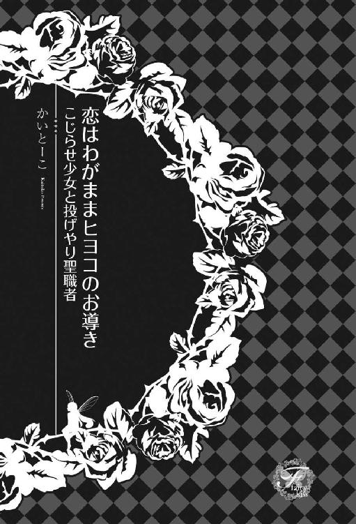
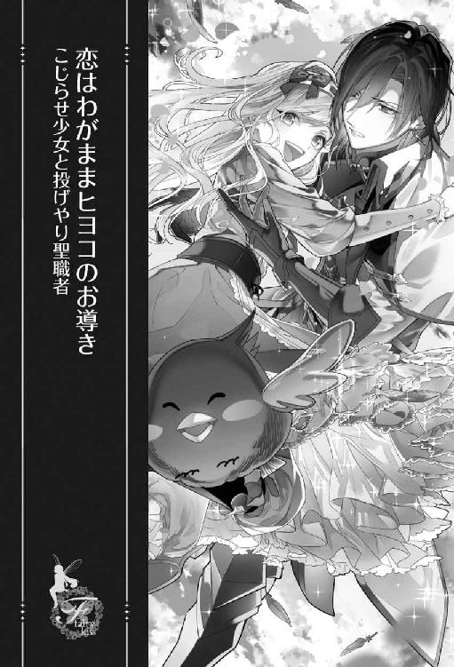
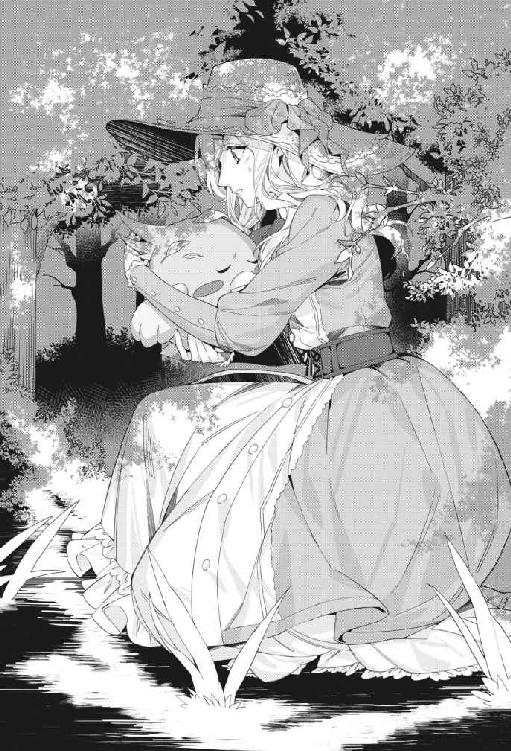
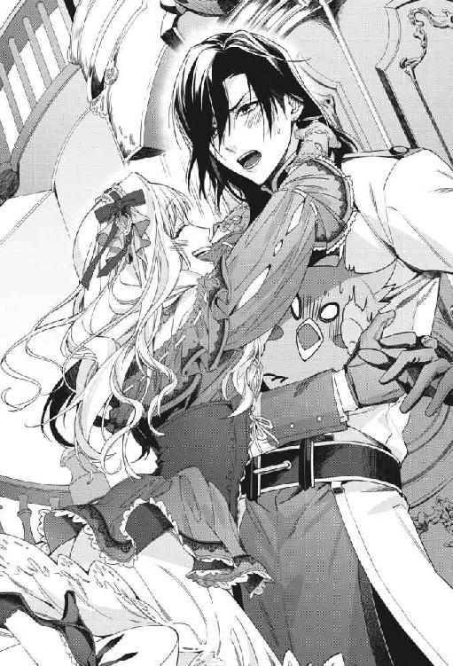
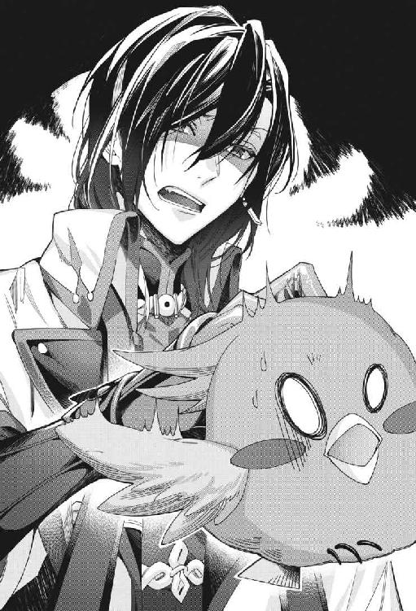
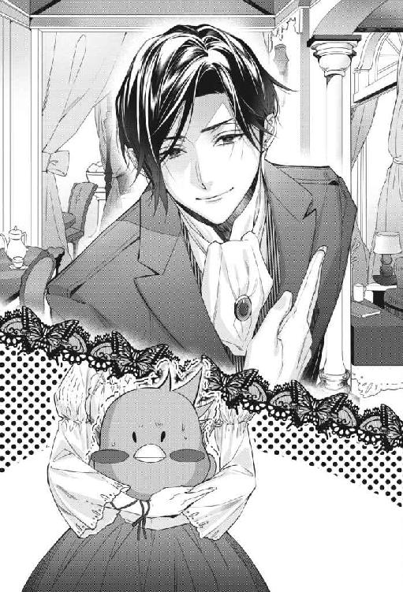
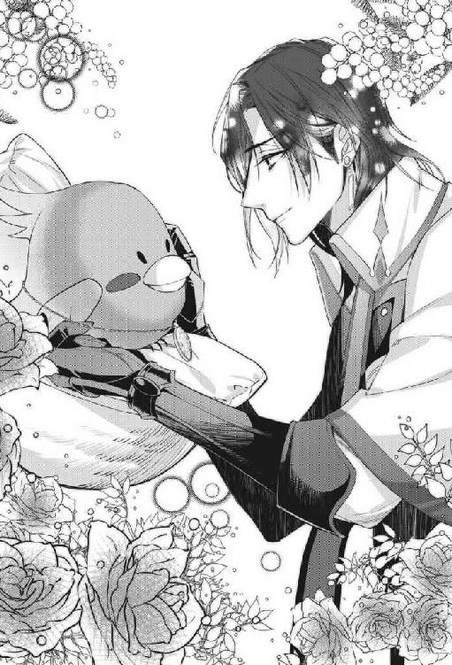
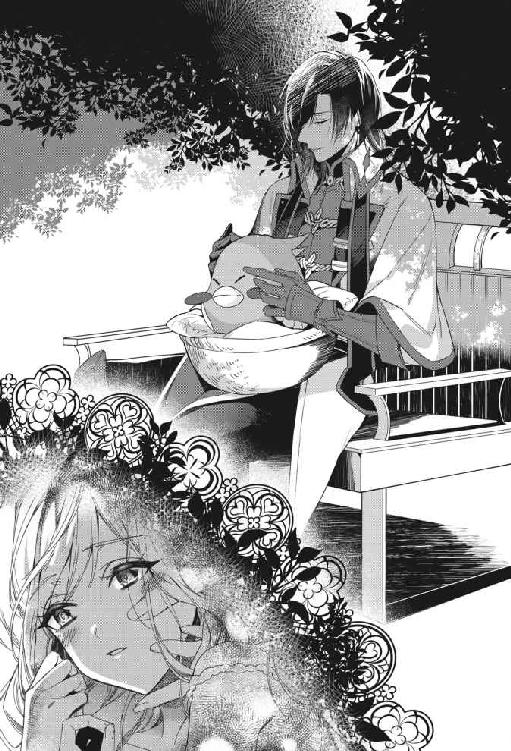
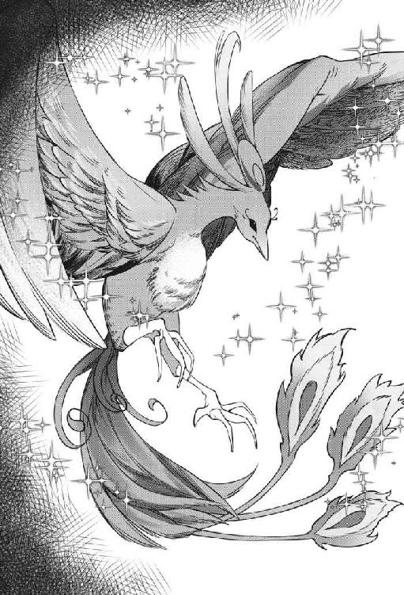
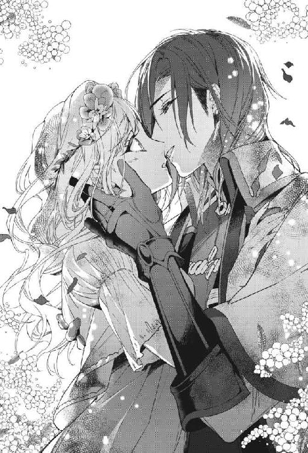

| 恋はわがままヒヨコのお導き こじらせ少女と投げやり聖職者【初回限定SS付】【イラスト付】 (フェアリーキス) | |
| かいとーこ | |
| 株式会社ジュリアンパブリッシング (2018) | |

この作品はフィクションです。
実際の人物・団体・事件などに一切関係ありません。

一章 神鳥の世話係
人の子供は成長する。
大人にはなりたくないと願っていても時と共に成長してしまう。中身が子供のままでも肉体は成長して、老いていく。
だが時と共には成長しない存在も、世の中にはいる。
「お世話になりました」
若い女は頭を垂れた。些細なことに瞳を輝かせたあどけない少女は、出会った頃よりも大人びて、たった一年弱で落ち着いた大人の女性になっていた。
いつものこと──さらにこの期間は行儀見習いも兼ねていたとはいえ、女性の成長には毎度驚かされる。
「今までご苦労だったな」
「スヴェル様とお別れするのは、とても......寂しゅうございます。もう会えないと思うと、私......」
スヴェルを見上げていた彼女は、俯いて目尻の涙を拭いた。別れを惜しまれるようなことをした覚えはないが、慕ってくれているのは本心だと分かる。だがそれは決して、彼女が仕えていた存在には向けられなかった感情だった。
「アリス様からもご挨拶を」
最後なのだからとスヴェルが主に呼びかけると、主であるそれはぷいと横を向いた。
「コラ、この馬鹿神鳥！」
スヴェルは、子供が蹴って遊ぶのにちょうどいい大きさのボールに似た、まん丸な青い鳥の首根っこを摑んで持ち上げた。
これが、この不死鳥院の主人である神鳥と呼ばれる聖なる鳥だ。
「アリス！ 世話になった相手には、礼を尽くせと何度言ったら分かる！」
「世話になんてなってないわ。だってその子はスヴェルにばかり媚びて、わたしのことなんて嫌ってたもん。だからわたしはちっとも大きくならなくて、無駄な一年だったでしょ」
一年足らずでここを出ていく女は、顔を引きつらせた。確かに、彼女は不死鳥院の巫女の中で神鳥の世話係という特別な役目を負っていたにもかかわらず、『神鳥の雛であるアリスを成長させる』という使命を果たせなかった。
「勝手に嫌っていたのはおまえの方だろ。嫁入りはめでたいことなのだから、素直に祝って送り出せ。そうやって大人げないから大人になれないんだ」
神鳥アリスと彼女は最初から良好な関係ではなかった。アリスは女としての性なのか、スヴェルに近づく女はとりあえず威嚇し、一方彼女は神鳥に嫌われたと諦めてしまい、使命を果たせない焦りで周囲の視線を気にして、ここでの生活を苦痛に思っていた。
だが彼女はこれから裕福な商家の若旦那に嫁入りする。彼女にしてみれば、仕事は上手くいかなかったものの、無事に肩の荷が下りるのだ。
「では、私はこれで」
いたたまれなくなったのか、彼女は再び頭を垂れて早く行こうとした。
「ああ。嫁ぎ先で何か問題があれば遠慮なく頼ってくれ。元気でな」
「......はい」
不安があるのか、彼女は少し元気のない返事をした。
「君の幸せを心から願っているよ」
彼女がため息をついて背を向ける。何か言いたげな様子だったが、何も言わない。ここを去る女はよくこういう態度を取る。スヴェルが不死鳥院に来てもう十人目だから、これにも慣れた。子供の頃は気付きもしなかったが、大人になっても気付かないふりをしているので彼女らからすれば大差ないだろう。
「ふん。身の程知らずな女だったね！」
間抜け面のまん丸な雛鳥は、短い足をぺたぺた床に打ちつける。この嫉妬深いしゃべる鳥がもう少し人間を信用しなければ、何も前進しないだろう。しかし疑う気持ちも理解できる。
スヴェルもため息をついて、鶏ほどのそれの首根っこを摑んで持ち上げた。
「まったく、聖なる鳥のくせに意地悪だから大人になれないんじゃないか？ 疑うことを知らない無垢な神鳥なら、すぐに大人になれそうな気がするぞ」
「ちがうわ！ 世話係の選び方が悪いのよ！ 人間の基準なんかで候補者を集めてたら、運命の相手なんて見つかるはずないでしょ！ 神鳥の巫女の選び方が、あんなインチキな方法じゃだめよ！」
「それは私も思ってはいるが」
これまでは、候補者を一カ所に集めて、御印を投げることで選んでいた。しかし本来は候補者など集めず、冬の強い風で、羽根を加工した御印を飛ばすのが正しいやり方だ。
「だから今度は、私が選ぶ！」
「おまえ、容姿で選ぶつもりだろ」
「ちゃんと風に任せる！ 天主様は、きっとすっごい美人を選んでくれる！」
「老婆だったら？」
「おばあちゃんって、優しい人と、意地悪な人の差が激しいから、優しい人ならいいな！」
自分の身体をよじ登ろうとする大きな雛鳥を腕に抱き、スヴェルは彼女の頰を撫でた。
「そうだな。優しい人だといいな」
心地よさげに撫でられ続ける神鳥は、こうしていればとても可愛らしい。
「アリスが苛めるのを躊躇うぐらい良い人なら、私も楽になるのだが」
「苛めないよ。わたしが苛めてるんじゃないの。わたしが苛められるの！」
スヴェルはため息をついた。傅いているにもかかわらず苛めているなど、鳥の感覚は分からない。
「次は、脳天気な女がいいな。嫌われているのに気付かず、見た目さえ可愛ければちやほやしてくれるような、押しつけがましい女がいい」
「そんな鈍い女は嫌！ スヴェルに色目を使わない、純粋で優しい子がいいわ」
「どんな女になるか分からないのが、『正しいやり方』の欠点なのは理解できたか？ それに、あれは冬にやるものだ。だから冬でない時は今までみたいな簡易式でやっているんだ」
「季節なんて関係ないよ！ うん。きっと、可愛くていい子が選ばれるよ！」
神鳥は前向きに翼を羽ばたかせた。
「前の時も、似たようなことを言っていたけどな」
しかし前の世話係がスヴェルばかり気にしていたため、アリスが攻撃的になり信頼関係を結ぶことはできなかった。あの娘も表向きは丁寧な対応をしていたが、心の底では早く奉公が終わればいいとじっと待っていた。この役目は約一年で交替するため、彼女達は我慢することを選択する。鳥好きの女に当たると、可愛がってもらえると思うのだが、不思議と集まるのは動物すら好きではない女が多かった。
「時間の無駄だったな」
どんな人物であれ、やる気がなければ時間の無駄だ。
（次は、少しは有意義だったと思える女であればいいのだが......）
そうは願うが、自然の摂理を曲げようとする人間の業が、上手くいくとは限らない。
「スヴェル、時間の無駄が嫌なら、早速儀式の準備をしましょう！ ちゃんとした儀式なんてやったことないから、ちゃんとしないと！」
短い足で歩いていたアリスは振り返ってスヴェルを睨んだ。
「運命を動かすのは、運命に選ばれた人間だけって、わたしの守護天使様も言ってたもん！」
「天使なんて胡散臭い存在の言葉を真に受けるな」
スヴェルはため息をついた。
「本来のやり方で選ぶなら市民に布令を出さなければな。このような彼らを巻き込むやり方は、私が生まれるより前に廃れたらしいから」
選ばれた本人が、こんな一年近く束縛されるような役目に納得しない場合もあるため、廃れたのも無理はない。
「そんなだから、効率が落ちたんだよきっと！ 手抜きはダメなのよ！」
アリスはぷりぷりと怒って、身体を横に揺らした。
「わたしは、理想の巫女を自分で手に入れる！」
自分で選んだ方法で見つけたなら、たとえ気に入らない相手でも、黙って受け入れるかもしれない。
そうであればいいなと、スヴェルは心から天に祈った。
◆ ◇ ◆ ◇ ◆
世界は天の愛に満ちている──と、天使が言った。
神鳥は天の愛と、人々の愛で成長すると言われている。だから神鳥の雛もいつか大人になる。だが普通に育つのを待つと、大人になるまでにとても長い時間が必要になる。すると人間達はとても困る。天候を操る力を持つ神鳥の加護がなければ、嵐や高波などの大きな災害を防ぐことができない。この一帯は海辺の街ばかりで、その加護が必要になる時が必ずやってくる。
だから神鳥は一日でも早く大人になるべきで、そのためにも本来のやり方で天の導きを求めたのだが──。
「天の導きがこんなに複雑だなんて！」
アリスは一日の出来事を振り返りながら、馬車の中で驚いていた。日の出と共に、海の前にある不死鳥院から海風に乗せて御印を飛ばした。神鳥の羽根とキラキラ光る綺麗なリボンだ。これがどこかの民家の屋根に落ちて、そこに未婚の女がいればそれが世話係となる巫女だ。とても単純な話だった。
しかし御印は不思議なことにどこの家の屋根にも落ちなかった。未婚の女がいなかったのではない。家を選びすらしなかった。
それは海風に飛ばされて、高く高く飛び、何もないところに落ちた。仕方なく、そこからもう一度御印を飛ばした。しかしそこは地面だった。
何度も繰り返すうち、御印は郊外に出て、近くの山を越えたところまで来ていた。この辺りは美しい砂浜があるため、少し行けば富裕層の別荘が立ち並んでいるはずだ。
きっとそこに落ちるに違いないと信じて御印を飛ばしたら、今度は見失ってしまったのだ。アリスが愚痴を垂れるのも無理はない。
「この選び方で適任者は見つからないという天の導きだろう。日も暮れてきたし、諦めるか」
スヴェルが小さな明かりで本を読みながら言った。アリスはその姿をうっとりと見つめる。
彼の横顔は天使像によく似ている。とても綺麗な綺麗な、人間が想像をこらして丹精込めて作った天使像。芸術品のような綺麗な横顔には、倦怠感がにじみ出ていた。アリスにとっては、それがまたいいのだ。
「スヴェルは本当にそんなこと思ってるの？」
「季節が限定される意味はあったんだなぁと。何しろ冬とは風向きが違うから、人の少ない方へと飛んでしまった。何事もやってみないと分からないものだ」
スヴェルはうっすらと遠くに星が見え始めた空を見て言う。
「それでも家はあったのに、あんなに綺麗に屋根を避けるなんて、どう考えても風向き以前の問題よ！ むしろこれは天の導き！ きっとどこかにいるのよ！ 可憐なお姫様みたいな女の子が！」
「馬鹿か。その御印が行方不明なんだ。そろそろ存在しない完璧な美女を求めるのは諦めろ」
スヴェルは導きを信じず、諦めきって本を読みながら言った。
「スヴェルは信じる心が弱すぎるわ！ わたしは天の導きを信じる！」
アリスはそう言って、スヴェルの腕から抜け出し、窓枠から足の爪を使って装飾の多い馬車の壁を伝い、屋根の上に登った。
世話係とは違う普通の巫女達が悲鳴を上げ、下ろそうとしたがアリスは気にしなかった。
「きっといるわ、天の導きを待つ心優しい美少女が！ 森の似合う深窓の令嬢が！」
「選ばれたら深窓じゃなくなるんじゃないか？ どんな清らかな乙女も、俗世に揉まれれば清らかさなぞ簡単に失って」
「夢がないわね！ とにかく御印は近くにあるはず！ きっといい結果を出してくれるはず！ もう少し見渡しやすい位置に移動！」
見やすいように、開けた小高い場所まで馬車を移動させ、アリスはじぃっと目をこらす。
御印には光を反射させるリボンが付いている。まだかろうじて残る夕日が、これから明るくなる月明かりが、きっと導いてくれるはずだった。
高い場所だから、遠くに不死鳥院の尖塔の先と、神の頂と呼ばれる山と海とが見える。
が、探すべきは家なので、海岸線に沿って視線を動かしながら振り向いた。
美しい自然に頑張れと言われているような気がしてさらに目をこらす。
「アリス、おまえ、鳥目だろ。巫女達が探しているんだから、意味のないことをするな」
「夜は視力が落ちるけど、人間程度はあるもん！ スヴェルの読書用の明かりが邪魔なのよ！」
スヴェルのやる気のない声と態度も、アリスの情熱には焼け石に水だった。
「ふむむ、ふむむ」
アリスは首を伸ばしたり下げたりして、なおも目をこらした。スヴェルが読書を諦めて明かりを消したおかげか、月明かりでわずかにきらりと光るものが見えた気がした。
「ほら、見つけたっ！」
アリスは翼を広げ、ぴょんと飛び立った。
しかしアリスは、まだ滑空すらできない神鳥の雛である。
華麗に着地するつもりが、足が滑ってぽとりと地面に落ちた。
アリスのとても可愛らしい丸みと弾力のある身体は、軽く跳ねた。
「まだよっ」
そのまま再び華麗に着地して誤魔化すつもりが、肩から落ちた。丸い身体では勢いが殺せず、身体はころりころりと転がった。
そして不幸にも馬車から少し離れたそこは、斜面の始まりだった。
「ぴゃ、ぴゃあああああっ!?」
「きゃあ、神鳥様っ!?」
巫女達の悲鳴が聞こえた。
「アリスっ！」
愛するスヴェルの美声も聞こえた。だが、世界一可愛いこの丸い身体は、ころころ転がるのを止められなかった。
◆ ◇ ◆ ◇ ◆
日が暮れる。
光を得られぬからこそ憎い太陽が沈む。目覚めたばかりのルシルは気だるく憂鬱な気分で、部屋を見回した。
「はぁ。景色が変わっても、楽しめるのは最初の数日だけね。どうせ海も見られないし、あるのは代わり映えしないパーティーと、うんざりする出会いだけ」
この身を焼く太陽はどこにいても変わらない。天で輝く空の象徴は、沈む姿も変わらない。
それと同じようにパーティーの本質も変わらない。少し趣向は違っても、参加している人間は似たようなもので、獰猛な男達はルシルを上辺だけで判断し、獲物を狙う肉食獣のようなぎらついた目を向け、健康な女達は自らの幸福を理解せずにルシルに嫉妬の目を向ける。
「せめて、ああいう欲望丸出しじゃない人と出会いたいわ。お友達になれるような......」
しかし母は、諦めずにルシルの嫁ぎ先を探している。信用できて、誠実な相手を。
誠実な相手はあんなことはしないだろうに、母はそれが分からないと言う。彼女は美しくても、普通の幸福な女だからだ。しかしルシルはそうではないから、悪意の芽に気づかぬふりはできない。
「ぴぃぃぃぃぃぃいっ!?」
ルシルがため息をついた時、奇妙な音が鳴り響いた。
「ぴぴぃぃぃぃっ!?」
奇妙な音がどんどん近づいてくるのに気付き、そっと窓の暗幕を持ち上げて外を見る。元々は日差しを天敵とする書庫として使われていた北側の部屋であるため、日は沈みきっていないのにとても暗かった。
目をこらして何が近づいているのか確認しようとすると、何かが甲高い悲鳴を上げながら、ころころと山の斜面を転がってくるのが見えた。そして屋敷の手前で木にぶつかって止まると、同時にあの奇妙な音も消えていた。
「な......何？ 何なの？ 男の人ではないわよね？」
人間の男なら使用人を呼んで叩きのめしてもらわなければならないが、この甲高い悲鳴に似た鳴き声は違う。もっと小さくて、可愛らしいもののように思えた。
なおも目をこらすと、薄明かりの中見えたのは、ボールに似た何かだった。しかしそれがボールではないのは、先ほどの鳴き声と、起き上がろうともがき、ぷるぷると震えている今の姿から明らかだった。
「ど、動物!? 大変だわ！」
ルシルは慌てて上着を羽織り、顔が隠れる帽子をかぶって窓から外に出た。わずかに昼の力が残る戸外に出るのは緊張したものの、それでも何とか外に出た。経験から大丈夫だとは理解している。
まるで甲高い人間の子供のような悲鳴だったが、動物の中には人間に近い鳴き声を出すものもいる。見たこともない生き物のように思えたが、外に出られないルシルが知る動物などたかが知れている。
ルシルが抱き上げると、それはぐったりと力をなくした。

暗くてどういった生き物なのかは分からないが、丸くてふんわりした生き物だった。
「ああ、可哀想に。怪我をしていないかしら。すぐに手当てをしてあげるからね」
どこかの心ない子供が蹴って遊んで、転がってきたのかもしれない。以前住んでいたところに、ルシルをからかうために窓の外から石を投げてきた子供がいたのだ。子供とはたまに恐ろしい生き物である。
ルシルが部屋に戻ろうと立ち上がると、突然目の前に何かが降ってきた。足を止めて手で摑むと、手首にぴりっと痛みが走った気がした。
「っ......何これ。布？」
手触りからして、薄く長い布だ。先端に飾りがついているので、それが手首に引っかかって痛みが走ったのだろう。
「リボンかしら？ どうしてこんなところに......まさか女の子がこの子を苛めたの？」
「くぴぃ」
腕の中で小さく丸い動物が苦しげに鳴いた。誰に苛められたとしても、ひどいことには変わりはない。
「抵抗できない相手を苛めるなんてひどい人だわ。待っていてね。すぐに手当てしてあげる」
動物とリボンを手にしたルシルは出てきた窓から部屋に入る。そしてその動物をソファに置くと、燭台に火を灯した。部屋は明るくなり、ベッドと机、実家から持ってきたチェストや、香りのいい干し草花が壁に掛かっているのがはっきり見えるようになった。ここが今のルシルが安心して過ごせる、小さな世界だ。
それからもう一度、転がってきた生き物を見た。
「あら？ 鳥？」
ルシルは驚いた。意外なことに、それは一抱えもあるまん丸な鳥の姿をしていた。成鳥ではない。大きいがその姿はまだあどけない雛だ。
「ふわふわだと思ったら、まだヒヨコさんだったのね」
ふわふわした感触そのままの、柔らかそうな羽根は、見たこともない美しい青色をしている。つぶらな瞳は黒くてまん丸。幼さを感じる小さなくちばし。そして頭からは小さな可愛い冠羽がぴょこりと飛び出ている。おとぎ話に出てきそうな、可愛らしい生き物だった。
「ヒヨコなのに冠羽は立派ね。でも、何て綺麗な色なのかしら。将来はさぞ立派な雄鳥になるんでしょうね」
「誰が雄鳥よ！」
大きく成長した青い鳥の姿を想像していたら、突然その鳥が怒ったように飛び上がった。
「え、ヒ、ヒヨコがしゃべった!?」
ルシルは驚いて手にしていた布を落とした。
「男の方が長いけど、女にだって、冠羽ぐらいあるわよ！」
雌鳥はぶわっと顔を膨らませた。怒っているようだ。
「......そういえば鳥は言葉を覚えるって言うから、しゃべってもおかしくないわね。びっくりした」
初めてのことなので驚いたが、鳥は教えれば言葉を話すと本で読んだ。
「男の子だなんて言ってごめんなさい。許してくれないかしら」
鳥には幼児ぐらいの知能を持つものもいるとも書いてあったから、男の子と間違えられて怒るのも不思議ではない。
「ふん。素直に謝ったから許してあげるわ。でも、あなた意外と冷静ね」
彼女は気位の高そうな話し方をした。しゃべる鳥というのがこれほど賢いとは思っていなかった。そうなると、何という種類の鳥か気になった。
「あなたは......インコ......いえ、大きいからオウムのひよこさんかしら」
これも本で読んだ。とても華やかな美しい羽根を持つ、しゃべる鳥のはずだ。
「違うわよ！ 誰がオウムよ！ 失礼ね！」
青い鳥が即座に否定した。
「違うの？ ごめんなさい。あなたは何ていう鳥なの？」
「私は神鳥よ」
「シンチョー？」
「神鳥！」
「ごめんなさい。私、先週ここに来たばかりで、あなたみたいな鳥は初めて見たの」
ルシルは必死に訴える鳥に謝った。
「世の中にはこんな賢い鳥がいるなんて知らなかったわ。それに青い鳥なんて縁起もいいし、とっても綺麗な羽根。まるで宝石のように輝いているわ」
「あ、当たり前じゃない。わたしは世界一の美少女なんだから！」
鳥は少し恥ずかしそうに顔をそらした。本当に会話を理解しているようだ。
「すごいわ。本当に賢いのね。シンチョウってどの種類の鳥に近いのかしら。図鑑でも見たことがないわ」
見たところ怪我もなさそうなので、ルシルはその鳥に触れた。
「だから神鳥なの！ 天主の愛鳥なの！ 天を操る鳥なの！」
そういう大げさな逸話のある動物は少なくない。ましてやこれだけ賢いなら、そういう伝説があってもおかしくない。誰かにそう教えられたのを覚えたのだろうと、ルシルは微笑ましく思った。
「そうなの。すごいわね。ところであなたの羽根に触ってもいいかしら。小枝や枯れ葉で汚れているから綺麗にしなきゃ」
「仕方ないわね。わたしの手入れをするのを許してあげるわ。本来なら、清めていない手だと触れるのも許されないんだから、ありがたく思うのよ」
青い鳥は横柄に許可を出した。鳥だからそんな生意気な態度も可愛らしかった。人間の男に偉ぶられたらこんな気持ちにはならない。
汚れを取っていると、謎の大きな雛鳥は気持ちよさそうに目を細める。雛だからか、今まで触れたどの鳥より、ふんわりもこもこした羽毛だった。
「ところであなたの飼い主はどこのどなた？」
「飼い主じゃないの！ 守護者なの！ 神鳥の守護者！ とっても格好いいんだから！」
自分のことを格好いいと教え込んでいる飼い主がいるようだ。しかも守護者などと名乗っている。いささか痛々しいが、可愛らしい愛鳥に格好いいと言ってもらいたいという気持ちは、分からなくもない。
「そう。その方はどこに？ あなた、どうしてこんな所に転がってきたの？」
「山の方から来たの。御印がこの屋敷に飛んでいって、追いかけてきたら転んじゃったの」
「御印？」
「その布のついた羽根よ。きらきら光る糸を織り込んであるから、離れていても分かるの！」
ルシルは手に持ったままのリボンを見た。贅沢な薄絹に、青い羽根が付いていた。この羽根の軸が先ほど手首に刺さったようだ。
「これがシンチョウの羽根？」
「神鳥は通り名で、名前はアリスよ。スヴェルがつけてくれたの！」
「アリス。可愛い名前ね」
自分を格好いいだの、鳥に世界一の美少女だのと教え込んだり、可愛らしい名前をつけたりする男性が飼い主のようだ。気持ちは分からなくもない。可愛らしい生き物が好きな人物がいい人とは限らないが、少なくとも彼女にとっては世界一の男なのだろう。
「そのスヴェルという人がどこにいるか分かる？」
「スヴェルはわたしのよ！ あげないんだからね！」
アリスは翼を広げて威嚇した。自分の好きな人を取られそうになっている女の子のようだ。動物も嫉妬するのは知っていたが、こんな風に嫉妬していたのだと、笑ってしまいそうになった。
「とらないわ。私、男の人は苦手だもの。ただ使用人に頼んで、アリスがここにいるって知らせてもらうだけよ」
ルシルは、アリスの身体から細かな砂を取り除きながら言う。すると彼女は落ち着き、再びルシルの手に身をゆだねた。
「そう。ならいいわ。それにあなた、使用人がいるお嬢様なのね。この部屋は暗いけど、家は広そうだし、うん、いいわ。優しそうだし、とっても綺麗だし、合格！ 肌は雪のようで、目は綺麗な青紫で珍しいわね！」
アリスはルシルの顔をのぞき込むと、首を上下に揺らして観察し、ルシルの手に頰をすり寄せた。
色素が薄いため、見た目を珍しがられるのには慣れている。男性の言う『綺麗』と違って、無邪気な鳥の言葉なので嫌な感じもしない。鳥は色鮮やかな物を好むから、そういう意味でルシルの目を綺麗だと言っているのだろう。（ルシルの肌の中でも手は）荒れても比較的気にならない箇所なので、こうしてすり寄ってこられるのも気にならない。
だが、鳥が使用人や家に反応するのは少し不思議だった。
「ここは私の家ではなく親戚の別荘なの。お母様がお友達に会うために使わせてもらっているのよ」
弱々しい己の肌のことには触れず、家のことについて説明した。その母の友人がルシルのためにたくさん若い男性がいるパーティーに連れて行ってくれたのだ。おかげで、男性の本質はどこに行っても同じだというのが分かった。だが、男性の飼い主を純粋に慕っている彼女に、そういった負の感情を見せるのは躊躇われた。
「それで神鳥を知らないのね。合点がいったわ」
アリスはぴょんと飛んでルシルの腕に飛び込んだ。どこも怪我はしていないようだった。
「さあ、暗くなる前にスヴェルを迎えに行きましょう！」
直接飼い主のもとへ連れていけということらしい。
「ごめんなさい。裏庭は木が生い茂っているから良かったけど、私はもっと暗くならないと外を歩けないの。今すぐ戻りたいのなら使用人に案内させるわ」
ルシルは申し訳なく思いながら断った。すると可愛らしい鳥が驚いた顔をする。
「どうして？ 暗くなる前じゃなくて、暗くなったらいいってこと？」
「ええ。私は肌が弱くて、少しでも日に当たるとひどく荒れてしまうの」
すると、鳥の羽根がぶわっと広がった。ただでさえ丸い身体が、球体のようにまん丸になる。
「どうしたの？ いきなり膨れたわ」
「びっくりしただけ！ あなた特別なのね！ 本物の深窓のお嬢様なのね！ だからお嬢様なのに、こんな日の差さない暗い部屋にいるの？」
アリスはなぜか興奮気味に身を乗り出した。
「え......ええ。嫌がらせでこの北部屋を与えられているわけではないわ。たまに誤解を受けるけど、ここは日の光を浴びられない私にとっては一番いい部屋なの。みんなとてもよくしてくれているのよ」
こんな厄介な体質の娘に対しても、こうして配慮して、将来を心配して、可愛がってくれている。ありがたいが、迷惑な話だった。
「そっか。虐げられてるんじゃないのね。良かったわ。うん、良かったわ！」
アリスは短い首で頷く。膨らんでいた身体も小さく戻っていた。
「じゃあ、日が暮れるまで待とう。その内スヴェルが来てくれるよ！」
腕の中で短い翼をぱたぱた動かす。嬉しそうな様子からして、迎えに来ると信じて疑っていない。彼女にとっては、スヴェルという人は無条件で信頼できる飼い主なのだ。
「じゃあ、お客様が来るって、誰かに伝えないと」
「そうね！ 追い返されたら大変だもの！ スヴェルにあなたを自慢しなくちゃ！」
男性にはあまり会いたくないから、使用人にまかせるつもりなのだが、彼女は会って当然だと思っているらしい。
「そのスヴェルって人は既婚者？」
「独身よ。あ、でも、スヴェルはわたしのだから、あげないからね！」
アリスは再び独占欲を見せる。アリスだけに夢中になっている愛すべき鳥馬鹿ならいいのだが、彼が普通の男性で、アリスを口実にしつこくしてこないか心配になる。
ルシルはどう対面を回避するか悩みながらアリスを抱えて部屋を出た。知らない人間は苦手だが、動物は好きなので思わず撫でていると、彼女は目を細めて心地よさそうにした。
「ほっぺたが気持ちいいの。くちばしもいいわ」
「自分が触ってもらいたい場所を申告してもらえるなんて、楽でいいわね。前に飼っていた犬はとっても気むずかしかったわ」
「猫じゃないのね。猫を飼っている人とは気が合わないから良かったわ。人間はあいつらを可愛がるけど、猫はわたしを見るとすっごく凶悪な顔をして、爪を立ててくるのよ」
この屋敷にもねずみ取りの猫がいるとは言わない方が良さそうだ。こうして抱いていれば、猫は寄ってこないのだから。
「ねえねえ、あっちの方が騒がしいよ！」
アリスがルシルの手首をくちばしでつついて訴えた。
「玄関の方だわ。もう迎えが来たのかしら？ 早く来てくれて、良かったわね」
もう少しこの珍しい鳥とお話していたかったが仕方ない。これだけ迎えが早いのは、大切にされている証だ。この鳥とは出会って間もないが、それが嬉しかった。
玄関まで来ると、使用人が来客の対応をしていた。
「スヴェル！」
玄関の外にいる誰かを見て、アリスは喜んだ。
使用人と話していたのは若い男だった。鳥相手に自画自賛する飼い主だから、もっと気の弱そうな内向的な人を想像していたが、知的で堂々とした雰囲気の、背の高い男性だ。うらやましい、綺麗な黒髪をしている。ルシルの銀髪は幽霊のようだと不気味がられるので好きではない。
あの容貌を見る限り、格好いいというのは本人が教えたのではなく、誰かがそう言っているのを聞いて覚えたのかもしれないと考え直した。
背が高くて落ち着いた雰囲気の男性は格好いいのだと、友人の女の子も言っていた。外に出られないせいで、美的感覚がずれていると言われがちなルシルから見ても、彼の容姿は整っているように思えた。
「スヴェル、スヴェル！ 見つけたよ、見つけたよ！」
「アリス......おまえ......」
そのスヴェルという男性は驚いたように目を見開いた。彼が見ているのはアリスではなく、ルシルのような気がして違和感を覚える。
「アリス、本当に......その女なのか？」
「そうだよ！」
「その女」などと言われて、本当にルシルを見ていたのだと気付き、先ほどとは違う意味で困惑した。男性に声をかけられることはよくあるが、それとは雰囲気が違った。
その目に好意的なものはなく、むしろ冷ややかで忌々しげな視線を放っていたのだ。求愛してくる男達の目も嫌いだが、さすがにこれほど冷ややかな目を向けられるのも、いい気はしなかった。
「たまたま見つけた好みの女に、御印を渡したんじゃないのか？」
「違うよ！ わたしを拾ってくれたところに、ふわっ、て御印がこの子の頭に落ちてきたんだよ！ すごいの！ 天の導きって本当にすごい！ 天主様が本当に導いてくれたの！」
アリスはルシルを見上げて、大興奮しながら訴えた。先ほども天主の愛鳥を名乗っていたことだし、天高くに座すと言われている神をこの鳥も信じているようだ。
「アリスはこのリボンを見つけられてそんなに嬉しかったんだ」
あまりの喜びように、少し微笑ましくなる。
綺麗な飾りだ。鳥には綺麗な宝物を集める習性があるから、これだけ賢い彼女が大切にしていても不思議ではない。
「......本当に、君が拾ったのか？」
スヴェルは、ルシルを見て戸惑った表情で問いかけた。先ほどよりは刺々しさが減っている気がしたが、それでも疑われているのが分かり、いい気はしなかった。
「ええ。風で飛ばされてきたみたい」
盗んだと勘違いされてはたまらない。
「アリス、何か仕組んだだろう」
スヴェルの表情から驚きが完全に消えたかと思うと、先ほどよりも冷たく己の鳥に言い放った。鳥を甘やかす優しい飼い主という印象とはかけ離れていた。
「スヴェルはどうしてそんなに疑うの!? こんなに素敵な天の導きを疑うなんて、天使様がお嘆きになるわよ！」
「では、たまたまおまえが転がっていった先に、おまえの理想の外見をした若い女がいたと」
「いたのよ！ 転んで目を回してたら助けてもらったの！ すごく偶然！ 天の導き！」
スヴェルの疑い方からして、アリスは疑われるようなことをよくするようだ。
思わず笑うと、腕の中でアリスが不機嫌そうに小さな翼を動かした。
「ルシル、何を笑ってるの？ 天の意思が疑われているのよ！」
そうして身体を膨らませる。スヴェルはアリスとルシルを見比べて訊ねた。
「君は......見たことがない顔だが、この家の所有者の娘か？」
落ち着いているというより、無愛想と言った方がいいような、興味なさげな表情だった。
「いいえ。避暑のために親戚の別荘にしばらくお邪魔しているだけよ。この子は本当にたまたま私の部屋の前に転がってきたの。少し汚れたけど、怪我はしていないわ」
「自分の体型も能力も考えずに走って崖を転がり落ちたのに、怪我がなくて良かったな」
街道の近くに崖のごとき急な坂があり、そこを転がって屋敷の裏にたどり着いたようだ。
「わたしの日頃の行いが良かったおかげね！」
「嫌味だよ。まったく、人騒がせな神鳥様だ。おまえに何かあったらどうするんだ」
スヴェルはため息をついてアリスを睨みつけた。危ないことをしたから、怒っているようだ。
「結果が良ければいいでしょ。撫でてくれるし、可愛がってくれるし、深窓の美少女よ！」
「......初対面から嫌われていないようなら、良かったよ」
スヴェルはまたため息をつく。その時初めて気付いたが、彼は聖職者のような青と白のゆったりとした服を着ていた。アリスも天の導きだのと言っていたが、それは聖職者である彼が教えたのだろう。
アリスが熱く語っていた繊細そうな印象の人物が、まさか聖職者だとは思いもしなかった。
「そうだ。使用人にも話をしていたのだが、君の保護者に少し話をしたい」
「話を？ 何か困ったことがあるの？」
アリスを迎えに来て終わりだと思っていたので、ルシルは顔を強ばらせた。
ずいぶんと若く、二十歳そこそこ、下手をすれば十代にも見えた。身なりが整っているので、それなりの地位がある聖職者なのは間違いない。ルシルは聖職者全般が苦手だったが、中でもこういう地位のありそうな男性が特に苦手だった。この国の聖職者は婚姻可能なので、こんな風に親に会わせろと言われる時はだいたい求婚なのだ。本人が目の前にいるのに、所有者に話をつけて譲ってもらうとする質の悪い男が多い。
「私は不死鳥院の者だ」
「不死鳥院？」
「知らないのか？」
意外そうな顔をした。この辺りでは有名らしい。
「ルシルお嬢様、不死鳥院は港町にある大きな神殿です。天主様の愛鳥を祀っているという」
使用人はルシルが抱えている鳥を見ながら言った。その祀られているのが、アリスのようだ。そのように神聖な存在というには可愛らしすぎるせいか、使用人は胡散臭そうに見ている。
ルシルはアリスを見た。神鳥などという大層な鳥だった驚きと、聖職者に甘やかされているという不信感で複雑になったルシルの気も知らず、アリスはただ自慢げだった。可愛らしさに、憎たらしさが交じった。
「そんなに珍しい鳥だったの。図鑑で見たことがなかったのは、宗教が絡むからなのかしら」
「珍しいなんてもんじゃないわ！ わたし一人しかいないのよ！」
絶滅危惧種ということか。だとしたら、さぞ大切にされているのだろう。
「本当に知らないのか。この辺りに住む者で知らぬ者はいないと思っていた」
「ルシルお嬢様はこの地方には初めていらっしゃいました。それにお嬢様は幼少の頃よりご病気であまり外に出られないので、俗世のことをあまりご存じないのです」
執事が言うと、スヴェルは納得した。
「そうか......なら仕方ない。説明すると長くなるが、その神鳥は特別でな。君の保護者にも話をしたい。いるだろうか？ 神鳥の巫女について話をしたい」
「そんなっ」
神鳥の巫女と聞いて、使用人達がざわめいた。理解できなかったのはルシルだけのようだった。
「......少しお待ちを。お嬢様、皆様を応接室にご案内いただけますか？」
執事の様子を見て、ルシルは戸惑いを覚えた。
「え、ええ。お母様を呼んできて」
「はい。すぐに」
使用人達がなぜこうも慌てているのか理解できなかったが、無理なものは無理であると一番よく知っている母に説得してもらえば、彼も諦めて帰るだろう。母も娘を聖職者に嫁がせたいとは思わないはずだから、何を言われても断ってくれるはずだ。
◆ ◇ ◆ ◇ ◆
執事に連れられてやってきた母は、蒼白な顔をしていた。
「娘は身体が弱いのです。お引き取りください！」
母は珍しく男性に向かって声を荒らげた。いつも男性を立てて、男性に従う傾向のある母が、若者相手とはいえこのような態度を取るのは珍しい。
「神鳥様には人を癒やす力がある。むしろ身体の弱い者こそこの役目を引き受けるべきです」
「身体が弱いと言っても、普通の病気ではないのです」
ルシルの母に睨まれても、アリスはスヴェルに撫でられてご機嫌だった。スヴェルはほとんど無意識のようにアリスを撫でている。いつもそうしているのだろう。前に飼っていた犬も、撫でるのをやめると怒るから、本を読みながら無意識に撫で続けた覚えがある。
「この子は肌が弱く、少しでも太陽に当たると肌が焼けただれるのです」
「太陽に？」
「はい。日焼け程度ではなく、焼けただれてしまいます。日の出ているうちは外に出られない体質ですので、名誉なお申し出ですがお断りさせていただきます」
ルシルは腕に触れた。太陽に嫌われた不吉な女と罵られたことを思い出し胸が痛くなる。
スヴェルは目を細め、ふむと頷いてアリスを見た。
「そういう場合は、どうなんだ？」
どうでも良さそうに訊ねる。その態度から、少なくともルシル本人にはまったく興味がないようだ。ただ面倒くさい女と言いたげな顔をしていた。
「大丈夫！ 私がいれば天の加護が得られるわ！ それにもう、印がついちゃったから！」
それを聞いた途端、スヴェルはアリスを放り投げて立ち上がり、血相を変えてルシルの前に立った。
「おいっ、身体のどこか......手か胸元あたりに、痣ができていないか？」
「ひどい！ ひどい！ 放り投げるなんてひどい！」
アリスはスヴェルの足下でぴょんぴょん跳ねて抗議するが、彼は聞こえていないかのように無視した。スヴェルに無視されたアリスは、今度はルシルに向かって飛び跳ねた。
「手首よ！ 手首にあるわよ！」
ルシルは首をかしげて手を見た。長い袖をまくると、手首に見たことのない、鳥の羽根に似た痣ができていた。先ほど痛みが走った部分だった。
「くそ、本物だ」
それを見るなり、スヴェルが手で顔を覆った。
「な、な、な！ ひぐっ!?」
「お、奥様、落ち着いてください」
呼吸ができなくなっていたルシルの母を、メイドが支える。肩で息をして落ち着いた母は、冷めたお茶を一気に飲んだ。ルシルのために用意された、肌に良い薬草茶だ。状況が分からず、ルシルはポカンとするほかない。
「な、なぜ不死鳥院の御印が、こんな離れた場所まで!?」
「最近は手間を省くために候補者を集めてから儀式を行い、本人の承諾を受けた後にこういった目印をつけていましたが、今回は神鳥様のご意向で伝統的な儀式によって選ぶことになったのです。我々も御印がここまで遠くへ来るとは予想していませんでした。しかし、残念なことに、確かに御印はお嬢さんを選んだのです」
スヴェルは錯乱する母に向けて複雑そうに、だがはっきりと断言した。
アリスは床の上で、誇らしげに胸を張ったように見えた。ただあまりにもまん丸で、そう見えているだけかもしれない。
「どうしたら取れるのですか!?」
「しばらくは取れません。半年ほどすると、本人の意思で終わらせることはできますが」
半年はこの痣が治らないということのようだ。
「お母様、この痣があると何か困るの？」
ルシルは母に問いかけたが、彼女は混乱していてそれどころではなかった。
「とりあえず落ち着いて考える時間が必要でしょう。神鳥様のお力が本物であることは、明日の朝になれば証明できます。一晩じっくり考えてください。今夜馬車だけでも置かせていただければ、迷惑はおかけしません。我々はそこに寝泊まりしますから」
「そんなわけには参りません。日も暮れてしまいましたし、どうぞ客室をお使いください」
執事は身分の高そうな聖職者を粗末に扱えないからと、そう提案した。誰もルシルの疑問には答えてくれなかったから、仕方なく転がったアリスに尋ねた。
「ねぇ、アリス、みしるしとかよく分からないんだけど、結局、私は何を求められているの？」
アリスは、抱っこを求めるようにルシルに両翼を差し出した。そっと抱き上げると、アリスは腕の中で満足そうに胸を張る。可愛らしいが、皆がこれほど慌てるような神聖な存在には思えなかった。
「神鳥の巫女ってのは、わたしの世話係よ。世話係って言うと世間体が悪いから、神鳥の巫女って言ってるのよ。他の巫女と違って別に聖職になるわけじゃないから安心なさい」
想像した内容と違い、ルシルは驚いた。
「世話係？ そんなことでこんなに騒いでるの？ 世話するのはスヴェルって人ではだめなの？」
「スヴェルは神鳥の守護者よ」
「どう違うの？」
「スヴェルは守ってくれるの。世話係は私の身体を育てるの。とってもありがたいお役目よ」
先ほどの話からして、世話係とは名誉な職であるらしい。とはいえ、神鳥を崇める人々には名誉なのかもしれないが、ルシルには体質的に難しい。どうしても外出しなければならない役目だから、家の皆が慌てているのだろう。
「神鳥は天候を操れるから、この辺りで起こる大きな嵐で人間が死なないように守ってあげるのが仕事なの。でも雛のままだとその力もないし、早く成鳥にならないといけないの。だけど普通に育つと、すごく時間がかかっちゃうから、『世話係』っていう裏技を使うの」
「裏技？ ひょっとしてそれが危険なの？」
「危険なんてないわよ！ だけど世話係が頑張れば、数十年が数年で済むこともあるの。ま、今までの巫女達はあんまり頑張らなかったから、ルシルが頑張れなくても誰も責めないわ。気楽な気持ちで引き受けるのよ」
アリスは横柄な態度で言った。普通の鳥ではなく人間のように知能が高い鳥だと思うと、可愛かった生意気さも、ただ生意気なだけに見えてきた。
「引き受けるのよって、私は鳥なんて育てたことないし、外に出られないのに頑張るも何も」
「大丈夫！ 明日になれば分かるから！ お日様に当たっても平気になるから！」
アリスは元気に翼をぱたぱた動かして力説した。
神の奇跡が本当にあるなら、ルシルの体質ぐらい変えてしまうかもしれない。そうなれば、憧れていた天の恵みをこの身に浴びることができる。
だが、そんなものがあると信じるほど、ルシルは子供ではない。
「私、太陽の光なんて浴びないからね」
今までも神には散々祈りを捧げてきたが、神は一度もそれに応えてくれたことはない。治療できると安請け合いして、治っていないのに太陽の光を浴びせようとした聖職者も一人や二人ではない。なので無責任に大丈夫と言われても、試す気になど到底なれない。
だから、どう拒絶するかが問題だ。聖職者というのはとても面倒くさい。自分達の方法で治らないと知ると、穢れた女と罵声を浴びせる程度なら可愛い方だ。中には背徳者と言って暴力を振るおうとした者もいた。全員がそうとは思っていないが、苦手だ。
そんなことを考えながら、ルシルは安心できる自分の部屋に戻った。
まさか、翌日の朝、とんでもないことになるとも知らずに。
◆ ◇ ◆ ◇ ◆
甲高い悲鳴が聞こえて、スヴェルはゆっくり起き上がった。目に入ったのは、上等な客室だった。
朝日が柔らかく差し込み、自然に起きたのなら素晴らしく心地よい寝起きだっただろう。
「神鳥に対する事前知識がないと、本当の意味での『深窓の令嬢』でもこのように悲鳴を上げるのか」
自分の感覚が麻痺していたのに気付いたスヴェルは反省し、続くピィピィという悲痛な鳴き声を聞きながら、手早く着替えた。
騒がしいのも無理からぬことだ。アリスに説明できるはずがないので、スヴェルがやらなければならない。
「これが予備知識なく巫女になった時の普通の反応なのか。大人しそうな彼女がここまで騒ぐとは。猫を被っていたのか、それとも昨夜は騒げるほど体調が良くなかったのか」
スヴェルが何とか身なりを整えた頃に、部屋の戸が激しい勢いで開いた。そこには昨夜出会った美少女が、顔を輝かせて立っていた。
昨夜見た彼女は、疑いの目を隠しきれない捻くれた雰囲気の少女だった。だがそんな陰鬱さを隠してしまうほど、彼女は特別な姿をしていた。
白い髪と紫がかった青い瞳。日差しを浴びていないからか、実に浮世離れした美少女だ。
白昼夢にとらわれていると錯覚するような、美しく、儚げな、枕元でささやかれるだけで人を狂わせてしまいそうな、幽鬼のごとき美貌。
それが今日は生き生きと瞳を輝かせて、別人のように希望に満ちた表情を浮かべていた。鍛え上げたスヴェルの鋼の精神を以ってしても一瞬言葉を忘れるほどの美少女は、突然彼の胸に飛び込んできた。
夜の妖精のようだった彼女は、一晩で太陽の似合う天真爛漫な乙女になっていた。
それだけで、何があったか把握できた。
「......アリス、他人様の家で、他人様の身体を使って暴れるな。せめて着替えてこい」
寝起きでそのままやってきたため、処女雪のような、白く透けるような肢体を惜しげもなくさらしていた。そして、そんな格好でスヴェルに抱きついてきている。
その足下に青く丸い物体を見つけて、スヴェルは背中に汗が流れ落ちるのを感じた。
「そうよ！ ここ、日差しが入ってる！ やめて！ せめて肌を隠して！」
青く丸い鳥は美少女の足下でぴょんぴょん飛び跳ねた。抱きつかれたのを見られて気まずく思ったスヴェルだが、当の本人にとってはそれは些細な問題だったようだ。
「大げさだねぇ、ルシル」
「大げさじゃないの！ これが夢でも夢でなくても、私の肌を大切にしなさい！ いや、この部屋明るい！ やめて、入らないでっ」
脳天気な美少女と、小うるさい青いヒヨコ。
「ふふん」
アリスは儚げな美少女の顔を意地悪く歪め、わざと窓を開けて朝日を浴びた。
「ちょ、やめて、もう、私の身体返してっ！」
「むぅりぃ、きゃははっ」
踊るようにくるくる回る美少女と、足下でぴょんぴょん跳ねる飛べない巨大なヒヨコ。
「......思ったよりもうるさいな。大人しい娘だと思っていたのに」
スヴェルは小うるさい鳥を見て呟いた。鳥が小うるさいのはいつものことだが、うるささの種類が違う。絞められる直前の鶏のような、必死さ満載のうるささだ。朝っぱらから聞きたくはない騒がしさである。
「何が大人しいよ！ 明日になれば分かるよ！ 身体が入れ替わるなんて聞いてないわよ！」
青い神鳥はぴょんぴょん跳ねながら抗議の声を上げた。今までスヴェルを振り回すか、巫女が中にいる時のすまし顔の鳥しか見たことのないスヴェルは、その必死な様を見て楽しくなった。
冠羽が開いたり閉じたりと、彼女の困惑と怒りが露わになっているのも見物だ。
「だいたい、どうして身体が入れ替わるの!? 意味が分からないわ！」
「それは簡単な話だ。アリスは生まれて十年以上経つのにまだ雛でな。それを成鳥にするためだ」
「どこが簡単な話なの？ ますます理解できなくなったんだけど！」
「神鳥というのは、成長が精神に依存する生き物だ。しかし神鳥の精神は幼い身体に引っ張られるのか、なかなか成長してくれない。つまり、子供のまま大きくなりにくい生き物なんだ」
精神が未熟だから成長できず、身体が未熟だから精神も成長できないという、どうしようもなく面倒くさい生物がこのまん丸鳥の正体だ。
「ずいぶんと難儀な生き物ね。でもそれと私達の身体が入れ替わったのと何の関係が!?」
「成長が早い生物の中で、一番神鳥に近い知能を持つのが人間だ。その中でも成長期の若者の精神が神鳥の身体に入ることで、身体の方の成長を促すんだ」
「身体に入るって、今まで他の人も入ったのに育たなかったんでしょ!? 自分自身の身体もろくに使わなかった私にどうしろと!?」
彼女はいちいち感情的に短い足を振り上げ床を打つ。儚げな見た目の少女が、人間の身体でもこれをするのか、脳天気な鳥の身体に引っ張られて感情的になっているだけなのか気になった。
「鳥の身体を使ったことのある人間などまずいないから問題ない。君は最終的にその身体を飛べるようにすればいいんだ。飛べるようになったら成鳥になるらしい」
「この丸っこいヒヨコの身体でどう飛べと!?」
「それでも飛べるらしい。つまり素晴らしい神の奇跡だな」
「はぁ!?」
神の奇跡に浴しているのに、ありがたみを感じるどころか、怒ったような声を出した。
神鳥の身体が、ぷくっと膨れあがった。今までの巫女達では見たことのない表情だった。
「これが神の奇跡なの!? こんな奇跡は嫌よ！ 天は私を嫌っているじゃない！ 私をこんな虚弱な身体にして、その次はこれ!? なんてひどい神様なの!? 私が何をしたっていうのよ！」
ますます膨れあがる。坂道でなくともそのまま転がりそうなほど丸かった。
彼女は信心深さとは縁のない人生を送ってきたようだ。
「ふむ。なかなか気が合うな。虚弱体質以外、天や神については同感だ」
「え!? あなた聖職者でしょ!?」
「私は子供の頃に、転がっていた鳥を保護しただけなのに、気付けば君と同じ痣をつけられ、この地位に立たされていた。つまり世の中には親切が仇になることもあるんだ」
すると神鳥の膨れた身体は元に戻った。素直に同類だと認識したようだ。
「まあ、君は長くても一年だけで済むから安心しろ」
一年間、普通の巫女よりは気持ちを理解し合える対象ができる。今までにない新鮮な感覚だった。
「い、一年!? 一年もこのままなの!?」
動揺する神鳥姿のルシルの首根っこを摑んで持ち上げた。
「ちょっと！ 何て持ち方するの!? 私は猫じゃないわっ！」
「猫には気をつけろ。あいつらは神鳥の身体が最高の玩具に見えるらしい」
「ピィっ!?」
ルシルは翼を広げて威嚇する。
「この短時間で素晴らしく鳥らしい鳥になったな」
「鳥らしい!?」
「アリスよりも鳥らしいぞ？」
つい面白くなってそう言うと、ルシルは吊り下げられながら再び膨れあがる。
「ほら、アリスはとにかく着替えろ」
いくら中身がアリスとはいえ、若い娘の姿で薄手のネグリジェなど着られてうろうろされたら、どこを見ても気まずい思いをする。世間体的にも、スヴェル自身にとっても。
スヴェルは立場上、巫女に下心を持っているなどと思われてはいけないのだ。
「えー、スヴェルと遊びたい」
「せっかくおまえ好みの美少女になったんだから、好きなだけ可愛らしい服を着ろ」
「分かった！」
アリスの心は子供だから基本的に単純だ。だからいつも少女とはいえ、ある程度成熟した女の身体に入られると違和感があるのだが、ルシルはあまりに現実味のない美貌の持ち主であるからか、妖精か何かのように見えて違和感を覚えなかった。
怒れる神鳥（中身人間）と、浮かれる美少女（中身鳥）を見比べ、スヴェルはため息をついた。
アリスの満足は引き出したが、これから待っている不死鳥院の長老達の反応、そして一般の巫女達が何と言うか考えると、うんざりした。何しろ、不死鳥院の意向を完全に無視して世話係が決定したのだ。今日自分についてきた巫女達も、神鳥のことすら知らなかったよそ者に反感を覚えている。おまけにルシルは裕福な生まれの美少女で、嫉妬の目を向けられやすい。
前の世話係も恵まれた家庭に生まれた娘で、質素を旨とする巫女達の受けが悪かった。誰も優しい言葉はかけなかったし、すべてスヴェルに任せて、ただ見ていただけだった。今回もそうなりそうだった。
そういう立場で、世話係を突き放しすぎず、かといって好かれすぎず、一年何事もなく過ごさせ追い出すのは思った以上に大変な仕事なのだ。
「はぁ......面倒くさい」
「スヴェル、女の子が着飾るのを面倒くさいってどういうこと!?」
アリスが勘違いしてわめき、腕に絡んできた。薄着で男にひっつくものだから、現状を理解して少し落ち着きを取り戻した身体の持ち主は当然憤慨する。
「ちょっと、私の身体で変なことしないで！ あと、ここは日差しが強いじゃない！ もっと日の当たらない場所に移動して！」
女というのは騒がしい。どんなに見た目が幻想的でも、中身は普通の人間なのだ。美しい見た目に惑わされていたスヴェルは、今後そのようなことがないよう自戒した。
◆ ◇ ◆ ◇ ◆
ルシルは、自分の身体がネグリジェから着替えてくれたのに安心した。
ただ、あれもいいこれもいいと、クローゼットの中をひっくり返されたのは頭が痛かった。宝石箱の中身も並べて、やはりあれがいいこれがいいと浮かれている。この子供っぽさが成長を妨げていると言われると、納得できる気がしてため息をついた。
散らかされた服はスヴェルが連れてきた巫女が片付けてくれたが、彼女達の目が冷たくて居心地が悪かった。子供っぽいアリスの代わりに神鳥を成長させなければならないのにその神鳥の姿で騒いだからか、もしくはルシルの持っている贅沢な服や宝石に聖職者として嫌悪感を覚えたのか、はたまた太陽に嫌われている女が選ばれてしまったのが気に食わないのか、そのすべてか。
「アリス、神鳥とか言われてるのに、宝石なんかで喜ばないで」
「ルシルの服と宝石がとっても素敵なのが悪いのよ！ お金持ちなのね！」
「服は母が若い頃に着ていたものの方が多いのよ。お父様が宝石商だから」
「ふぅん。素敵な両親ね！ よし、次は指輪よ！」
そう言ってから、アリスが操るルシルの身体は、次々と指輪をはめていく。
「やめて。下品なことしないで。浮かれてる成金みたいなことはやめて！」
ルシルも日差しがなければ外出できるので、晩餐会などにはよく招かれる。だから現実の常識的な富豪はまずそんなことをしないのを知っている。
「えぇ、だめ？」
「たくさんつければいいってものじゃないの。そういう装いもあるけど、その服には似合わないでしょ。まったく......」
外に出られないが、その分たくさん本を読んだ。ただ、太陽に呪われて神様を恨んでいたルシルは、神話などには一切手をつけていなかった。だから神鳥の存在も知らなかった。
そんなルシルが神鳥に身体を乗っ取られてしまった。こんな現実とは思えない皮肉なことが自分の身に降りかかるとは、想像もしていなかった。
だが、神鳥と呼ばれるだけの力があるのは実感した。
身体が入れ替わったこともそうだが、いつもなら少しでも日を浴びると肌がすぐに赤くなるのに、まったく白いままでアリスが痛がる様子もない。それを自分自身で体感するのではなく、客観的に視るだけというのが、無償に悔しかった。
「急に大人しくなってどうしたの？ 早く行こうよ。いつまでもこんな薄暗い部屋にいたら病気になるよ」
「だから好きで薄暗い部屋にいたんじゃないの。出たら私は死んじゃうのよ」
「今は死なないよ。神鳥は天の化身。お日様大好きなのよ！ わたしはお日様を浴びないと死んじゃうの！」
そう言うと、ルシルの身体を乗っ取っているアリスは、ルシルが入った神鳥の身体を持ち上げ、天に向かって高く掲げ、くるくると回った。
「ちょ、高い、怖いっ！」
小さな身体を抱き上げられると、その高さに驚いた。
「わたしの身体は持ち運ばれるのが一番楽だから慣れないと」
本当にこの身体は鳥なのかと言いたくなるような発言だった。
ルシルは抵抗してみたが、手足の短いこの身体では自身の貧弱な腕からも逃れられない。
「ちょっと、暴れないでよ。わたしの自慢の羽が傷むじゃない！ それに、わたしの爪は手入れしてるけど、それでも怪我をするのよ！ 可愛いくちばしだって下手な動きをしたら血が出るの！ まだ子供だからって、侮っちゃダメよ！」
今の自分の身体を盾にされ、ルシルは膨れた。
慣れない鳥の身体は、思わぬ反応をする。心に余裕があれば人とは違う鳥の身体にもっと興味を持っただろうが、今のルシルにそのような余裕はなかった。
「さ、外に出て、お散歩するのよ！」
「やめてっ」
今は朝だ。外は太陽の光で溢れている。ルシルは経験上知っている。同じ太陽の光でも、室内と室外では強さが違うことを。直接浴びる太陽の光が、どれほど強いかを。
「ふふんふふんふふーん」
アリスは鼻歌を歌いながら部屋を出る。
「いやいや、やめてっ」
「あ、猫」
アリスの声を聞いて、ルシルはスヴェルの言葉を思い出し、そっと前を見た。
猫だ。いつも可愛らしいと思っていた鼠取りの猫が、ルシルをじっと見ていた。ただじっと、捕食者の目で。
「ね、猫って怖いでしょ？ お日様よりも猫の方がずっと怖いんだから！」
ルシルは自分の身体が震えているのに気付いた。昨日まであれだけ可愛いと思っていた猫が、一晩でこれほど恐ろしくなるなど、想像もしていなかった。
ぶるぶる震えていると、アリスは猫の横を通り過ぎる。猫はそっとルシル達を追ってついてきた。飛びかかってこないよう、首を伸ばしてじっと猫を睨みつける。猫はルシルの威嚇をものともせず、舌なめずりをして恐ろしい目でルシルを見上げていた。
いつの間にか、アリスはルシルを抱いたまま玄関までやってきていた。そして『ばぁんっ！』と音が響くほど強くドアを開けた。
「いつの間にっ!?」
「猫が怖いからって、極端に集中しすぎてるからでしょ」
そしてアリスは玄関から飛び出て、階段を駆け下りた。
「ほら、あれがお日様っ」
その瞬間、ルシルは生まれて初めて朝日を浴び──。
「きゃあっ!?」
アリスが悲鳴を上げて、ルシルの鳥の身体を落とした。
「ピョッ!?」
落ちながら、喉から変な音が出た。
「アリスっ!?」
ルシルは翼を広げたが、急に飛べるはずもなく、玄関前の硬い石畳に打ちつけられながら、スヴェルの声を聞いた。
「アリっ──ルシル、大丈夫かっ!?」
ルシルは落ちた衝撃でぽんと跳ね、気付けばスヴェルの腕の中にいた。思ったほどの衝撃はなく、自分の身体で転んだ時よりも痛くなかった。
「翼を広げて衝撃を和らげたか。アリスよりも動物的な動きだな」
スヴェルはそう言うとルシルを小脇に抱えた。
「ど、動物的!?」
ルシルは生まれて初めて聞いた悪口に衝撃を受けた。しかも生まれて初めての荷物扱いだった。
「アリス、どうした？」
スヴェルは次に中身──ルシルの身体に入ったアリスに声をかけた。アリスが目を押さえている。
「スヴェル、目が、痛い！」
ルシルは血の気が引くのを感じた。以前肌が焼けただれた時はお金をかけて治したが、目を焼かれたらどうなるかなど、考えただけで気が遠のいた。
「は、早く部屋に戻ってっ！」
「アリス、ほら、見せてみろ......うん、何ともない」
スヴェルは袖で日差しを遮ってやり、ルシルの身体を確認する。小脇に抱えられているルシルではその様子があまり確認できず、とても安心はできなかった。
「ただ目がくらんだだけだろ。その身体は、こんな強い光を見たことがないんだ。神鳥の加護をもってしても、どうしようもないこともある。普通に生きててもいきなり外に出れば目がくらむからな」
「ええっ!?」
「目がくらんだだけなら、すぐに治るだろう。モグラですら光を浴びても平気なんだ」
「あっ、本当だ！ ちょっとずつ良くなってる！」
アリスは両手を上げて喜んだ。
「お嬢様、いえ神鳥様！ お帽子を、せめてお帽子をっ」
「ありがとう。わっ、まぶしくないっ！」
アリスはメイドに帽子をかぶらされると、喜んで玄関の前を走り回った。
ルシルはある時突然肌が腫れないか、ハラハラしながらそれを見た。
「おまえも、ほら、太陽を見てみろ。そんな調子では、見たことないんだろう？」
ルシルを小脇に抱えていたスヴェルは、首根っこを摑んで太陽に向けた。
「......まぶ......しくない」
まぶしいのだと聞いていた。実際にまぶしいことはまぶしい。だが目はくらまない。
遠くに、光があった。輪郭の揺らぐ、肌を刺すような炎とは違う熱を持つ、今まで見た中で最も強い光。
「あれが......太陽」
存在自体は身近に感じていた。ルシルにとっては死神のような、恐怖の象徴だった。
だが空を青く照らす光は、思ったよりも小さい。それでいて強烈な存在だった。
青い空は知っていたのに、視界にあの光があるだけで雰囲気が違った。
「その身体なら、別に光は怖くないだろう。本来なら恵みを与えてくれる存在だ」
「うん」
怖くない。痛くもない。まぶしくもない。
綺麗で、力強くて、人々が崇めるに足るほど偉大なものだと実感した。
「天主の愛鳥と呼ばれるだけあり、アリスの身体は空に愛されている。分かるか？」
「うん」
スヴェルにひどい扱いを受けているのが気にならないほどに、不思議とその事実が身に染みた。神なんていないと思っていたのに、今はいるような気すらした。
「スヴェル、スヴェル、お散歩しようよ！ わたし、山に来るの初めて！ ねぇねぇ！」
「馬鹿か。不死鳥院に帰るぞ」
浮かれるアリスをスヴェルは冷たくあしらった。
「ええっ!? わたしはこっちの海を見たことないのよ!? こっちの浜辺はお金持ちが集まる綺麗なところなんでしょ!?」
「それよりも上等な浜辺が、不死鳥院の裏にあるんだよ！」
「何だ。あれよりしょぼいのか。がっかり」
アリスは肩を落とし、しかしすぐに力を取り戻した。
「じゃあ、山！ 山登り！ ねぇ、一緒に山登りしよう！」
アリスはただスヴェルにかまってほしいだけのようで、彼の袖を引っ張り別の我が儘を言った。しかしスヴェルは、神の愛鳥と言っていた割にアリスに冷たい目を向ける。
「その細い足で山なんて登ってみろ。すぐに疲れただのおぶえだのと文句を言うだろう。身体は健康になったとしても筋肉量は増えたりしないんだ。その身体は今までで一番か弱いんだぞ。大切に扱え」
アリスは不服そうにルシルの片足を浮かせて眺めた。細すぎてあまり好きではない手足だ。
「そうね。今までで一番細っこいわ」
「それに世話係を見つけたらすぐに戻ることになっているだろう。今度、菓子でもリボンでも何でも買ってやるから我慢しろ」
「わぁい。スヴェル大好き！」
アリスはスヴェルに飛びつき、首にぶら下がった。
「や、やめろ！」
スヴェルが悲鳴のような声を上げる。

「照れちゃって、大好きぃ」
「やめて！」
スヴェルに抱えられたルシルは、男性に抱きつく自分の身体を翼で叩いた。
「ちょっとルシル、邪魔しないで！」
「しないわけないでしょ！ 自分の身体でやりなさいよ！」
「できないからあんたの身体でやってるの！」
「何でそんなことするの!?」
「スヴェルが大好きだけど、鳥の姿じゃわたしからは抱きつけないし、スヴェルはわたしのこと猫みたいに扱うか脇に抱えるでしょ！」
このひどい持ち方は中身が神鳥の時でも同じなのだと知って涙目になった。下心で恭しくされるのも嫌だが、この乱暴な扱いも嫌だった。こんなことをされてもあれだけ慕えるアリスは鈍感だ。それとも子供だから気にしないのか、彼が好きなあまり何をされても気にしないのか。
「ほら、戻るぞ。ルシル、君も必要なものをまとめるといい」
「え、私？ まとめるって何を？」
「任期は最長で一年だと言っただろう」
「一年......これが一年!?」
冷たく言い放たれ、ルシルは何もできなさそうな小さな翼を見て愕然とした。
「太陽の光を浴びれるようになるんだぞ？ 普通、喜ぶもんじゃないのか？」
「鳥の身体で太陽の光浴びてどうするの!? 私の意思はっ!?」
「そうだな......私に言えるのはこれだけだ。──名誉に思え」
彼は静かに考えた後、実に聖職者らしい、ひどく横暴なことを言い放った。
「私は同意してないのに名誉って何よっ！ しかも一年ずっとこのままなの!?」
「安心しろ。その身体にいるのは太陽が出ている間だけで、夜になれば戻る」
「よか......全然良くないわよ!? 夜だけ戻って何の意味があるのっ!? この子、昼に動き回るんでしょ!? それだと夜は寝るだけで私は浴びれないじゃない！ だいたい、一年だけじゃ意味ないでしょ！」
太陽を見られたことは嬉しいが、ただ一度だけ見られればいいと思ったことなどない。いつでも見られるようにならなければ──自分の身体でなければ意味がないのだ。
「それにお母様だって、そんな簡単には」
ここに来ているのは人脈作りのため──ルシルをより条件のいい相手と結婚させるためなのだ。それが一年遅れることになる。
「では説得しよう。説得は得意でな」
しかしスヴェルは聞く耳を持たず、暴れるルシルを抱えて屋敷に戻った。
◆ ◇ ◆ ◇ ◆
「娘をよろしくお願いいたします」
スヴェルの説得で母はあっさりと頭を下げた。
「え、どうして!?」
「たった一年でも、娘が太陽の下にいられるのに、母が反対できるはずがないでしょう。私がおまえをそのように産んでしまってから、どれだけ夢見てきたことか」
母は涙をハンカチでぬぐう。
母が負い目を感じているのは知っていた。だからルシルに我慢するよう強く言い聞かせ、肌に良いとされる食事だけ出し、肌に悪いとされることは一切させなかった。
「でも、一年だけ鳥の身体で外に出られても、意味がないわ」
「そんなことはないわ。神鳥様の巫女になると、世間様からの覚えがよくなるのよ」
ルシルは首をかしげた。鳥の身体で見上げる母は、人の身体で見た時よりも、その表情がよく見える。彼女はとても喜んでいた。
「ルシルが心配するような変な男性ではなく、敬虔な、真面目な男性との出会いが増えるそうなの」
ルシルは驚いた。勝手に冠羽が開き、無意識に威嚇するような体勢を取っていた。
「私、そういう人には散々なことを言われてきたわ！」
「わざわざそんなことを言いに来るのは敬虔でも真面目でもなく、ただ性格が悪いだけの人よ。普通の人はあなたのことを哀れに思っても、わざわざ悪口を言いには来ないわ。自称敬虔な人の中にも色々いるのよ」
母は目を輝かせていた。ルシルにとって、それはとても不気味に感じる表情であった。
「それに、適齢期の娘を一年も預かるからということで、よい嫁ぎ先を探してくれるそうよ。とっても立派な方ばかりだから、中には財産目当てでもなく、外に出られないルシルを気遣ってくれる方もいるはずよ」
その言葉に、スヴェルとアリスが頷いた。ルシルの身体でそのように肯定されるのを見ると、とても腹立たしいものがあった。
こうして母が喜んでいるのは、条件のいい縁談を用意してくれると知ったからだ。
「それって、財産目当てじゃなくて神鳥の巫女なんて大層な肩書き目当てになるだけじゃない」
「財産狙いの男よりはずっといいじゃない。名誉が目当てなら、ひどい扱いはしないはずよ」
「見せびらかそうと連れ回される機会が増えそうじゃない。肌に悪いわ」
母が本当にルシルのことを思って言っているのは理解できた。
夜型寄りの生活をしているから夜に出歩くのは問題ないが、連れ回される先では肌に悪そうな食事を出されるだろう。母の厳しい躾で身についた習慣とは、かけ離れた生活だ。想像するだけで不安にさいなまれる。
「連日連夜連れ回すような方でなければいいんでしょ。あなたのお父様の伝手で探すと、どうしても見栄っ張りが多くてルシルとは合わなかったけど、そんな殿方ばかりではないわ」
「お母様は、そんなに私を厄介払いしたいの？」
お荷物なのは理解している。跡継ぎの弟に迷惑をかけるのも分かっている。だが、嫌なものは嫌なのだ。
母は鳥になってしまったルシルを見下ろし、ため息をついた。
「いい、ルシル。私達がいつまでも側にいてやれるとは限らないの。おまえが可愛いからこそ、不安なのよ。だけどルシル自身に箔がつけば、もしもの時も安心できるでしょう」
もしもの時。考えたくはないが、両親に何かあった時だ。
「結婚のことばかりではなくて、もしもの時に頼れる相手がいるのといないのでは大違いよ」
スヴェルが再び頷いた。
「それは保証しよう。君以外の巫女達も、金持ちの嫁にやってはいお終いというわけではない。音沙汰がなくなれば調べるし、ひどい扱いを受けていれば保護もする。だから君が相手を気に食わないと思えば、出戻ることも簡単だ。それは相手にとっても不名誉だから、まず大切にしてくれるがな」
母が嬉しそうに頷いた。そうやって彼は母を丸め込んだようだ。
母は昔から、徳の高そうな見た目の相手に弱いのだ。
「それに嫌がったとしても、その身体でどうするつもりだ？」
スヴェルは意地悪そうに笑いながら問いかけた。立派な聖衣を着ているのに、獲物を狙う猫のような意地悪さがにじみ出ていた。
「っく、卑怯よ！」
「アリスを拾ってしまった自分を恨むことだ」
親切が仇になる──それもささやかな善意すら危険だとは思いもしなかった。
「人間不信になりそうだわ」
「もうとっくに人間不信に見えるがな」
そうと知りながらあえて指摘する彼は、とても徳が高いようには見えなかった。
◆ ◇ ◆ ◇ ◆
抵抗むなしく、ルシルは小さな鳥の身体のまま、クッションを敷いた蔓の籠に座らされて連行された。外も見えない馬車の中にいると、まるで誘拐されているような気持ちになった。
アリスは最初はしゃいでいたが、まだ昼にもかかわらず途中で疲れて眠ってしまった。
夜型のルシルの身体にとっては正しい睡眠時間帯だが、夜になって体が入れ替わって元に戻った時に彼女が眠れなくなるのではないかと心配になった。しかしアリスにその身体を昼型に慣らせと言っても無理だろうから、自分の方でどうにかしなければならない。
考えている内に、馬車はようやく不死鳥院にたどり着いた。
名前の印象から重厚な寺院を思い描いていたが、予想に反して宮殿のような場所だった。
建造物の屋根はモザイク状に飾られ華やかだ。道の両脇には贅沢な色とりどりのタイルの舗装、そして一番目を引くのが鮮やかな花々で彩られた花壇。すべて女性が好みそうな美しさだ。
上品な荘厳さを感じる佇まいの建造物と庭は、ルシルの視線を釘付けにした。
「すごいでしょ？ ここがわたしのおうち！」
「派手ねぇ。聖域って感じがしないわ。もっと重厚な建物かと思ってた」
「わたしはこういうのが好きなの！ ルシル、ほら、あれ見たことある？」
アリスの指さす方を見た。そこには女神像を祝福するように噴き上げる水があった。
「噴水だ......」
実際に見たのは初めてで、呆然と水の魔法のようなそれを見上げた。太陽の光を浴びてキラキラ輝く水は、話に聞く滝のように迫力があり、宝石が噴き上がっているかのように美しい。
「やっぱり噴水は珍しい？」
見入っていると、自慢げにアリスが問いかけた。
「私、噴水の水が見られる時間は外に出ないから」
「それもそっか」
ルシルはじっと噴水を見上げた。最初に感じた感動が薄れると、別の衝動が胸に湧き、不思議と身体がうずいた。それが何かは分からない。
戸惑ったルシルは噴水からさらに視線を上げ、不死鳥院が立っている山の頂上へと目を向けた。
迫力のある山だ。この迫力は人の身体で見ても同じように感じたはずだ。
「......この水は、山の上から引いているの？」
「そうよ。街にも噴水があるの。あなたの別荘からじゃ無理だけど、こうやって正しい方から見上げると、ほら、雄大な山の頂と空がいい感じに見えるでしょう。天主様を称えるために作ったんだって」
この不死鳥院はルシルがいた屋敷の南にある山の麓近くに立っていて、その下には街が広がっている。街から見上げたら、きっとさらに荘厳な眺めなのだ。
人々が不死鳥院と天に続く山を見上げて、天主の偉大さを称える姿が想像できた。
ルシルが視線を下げると、再び贅沢な噴水が目に入る。さらさら流れる水を見ていると、またも手を伸ばしたくなる衝動に駆られる。
「さて、私達の部屋はこっち！」
そう言って、アリスはルシルを抱えて走り出した。水の流れに夢中になっていたルシルは、急な動きについていけず、ぐわんと目を回した。
アリスは色々自慢したいのか、ルシルのことなどお構いなしに浮かれて走る。ルシルは自分の身体はこんなに元気に走り回れたのかと驚いたが、すぐに力尽きてごほごほと苦しげに咳をして脇腹を押さえ出すアリスを見て、さもありなんと納得する。
「た、体力なさすぎぃ」
「だから今朝も言ったろう。ずっと家の中で過ごしていた身体なのだから今までと同じように考えるなと」
と、ついてきたスヴェルがアリスを諭した。
「そっか。地道に体力をつけなくちゃね！」
アリスは自分が成長しなければならないのに、ルシルの身体を成長させようとしている。
なのにルシルは自分が結局何をすればいいのか、さっぱり分からないままだ。飛べればいいらしいので何度か試したが、とても飛べる気がしない。人間の身体でただ腕を動かすよりは可能性はありそうだが、このヒヨコの身体ではまったく飛べる気がしない。神鳥を成長させる方法が簡単に分かるのなら何人もいたらしい前任者達が何とかできていたはずだから、答えを知っている者はいないのだろう。
「ここから入るのが近いのよ」
と、アリスは渡り廊下から建物の中に入り、そこから近くの階段で二階に上がる。そして廊下の奥にある立派な扉を開いて部屋に入った。
広い部屋だった。日当たりが良く、家具は白と水色で揃えられ、そこに少し南国風の意匠が交ざった可愛らしい部屋である。
人間用のベッドが一つと、その傍らにある人間の腰ほどの高さの大理石の台には、神鳥用のベッドらしきクッションを敷いた陶製の器が一つ。座り心地の良さそうな、蔓を編んで作られた椅子がある場所はくつろぎの空間、書棚と文机がある場所は学びの空間といった雰囲気だ。そして食事にも使えそうなテーブルと椅子まである。
それらを壁で仕切って別の部屋にせず、一つの広い部屋に配置していた。アリスを追ってきた巫女達は、慣れた様子で部屋の隅に控えた。
「衣装部屋はこっち！」
アリスは続きの部屋に向かうと、棚の上に神鳥の身体に入ったルシルを置く。そしていきなり服を選び出す。気に入ったのを見つけたのか、大きな鏡で確認して着替え始めた。
彼女のこういった行動は、ルシルの部屋で散々見たため声をかけるのも面倒くさく、放っとくことにした。
「うん、可愛い！」
アリスはルシルの身体で夏物の服を着て、くるりと回転した。贅沢に絹地が使われた可愛い服だが、半袖なのでルシルはあまり好きではない。
「スヴェル、スヴェル！ 見て見て！ すごい！ この服が似合うよっ！」
アリスが衣装部屋を飛び出していったので、ルシルも慌てて後を追う。
「ああ、良かったな。ルシルの身体なら何でも似合うから楽しいだろう」
スヴェルは子供の我が儘に付き合ってやるように頷いた。本当に似合うと思っているようには見えなかったが、アリスはまったく気にせずに上機嫌に頷いた。そして、
「よし、次はお化粧！」
と鏡台に向かって走った。それにはルシルも焦り、彼女を追いかけた。
「ちょ、やめてっ！ お化粧は肌が荒れるからやめてっ！」
「ちょっとだけよ。白粉はやめておいてあげるわ」
アリスはルシルの抗議も無視して、口紅を小指にとる。
「あああああっ」
嬉々として顔に塗りたくり始めるのを見て、ルシルは翼で頭を抱えた。
「ルシル、長年の習慣が抜けないのは理解できるが、そろそろ慣れろ」
スヴェルは騒ぐルシルの首根っこをひょいと摑んで持ち上げた。雛鳥の身体も、自分の身体も、彼らのいいように扱われて悔しさで身体が震えた。
「肌はおそらく荒れないから安心しろ。アリスが中にいる限りは、大怪我をしてもすぐに治るから、肌荒れもしないはずだ」
太陽の下に出て大丈夫だったことを考えると、それは本当のことのように思えたが、それでも長年の恐怖は忘れられず、見ていると震えそうになる。人間の身体なら鳥肌が立っていたはずだ。今は鳥なので逆にしぼんでしまっているのが皮肉である。鳥は恐怖や緊張を覚えると身体を小さく、細くしてしまうのだ。
「基本的に鳥というのは光り物とか、自分を飾るのが好きな生き物だ。着飾れば満足する」
「でも、でも、でもっ、もうすぐ日が暮れるでしょ。日が暮れると、戻るんでしょ!?」
「戻っても肌は荒れないだろうが、気が済むように好きなだけ顔を洗え。いや、誰か禊ぎの用意をしろ。日が沈み次第、世話がか......神鳥の巫女の禊ぎだ」
顔を洗うだけでいいのに、わざわざ今から用意しなければいけないことをすると知り、ルシルはびくびくした。
「み、禊ぎって何するの？」
「ただの風呂だ。神聖な場所で汚い身体でいるわけにはいかないだろう」
風呂。化粧を落とすにはぴったりの場所だ。ほっと息をつくと『くぴぃ』と声が出た。
この身体はどうなっているのか謎だらけだ。
「できたっ！」
アリスが立ち上がり、振り返る。思っていたようなひどい顔ではなく、唇と頰と目元がほんのり色づいているだけで、代わり映えしないような気がした。
「どう？ あんたの顔に似合うでしょう」
「あんまり変わらないのね。てっきり子供の落書きみたいな化粧をされるかと思ってたから、その方がいいんだけど」
化粧よりも中身の違いによる表情の変化の方がよほど激しいから、自分の顔にもかかわらず見慣れないという状況なことに変わりはないが。
「失礼ね！ 変わってるのよ！ 色っぽくなってるわよ！」
アリスはぷんすか怒り、スヴェルに視線を移す。
「どう？」
「その器用さを、自分が大人になるために発揮してくれたらと常々思っている」
「もう、乙女心を分かってないんだから！」
アリスは再びぷんすか怒り──。
ふいにルシルの目の前が真っ白になった。小さな翼の感覚が消え、短くて不自由な足の感覚が消えていく。
「な、なにっ!?」
おぼれてもがくように手を伸ばす。空振りするその手には、鳥にはない人間の指の感覚があった。
その手で白くなってしまった視界を覆う。
しばらく戸惑っていると、すぐに目の焦点が合った。
先ほどよりも視線が高い。指先まで手足が動き、スヴェルに首根っこを摑まれてもいない。そして、鳥の首根っこを摑むスヴェルの姿が見えた。
「私の身体に戻った......日が暮れたの？」
指を曲げ伸ばしする。間違いなく自分の指だ。弱々しい、人間の指。
「そのようだ」
スヴェルはぶら下げた神鳥のアリスを例の陶器のベッドに置く。
「私は彼女を案内してくるから、アリスは大人しくしているんだぞ」
「案内するなら一緒に行くわ！」
ベッドに置かれたばかりのアリスは、スヴェルの胸に飛びついた。
「いや、風呂に行くだけだぞ？ 風呂は嫌いだろう？ ついてくる必要は......」
「失礼なこと言わないで！ そんな言い方したら、ルシルがわたしを不潔な子だと勘違いするでしょ！ ちゃんと水浴びも毛繕いもするんだから！」
「そうだな。アリスは世界一綺麗で清潔な神鳥だ」
スヴェルはアリスを撫でながら言う。口調はいつも通り冷めていたが、その優しい手つきは義務的と言うより、愛情を込めているように見えた。アリスは幸せそうに目を細め、その手に頭をすり寄せる。
彼の神鳥の身体に対する扱いは乱暴だが、アリス自身に対してはそれだけでないようだ。最初にアリスから聞いたスヴェルの印象から感じたように、彼女の望む愛情をちゃんと注いでいるのかもしれない。
「ふふん。当然なんだから。わたしは世界一の美鳥なんだもの」
アリスはスヴェルに褒められ、照れくさそうに自賛した。
「それよりも、ルシルがより綺麗になるように、磨いてもらわないとね。ルシルは知らないでしょうけど、潮風は美容に悪いからちゃんと手入れに気を遣わないといけないのよ。今回は私が特別に案内してあげる！」
鳥が美容について語る姿は滑稽に思えた。しかも彼女は神鳥なのに、とても世俗的だ。
「太陽が平気なのに、潮風程度でどうにかなるの？」
「ならないけど、やっておけばもっと美しくなれるのよ。ルシルは美しくなりたくないの？」
「なりたくないわ」
「えっ!?」
アリスとスヴェルは信じられないとばかりにルシルを見た。
「ど、どうして!? あんなにお肌のこと気にしてるのに!?」
「お肌のことと綺麗になることは別よ。『綺麗』だと変な男の人ばかり寄ってくるんだもの。その原因になるならいらないわ。容姿がいいうちに結婚させたがっているお母様には悪いけど、顔で選ぶ男の人も願い下げだわ」
スヴェルも、財産目当てではないとはいえそういう男を宛がっておけばいいと思っているから、とても信用できない。
「へ、変な男ばかりじゃないのよ！ 世の中いい男はいっぱいいるから、そんなこと言わないで！ あ、でもスヴェルはあげないわよ。わたしのなんだから！」
そう言ってアリスはスヴェルを見上げた。スヴェルはそんなアリスを見て、ため息をついた。
「いや、アリス。世間的には、私も変な男だぞ？」
「どこが!?」
「普通の男は神鳥をこのようには扱わない。もっと恭しく籠に入れて運ぶ」
スヴェルはアリスを猫のように吊り下げているから、納得の言葉だった。
「スヴェルはわたしが選んだからいいのよ！ わたしは愛しい人のぬくもりが欲しいのよっ」
アリスはスヴェルの腹に飛びついてすり寄り、スヴェルはアリスが落ちないように抱き上げてルシルを見た。さりげなく彼の指は、アリスの顎や頰を撫でていた。
彼は変な男には違いないが、ルシルの知る男達とは変の方向がかなり違う。自ら神鳥の寵愛を求めているなら、彼の言う通り神鳥をそれらしく扱うだろう。そのため彼が何を考えてアリスをあのように扱っているのか、さっぱり分からなかった。だから彼はルシルの知る中で最も変な男である。
「とにかく、準備が整っているだろうから来い。荷物はその間に部屋に運ばせる」
スヴェルはそれだけ言うとアリスを抱えたまま、背を向けて歩き出す。
その他の聖職者達は、無言で頭を下げた。
◆ ◇ ◆ ◇ ◆
ルシルは風呂がこれほど辛いこともあると、初めて知った。
毒かと思うような臭い紫色の薬を頭からつま先まで塗りたくられ、それが終わるとこれまた変な臭いのする湯を張った桶に叩き込まれたのだ。
「臭いぃ。もう無理ぃ。変な刺激臭が、目が痛、ゲホゲホゲホッ」
「聖別のためです。そのお身体を清め、世俗から切り離して聖化するのです。本来なら、神鳥様のお身体に入る前にやるべきことです。愚痴を言うと余計に臭いを吸い込んでしまいますよ」
と、後ろに控えた年嵩の巫女が言った。実行しているのはルシルと年の変わらない若い巫女達だ。彼女達は、ルシルに毒液を塗りたくるために、自らも臭いのを我慢して目に涙を滲ませているからまだ良かった。たまに仲間と交代して後ろの方で息をしているが、それでも安全な場所から見下ろしている年嵩の女よりは被害を受けている。
「これに、何の意味がっ!? これで何が清められるの!?」
「毒素を出すのです」
「毒素を出すために毒に入れるのっ!?」
信じられないことをする。何かに耐えることが美徳だと思っているのかもしれない。
「こんな臭いさせて、アリスが文句を言わないの!?」
「禊ぎが終わりましたら、洗い流します」
「絶対に臭いが残るでしょ!?」
飛びついてきて、臭いと言ってスヴェルのもとへ逃げ帰る姿が容易に想像できた。
「だから本来なら儀式の前日に行うのです。神鳥様がお入りになる頃には匂いは消えております」
つまりこれは若い女だけを犠牲にしながら、毎回行われているのだ。
（アリスがついてこようとした時、スヴェルが来てほしくなさそうにしてたけど、こんなことを隠していたなんて！）
事前に言われたら拒否していたはずだ。だから誰もルシルにちゃんと説明しなかった。そしてアリスは何も知らずに部屋に戻り、脳天気に待っているのだ。
「くっ......これのどこが聖別なの」
「その薬草湯は聖水で育てた特別な薬草を使用した、たいへん神聖なものです」
「こんなの拷問よっ！」
「天に選ばれた名誉あるお役目の準備です。そのような我が儘をおっしゃってはなりません」
巫女達が冷たい目で見下ろしてくる。
これだから聖職者は嫌いなのだ。
太陽に嫌われたルシルを悪しき存在のように言ったり、天に選ばれたと言ったり、自分達の都合で勝手に解釈を変える。
そして自分達の都合が悪くなると、こうして冷たい目を向けてくる。
「あの、よろしいですか」
外にいた巫女が見張っていた年嵩の巫女に声をかける。
「何用ですか」
「長老の方々とスヴェル様が外でもめていらっしゃいま......神鳥様!?」
巫女達の足下を通り抜け、アリスが浴場に入ってきた。部屋に戻らず、外で待っていたようだ。
「何これ、クサっ」
「神鳥様、聖別を終えておりませんので、お戻りください」
「大変よ！ 長老達が覗きに入ろうとしているの！」
「えっ!?」
ルシルはもめている理由を知って驚愕した。アリスが騒ぐということは、長老は男性で間違いない。
「こんな臭い所から早く出て、部屋に戻りましょ！」
「お待ちください。薬湯を洗い流しますので」
「薬湯!? 毒湯じゃなくて!?」
神鳥ですら毒だと感じると聞いて、ここの人々の正気を疑った。
「今までの世話係が来た時、いつも変な臭いさせてると思ってたけど、こんなに濃かったの!? 嫌がって当然じゃない！」
アリスはばさばさ翼を動かして抗議する。どうやら風呂の翌日まで臭いは残っていたらしいが、薄れていたのでここまでとは思っていなかったようだ。
「......神鳥が毒だと思うようなもので洗う必要って本当にあるの？」
「ございます」
きっぱりと言い切られ、アリスが信じられないとばかりに巫女達を見上げた。
鳥の方が共感してくれるという事実に、ルシルは小さな恐怖を感じた。
「神鳥様、あと少しで終わりますので、お部屋でお待ちくださいませ。このまま神鳥様のお部屋に入れるわけには参りませんので」
「そうね。臭いままじゃ部屋まで臭くなるものね！ わたしはスヴェルと一緒に変態ジジイが入ってこないように、見張ってるから！ まったく、色ボケジジイは油断ならないわ！」
アリスはぷりぷりと怒りながら浴場から出ていく。
あの調子なら、誰かが押し入ってくることはないと安心できた。
「どうして、男の人が入ってこようとしているの？」
「挨拶に見えたのでしょう。長老方はお忙しいので、湯につかりながらでも許してくださいます」
「許してくださいますって、逆でしょ!? 正気なの!? 私が許さないわよ！」
ルシルは毒湯から上がり、巫女達を睨みつける。
大切に預かるというのは、怪我をさせない程度の意味なのかもしれない。しかしスヴェルとアリスは止めているから、彼らからしたら普通ではない事態なのだ。
「早く洗い流したいんだけど」
「こちらへ」
まともな湯を張った桶の前に誘導され、巫女達に頭から湯をかけられた。
その間、誰か男が押し入ってくるのではないかと、気が気でなかった。
長老とやらを止めてくれるまともな感覚の人間がスヴェルだけで、他はその事態を当然のように受け止めるまともでない巫女達ばかりという事実に、この先やっていけるのか不安でため息が漏れた。
薬を落として香油を塗りたくられると、臭いが混ざって頭痛がした。
「ひどい臭いねぇ。そこまでの悪臭を香水で消そうなんて、馬鹿でしょ」
アリスは、身支度を終え浴場から出てきたルシルを足下から見上げて言った。
「それはあの人達に言ってよ！」
ルシルはじろりと巫女達を見た。今やもう、不信感しかない。
「申し訳ございません、神鳥様。いつもは御前にお連れする前に終わらせるのですが、今回は先に印をつけてしまわれたので、間に合わなかったのです」
ルシルは発言者の老人を見た。その後ろにも、二人の老人がいた。三人とも孫どころか、ひ孫がいてもおかしくないような老人だ。この三人が不死鳥院の長老らしい。
見た目が普通に人の良さそうな老人だからこそ、何もかも信じられなくなりそうだった。
彼らの前に立ち、ルシルを後ろにかばって立っているスヴェルの背中を見て、安心感を覚えてしまうほどだ。
「俗世と交わらないと、常識が身につかないのかも。常識がないって怖いね。女の子の浴室には、近づくことすら許されないのよ！」
雛鳥以下の常識しかない聖職者など、ありえない。
「常識とか以前の問題よ！ 毒液を塗り込むだけならともかく、この人達が覗きに来るのも当たり前みたいな言い方を巫女達がしてたわよ！」
「何っ!?」
ルシルの訴えに、驚きの声を上げたのはスヴェルだった。この驚き方から、毒液のことはともかく覗きのことは彼も知らなかったようだ。
「世話係が入った直後は妙に刺々しい態度をしてくると思ったら、あなた方は年端もいかぬ少女に何てことをしでかしていたんですかっ!?」
どうやら彼は知らなかったどころか、間接的な被害者の一人のようだ。アリスにつきっきりの彼が知らないのも無理はない。今回はアリスが浴場の前で待っていたから気付いただけで。そしてこのように怒っていることから、彼は関与していないのだ。
「そ、そんなはずはないだろう。薬湯は辛くないか、確認をだな」
「信じられない。何のために同性の巫女達がいると思っているんですか」
見た目は徳のありそうな聖職者と、見習いを卒業して間もないような若造だ。
人は見た目で判断してはいけないというのを、改めて確信した。スヴェルは意地悪だが、少なくとも人として大切な部分はまともだ。それに、立場的にも老人達より上であるらしい。
「もちろん確認だけだ。善意を疑い、恥ずかしいなどと思われるとは、心の穢れが残っているようですな」
「善意のある方は、女性の浴場には近づきすらいたしませんし、それが常識です。女性の当然の防衛本能を穢れと称するのは、女性らに対する侮辱ですよ。以後、お言葉にはお気をつけください」
スヴェルは見下げ果てたような顔をして忠告した。その足下で、アリスが鳥の胸を張ってルシルをかばうように立つ。
変な言い訳をする老人に、アリスまでもが容赦なく軽蔑の目を向けて言った。
「あの臭い毒湯、まさか覗きの口実に使っていたんじゃないでしょうね。スヴェル、これからあの毒湯禁止！ 臭いし、意味ないのは証明済みよ！」
「そうだな。私の面倒を見てくださった大主教様からは、清潔にしろ、民衆の前に立つなら香りは大切だとは助言されたが、薬湯については聞いたこともないから、大切ではないのだろう。しなくても普通にアリスと身体の交換ができているしな」
スヴェルはアリスの提案に頷いた。彼が受けた助言は、実際にこの不死鳥院でなされていることとは逆のようだ。
「ほら、ルシル、もう挨拶なんていいから、部屋に戻りましょ！」
「そうね」
ルシルはこの老人達に挨拶してほしいとは少しも思えなかった。できれば二度と会いたくない。
ルシルはアリスに足を叩かれて、彼女を抱き上げてその場から離れる。スヴェルが老人達を睨み付けながら後をついてくる。
「アリス、臭くない？ 鼻が麻痺して臭いが分からなくなっちゃったわ」
「平気よ！ 夜風に当たってればすぐに消えるよ！」
つい先ほどまで臭いと言っていたのだから、臭くないはずがない。しかし気遣ってくれている。
「偉い聖職者よりも、でっかいヒヨコの方が常識あるってどういうことよ......」
アリスは我が儘だが、子供だからこその我が儘だ。だから同時に優しさも持っている。ひどい人間を見た後だから、その優しさがとても可愛らしく思えた。
「こんなんばっかりじゃないわよ！ ちゃんと立派な聖職者もいるんだから！」
「今まで巫女があの人達を通してたみたいよ」
「ピョ!?」
アリスは困惑して首を左右に回す。
「......だから今まで世話係の子達に嫌われてたのかなぁ」
「嫌われていたとしたら、絶対あれが原因だと思う。あの人達、信じられない」
アリスの性格の問題もあるが、それだけで嫌われたりはしないはずだ。あんな不信感を植え付けられるような出来事があった上で、アリスがスヴェルに近づく女に攻撃的になっていたなら、あれがアリスの差し金だと疑いたくもなるかもしれない。スヴェルが何も知らない態度だったならなおさらだ。
「ごめんね」
アリスはしゅんとして謝った。生意気だが、彼女には人を傷つける意思はない。
「アリスは知らなかったんだから仕方ないわ。我慢させてたあの巫女達が悪いのよ」
悪いのは報告もせず、受け入れていた巫女達だ。だから身分のある聖職者と、それに唯々諾々と従う者達は信じられない。
「そ、そうね！ あいつらは近づかせないようにするから！ スヴェルが！」
アリスは一瞬で元気を取り戻して、後ろをついてくるスヴェルに熱い視線を送った。
鳥は感情が分かりにくい生き物だと思っていたが、口を開かなくても何を考えているのか分かる。今はルシルを守るんだという子供らしい正義感が見えた。スヴェル頼りなのはアリスらしいが。
◆ ◇ ◆ ◇ ◆
翌朝、ルシルは陶器のベッドで目を覚ました。
部屋にあった人間用の大きなベッドで寝たはずなのに、鳥の寝床とは思えない豪勢な陶器の縁を目にした時は、いったい何だろうと戸惑った。しかし思い出すと納得がいった。人間用のベッドを見れば、
「うん、すべすべ！」
と、アリスが満足げにルシルの腕を撫でていた。
あの後、若い巫女達が来て謝罪と共に湯を運んでさらに身体を洗い直し、香油を塗り直してくれた。わだかまりはあったが、命令ではなく、自らの意思でやり直すことにしたらしいので、若い彼女達は悪い子達ばかりではないようだった。
ただ、長老ほどの偉い人を止められるのはスヴェルぐらいしかいないのだろう。
「でも、磨き上げるって言うのが、本当に磨かれることだとは思わなかったわ」
老人達の邪魔が入らなければする予定だった肌の手入れも、彼女達はこの部屋でやってくれた。
「今までされたことなかったの？」
「ないわよ。私の肌は弱いから、強くこするとぼろぼろになるのよ」
だから比喩表現だと思っていたのだ。
「強くこすったりなんてしなかったでしょ？ 油を塗って押さえつけられたかもしれないけど」
「糸で顔をこすられたわ」
「おかげで産毛がなくなってつるつるよ。朝の手入れは私がしてあげるわ」
そう言うと、アリスはせっせと顔に色々塗りたくる。それが終わると半袖のドレスに着替えて外に出ていこうとした。
「ちょっと、半袖で出ていくの!?」
「スヴェルと朝食を食べに行くだけよ」
ルシルはため息をついた。
「あの人と食事をするためだけに、化粧までしたの？」
「身だしなみは大切でしょ。スヴェルの部屋はこっちよ」
アリスはルシルの鳥の身体を抱き上げ、部屋を出た。ルシルはふと訊ねてみる。
「ねぇ、自分の身体を抱きかかえるってどんな気持ち？」
「わたしってとっても可愛くて綺麗！」
「すごい自信ね......」
ころころ丸くて可愛いし、羽はとても綺麗だが、総合的には綺麗というよりも、何とも言えない脱力感を与えてくれる外見をしているのに、この自信はどこから来るのだろうと疑問に思った。
ルシルはため息をついて大人しく連行された。スヴェルの部屋はアリスの部屋の下にあった。アリスが飛び込むと、書類と睨めっこするスヴェルがいた。
「書斎？」
片側の壁一面に背の高い本棚があり、机には書類が置かれていた。
「ああ、起きたか。留守にしていた間のことを確認していたんだ。世話係が変わるから、色々と仕事が多くてな」
「そういうことも、あなたがするの？」
皆が敬っていたから、地位の高い聖職者なのは神職に詳しくないルシルにも分かった。なのに彼は眠そうにあくびをして書類を見ている。
「そうだ。私がやらなければならないことだ」
「昨日の人達に、何か押しつけられたの？」
「いいや。自主的にやっている。君だって、知らないところで勝手に変な催しの参加が決まっていたら嫌だろう？ 真夏の町中を肌も露わな姿で練り回るとか」
「嫌！」
「極端な話だが、そういうのを潰すのが私の仕事だ。神鳥に無理は言わなくても、巫女には無理をさせようとする爺どもがいるからな。どんな組織でも老害どもには手を焼かされるものなんだ。世間に出れば実感するから、覚えておいて損のない知識だ」
ルシルは知らない世界を垣間見て、目を丸くした。父も同じようなことを言っていた。
「......大変なのね」
「ああ。その我が儘娘の世話が楽しくなるぐらいに、俗物どもは厄介だ」
昨日の調子だと、彼の仕事が無駄なところで大変そうなのは予想できた。手を抜こうと思えばいくらでも手を抜けるのに、朝早くから仕事しているのは、いつもあの老人達に手を焼いているからだろう。そしてあまりに裏表のないアリスを見て、癒やされていたのかもしれない。
「お偉い聖職者がどうしてそんなに俗物なの？」
聖職者など信じていなかったが、こう俗物ばかりが偉くなっていると、神を馬鹿にしているのではないかとすら思えた。
「聖職者というのは上の方に行くと聖人君子か俗物かの両極端になってくる。若い頃の情熱というのは、世間の荒波で揉まれることで強くなるか、無残にそぎ落とされて生きているだけの抜け殻が残る......というような言葉を、どこかの著名人が言ったらしい」
彼はそう言うと、書類を置いた。
「だいたい見終わったが、早急に潰さなきゃならないようなことはないようだ」
「そう、よかった！ じゃあ食事にしよう！ どうせ朝早く起きて、お茶も飲まずに仕事してたんでしょう。目の覚める濃いお茶を用意してもらおう」
「ああ、そうだな」
アリスはルシルの鳥の身体を落とさないよう丁寧に片手に抱えながら、スヴェルの手を引いた。自分の身体だから当然だが、スヴェルよりも生き物らしい扱いだった。
すぐ近くの部屋に入る。いかにも高貴な身分の人のための食堂だった。これが個人宅ならともかく、神殿内だというのだから妙に違和感があった。
「ここでいつも食事するの。昨日はルシルったらお手入れされてすぐに寝ちゃったから、わたしとってもお腹がすいてるわ」
アリスはルシルをテーブルにあるクッションの上に置いた。
白と金の縁取りの家具が多い食堂だった。そして聖職者だと分かる格好をした人々が、執事やメイドのように控えている。
「ここはアリスの趣味なの？」
「さあ。わたしの趣味だと思った人が揃えたんじゃない？」
「そう......甘やかされてるのね」
アリスの周りにあるのは、ここまで必要かと思うような高そうな物ばかりだ。
「私は天主様の愛鳥よ。神の使いをもてなすのは当然でしょう。ルシルも思う存分もてなされなさい」
アリスはそう言うと椅子に座った。
ルシルの前には、切った果物とパンが置かれていた。昨日の移動中はパンだけだったが、今目の前にある瑞々しい果物の輝きは、ルシルの目を奪った。見たことのない綺麗な果物が、贅沢に積み上げられている。港町だから手に入りやすいのだろう。
「綺麗な果物」
「わたしが食べるんだから見た目も綺麗でないとね。他に食べたい物があったら遠慮なく言って。それが私の世話係の役得なんだから！」
ルシルは首をひねってくちばしで果物をつついた。見たことのない赤味がかった果肉で食べたことのない味がした。甘く瑞々しく、中の黒っぽい種も食べられてとても美味しかった。
小さく切られたパンもつつく。昨日食べたものは外に持ち出すための日持ちするパンだったのか固かったが、今日のはふんわりして食べやすかった。
「美味しい」
「とっても美容にいいのよ。神鳥の艶やかな羽根を維持するには、食事がとっても大切！」
と言って、彼女はパンケーキにどっさりとバターを塗り、どばどばと蜜をかけた。
「やめてっ！ 私に美容を語っておきながらそれを食べるのはありえないでしょ！」
「気持ちは分かるが大丈夫だ。それで太ったり、身体を壊した者はいない」
スヴェルは普通にパンにハムと野菜を挟んだものを食べている。
「あっちにしましょうよ。スヴェルと同じもの、おそろいよ」
ルシルが恐る恐る進言するも、アリスは無視して身体に良くなさそうなものをさらにかける。
「食の好みは人それぞれ......美味しいっ！ いつもよりも美味しい！ 薄味に慣れた舌には最高ね！」
「それってその内私の舌がおかしくなるってことじゃないの!? ひどいことしないで！ 私の身体はか弱いんだから、丁寧に扱ってっ！ 変なもの食べないで！」
ルシルはクッションから下りて、パンケーキの前に立ちふさがった。こんな身体に悪そうなものに自分の舌を慣らされたらたまらない。
「私が入っている間は大丈夫よ。何を食べても、良くなりこそすれ悪くはならないわ」
「でも、見てるだけで胸が苦しくなるわ」
「気分だけで食事の邪魔をしないで」
言われてルシルはアリスを睨み上げた。彼女はどこ吹く風でルシルをクッションに戻して、胸焼けしそうなパンケーキを口にする。
「諦めろ。気分が悪くてもその内慣れる。他の者もこればかりは抵抗ありそうだったが、慣れていた」
スヴェルが果物に手を伸ばしながら助言した。
どんな女の子でも、肌が荒れ果てぶくぶく太りそうな食事をされるのは抵抗があったようだ。
「うう......」
「ふふん。せっかく素敵な身体を手に入れたんだから、これから色々楽しむわ」
「色々って、これ以外に何をっ!?」
「可愛い服を着たり、綺麗な花をつんだり、買い物もするの」
乱暴な遊びが含まれていなかったことに、ルシルは少し安堵した。
「ルシルは好きなものはないの？」
「好きなもの？ えっと、果物は好きよ」
「食べ物以外は？」
「えっと......本？」
ルシルが鳥の首をひねりながら言うと、スヴェルが食べやすい大きさに切り分けてくれた果物の皿を差し出してくれた。
「本が好きなら私の部屋にいくらでもあるが──なぜ自信なさそうに言うんだ？」
スヴェルは不思議そうに訊ねた。
「好きなのか......ただの暇つぶしだったのか......」
なくては困るが、好きだったのかと問われると、疑問が湧いてくる。
「本がすべて好きなわけではなかったし、暇がつぶせるだけで好きというわけではなかったのかも......」
「ルシルは好奇心が薄いわねぇ。狭い世界にいたら、普通は外に出た時に喜んで色々するんじゃないの？」
「色々って......言われても」
ルシルは目を伏せた。したいことを考えたが、太陽を直視するのはもうしてしまった。
「趣味はないの？」
「ないわ。興味を持っても、お母様に肌に悪いって止められるし」
「刺繡とかでも？」
「私の部屋は暗いから、あまり細かい作業はしなかったの」
「ああ、あっという間に目が悪くなっちゃうものね」
素敵だなと思っても、親に逆らってまでやりたいと思うことはなかった。その手段もなかった。
「それでは読書はあんまりしなかったのか？」
「子供の頃に比べたら、読まなくなったわ。子供の頃は面白かった本もあったけど、大きくなってからはあの頃ほど楽しいと思える本がなくなってしまったから」
「それは、親の趣味で本が揃えられたからじゃないか？」
スヴェルの指摘にルシルは頷いた。
「そうかも。使用人でさえ当たり障りのないようなものしか用意してくれなかったわ」
「そういう時は書店で一番売れてる五冊とかそういう指定をすれば良かったんた。それなら自分に合わなくても、家に置いておけば誰かが読んだだろう。無駄にはならない」
「......そういう方法もあるのね」
ルシルは考えもしなかった方法を聞いて驚いた。
「ルシルは受け身ねぇ。もっと知恵を絞って楽しもうとは思わなかったの？」
「だって、お母様が面白いって持ってくるのを否定なんかできなかったんですもの。でも、そういう風に選んでもらえば良かったのね」
ルシルはため息をついた。自分のために手を焼いてくれている家族の顔色をうかがっていたのだ。
「大切にされていた上に、弟しかいないのだから仕方ない。悪知恵というのは、ある程度競い合ったり、出し抜きたい相手がいたりしなければ磨かれにくいものだ。そういうのは大抵同性だからな。アリスと違い、脱走もできなかったのだろうし」
「悪知恵じゃないわよ！ 生活の知恵よ！」
アリスは膨れながらも不健康そうな朝食を食べていく。
ルシルも仕方なく、果物をつついた。スヴェルの用意してくれた黄色い果実は、なめらかな舌触りが特徴だ。
「鳥の舌でも、ちゃんと舌触りが分かるのね」
「当然じゃない。わたしはとっても美食家よ。美味しかったなら、もっと用意するわよ」
「わざわざ用意してもらう必要ないわ。あなたが身体にいいものさえ食べてくれれば」
「強情ねぇ。食べ物は習慣だから仕方ないけど、もっと色々、今を楽しめばいいのに」
「そう言われても......」
鳥の身体を見下ろした。移動するだけでも大変な身体で、何を楽しめばいいのか分からない。
「それに、私は遊びに来たんじゃないでしょ」
「そうだった。まずは不死鳥院の案内ね！」
それも彼女にとっては遊びだろうが、案内は必要だとスヴェルも頷いていた。
◆ ◇ ◆ ◇ ◆
朝食時のルシルとの会話は、スヴェルに頭の痛い問題を生んだ。
無欲なのはいいことのように思える。しかしそれは、物で機嫌を取ることができないことを意味する。
だが、見方を変えればルシルは無欲というより、諦め慣れて無気力なだけのようにも思える。何か趣味を持てば変わるかもしれないが、どうすれば興味を向けられるか分からない。
「あの無気力さで本当に神鳥様に刺激を与えられるのでしょうか」
昔から神鳥に仕えている巫女が前を歩く二人を見て不服そうに言う。ルシルはアリスに抱かれて不死鳥院を連れ回されているだけなので、歩いてはいないのだが。
「ルシルがいつもの世話係達よりもずけずけ物を言っているから、友達感覚なんだろう。関係は悪くなさそうだ。手間もかからない」
今までの神鳥の巫女は仕えるべき神鳥に威嚇されていたため、アリスが気に入っているというだけでもルシルが選ばれた意味はあった。
「そうでしょうか。見た目がいいからと、ずいぶん甘やかされていたように見えますが」
「適切に甘やかされていたようには見えないが」
甘やかされたかどうかはともかく、制限が多かったのは見て分かる。少なからずあったやりたいことも禁止されて、何かをやりたいという欲望がなくなっている。だからこその難しさがある。生活に刺激がなければ精神の成長も望めない。
「ルシルも自分がひどい目に遭うのは嫌がっているから、その内自分から何かをしようと......」
「あ、花が咲いてるっ」
回廊を歩いていると、アリスが庭園を見て飛び出した。
「逆にあいつは毎年見てる花に何であんなにはしゃぐんだ」
庭だから危険もあるまいとそのまま放置した。勝手にどこかに行こうにも、不死鳥院は塀で囲われているから、脱走は容易ではない。ルシルが帽子をかぶれと騒いでいるが、アリスは気にせず花を目指して走った。
「見て見て！ 綺麗でしょ！」
「綺麗なのはいいけど、せめて帽子と上着！」
「大丈夫だって。それよりこんな綺麗な花見たことないでしょう？ 神鳥の花なのよ。私のために作られた、これから夏にかけて咲く花なの。青と白い部分が私に似てるって」
「本当に、アリスの色に似ているわね。すごいわね」
ルシルが首を伸ばすと、アリスは嬉しそうに抱いている彼女を花に近づける。
「いい匂い！」
ルシルは驚いたように羽を動かした。自分の身体のことを忘れたように、夢中になっている。
「でしょ!? 蘭の一種なんだって」
ルシルが何かに興味を持ったのが嬉しかったのか、アリスは嬉しそうに飛び上がった。
何にも興味を持たないわけではないと分かってスヴェルもほっとした。
「アリスの方はルシルに刺激を受けているな。ずいぶんと可愛がっている」
今までにない面白い反応だ。アリスが自分の巫女をこんな風に嬉々として連れ回すのは珍しい。
「これからもっとたくさん咲いたら、お庭がいい匂いになるの。わたし達の部屋にも香りが届くのよ」
「それはいい目覚めになりそうね。私の部屋は暗かったから花が長持ちしないし、香水の香りはきつくて苦手だから、お花を明るい場所で見られるのは楽しいかもしれないわ」
ルシルが少し前向きになったように感じた。短い付き合いながら彼女の口から『楽しい』などという言葉が出ると安心する。
「ルシルはお花が好きなのね！ じゃあ、お庭をお散歩しましょう！ そうすれば、もっと楽しさが分かるわよ。ついでに、太陽が平気だってのもね」
「......そうね」
ルシルは落ち込んだように肩を落とした。
「楽しそうにしてたのに、どうしていきなりがっかりするの？」
「がっかりしたんじゃないの。慣れなきゃいけないんだなって」
「そうよ。慣れなきゃ！ まずは楽しいことを探すのに慣れよう！」
アリスが理解して言っているかは分からないが、ルシルは長い間抑圧されて、変化に慣れていない。そんな彼女の扱いはとても難しいから、アリスが積極的に干渉することに期待感を覚えるが、やりすぎて関係が壊れる危険性もある。
「まずは食後のお散歩に慣れて、楽しさを理解してね」
そう言うと、アリスはルシルを地面に置いた。散歩は自分で歩かなければ、楽しさが減ると考えているからだ。
ルシルが言われるがままアリスと歩き出したので、スヴェルも後をついていく。
「これならさほど手間がかからないかもしれない。正真正銘、世間知らずの深窓の令嬢だ。抵抗の仕方も分からないのだろう」
「そうだといいのですが」
巫女が言い切らぬうちに、ルシルの声が上がった。
「待ってアリス!? どうして木に登るのっ!?」
「ここが好きなの」
「だったらそんなひっかかったらすぐに破れそうな格好はやめて、着替えて！」
「大げさねぇ。レースはついていないし大丈夫よ」
アリスは気遣ったかと思えば、自分の欲望のまま動き出す。遊びに付き合わせれば、ルシルも遊びを楽しめるようになると勘違いしているのだ。いつものことだ。
「まあいいか。この様子なら、問題ないだろう。私は少し長老達の様子を見てくる」
「かしこまりました」
より問題がある連中の方の対処のため、後は巫女達に任せようとスヴェルはきびすを返した。
「ちょっと、ルシルっ!?」
今度はアリスの悲鳴の後、水音がした。
何事かと振り返ると、噴水に飛び込んだ神鳥の姿があった。
「ルシル、いきなり飛び込んでどうしたの!?」
珍しくアリスが頭を抱え、対処に困っていた。その原因であるルシルは、噴水の中でバシャバシャと暴れていた。しかしおぼれるほどの深さはなく、ただ水の中ではしゃいでいる。先ほどまでアリスを咎めていたとは思えないはしゃぎぶりだ。
「楽しい！ これ楽しい！」
「楽しいって......楽しいことを探すのはいいけど、なんでそんなに一気にぶっ飛ぶの!?」
「分からない！ でもこれ楽しい！」
噴水の水に打たれて翼をばたばたと動かす姿は、まるで普通の鳥のようだった。そんな自分の姿に、アリスは長い銀髪を振り乱す。
「やめてよ！ 上品なわたしには似合わないでしょ！」
「いやっ！ これ楽しい！」
「もう！ あ、スヴェル、止めてよ！」
さっきまで止められる側だったアリスが、スヴェルに助けを求めた。
はしゃぐルシルは、鳥らしくて可愛らしい。スヴェルは思わず笑う。
「くく......止める必要はないだろう。アリスは鳥のように飛ぶのが目標なんだ。鳥の本能に目覚めるのは悪いことじゃない。それに無邪気にはしゃぐアリスの姿は可愛いぞ？」
「もっともらしいこと言って、笑ってるじゃない！」
いつも振り回している側のアリスが振り回されているのがおかしくて、同時に胸がすっとした。
今までの世話係がさっさとやめたがるほどに振り回してきたのだから、たまにはこういった扱いを受けるのもいい薬になる。
「たまにはおまえが振り回されるのを見るのも楽しいな」
「ひどい！」
「いいじゃないか。せっかくルシルが楽しい遊びを見つけたんだ。童心に返って人生やり直させてやれ。おまえもそれを望んでいたんだろう？」
「他人事だと思って！ 噴水で遊ぶのはお上品じゃないからダメ！」
アリスは両手を振り上げて騒いだ。
今まで身体を交換してきた世話係達は、自由奔放なアリスに付き合う疲労と、神鳥の身体が成長しないという重圧で、真面目な者ほど心折られて去っていった。
だがルシルは、普通の者であれば「神鳥に自分の身体を使っていただいている」などと思うところを、自分の身体を追いかけ回して怒るわ神鳥に逆らって遊びに夢中になるわ、使命を理解していないからこそ自由奔放に振る舞う。
「本当に、今まで自由がなかったんだ。初めての自由で、どうしていいのか分からないんだろう。少しぐらい我慢してやれ。可哀想だろ」
「ううっ」
アリスは不服そうに肩を落とした。
「ほら、今度は水に飽きて泥浴びを始めてるぞ」
「やめてっ！ 水！ 水だけにしてっ！」
本当に面白い。
スヴェルは口元を隠して笑った。人目がなければ床に転がって笑っていたかもしれないほどに、アリスと、新しい世話係の姿がおかしかった。
◆ ◇ ◆ ◇ ◆
流れ落ちる水を下から見上げた瞬間、ルシルは昨日の疼きの正体に気付いた。
自分はどうしてもあそこに飛び込みたいと思ったのだ。
なぜかは分からない。分からないが、そうと気付いたらルシルは噴水に飛び込んでいた。
実際にやってみると、水遊びというものは本当に楽しかった。こんなに楽しい時間は人生で初めてというぐらい、夢中になった。
そして次に地面にできた水たまりを見たら、そこにも飛び込んでみたくなった。
鳥が水浴びが好きなのは清潔にするためのはずだが、そんなこと関係なく突っ込んだ。当然ながら泥まみれになる。想像通り楽しかった。
「もう日暮れ!?」
アリスに泥はダメだと叱られて、その後もう一度水浴びを満喫した後のルシルは、落ちていた変な形の石に夢中になっていたのだが、気付けば自分の身体に戻っていた。
「不思議ね。あんなに楽しかったのに、自分の身体に戻ったら続きをやりたいとは思えなくなったわ」
「失礼ね！ それじゃあわたしが変な子みたいじゃない！」
アリスはつやつやの羽を振り回す。その羽を見てルシルは思わず呟く。
「水浴びして、お手入れしたからとっても羽が綺麗」
「散々好きにしてから褒めたって、意味ないんだからね！」
「半袖で散々好きに外に出たひとに言われたくないわ」
アリスはむっとして一瞬黙ると、突然ぺこりと頭を下げた。鳥の習性からくる動きだろうかと可愛らしく思っていると、彼女は言った。
「嫌がることしてごめんなさい」
謝るとは思っていなかったルシルは驚愕した。
「神鳥でも謝るのね」
「スヴェルがね、相手を怒らせたらどうして怒らせたか考えて、謝りなさいって」
当然のことだが、それを教えたのがぶっきらぼうでぞんざいなあの男だと思うと、少しおかしかった。
「私も我を忘れてごめんなさい」
ルシルも、止められたのに遊びをやめられなかったのを反省して謝罪した。
「明日から、泥遊びは絶対にしないわ」
「水遊びもやめて」
「どうして？」
「水浴びをする場所は決まっているの。噴水はだめ」
「そうだったのね。ごめんなさい」
しゅんと落ち込むと、
「でも、水浴びが楽しい気持ちは分かるわ。ルシルは楽しいことを知らないから耐性がなくて、自分を止められなかったのね。まずは正しい遊び方を知らなきゃいけないわ」
と、アリスが翼を組んで訳知り顔で頷いた。こんな遊びをしたくなったのはアリスの鳥の身体のせいではないかとも思ったが、今までの世話係の中でルシルしかしなかったようなので、アリスの言うことももっともかもしれない。
そんな話をしていたら、ルシルは手足のだるさを覚え、あくびを漏らした。
「何だか身体が重くて眠い」
初めての感覚に驚きながらもう一度あくびをする。
「それはただの肉体疲労だろう。今日はアリスが一日中動いていたから」
遊ぶルシル達について回りながら本を読んでいたスヴェルにそう言われて、ルシルは初めての経験にただただ驚いた。
「これが......肉体疲労。私、どうすればいいの？」
「アリスが入っていたから筋肉痛などにはならないだろうし、風呂に入って食事して寝れば治る」
彼は本にしおりを挟んで閉じながら言う。
彼は途中で一度長老達の様子を見に行ったらしいが、退屈だからと本を持って戻ってきたのだ。それを時には歩きながらずっと読んでいた。時間が惜しいかららしいが、そもそも読書が楽しいからこそなのだろう。
「そっか。それでいいのね。初めて、みんなの気持ちが分かったわ」
脚が重いという話は聞いても、実感したことはなかった。それがこれなのだと思うと、人並みの経験ができたような気がして、悪い気はしなかった。
ルシルは今すぐにでも寝てしまいたい身体を引きずり、巫女に連れられて風呂に向かった。
目が覚めたのは深夜だった。
ベッドに入るまでは眠くて眠くて仕方なく、風呂に入っている間の記憶が半分以上なかった。
部屋の明かりは落ち、アリスが陶器のベッドですやすやと寝ている。テーブルには水とビスケットと果物が置いてあった。ルシルが夕食を食べずに、風呂から出るとそのままベッドに倒れ込んだからだ。
「食べる気にはならないわね」
気だるいが夜型の生活習慣が残っているせいか、眠気は覚めている。寝る前に飲んだ疲れの取れる薬草茶も効いたのかもしれない。
ルシルはベッドから抜け出して窓の外を見た。不死鳥院の高度と囲む壁の高さゆえに、街の様子は見えない。しかし、その壁の外が明るく見えて、首をかしげた。
「何かしら」
気になった。とても気になった。
今までこれほど何かが気になったことはなかった。しかし今日は気になって仕方がない。
「敷地内からこっそり覗くだけならいいわよね」
ルシルは見つからないようそっと部屋を出て庭に下りる。見張りがいたのでそれを避け、そろそろと壁近くの木のところまで来た。見張りは外ばかり見て、中から出てくる人間のことは気にしていない。
ルシルは夜にならよくこっそり散歩に出ていたので、暗い場所を歩くのには慣れている。
アリスが庭を駆け回るのを楽しいという気持ちは理解できなかったが、男の子達が好む冒険のようなこれは、水浴びほどではないがとても楽しい気がした。
「さっき明るかったのは、この向こうかしら」
ルシルは周囲を見回し、登りやすそうな木を見つけた。目をこらして枝に手をかけ、壁の上まで登る。夜の外出は狼が出るといけないからとあまり遠くへは行けなかったので、よく木に登って遠くに光る夜の街並みを見たものだ。
「わぁっ」
壁が高い理由がよく分かった。
今日は月明かりがないにもかかわらず、街が明るいのだ。あんな明るい所に住んでいて、人々は夜に眠れるのか──と不思議に思う。
「こんなに明るい夜は初めて見るわ。お祭りでもあるのかしら？」
ルシルは身を乗り出した。枝を伝えば塀の上に立てそうだ。
「よし」
「何が『よし』だ」
下から突然声がして、ルシルはびくりと震えた。
「......スヴェル？」
ルシルは恐る恐る下を見た。スヴェルの表情は見えないが、見上げているのが分かった。
「言っていなかったがな、同じ神鳥の印を与えられた者同士、だいたいの居場所が分かるんだ。この無駄な力が役に立ったのは初めてのことだがなぁ」
スヴェルの声は刺々しかった。
「そ、そんな大切なことどうして教えてくれなかったのっ!?」
スヴェルはため息をついた。彼は私服なのか、見たことのないローブを羽織っていた。
「まったく、大人しい娘だと思っていたら、よもやこんな恐ろしいほどのお転婆だとは。いきなり逃げようとするとは夢にも思わなかったぞ。たまたま起きていたから良かったものの」
「逃げようだなんて！」
とんでもない発想に、ルシルは驚愕した。
「部屋から見たら壁の外がすごく明るかったから見に来ただけよ。お祭りでもあるのかと思ったの」
「祭りなんてない。ひょっとしたら新しい世話係が来たから、それを口実に飲んで食っている市民は多いかもしれないが、休日前の歓楽街の夜はこんなものだ。歓楽街以外の者はちゃんと寝ている」
「そうなの!?」
ルシルはもう一度街を見る。大量の魂でも飛んでいるのかと思うぐらい明るい。だが確かに、その周りには暗い街が広がっているのが見えた。こんな風に近くて高い場所から見下ろしたのは初めてで好奇心が湧いた。
「どうしてあそこは夜なのにあれほど人が出歩いているの？」
夜会に出ることはあるが、あのような場所は見たことがなかった。
「酒を飲んでるんだ。つまり、遊んでるんだよ。昼間働いて、週末を満喫しようとしてるんだ。君のような育ちのいい娘には縁のない場所だな」
「そっか。昼間働いているのに夜に遊ぶだなんて、みんな元気なのね」
ルシルはさらに身を乗り出した。どう遊んでいるのかとても気になった。
「遊んでるのは男ばかりだ。女は危ないから遊ばない」
「そうなの？ どうして？」
「ああ......いいから、とりあえず下りてこい。今すぐにだ」
スヴェルは苛立たしげに命令した。眠くて苛立っているのかもしれない。
「......起こしてしまって悪かったけど、あそこに行こうとしたわけじゃないんだから、怒らなくてもいいじゃない」
ルシルはただ見ていただけだ。
「あのな。基本的にこの辺りは安全だが、こんな庭の隅の方だと、侵入者がいないとは言い切れない。もし君に万が一のことがあったら、衛兵達がどんな重い処分を受けるか分かっているか？」
「どんな処分を受けるの？」
「鞭打ちとか？」
「そ、そこまでっ!?」
ルシルは首をすくめた。
「そこまでだ。君が勝手に動くと、どれだけ迷惑か理解したか？」
「庭でもだめなの？」
「そうだ。夜は部屋から出るな。眠れなくても大人しくしていろ。何かあったら君以外がひどいことになるんだ。特に長老達に見つかってみろ。ここまでの逃亡を許した彼らがひどく叱られる」
「......分かったわ」
ルシルはもう少し見ていたかったが、渋々木から下りることにした。下の方の枝に足を乗せた時、スヴェルが手を差し出した。戸惑っていると、スヴェルはルシルを見上げ、さらに手を伸ばしてくる。
「ほら、足下が見えなくて危ないだろう」
怒っているのかと思ったが、星明かりに照らされる彼の顔は、笑っているように見えた。
恐る恐る手を重ねると、思ったよりもひんやりとして大きかったので驚いた。
「どうした？」
「手が冷たい」
「夜中に探し回らされたからだろう。同じ痣があっても正確な位置まで分かるわけじゃないからな。他の奴に見つかったら、上に報告されることになる」
こっそり出ていけば誰にも迷惑をかけないと思っていたのに、迷惑をかけてしまった。
「ごめんなさい。私のせいで叱られる人がいるとは思わなかったの。誰も叱らないであげて」
するとスヴェルは虚を突かれたような顔をして、木の枝の上で腰を落とすルシルに手を回し、強引に地面に下ろした。
「わ、分かればいいんだ。まったく、危なっかしい。いきなり好奇心旺盛になりすぎだろう」
ルシルが地面に足をつくと、彼は握ったままの手を引いて歩き出す。
「いいか。治安のいい都市だが、どこであろうと夜は危ないんだ。世間の常識だから覚えておけ」
「私はいつも夜にしか外に出たことがなかったけど、知らなかったわ」
「そこが人がいないところだったか、連れがいたんだろう。大きな都市は連れがいても危険だからな。だから女達は外に出ないんだ」
「分かったわ」
こうやって夜外を歩くのだけは、昔から好きだった、などと言ったら、また叱られそうだ。
明るい街が綺麗でずっと見ていたかっただけだが、それほど迷惑をかけてしまうなら、大人しくしていなければならない。
こうして知らない場所を歩くのは楽しいけれど、とても残念だ。
「どうしても見たいものがあったり、疑問が湧いたりした時は次から私の部屋に来い。そうすれば、できる限りのことはしてやるから」
「......本当？ いいの？」
「ああ。できる限り、だがな。夜の街に出かけたいというのは却下だぞ」
安請け合いではなく、できる限りという言葉が気に入った。最初から約束を破るつもりはないと言っているように聞こえて、ルシルはわずかに希望を持つことができたのだ。
「スヴェルはきつくて無愛想だけど、アリスの言う通りいい人ね」
「は？」
どこがいい人なのだと言いたげにスヴェルがルシルを見た。だが、目が合うとすぐにそっぽを向く。
それが照れであることは、ルシルにも理解することができた。
二章 世話係のお役目
翌朝、ルシルの身体を使うアリスは、昨日よりは生地の多い服を着てくれた。薄手だが、袖がある上着のおかげで、ルシルは少しだけ安心できた。
「見て、可愛いでしょ！」
「そうね。外に出るのが怖いぐらい」
それは別の意味で不安になるレース編みの上着だった。
「生地があるのにどうして!?」
「普通に外を歩くだけならともかく、アリスは汚しちゃわないか不安だもの」
生地が多いだけでなく、装飾も多かった。汚したり、引っかけたりしないか心配だ。外を駆け回る子供は、服を汚してよく母親に叱られることぐらい、ルシルでも知っている。
「気にしない気にしない。やっぱり薄着すぎるより、生地が多めの方が可愛い！」
「そういう理由なの......」
「白い生地には黄金がよく似合うわ」
物の価値を理解せずに着飾られる自分の身体を見て、ルシルの心に湧いてきたのは呆れだった。はしゃいで、健康的に見える自分にも違和感がある。
そして何より、似合っているのが嫌だった。
「ルシルは遊びには目覚めたのに、オシャレには目覚めないの？」
「それは散々やったから」
水遊びや泥遊びはやったことがないから、衝撃的だっただけだ。
「どうしてすねるの？ 可愛い子は違うのねぇ。今までの子は物欲しそうに見てたのに」
世の中の女性は宝石や綺麗な服を見て目の色を変える。それは知っているが、自分はどうにも好きになれないのだ。
「お父様とお父様の知り合いの方達がお金持ちだったのよ。みんな可哀想にって、誰かに見せる機会よりも余計に服や宝石をくれたの。宝石はお父様の大切な商売道具だけど、あまり好きではなかったわ」
見せる機会があれば嬉しかったかもしれないが、ルシルは夜しか出歩けない。そして父は、夜にルシルをあまり連れ歩きたがらなかった。それでも母には弱い人だったので、娘の出会いの場を奪うなと言われ母がルシルを連れ回すことを止められなかった。父に任せていたら、それはそれでお気に入りの若者との縁談を勝手に進めていただろうから、どっちもどっちだが。
「ってことは、ルシルもパーティーとかに出たことはあるのよね？」
「出たけど絶対に離れないようにって言われて、常にお母様の監視があったわよ。たまに若い男の人とお話したけど、目が怖くて、嫌な感じだったの。人間じゃなくて獲物を見るような──アリスの身体に入っている時に感じる猫の目みたいな感じよ」
「それはきっと、ルシルが可愛すぎて緊張していただけよ。挙動不審の男が不気味に見えても仕方ないけど、中には本気だった男の人もいたはずよ。可哀想なことをしてしまったわね。でも仕方ないわ。美しさは罪っていうもの！」
ルシルは大げさな仕草で己を抱きしめる自分の姿を見上げ、げんなりとして言った。
「馬鹿なことしてないで、着替え終わったなら水浴びに行きましょう」
「水浴びは無し！」
「どうして？ あなた自身を磨けばいいでしょ。私の身体なんかより、あなたの羽根の方が綺麗よ」
昨夜勝手に出ていったことはまだ知られていないはずだが、実は気付かれてすねているのだろうかと身構えた。しかしアリスは上機嫌に笑っている。
「ふふふ。今日はねぇ、お客さんが来るのよ」
アリスは目をキラキラさせていた。彼女がこんな目をする相手はスヴェルぐらいだ。
「ひょっとして、男の人？」
「そうよ。とっても趣味が良くて、わたしのことを理解してくれているの！」
彼女は若い人間の男が好きなのかもしれない。
あまり他人の顔を意識したことはないが、スヴェルが整った顔をしているのは分かる。少し愛想はないが、胡散臭い愛想を振りまかれるより、本当に必要なこと──と、ほんの少しの気遣い──しかしない人の方がいい。
だが、そのスヴェルはアリスの趣味を理解しているようには思えないから、お客さんというのはスヴェルとはぜんぜん違う雰囲気なのだろうなと想像した。
◆ ◇ ◆ ◇ ◆
やってきたのは想像とはまったく異なる、ルシルの父ぐらいの年齢の男性だった。
品が良くて、口が上手くて、服の趣味がいい商人であった。
「おお、何とお美しい！ 新しい巫女様はまるで太陽の化身のような美少女ですな！ これほど絹地のように輝く白い肌のお嬢さんは、なかなかいらっしゃいません」
「でしょう？ とっっってもお気に入りなの」
アリスが目を輝かせていた理由が、よく分かった。
「その巫女様のお身体なら、何を着てもお似合いでしょう。中でもこれなど」
と、並べた服の一着を見せた。神鳥の羽根よりも少し薄い青い服だ。
「すてき！ なんて綺麗な青っ！」
「ええ。アリス様の羽根のお色とも思ったのですが、季節もございますし、巫女様の清楚さを生かすには少し薄い色がよろしいでしょうねぇ」
つまり彼は出入りの服屋だ。
アリスはとっても素敵な男性だと言っていたが、それも何となく理解できた。笑顔や雰囲気で、彼がうんと年上でも魅力的なのは理解できた。しかも一番高そうな服ではなく、ルシルの雰囲気に合わせて服を薦めている。似合わない高価なものより、少し儲けは減っても似合うものを出すのがいい商人だと父も言っていた。アリスはいい商人と付き合いがあるらしい。
「やっぱりあなたは趣味がいいわ！」
「お褒めにあずかり光栄です」
商魂がないわけではないだろうが、ギラギラしていない雰囲気が、少し父と似ている気がした。そういう意味では、スヴェルも同じだ。アリスの男の趣味は、悪くないのかもしれない。
椅子に置かれたクッションに座って、父を懐かしく思いながら眺めていると、近くでひそひそと声が聞こえた。
「神鳥様は、また贅沢を......」
「お綺麗な顔に浮かれているのでしょう」
「借り物の身体を飾って何が楽しいのやら」
巫女達の声だった。神鳥の耳であるせいかずいぶんとよく聞こえる。言っていることはもっともだが、それでも陰口というのは気分が悪い。
急に居心地が悪くなり、ルシルはそっと床に下りた。
飛ぶことはできなくても、翼は飛び下りるのに役に立った。
（どこにいようかしら？ そうだ、せっかくだから、まだ見ていない場所を見ようかしら？ 楽しいことがあるかもしれないわ。楽しみを探せって言われたし、いいわよね）
夜は危ないと言っていたから、昼間ならいいのだ。スヴェルの厳しい顔が思い浮かんだが、心の中で言い訳をする。
他の巫女達もなんだかんだ言って並べられた贅沢な服に目が釘付けになっていたので、ルシルに気付く者はいない。
見つからないようそっと部屋を抜け出した。大きな地窓が開いていたので簡単だった。
水浴びは叱られるから、今日は少し探検をしてみることにした。アリスもルシルが嫌がることをやめてくれたから、ルシルも彼女が嫌がることはしないことにしたのだ。
「噴水以外にも何か楽しいものがあるのかしら？ そういえば、アリスが海を自慢していたわ」
それを確認するだけならすぐに戻ってこられるし、ちょっとした冒険にぴったりだ。
ルシルは海を見ていない。ルシルが行けるのは、夜に行われるパーティーだけだったからだ。
「昼間だから、壁の上ぐらいまで冒険に行ってもいいわよね！」
その程度ならきっと大丈夫だ。
「よし、行こう！ 好奇心がないのはおかしいって、アリスも言っていたもの！」
ルシルは強い潮の匂いを運ぶ風上へと向かう。神殿の敷地内は、場所によって少し雰囲気が異なる。アリスの趣味なのか、昨日見た場所とは生えている植物が違う。少し背が高く、香りも別のものだ。ルシルが見たことのある植物はあまり多くないから、何がどう違うのかは分からなかったが。
「戻ってくる時のためにこの香りは覚えておかないとね」
ルシルは迷子というものにはなったことがない。そのための経験すらないからだ。しかしルシルの知る人々は、誰しも一度は迷子になったことがあるらしい。初迷子は避けたいところだ。
「ベンチがあるわ。それに大きな木。だんだん木が減っていっているわ。屋敷から見える範囲だけ、お花だらけなのね。うん、一本道だからこれなら迷わないわね」
ルシルは自分に言い聞かせながら進む。
人の目を避けて、短い足でとてとて歩く。もちろん走ることもできる。両方の翼を広げて、とととっと走る。傍から見たらかなり不格好なような気がしたが、意外と速い。
やがて壁が近づき、門が見えた。門の外には見張りがいた。彼らが外を見ていたので、ルシルはそっと木陰から門の外を見た。
鉄の門の隙間から見えたのは、広い空から続く、空とは違う美しい青だった。そして繰り返される波の音。
「なにこれ」
ルシルは思わず呟いた。見たことのない光景に、ぼーっと見入った。正確に言うと、波の音に合わせて勝手に首が上下していたのだが、意識はしていなかった。我に返ったのは、男の声が耳に飛び込んできた時だった。
「ああ、まったく、新しい巫女様は美人だっていうのに、俺達ゃ裏門でぼーっと海を眺めているだけっていうのは、何だかなぁ」
「仕方ないだろ。交代制なんだし」
見張りの会話を聞いて、あれが海だと知った。
きらきら輝き、白い泡が立ち、心地の良い音がして、白い鳥が飛んでいる。海の少し手前には見たことのない綺麗な白い地面が見えた。あれが砂浜だろうか。本で読んだよりも、ずっと綺麗だった。
「行きたい！」
外に出て、あそこに行きたい。
よく見るとここは海より高い場所だ。だが海に下りる道が続いている。歩いていける。
「どうやって外に出るか、ね」
見張りは外を見ている。鉄の門には隙間がある。海までは曲がりくねった坂道で、小さな崖のようになっている。つまり段差があるから、砂浜の手前側なら見張りから見えないのだ。
（行ける！ この身体なら見つからずに行けるわ！）
ルシルはそっと門に近づき、外に出る。まん丸な身体が少し詰まって焦ったが、意外と柔らかくて、何とか音もなくすり抜けることができた。翼を動かすと気付かれてしまうので、こっそりと、慎重に動く。
そろそろと動き、彼らに見つからないよう後ろを通って近くの茂みに入った。
「よしっ」
目立つ青い身体も、茂みを通れば何とかなる。幸いにも道の両脇には草が生えていて、そこをかき分けて下におりる。これだけ小さいと、人間には見えないし、音がしても小動物だと勘違いするから警戒もされない。
「これは、ちょっと楽しいかも」
見つからないように見張り達の視線を気にしながら、軽い達成感と共に砂浜に出た。
熱くて、さらさらして──飛び込みたくてうずうずした。噴水の時のような猛烈な欲求ではないが、抗いがたい魅力だった。
ちらりと見上げると、見張りは見えない。彼らからも見えないはずだ。
ルシルはそっと全身で砂に飛び込んだ。すると、再び理性が吹き飛んだ。
「楽しい！ 泥よりも楽しい！」
アリスの嫌がることはしないと誓ったばかりだが、鳥の本能には勝てず、これは砂だから大丈夫と言い訳をしながら、存分砂遊びを楽しんだ。
翼を動かすと白い砂が舞い、とても綺麗。
「綺麗！ 綺麗！ 楽しい！」
ルシルはばさっばさっと翼を動かす。砂を飛ばすのが楽しい。
翼を動かしているうち、ふと自分は鳥であることを思い出す。
「そうか。この身体、飛べるようになるんだったわ。むしろ飛べるようになるのが目標だと言っていたものね。飛んだらもっと楽しそうじゃない！」
しかし問題は方法だ。逃げた鶏が人間の頭よりも高い場所まで飛んだのを見たことがある。あの程度なら今の状態でもいけるかもしれない。そうやって砂に飛び込んだらきっと楽しい。
ルシルはぴょんぴょん跳んで、翼を動かした。そして柔らかい砂にぼてっと落ちる。
「くっ、太ってて身体が重い。でももう少し行ける気がする！」
この身体には翼があるのだ。鶏程度、ほんの少しだけでも飛んで滑空できたら楽しいに違いない。
「はっ、そうだわ！ 海に向かって走れば、下り坂だし、もっと風に乗りやすいんじゃ？ でもあんまり海の方に行くと見つかっちゃう」
どうすべきか思い悩んだ。
この坂道を駆け下り、その向こうの海に飛び込みたい。見つかる覚悟であの綺麗で大きな広い水に飛び込みたい。魚もいるかもしれない。泳いでいる魚を見たい。どうしようもなくうずうずする。
「ええい。何事もやってみなくちゃ分からないわ！ いざっ」
「何が『いざ』だ」
突っ込みとともに摑み上げられ、驚愕で身体がしぼんで小さくなった。
「何っ!?」
「だから『何!?』じゃない」
くるりと身体が回転すると、目の前で冷たい目をした青年が睨みつけていた。

「姿が見えないから心配して探しに来れば、まさか人目を盗んでのんきに遊んでいるとは」
ルシルは首根っこを摑まれて吊るされたまま、ぴくりと震えた。
「あ、遊んでたわけじゃ。暇だったから、散歩よ！」
「散歩で誰にも見つからないようにここまで来たと」
ルシルはくちばしを閉じ、じっとスヴェルを見上げた。
「昨日まで何にも興味ありませんって態度を取っていたくせに。おまけにあれだけ脅したにもかかわらずまた抜け出すか、この向こう見ずのお転婆娘が！」
反論できない言動をしていた自覚はあるので、ルシルは困った。
ここで下手な言い訳をしたら、先ほどの見張りが叱られてしまう。
「人の通らない場所を通るのがとても楽しくて、夢中になってたのよ。鳥の本能って怖いわね」
「鳥の本能のせいにするな。そんなことしたのは歴代の巫女の中でもおまえだけだ」
今まで『君』だったのに、『おまえ』になっていた。
「ほら、みんな、こういう刺激に慣れていたからじゃないかしら。でも私は楽しくて仕方がないの」
ルシルが訴えると、スヴェルはため息をついた。
「君は子供の頃に遊んだことがないからか......」
不思議なほど楽しすぎるのは、それで説明がつくとルシルも納得してしまった。ルシルは家の中でしか遊んだことがない。
「まったく、まさかアリス以外のことで手間を取ることになろうとは」
「そうよ！ わたし以外のことで、スヴェルが時間を使うなんて！」
ルシルの姿をしたアリスが追いかけてきて、坂の途中でぴょんぴょんと跳ねた。
「スヴェルはわたしのなんだから！ 取らないで！」
アリスは嫉妬心丸出しで威嚇した。一緒にいる時にスヴェルに話しかけられても何も言わないから、単に独占されるのが嫌なのかもしれない。
「取ってないわ。私はあの海に向かって飛びたいの！ ねえ、神鳥ってどうやったら飛べるの？」
ルシルはスヴェルを見上げて問いかけた。少しでも飛べるならあそこに向かって飛びたいのだ。
「どうやったらと言われてもな。巫女の心の成長で飛べるようになるとか何とか言われているが。そもそも飛べたら任務終了だから、飛び方が分かれば悩んでない」
「そうね。滑空するだけでもいいんだけど......この翼でできるのかしら」
ルシルは自分の小さな翼を見て、改めて疑問に思う。
「何でも神鳥は飛ぶことによって成鳥になるらしい。神鳥は光に包まれて変態するんだ。その様は不敬な者が涙を流して改心するほど美しいらしい。だから身体を成長させると言っても、飛ぶまでの姿かたちはそう変わらないから、その翼で飛べるはずだ」
ルシルはそれほどまでに美しい神鳥の姿を想像する。空を自由に飛ぶ、よく見なければ気付けないほどに空と同じ色をした鳥。人々を見守る神の愛鳥。思うだけで血が騒いだ。
「やっぱりね！ 飛べるような気がしてたの！ 私はこのままここで飛ぶ練習をすればいいのね！」
「ま、まあ、そうなるな......」
妙な正当化をされ腑に落ちないというような顔をしながらスヴェルは頷いた。するとアリスが驚いた顔をした。
「ちょっとスヴェル！ 勝手にいなくなったこと、誤魔化されてるわよ！」
「それは後で叱るしかないが──だが、間違っていないだろう？ 自然に飛べないなら、練習してみるというのは。それに今までの巫女に足りなかったのも、こういった子供の頃になくしてしまう野生の本能的なものじゃないかと考えられなくもないんだ」
否定することもできないといったスヴェルの雰囲気に、ルシルはしてやったりと胸を張った。
「じゃあ、飛ぶ！ 離して！」
するとスヴェルは渋々手を離して、砂浜にルシルを置いた。
ルシルは大海原を見て、尾羽を揺らして力をみなぎらせた。気合いを入れると、短い足で海へと走る。
海には本で読んだ通り波があった。寄せては返す波に向かい、最も寄った瞬間に突撃する。
そして、砂が水で湿って少し固くなった場所で跳んだ。
返す波が、ルシルの足下を通り過ぎる。それが綺麗で、幻想的で──その中にルシルはじゃぼんと落ちた。
「きゃー、浮く！ ぶわぁ、水がっ！ な、波が！ 楽しい！ 波で揺れて楽しい！ しょっぱい！ おもしろいっ！」
「やっぱり水遊びしたいだけじゃない！」
アリスの罵声が聞こえたが無視した。波で神鳥の身体が浮き上がり、沈む。その繰り返しで浜に打ち上げられると、全身を振って水を飛ばし、再び海に飛び込んだ。
「きゃあ、波がっ、きゃあ、楽しい！」
「全身全霊で楽しんでるじゃない！」
「まあ、生まれて初めて遊んでいるんだから、大目に見てやれ。初めの数回で遊ぶのは仕方ない。そういう女を選んだのはアリス自身だ」
スヴェルが、ルシルの中のアリスの頭を撫でてなだめる。
「そうね......、何だか楽しそうに見えてきた！ わたしも久しぶりに泳ぎたい！ 一緒に泳ごう！」
アリスはスヴェルの袖を引いてだだをこねた。
「あれでも一応は練習してるんだから、邪魔してやるな」
「でも、でも、新しい水着があるの！ 可愛いの！ スヴェルもきっと気に入るから！」
陸に上がったルシルはぴたりと動きを止めた。水着というのが何なのかは知らないが、嫌な予感がしたのだ。
「や、やめろ！ 他人の身体を露出させるなっ！」
「やっぱり生地が少ない服を着ようとしていたのね！ 少ないどころか露出ってどういうこと!?」
ルシルはずぶ濡れのままアリスの足下に走って怒鳴った。
「自分だけ海水浴して、ずるい！ 可愛い水着を着て、わたしも水遊びするの！」
言い返すアリスに、スヴェルもさらに窘める。
「神鳥はともかく、人間の身体だと海水浴はまだ早い。泳ぎたければ日が暮れてから自分の身体でやれ」
「水着が着られないじゃない！ わたしは水着を着てスヴェルと遊びたいのぉ！」
「私に遊んでほしいなら、水着など着ないことだな。説教で終わるぞ」
「いけずぅ！」
スヴェルが止めるほどに肌を露出しようとしたのは許しがたいが、止めてくれるスヴェルに対しては安心した。それでも万が一にも彼が折れないようルシルは睨みをきかせる。
二人の視線を受けて、スヴェルはため息をついた。
「別の遊びになら付き合ってやるから」
「いやぁ！ 他じゃいやぁ！」
アリスは綺麗な服を着たまま砂の上に座り込み、そのまま転がって我が儘を言った。
「私の身体で小さな子の我が儘みたいな行動するのはやめてっ」
「そうだ！ 若い女の身体が好きなら、ちゃんと慎みを持て！」
スヴェルはスカートの裾を気にせず転がるアリスから目をそらし、彼女を叱る。
「まだ冷たいけど、スヴェルが小さな頃はもう泳いでたでしょ！」
「ここ数年、泳ごうともしなかった奴がよく言うな。というか、おまえ泳げないだろう。泳ごうという努力もしてこなかった奴が、海で遊びたいなんて我が儘を言うな」
スヴェルの苛立ち交じりの言葉を聞いて、ルシルはアリスの腕に翼を置いた。
「ちょっと、アリス。今までやらなかったのに、他人がやってるのを見てやりたくなったの？」
「そうよ。悪いの？」
「それはちょっと身勝手よ。今まで目の前に海があるのに飛ぶ練習すらしてなくて、それじゃスヴェルがいらっとするのも無理ないわ」
アリスはぶすっとしたままルシルを睨んだ。
「自分だって勝手に院を出て海まで来たくせに」
「私はいいのよ。無理矢理連れてこられたんだから、内緒で海まで来るぐらいいいじゃない。でもあなたはスヴェルが好きなんでしょ。どうして怒らせるようなことするの？」
「あんたには分からないわよ！」
アリスはぷいと顔をそらしたが、やがて仕方ないとばかりに立ち上がる。
「砂遊びをするわ。それならいいんでしょう？」
「ああ、砂の山でも作って遊んでろ。誰か、道具を。小屋に昔使っていたのがあるはずだ」
スヴェルは振り返り、近くで控えていた巫女達に命じた。
「まったく、仕方ないわねぇ。ルシルは楽しいことを知らないから、簡単なことに夢中になるんだものね。だったら楽しいことを一通りやってしまえば落ち着くんじゃない？」
アリスは砂を払い、先ほど転げ回ったのをなかったことにして砂で山を作り始める。
「何してるの？」
「知的生物として正しい砂遊びよ」
砂遊びに正しい作法などあるのだろうかと、ルシルはアリスを見守った。しばらくして巫女が水桶に入った道具一式を持ってくると、アリスは道具を使ってどんどん砂を盛っていく。
「それ楽しいの？」
「まだ少ししかやってないじゃない！ 見てなさいよ！」
そう言ってさらに砂を積み上げる。そして水桶に海水をくんで、それを砂の山にかける。
ルシルはそれの何が楽しいかを考えた。
どんどん大きくなる山。すでに神鳥よりも大きな山だ。
「あ、そっか！ 後で壊して遊ぶのね！ 楽しそう！」
体当たりして壊せば、伝説の魔獣にでもなったような気分が味わえそうだ。
「あ、あんた......こんなに大人しそうな見た目に反して、そんな破壊的な遊びに目覚めるとか意外性ありすぎるでしょ」
アリスは驚いた顔をしていた。
「そんな性格なのにあんな生活してたから、自分で何が好きか分からない変な子になっちゃったのね。可哀想に」
「変とか失礼ね」
「変でしょ」
そう言うと、アリスはせっかく途中まで作った山に穴を掘り始める。
やがて穴は山を貫通し、向こう側に何か棒が見えた。
「あんた、こういう方が好きでしょ。ほら、その小さな身体なら、穴を通れる」
「おおっ」
ルシルは棒のことは忘れて、穴に意識を集中させた。
確かに通れそうだ。試しに頭から潜り込んでみる。狭くて圧迫感がある。
「狭い！ 楽しい！」
「狭い場所に挟まるのって、楽しいわよね」
思い当たる節があるのか、アリスはしみじみと頷いた。
身体をぎゅっと引き締めて、おしりをふりふりするように動くと、意外に簡単に通れた。
「楽しい！ 本当に楽しかった！」
「でしょお？ 砂遊びの基本の山とトンネルよ」
ルシルは振り返ってもう一度くぐり、アリスのもとへ戻ると振り返り、さらにもう一度頭を突っ込んだ。
この狭い空間から頭を出す瞬間が楽しい。
そう思って顔を上げた時、呆れ顔のスヴェルと目が合った。大きな傘を砂に差し、その下に置いた椅子に座って本を読んでいた。先ほど見えた棒は巨大な傘の柄だったようだ。
「スヴェルも日差しが苦手なの？」
「日焼けすると肌が真っ赤になるんだって」
「何で本なんて持ってるの？」
「読みたい本があるからでしょ。スヴェルは本が好きだから、隙あらば読むために一冊は懐に忍ばせてるのよ」
だから彼はルシルにも読書を勧めたのだと、納得する。
「そっか」
ルシルは頭を引っ込めて、狭いトンネルの中で考える。
はっきり好きなことがあると、どこに行ってもそれをしたいと思うようだ。ルシルにはそんな経験がない。暗くていちいち明かりをつけなければ手元が見えなかったのも大きいが、それは一日の半分は手が使えない今も大して変わらない。
（それでも、見たり知ったりすることはできるのよね。色々と試せば、それだけ好きになれることが分かってくるのかしら？）
ルシルは引っ込めた首をまた外に出す。するとスヴェルが腹を抱えて笑い出した。
何かおかしかっただろうかと首をかしげた時、どさりと音を立てて砂の山が崩れた。
「ピィ!?」
ルシルはたまたま外に出していた首以外埋まってしまった。
「砂って、白くて軽いと思ってたのに、こんなに重いのね」
「ぶはははははっ」
ルシルが驚くと、スヴェルがさらに笑った。少しかちんときたが、同じ立場なら自分も笑っていただろうと想像し、許すことにした。
「ふん、ふぬぬっ、てぇい！」
ルシルはばさっと翼を引っこ抜き、その勢いで砂の外に逃れた。
これはこれで楽しい。砂遊びは楽しい。
「く、くるしっ」
「スヴェルの笑いのツボはよく分からないわねぇ」
アリスは腰に手を当て、本を置いて腹を抱えるスヴェルが落ち着くのを待った。
「はあ......まったく。怪我をしない砂浜にいるならずっといてくれた方が楽だと思ったが、これでは読書も捗らないな」
ルシルとアリスが目の前で騒いでいるから、集中できないようだ。笑っていたのに関しては、ルシルに責任はないはずだが。
「じゃあアリス、騒がしくないようにしましょう」
「そうね。黙々と、人間が通れるトンネルを」
「やめろ」
即座にスヴェルに却下され、アリスは頰を膨らませる。確かに人間が通れる大きさのトンネルなど作ったら、すぐに崩れてしまう。なら他に何ができるか考えて、いいことを思いついた。
「じゃあ、砂のお城を作りたいわ。本で読んだことがあるの。砂でお城ができるんでしょ？」
ルシルは体中に付いた砂を払いながらアリスに問いかけた。
「できるけど......どうすればいいの？」
アリスはスヴェルに問いかけた。
「小さな頃に作っただろ」
「作ったのはスヴェルよ」
スヴェルは仕方ないと言って、崩れた山の前に膝をついた。そして黙々と水桶に砂を詰めて、ひっくり返す。そして海水をかけて、固める。
「あんた達もたまには手伝いなさいよ。海を見たことのないルシルに海の遊びを教えてやって！」
アリスが巫女を呼びつけると、彼女達は顔を合わせて、仕方なさそうにスヴェルを手伝い始めた。
ただ見ているだけの気取った人達だと思っていたが、命じられてからは手慣れた様子で砂の城を作り始めた。
「海辺で育つと、砂のお城を作れるようになるの？」
「みんな海に潜って海産物も獲ってるのよ。スヴェルも昔はよく潜って獲ってきたわ」
「潜って魚を捕まえるの？ すごいのね」
「素手じゃないぞ。道具を使って油断している魚を狙うんだ。それに動かない貝とかの方が多い」
間違った想像をしたのを察してスヴェルが補足した。
「へえ。楽しそうね。貝って綺麗らしいけどどんな感じなの？」
問いかけると、アリスは砂浜を見回し、何かを手に取る。
「こういう巻き貝とか、持って帰る人が多いわよ。ピンクの貝殻もあるの」
貝殻を見せてもらい、ルシルは驚いた。
「もらっていいの？ こんな綺麗なのがそこらに落ちているの？」
「そうよ。欲しければ綺麗なのを選んで部屋に飾ってもいいわよ。この貝は、美味しいから中身の方が好き。それは死んでて中身はないけどね」
アリスはぺろりと舌で唇を舐めた。彼女の好物のようだ。
「これ、美味しいんだ」
「夕食に出るんじゃない？ なくても、巫女が毎日海で食料調達しているから頼んでみれば？」
「毎日？ 楽しそうね」
自分の手足で生きた貝を探すのは楽しそうだった。
「ただの労働だから、本人達は楽しくないんじゃないかしら？ 贅沢は良くないから、自給できるものは自給するんですって」
「へぇ......ついさっき、商人が贅沢品を並べていた気がしたけど」
ここにそんな精神があるとは、とても信じられない。
「わたしとお世話係は聖職者じゃないわ。お世話係は巫女巫女と言われているけど、他の巫女とは立場が違うの。わたし達は......そうね。お客様だから」
神鳥という、神から預かった鳥の雛と、その世話をするために連れてきた一般人は、彼らからしたら間違いなく『お客様』だ。
だが、そんなことを言っているから、巫女達に仲間と認められずに慇懃無礼な陰口を叩かれるのではないか。
「アリスは鳥だからな。鳥は自分を飾る習性のあるものも多い。宝物もため込む。だから人間は神鳥にふさわしいものを差し出しているんだ」
スヴェルは砂の城を削りながら言う。今のアリスの発言で、反感を持った者に釘を刺すように。
ルシルは彼の手元を見た。繊細な手つきで、城の尖塔を作っている。器用に動く手を見ていたら、気付けば時間を忘れるほどにじっと見つめていた。アリスが尖塔に貝殻を埋め込み始めるのがまた楽しい。
しばらくすると城はだいぶ形ができあがった。
「スヴェルは器用ね。みんなこんなことができるの？」
「さあな。私はアリスに選ばれる前、弟とよく作った」
「あなた、お兄さんなのね。私も弟がいるの。私のことすごく心配してくれて、可愛いのよ」
「まあ、君のような綺麗でか弱い姉がいたら心配するのも無理はない。私の弟は用事がある時しか来てくれないがな」
綺麗はともかく、か弱い家族がいたら、心配するのは当然だ。ただ心配しすぎなところが父親似だった。
「スヴェルはいくつぐらいの頃守護者になったの？」
「選ばれたのは八つの頃だ。それまでは毎年弟と、こことは別の、もっと向こうにある浜辺で遊んでいた。ここは神鳥のための土地で、土地の者は入れないからな」
つまりここから少し離れた場所では、普通に遊ぶ子供達がいるのだ。
「普通の子供は、こうやって遊んでいるの？」
「ああ。色々だが、よく海で遊んだな。そういうことには興味があるのか？」
「私、普通の子供の生活を知らないから、話を聞くのは好きよ。ねぇ、もっと聞かせて。スヴェルはどうやって遊んでいたの？」
ルシルが見上げて問うと、彼は顔をしかめた。
「大したことはしていない。釣りをしたり、素潜り漁をしたり、島まで泳いだり、浜辺で追いかけっこしたり。どうでもいいようなことをして遊んでいたよ。ただ、八つの頃までだから、小さな子供の遊びしか分からないんだが」
彼は渋々、答えてくれた。愛想はないが、自分の知識が偏っていると自覚しているからだろう。
「小さな子供の遊びでいいわ。ある程度育った子の遊びなら少し知っているし」
「遊びの大半なんて、子供の思いつきだ。その時々でやり方は変わるし、地方によってもてんでばらばらだ。私が子供の頃からもいくらか変わっている。ここの生活に慣れて外に出る機会があれば遊んでいる子供達を見ることもあるだろうから、自分の目で確かめろ」
スヴェルは城を作りながら言う。
ここに来る時はあまり外を見ることができなかった。あまり興味もなかった。けれど──。
「それは、少し楽しみね」
何に興味を持っているか自覚すると、何を楽しみにすればいいか分かって、とても待ち遠しくなった。
それすら分からなかった自分が変な目で見られたのは、当然のことだと自覚もできた。
今は少しの好奇心だが、実際に見に行ったら夢中になるかもしれない。
「ほら、ルシル、お城ができたわ！」
巫女達も黙々と手を進めてくれたおかげで、いくつも尖塔のある城が完成した。
「これが砂のお城......どこのお城？」
「適当に作った適当城だ。こういうのはそれっぽく見えればいいだけだからな」
「そっか！ だから適当に貝殻を埋め込んでも怒らないのね」
子供の遊びは思いつきというのは、そういうことなのだ。
「遊びとは自由だからな。ルシルはこれを壊したいか？」
「ううん」
せっかく作ってくれたのだから、壊したいとは思わなかった。ずっと残るものではないのは分かっていても、そのままにしておきたかった。
「そうか。では、そろそろ戻ろう。昼食の準備はとっくに済んでいるだろうからな」
スヴェルは立ち上がり、砂を払う。そしてルシルの鳥の身体をひょいと持ち上げ、吊り下げるのではなく、腕に抱いてくれた。
大きな手がルシルの身体に触れ、砂を落とす。
くすぐったいが、気持ちよかった。特に頰を指先で撫でられると、何もかも忘れてうっとりしてしまうほど気持ちよかった。だが背中から腹に手が回り、ルシルはびくりと震えた。
「は、恥ずかしいから、あんまり触らないで」
「あ、すまない。鳥っぽいからつい中にいるのを忘れていた」
完全に鳥扱いされて撫でられていたのだと知り、ため息をついた。
「スヴェルって、鳥が好きなの？」
彼は顔には感情を出さないものの、アリスの身体を愛でる手つきをすることがある。
「そりゃあ、こんなに可愛いのに嫌う者は少ないだろう」
照れもせず、笑いながら言う彼は、少し可愛らしく見えた。
「ルシルが中にいるとアリスとは仕草が違って、可愛いな」
鳥の姿のルシルを彼が可愛いと思うのは自然なことだが、少し恥ずかしかった。今までたくさん言われてきた言葉だが、自分自身の容姿に絡まないことで可愛いと言われたのは初めてなのだ。
「もちろんアリスが中にいても可愛いぞ」
スヴェルはアリスが騒ぐ前に、彼女の頰を指でつついた。
これが、アリスが彼を気に入っている理由なのだろう。
◆ ◇ ◆ ◇ ◆
少し遅い昼食に、ルシルは満足した。
よく分からない穀物が美味しく感じられた。鳥の餌のような穀物だが、鳥はあれを本当に好きだったのだと感心した。アリスはルシルの身体で揚げ物を食べていた。
「その揚げ物ってそんなに美味しいの？」
すごい臭いだし、見た目も良くない。ただソースは美味しそうだ。
「え......金持ちの人間なのに食べたことないの？ ルシルの親はほんとに極端ねぇ。わたしの身体では口に合わないから、自分の身体に戻ってから夕食で食べてみなさいよ」
「んー......」
「ほんと、興味を持つと一直線なのに、何でそこまでいくのにこんなにじれったいんだか」
「んー......分かった。食べてみるわ」
これを食べるのが普通なら、母の言いつけを破ってでもそれを知りたいという気持ちが湧いてきた。変な食べ物ではないのだから、試すぐらいはしてもいいと思えた。
しかし難色を示したのはスヴェルだった。
「さんざん興味を持てと言っといて何だが、いいのか？ 一度知ると元の食生活に戻れなくなるかもしれないぞ。君の母君から預かった手紙には、くれぐれも食べさせるなとあるんだが」
スヴェルはすまなそうに言った。
「手紙？ お母様らしいわね」
説得された母が、ルシルが穏やかに過ごせるようにとの注意書きをスヴェルに渡す姿が想像できた。ルシルに特に強く禁止していたことを、彼に伝えないはずがないのだ。
「まあ、今までの例からして、アリスとの契約が切れても体質はある程度改善されているはずだが」
改善されなかった時に困るのだろうかと、不安が出てきた。
「食べると、やっぱり良くないの？」
「そうではなく、美味いからな。一度食べると質素な食事は辛くなる。太りやすいし、美味しいという以外に価値のない調理法だ。アリスが楽しむならまだしも、本人が味を覚えてしまったら引き返すのは大変なのではと」
と、アリスと同じものを食べているスヴェルが悩み出す。
「濃い味に慣れたら、戻すのは大変だって母に口を酸っぱくして言われたわ」
「手紙にもそう書かれていてな」
それで彼は気にしたようだ。ルシルは考える。
「でも、一生に一度しか食べられる機会がなさそうだから、食べなかったら後悔するかも」
「そうよ。私の加護があるから平気だし。やりたいことが増えたのはいいことじゃない」
いいことなのかは分からなかったが、ルシルは頷いておいた。
「ルシルが興味を持つのはいい傾向ね！ 砂のお城も見たし、次は何が見たい？」
「んー」
ルシルは悩み、アリスの前に出てきた小さな焼き菓子と氷菓を見た。
「前に、友達が美味しいって評判のお菓子を並んで買ってきたのをこっそり分けてくれたの」
「ああ、あんたの母親は厳しそうだものね。人が並ぶぐらい美味しいお菓子のお店ね。いくつかあるわよ。行ってみる？」
「ええ。お店に人が並んでるのを見てみたい！」
「え、そっち!?」
アリスは信じられないとルシルを見る。
「ほんと、ズレてるわね」
「だってそんなに美味しくなかったのよ。何で並んでいたのか、不思議で不思議で」
「それは......ほら、忙しくなって作り方が雑になったんじゃない？」
アリスは氷菓を口にしながら言う。ルシルは納得のいく説明を聞いて、長年の疑問が解消した思いだった。
「そうかもしれないわ。たくさん作るのは大変そうだもの」
「そうそう。でも大丈夫！ 本当に並ぶにふさわしいお店はちゃんとあるの！ というわけで、街に行きましょうよ。ねぇ、スヴェル」
アリスはルシルの身体をくねらせておねだりした。他人がやっているのは見たことあるが、自分がその動きをする様子を見るのは、少し気持ち悪かった。
「外出なんてしばらくは無理だ。色々と都合があるからな」
「しばらくってことは、近い内に連れてってくれるのよね？ いつならいいの？」
「毎日勉強したらその内な」
「えー、勉強嫌い」
「おまえが大人になって物知らずだったら、恥をかくのは天主様だ」
ルシルは謎の穀物をぱくりと食べながら、アリスを見上げた。
「どうして勉強が嫌いなの？」
「どうしてって......」
「だって勉強すれば、遊びに行けるのに」
「ぐっ......」
アリスはルシルの顔を歪めて、ぷいとそっぽを向いた。
「仕方ないわね、勉強してあげるわよ。別に、勉強できないわけじゃないんだからね。嫌いなだけだからね」
「ん？ それはよかったわ」
勉強ができないと思われるのが嫌だったようで、勉強すると約束するアリス。スヴェルがそれを見て口元を押さえて笑ったのが印象的だった。
彼にとっては外見がルシルでも、中身が神鳥なら同じように可愛いのだ。
動物好きに悪い人はいない。そう思ってしまうのも無理はないほどの、愛情を感じた。彼は愛想はないし強引だし、ルシルをそこらの猫のようにぞんざいに扱ってくるが、いい人なのだ。
「スヴェル様、お食事中失礼いたします」
巫女が近づいてきて、スヴェルに話しかけた。
ルシルやアリスに対して話しかける時より、声が弾んでいる気がした。
同性には冷たいのに、異性には弾んだ声をかける女性など珍しくはないが、聖職でも同じなのかと、少し驚いた。アリスの表情がみるみるうちに不機嫌になるのも、少し理解できた。今までの世話係達も、この調子でスヴェルに接してアリスに嫌われたのだろう。
「スヴェル様、弟君がお見えです」
「イシスが？ ああ、新しい世話係に挨拶しに来たんだろう」
先ほど彼は弟がいると話していたが、挨拶に来たようだ。
「スヴェルの弟さんも鳥好きなの？」
「いいや。こいつを鳥扱いして可愛がるのは、私ぐらいだ」
スヴェルは堂々と否定した。
「神鳥たるわたしを敬って、挨拶に来てるのよ。スヴェルの父親は市議をしているから、その代理として来るのね」
「へぇ。スヴェルのお兄さんじゃなくて、弟が来るの？」
「どうして？ スヴェルは弟しかいないわよ」
アリスに問われて、ルシルは困惑した。
「勘違いしているようだが、私が長男だ」
長男というのは跡取りだ。そして聖職はそれ以外の就職先である。それはどこでも変わらないはずだ。そんな慣習を破って守護者になるほど、彼はアリスのことが好きなようだ。
「食べ終えたなら、応接室に行くか」
「そうね。イシスはスヴェルほどじゃないけど、なかなかいい男なのよ。ちょっと性格は悪いし風見鶏なところがあるけど、あんなの長老達に比べたら可愛いものよ。女の子には優しいもの」
アリスは我が事のように胸を張る。スヴェルの弟だから、自分の弟のような気分なのだと、短い付き合いながら察することができた。
◆ ◇ ◆ ◇ ◆
スヴェルの弟は、顔はスヴェルと似ていた。しかし良く言えばスヴェルよりも人当たりのいい、悪く言えばよくできた猫を被ったような、裏のありそうな笑みを浮かべていた。いつも不機嫌そうなスヴェルとは、顔以外似ていない。
「ほら、いい男でしょ」
と、扉の陰から一緒に覗き見ながらアリスが耳元でささやいた。
「んん......よく分からない」
「顔のことよ。あんたは本当に、世間知らずもいいところね」
アリスは仕方なさそうに言う。
「だって、猫被ってそうだもの」
ああいう人はたくさん知っている。アリスの言った通り、風見鶏。空気を読んで、自分の立ち位置を上手く変えそうな男性だ。自分より立場が上の人や気に入った人に丁寧に接するのは悪いことではないが、ルシルはそうされるのは苦手だ。
「そういう意味ね。ルシルはスヴェルみたいな正直者がいいのね」
「......正直者」
正直者と言っていいのか悩んだが、彼に裏がないのは間違いないように思えた。だからルシルも無駄な警戒心が湧いてこないのだ。
「イシス、久しいな。半年ぶりか」
「ひどいな、三ヶ月ぶりだよ」
先に部屋に入って声をかけたスヴェルに笑みを向け、後に続いて入ったアリスを見たイシスは目を見開いた。
「どうした」
「ふふん。わたしの美しさに驚いたんでしょう」
アリスはルシルを抱えて、長い銀髪を払う。彼と会うために、わざわざ着替えて、髪もとかしてきたのだ。
イシスははっと我に返り、アリスの前まで来ると胸に手を当てて跪いた。
「いいえ、こんな場所で再会するとは思っておらず、驚いたのです」
彼はぎらぎらした目で、鳥の姿のルシルを見上げた。

「お久しぶりです、ルシル殿。先週、夜会でお会いしたイシス・ハードレです。覚えておいででしょうか？」
ルシルは母に連れられて行った大きな晩餐会を思い出す。あの時はたくさんの男性に声をかけられた。その中の一人のようだ。
「あんた、ぜんぜん忘れられてるわよ」
アリスが首を横に振って言ったので、ルシルの心臓は跳ね上がり、気まずさに視線をそらした。
「そうですか。確かに、ルシル殿の周りには人が集まっていましたからね」
「人に酔ってたんでしょ。ルシルは他の子に比べて人の多い場所にあんまり行かないから」
そういうことにしておいた。話しかけられすぎて覚えていない時にそう言うのは効果的な気がするので、覚えておこうと思う。
「ルシルは容姿を気にしないの。たぶん変な人以外は平等に忘れられてるから、安心して」
ルシルが思い出せるのは、異様に鼻息が荒かった人とか、ものすごく偉ぶった人とか、変な人だけなのは間違いない。だが忘れてしまった相手に「忘れた」と素直に伝えられると、はらはらしてしまう。
「アリス様は今回の巫女殿をお気に召していらっしゃるのですね」
「ええ。とってもお気に入り。何でも似合っちゃう」
「ええ。わずかに紫の混じった青い瞳のなんと神秘的なことか。視線が吸い寄せられ、息をするのも忘れてしまいます」
気持ち悪いと言われたこともあるが、こう言われると仕方のないことだとがっかりしてしまう。
「一目見て気に入ったの！ 崖から落ちたところを助けてくれた、いい子なのよ」
アリスに悪気がないのは分かるが、あまり嬉しくない褒められ方だ。
「優しい方ですね」
イシスは笑みを向けたまま、神鳥の中のルシルに視線を向けた。
「ルシル殿。これから一年、市民の代表として神鳥様と巫女殿のために尽くす所存です。これを機にお見知り置きください」
性格がきつそうに見える雰囲気の兄と違って、やはり柔らかな物腰の青年だった。
それでいて、やはり最初の印象通り何か企んでいるかのように思えた。
それが何なのか分からず、市議の息子として何か企むべきことがあるのだろうかと想像する。女は知らなくていいと言われるような恐ろしい世界にいるのだから、無理もない。
「ええ......はい。よろしくお願いします」
相手は敵ではないのだからと、そう自分に言い聞かせて、ルシルは何とか返事をした。
しかしどうしても苦手意識がぬぐえない。
「何か不足しているものはありませんか？ こちらでは手に入りにくいものも遠慮なくおっしゃってください」
「いえ、別に。足りてます。アリスが勝手に増やしていくので」
「そうですか。......確かにそうですね」
イシスはちらりとアリスを見て笑った。
「イシス、お土産はないの？ ここの生まれじゃないルシルに、何か名物的なものを持ってきてないの？ おいしいものとか」
「もちろんお持ちいたしましたよ。巫女殿のお好みがまだ把握できていませんので、アリス様にお気に召していただけそうな、今流行のお菓子です」
彼はアリスが好きそうなものは心得ているようだ。
「ルシルは病弱な箱入りの深層の令嬢だから、いつも似たような、身体にいい味気ないものばっかり食べてたみたいなのよ。だから何が好きなのか自分でも分からないの。それを発見するためにも、どんどん持ってきてもいいのよ」
「はは。ではそういたします」
そこで彼は再びアリスの身体の中にいるルシルに視線を向けた。
スヴェルよりも濃い茶色の目だ。黒髪の隙間から見える優しげなそれの奥に、見つめられるとぞっとするような光がある。
それが鳥を狙う猫の目に似ているから、余計に彼を怖く感じるのだ。
「おい」
ルシルがアリスの腕の中で激しく警戒していると、スヴェルがイシスの肩に手を置いた。
「ルシルは箱入りだから、あまり近づくな。困っているだろう。見ろ、冠羽が開いてる」
「ああ、申し訳ありません。ほぼ初対面の相手に緊張するのは当然のことですね。神鳥様のお姿があまりに神々しく、見入ってしいました」
イシスは立ち上がり、控えていた老紳士に視線を向ける。
「こちらはアリス様へのお土産です、スヴェル坊ちゃま」
老紳士は先ほど言っていた土産をスヴェルに差し出した。
「受け取ったから、さっさと帰れ。こっちは忙しいんだ」
「兄さんが忙しい？ 珍しいこともあるものだね」
「入れ替わりの時期はいつも忙しいんだ。私はおまえのように挨拶に来る者を捌かなければならないし、ルシルに覚えてもらわなければならないことも山ほどある」
「そんな。知らない場所に来たばかりで勉強漬けなんて可哀想じゃないか。この街を気に入っていただけるように観光案内を先にしては？」
「こいつはな、お菓子を買うために行列ができるという話から、菓子ではなくその行列を見てみたいとか言うようなどこの王族の姫君かと思うような深窓っぷりだぞ。知識が先だ」
ルシルは思わずぷくーと膨れた。先ほどよりも冠羽が開いているのが自覚できた。
「スヴェル、ルシルがプンプンよ」
「今の何が気に食わなかったんだ。君は本当に分かりにくいな」
「他人の前でお馬鹿な子扱いするからよ！ ルシルは病気で外に出られなかっただけなのに、そんなことばらしたら可哀想よ」
その通りだ。よく知らない人に話されるのは恥ずかしい。
「それもそうだな。イシス、挨拶は受け取ったから、父上に報告に行け。今回の巫女は素人だから人前に出すまで時間がかかる」
「これから父上からの伝言もあるのだけど」
「ちっ。じゃあ、おまえは私の部屋に行っていろ。神鳥様の前でして楽しい話でもあるまい」
「仕方ないな。では後で」
彼は肩をすくめて部屋を出ていった。気配が消えると、スヴェルはルシルを見た。
「すまないな、ルシル。弟はいつもはもう少し距離感をわきまえるんだが......気に入らなかったか？」
スヴェルに問われて、ルシルは少し悩んだ。
「気に入らなかったわけじゃ......ただ、目が怖かったわ」
「目が？」
「猫に睨まれた鳥の気持ちと同じだったの」
「そういうのは、分かるのか」
スヴェルは意外そうに言った。
ルシルの予感は正しかったのだ。しかし猫と違って獲物をいたぶったり、食べようとしているわけではないはずだ。
「私、何か嫌われるようなことをしたかしら？ よくああいう目をする人に嫌がらせをされたから、苦手だわ」
男性の視線は似ているようでいくつか種類がある。彼のような視線の持ち主が一番厄介だ。
「嫌われたなどとはまったく違うが......嫌がらせ？」
ルシルはぞっとする過去を思い出す。
「ここ数年、お母様に夜に連れ出されて、知らない人と引き合わされることが多くなったんだけど、ああいう目をしている人がよくいるの。外に出られないって言ってるのに、昼に来て私を外に連れ出そうとする人とか。肌に合わない食べ物や服を勝手に送りつけて、断ると怒ったり。そういう人が多かったわ」
子供の頃と違って、裏からやってきて無理矢理外に連れ出そうとする男はいなかったが、正面から連れ出そうとした男はいる。あれが、獲物のように見られていたからというなら、合点がいく。
「良かれと思ってやっている人もいたみたいだけど、私が怖いって思うことをするの。アリスみたいな特別な力があるならともかく、根拠もない人ほど自信満々だったわ。迷惑だって言ってるのに、遠慮するなとか言うの。ああいう人の頭の中はどうなってるのかしらね」
そういうしつこい男は両親や使用人達が追い返してくれたが、思い出すだけでぞっとする。だが母はそれでも友人は必要だと言って、いろんな場所に連れていった。あの別荘を借りたのも、その一環だ。ルシルを嫁にやりたがっているからだ。
「そうか。うん。あいつは嫌がる女の子に無理強いする男ではないが、忠告しておこう」
どうしてかスヴェルは嬉しそうに言った。
「スヴェル、何だか喜んでない？」
「喜んでいるように見えるか？ いや、喜んでいるのだろうな」
アリスに問われると、彼は首を横に振りながらも肯定した。
「あいつは本来なら私の手に入るはずだったものを全部手に入れたからな。あいつがこれ以上恵まれるのは、少し気に食わないんだ」
彼は長男だと言っていた。跡取りでなくなったことで失った物は大きかったはずだ。
「スヴェルは守護者にはなりたくなかったの？」
「アリスは可愛いが、なりたくてなったわけではないな」
スヴェルは頰を搔いた。
「その原因のアリスは我が儘だし、ちっとも成長しないし、守護者というより世話係その一といった感じで、守護者の存在意義があるのかと疑問に思う時はある」
スヴェルはため息をついた。ルシルはアリスの身体にいるからその意味が理解できる。
飛べるはずなのに飛べない。飛べそうな気はするが、まだ何かが足りなくて飛べない気もした。その足りないものがスヴェルの言う『成長』であるなら、当のアリスが気にしていないというのがもやもやするのだ。
「あ、あるわよ！ スヴェルじゃなきゃ嫌だもん！」
アリスはスヴェルにすがりついた。その間に、ルシルは挟まれた。
「スヴェルが一番だもん！ 一番格好良くて、大好きだもん！」
すがりつくアリスを見て、スヴェルは笑っていた。
「我が儘言わないから、嫌いにならないでっ」
アリスは泣きながらスヴェルに訴えた。スヴェルはルシルと目が合うと、唇の前に指を立てた。鋭いのに怖くない、疎ましいなどとは欠片も思っていなさそうな、優しい目をしていた。
「本当に我が儘を言わないか？」
「言わないよっ！ ちゃんとお勉強するわ！」
スヴェルはしてやったりと笑って、アリスの頭を撫でた。中身がアリスだからこその優しさなのだろう。これで騙されるアリスは単純で、だからこそ可愛らしい。鳥の姿でやってくれれば、本当に可愛らしかっただろう。だが今はルシルの姿をしているから複雑な心境だ。まるでルシルに優しくしてくれているようなのに、実際には違うのだから。
「今回は信じてやる。今は少し気分がいい」
「気分がいいの？」
「ああ。弟が手に入れられないものが増えたのは、小気味よいな」
スヴェルはくくっと笑った。
「増えた？ ルシル以外に何かあった？」
「一番初めはおまえだろう。あいつはおまえが神鳥だと知って、態度を変えて取り入ろうとしたろ」
「そっか！ でも私はスヴェルだけだから、安心してね！」
ルシルはアリスが元気を取り戻したのを見て、再びおかしくなった。
そして、ルシルが彼の弟を苦手だと思ったのが、彼にとっては嬉しいことだったということに、少し驚いた。いつも悟ったような顔をしていたが、彼もそういう俗っぽい感情で機嫌が上下するのだと、おかしくなって笑った。
ほんの少し、彼に親近感が湧いた。男性にそのようなことを思うのは初めてで、自分がそういう男性と縁のない狭い世界にいたことを痛感した。
世の中には、ルシルが知らない色んな人間関係があるのだ。
それを知るのは、波で遊ぶのと同じぐらい、わくわくすることなのだと知った。
◆ ◇ ◆ ◇ ◆
スヴェルが自分の部屋に戻ると、イシスは椅子に腰掛けて本を読んでいた。スヴェルの読みかけの小説をだ。
「人の読んでいる本を読むな」
するとイシスは顔を上げ、意地の悪い笑みを浮かべた。
「読みたかったんだ、これ。いいよな、欲しい本が真っ先に手に入って、読む時間まである」
「時間がないから読みかけなんだ」
自分とよく似ているが似ていないと言われる穏やかな仮面を被った弟は、スヴェルを見上げて笑う。
「しかし兄さん、驚いたよ。まさかあの時の美女とこんなところで再会するなんて！」
イシスは目を輝かせて本を置いた。
「ルシルは再会とは思ってないけどな」
「まあ、蜜に集る蟻のような男達に群がられていたから、仕方ない」
「おまえも蟻の一人だけどな」
「こうして再会できたんだ。天の思し召しだろう。彼女を探す手間が省けた」
イシスは希望に満ちあふれた目をして言った。本人にそんなつもりはないかもしれないが、ルシルが怯える肉食獣の目にも見えた。
「おまえ......彼女を探そうとしていたのか？」
「探していたんだ。いざ本気で動こうとしたらアリス様が儀式を従来の方法に戻すなんて言い出したんで、みんな忙しくなるからとりあえず延期かと思ったら、さすがは神鳥様だ。素晴らしい采配だ」
「そ、そうか......」
「彼女とは運命を感じるんだ。綺麗な女の子はたくさんいるけど、あんな女の子は見たことがない。まるで妖精のお姫様だ！」
弟は目を輝かせ、乙女のようなことを語る。弟がこれほどはしゃいでいるのを見るのはずいぶんと久しぶりのことだった。現実的な発言をする男のはずだったが、驚くべき変化だ。
「幽鬼とか吸血鬼じゃなくて？」
スヴェルは弟に問いかけた。以前の彼なら、美しいが自己の薄い性格と儚げな姿を見て、皮肉気にそう言ったはずだ。彼女の気の強さは、しばらく一緒にいないと分からない類いのものだから。
「兄さん、あんな美しい人になんて失礼なことを言うんだ！」
「いや、今のはいかにもおまえが言いそうな言葉を選んだんだが」
しかし今日の弟は違った。いつもは人が良さそうな振りをしているが、二人きりの時は常にきついことを口にする皮肉屋だ。特に美女に対しては辛辣なことが多く、そんな弟が皮肉の一つも言わずに女を褒めているのだ。これは初めてのことだった。
「僕が？ 冗談だろう？ 現に言っていない。確かに人間離れした白雪のような肌だったけど、あの瞳の神秘的な輝きは誰がどう見ても神聖なものだろう。闇の存在とはかけ離れている！」
「それはアリスが中にいるからじゃないか？ 本人は世間知らずなただの変人だぞ」
「何て失礼なことを！ 俗世を知らない純粋な方と言うべきだ！ 今までの獲物を探す目をした女達とはまるで別物だ」
スヴェルは戸惑いながら、部屋に押しかけてくるアリスと世話係のために用意している椅子に腰掛けた。
ルシルの美しさは理解していたつもりだったが、彼女を女性と意識しないようにするあまり、過小評価していたようだ。
「ところで、病弱と言っていたけど、彼女はどこが悪いの？ 確かに異様に白くて細っこいけど、不健康とまでは言えない感じだったけど」
イシスは少しでも情報が欲しいのか、スヴェルをちらちら見て訊ねた。
「......太陽の光に当たると肌が焼けただれるだけだ」
「それだけ？」
「何でも少し日光に当たっただけで、数ヶ月他人に顔を見せられなかったと彼女の母から聞いている」
「それほどひどいのか......」
イシスは深刻な顔をして、目を伏せた。そんな弟が不気味だった。変な女だぞと伝えてはみたが、それを補って余り有る美貌の持ち主でもある。意識しないように心がけているスヴェルでさえ、たまにどきりとすることがあるのだから、無理もない。
「だからかなり太陽を怖がっていて、今回巫女になったことでようやく太陽に怯えなくなったんだ。おまえも無理に連れ出そうとするなよ。それでひどい目に遭ったから、男嫌いの節がある」
スヴェルも、触れられて悲鳴を上げられるようなことはないが、信用もされていない。強かな人間に信用されないのは平気だが、ああいった世間知らずなお嬢様に信用されないというのは、意外に胸が痛むものだと驚かされた。
「男嫌い？ それはどの程度？」
「おまえのことを猫みたいだと言って怯えていた。アリスの中に入ると、猫が怖くなるらしい。おまえの垂れ流しの下心を、獲物を狙う猫のようだと感じたんだろうな」
自覚がなかったのか、彼は小さくうめいて額に手を当てた。
「そんな。彼女を怖がらせてしまったなんて」
自分に自信があるからこその悔恨だった。
スヴェルは初めて見るそんな弟の姿に、例えようのない複雑な気持ちになった。
「おまえの性格が悪いのも感じ取ってたぞ。目つきが悪い、愛想がないと言われる私のことは怯えていないから、男嫌いと言ってもそれほど深刻ではないだろうが」
スヴェル自身も好かれてはいないだろうが、無理矢理連れてきてしまった経緯があるので嫌われていないだけ良しとしている。アリスが気に入っている少女だから仲良くするために機嫌を取りたいが、方法が分からない。だが彼女のことを考えている時は、アリスをただの鳥と侮った今までの巫女のことを考える時よりも楽しい。
「そうか。きっと兄さんのアリス様馬鹿を見て警戒心が薄れたんだな。柄の悪い男でも小動物を可愛がると、好感度が上がるというし」
「おまえがやっても逆効果だぞ」
自分も手を焼いているのを悟られないよう、突き放すように言ってやる。女で苦労していない弟が、このように振り回されているのは小気味よい。
「どうしてだよ。僕は女性には好かれる方だよ」
「そういう態度が、彼女は苦手だと思う。長老達がやらかしたばかりだし」
彼女は長老達のせいで警戒心を強めているはずだ。
ルシルは警戒心をなくせば小鳥のように好奇心旺盛だが、慣れないものに対してはハリネズミのようなところがある。面倒くさいが、それが彼女の可愛らしさでもある。鳥の姿でも、人の姿でも、好奇心を丸出しに動く彼女は、はらはらさせられるがとても可愛らしい。
そう、棘を引っ込めて無防備な本音をさらした彼女は、子供のようで可愛らしいのだ。だから下手に慣れて警戒心を緩めた時につけ入られないか、心配になる。
「くそ、兄さん、僕が好かれていないのを喜んでいるだろう」
「喜んではいない。ただ、面白いとは思っているな」
「違わないだろ」
イシスは苛立ちも露わに言う。彼は彼女に好かれなかった事実から目をそらしてはいないようだ。
「兄さんは、僕と彼女の仲を手伝う気があるの？ ないの？」
「なぜ彼女に婚約者や好きな相手がいない前提で話をするんだ？ 今回は御印で探したんだぞ」
冷静さを保っているのかとも思ったが、彼女に恋人がいても関係なく奪うつもりで聖職者である兄に頼ろうというなら、冷静さを欠いている。
「馬鹿にしないでくれ。兄さんの性格だと、いるなら最初に釘を刺しているはずだろ。それにパーティーに来ているのは、結婚相手を探しているからだって噂になっていた。あれほどの女性が地元で相手を見つけられないのは、何か彼女の方に問題があるのでは、などと言われていたが」
「なるほど。冷静なようで良かったよ。地元で探さないのは、彼女が男性不信になった原因の連中がいるからだろう。ルシルは基本的に臆病だから、それで消極的になったんだと思う」
イシスは腕を組み、目を細めた。
「で、協力してくれるの？」
兄ならしてくれて当然といった、弟特有の空気を出す。いつもなら協力すると言っただろうが、スヴェルは目をそらした。
「彼女の母親と相手を探すことは約束しているが、ルシルはそれを望んでいない。今下手なことをすれば、せっかく少し心を開いてくれたのにまた警戒されてしまうから、協力することは難しい」
下手に男と引き合わせて、彼女の機嫌を損ねるのは愚策に思えた。
「正直なところ、せっかく心を開きかけてくれている彼女に、長老達に向けたあの目で見られたらと思うと──想像するだけで胸が切なくなる。人としての尊厳に関わる」
「確かに、あの老害どもと同じように見られたら傷つく......」
イシスは顎に手を当てて考え込んだ。彼も下手なことをすればそのように見られるのだと理解したのだろう。
「それに今はルシルが熱心に飛ぼうと頑張ってるから、急ぐと逆効果な気がして」
「もちろん邪魔をしないようにするよ。嫌われるようなことはしない」
「あと、巫女をやめたら、身体がどうなるか分からない。最悪、以前の体質に戻って、昼間に連れ歩けないかもしれないぞ？ 今まで日の入らない北部屋で、さらに暗幕をつけて生活していたんだ。だから夜型の生活で趣味もなく、食べるものも制限されて生きてきたようだ」
同じ生活をしてみろと言われたら、ぞっとする。
「それで吸血鬼か。でも、晩餐会には出てたんだろう？ 夜に付き合ってもらえるなら困らないさ」
「そこで男どもに付き纏われてパーティーも男も嫌いになったようだがな」
この短期間でびりびりと肌で感じるほどだ。スヴェルが誘っても来てはくれないだろう。
「じゃあさ、どんな物が好きなのかとか、男の好みとか、調べておいてよ。アリス様をそそのかせば、聞き出してくれるんじゃないかな」
「そそのかすとか言うな。結婚相手を選ぶ以上、それも私の仕事だからもちろんやるが......ルシルは狭い世界にいすぎたせいで、自分の好きなものを理解してないぞ」
「ねぇ、次に来た時、何を持ってきたら喜ぶと思う？ 彼女の故郷の味とか？」
「食事制限されていたようだし、故郷の味も何もないだろう。ただ、ようやく好奇心が目覚めたらしくて、この短期間で二度も勝手にいなくなり、小さな子供のように目が離せなくなっている」
「そりゃあ不死鳥院は神鳥様用に好奇心が刺激される造りになってるからなぁ。僕も子供の頃は探検してはしゃいだもん。覚悟して集まった女達とは違うんだから仕方ないよ。好奇心が満足するまで遊ばせてあげればいいのに」
イシスは腕を組みながら、うんうんと頷く。
子供の頃、二人はアリスに案内されて不死鳥院内を探索したことがある。しがらみもなく、ただ楽しんだ。懐かしい思い出だ。
「おまえ、馬鹿な女は嫌いだと言っていなかったか？」
「それは恵まれた環境にあぐらを搔いて何も考えない女のことだよ。そんな不遇な女性が、子供の頃できなかった遊びに夢中になっても、悪くは思わないよ。人間らしさがあっていいじゃないか。無邪気で可愛い」
弟の目が輝いていた。あばたもえくぼを体現したような反応に、スヴェルは驚いた。
だが分かっているのは、彼女は美しさに目をくらませる男が苦手で、この反応が一番良くなさそうなことだった。しかし本人に言ってもどうしようもない。
「......とにかく、正式に申し込むのはまだやめておけ。苦手意識が定着する。私も可愛い弟が巫女から嫌われるのは避けたい」
「分かった。誠実な男だと、信用してもらわなければならないってことだね」
一目で見抜かれていた時点でかなり難しい気がしたが、言わないでおいた。
憎たらしいが、愛する弟には違いない。あまり気は進まないが、どうすればいいのか彼女を観察して考えなければならない。
彼女の何も知らない愛らしさが好ましくても、いつか通らなければならない道なのだから。
◆ ◇ ◆ ◇ ◆
夜になり、ルシルは自分の身体に戻った。
昨日と違って疲れ切ってそのまま寝てしまうようなことはなかった。午後からは室内で勉強して過ごしたおかげで体力が残っているのだ。
夜も勉強するのかと思ったが、夜は休息の時間だと教師役の年嵩の巫女が言うので、ルシルは夕食後、アリスを抱いてスヴェルに書庫へと案内された。
「すごい本の数！」
本が好きかどうか分からないルシルだが、壁一面と、その手前に並ぶ本棚にぎっしり本が並んでいるのを見ると、素直にすごいと思った。
「何か読んでみたい本とかは何もないのか？」
「本のことはよく知らないの。暇つぶしに読むことはあったけど、薄暗い中で読むのは疲れるし、明かりをつけると目が痛むから。スヴェルが昼間に読んでいた本は面白いの？」
「あれは流血描写があるから女性には向かないな。だがここには色んな本がある」
「わたしはあれが好き！」
アリスは豪華な装丁の本を指さした。
「どんな本......詩集？」
装丁の凝った、美しいだけの本だ。
「こんなの退屈じゃない？」
「ルシルにはそうでしょうね。素敵な言葉より、砂遊びの方が好きな子供だもの」
「母に押しつけられて、そういうのはよく知っているもの。知らない人の気持ちなんて読んでも面白くない。せめて物語がないと、退屈であくびが出るわ」
ルシルは退屈な時間を思い出し、うんざりした。母はルシルに奇妙な幻想を抱いていた。見た目も体質も儚いから、詩集のようなか弱く美しい世界が似合うと思い込んでいた。
「ルシルはこういうのから入るのがいいだろう」
スヴェルがルシルに手渡したのは、児童書だった。
「これとこれは女の子向けの王子様と結婚するやつ。こちらは古いおとぎ話を元にした子供向けの冒険譚のシリーズだ。やや男の子向けだが、不朽の名作だ。こちらは遠方のおとぎ話で、冒険好きにはたまらない。どれも挿絵がついていて読みやすい」
次々と子供向けの本を選ぶ。
「読みやすいから、早く読み終わる。自分の好きな話の種類が分かっていいだろう。子供向けの本は表現が柔らかいだけで、大人でも楽しめるものがほとんどだ。子供の頃にこれをやっていなかったなら、今からでも遅くない。食わず嫌いせずに読んでみることが、自分の好みを見つけ出すのにはいいんだ。本で読んで憧れた仕事に就く者もめずらしくない」
とても説得力のある言葉にルシルは頷いた。今までのルシルなら、興味がないと手を伸ばさなかったかもしれないが、彼の提案はとても分かりやすかった。
「なるほど。それなら楽しそうだわ！」
押しつけられるのではなく、好きな物を探す。そんなことは今までさせてもらえなかった。
「スヴェル、説明を聞いていると男の子向け押しみたいだけど、どうして？」
アリスはこくんと首をかしげた。人間がやっても何とも思わないが、ヒヨコ姿でやるととても可愛らしい。
「ルシルは見た目とは逆で、男の子が好むものが好きそうだからだ」
「そんなことないわ。お姫様と妖精のお話は好きよ。お菓子を作るやつ」
「林檎姫か？ あれはお姫様が自分の力で幸せになる話だからな」
ルシルはスヴェルの話を聞きながら、せっかくだから用意された本を開いた。スヴェルが言った通り読みやすく、たまに挿絵も入っているので想像力を補いやすい。
「活発な男の子って乱暴だから苦手だったけど、この男の子は優しいのね」
そして主人公の男の子が、ルシルの知る男の子達と違って、正義感だけでなく思いやりもある子達だったので、すんなりと読めた。これなら他の本も期待が持てる。
「まあ、子供向けだからな。君の知っている男の子は乱暴だったのか？」
「男の子達はすぐに外に連れ出そうとするし、弱いもの苛めの自慢なんてされたこともあったわ。そうでない大人しい子もいたけど、ほとんどの子は乱暴ですごく怖かったの」
何がしたかったのかさっぱり分からない。ルシル自身も、弱い人間が怯えるのを楽しむようなひどい人間ばかり引き寄せていたとしか思えない。
「男の子がしょっちゅう来るから、女の子からは男の子とばかり遊んでるって嫌われたこともあったわ」
遊んでいるつもりはなかったのに、理不尽だった。
「......君は美人だからな」
「......よく言われるけど、それと子供の頃の嫌がらせが関係あるの？」
ルシルが見つめると、スヴェルは気まずげに目をそらした。二人を見比べていたアリスは、いつもなら騒がしくくちばしを挟んでいるはずが、今はただ見ていた。
「......何というか、君は子供の頃もさぞ可愛らしかったのだろう。動物でもそうだが、男というのは、魅力的な女性に自分は強いんだぞと見せつけたいという本能を持っているんだ」
「やっぱり、怖がらせるのが楽しかったの？」
「そうじゃない。頼りになると思われたがっていたんだ。女の子から嫌われたのは、その子が好きな男の子がその中にいたからだろう。自分の好きな男の子が他の女の子を好きだったら、その女の子を無視したり苛めたりするのは、よくある」
ルシルは子供の頃を思い出す。
「そんなことのせいで、私はあんな目に遭わされたの？」
「ルシル、何かされたの？」
黙っていたアリスが首をひねった。
「親に騙されてるとか、外に出ないから病気が治らないんだって言われて、男の子に無理矢理外に連れ出されたの」
思い出すだけでぞっとする体験だった。
「それで......あんなに怯えていたの？」
「そうよ。しかもひどいの。自分達が連れ出したのに、肌が真っ赤に腫れ上がると化け物でも見たように逃げ出したんだもの」
ルシルはあの時の恐怖のせいで、それまでは憧れもあった外へも出たいとは思わなくなったことを思い出した。あまりにも嫌な記憶なので、忘れていたのだ。
「ひどい男！ でも世の中、そんなひどい人間ばかりじゃないわよ！」
「そうね。助けてくれたのは、私を嫌っていたはずの女の子だったし」
「そっか、悪い子じゃなかったのね」
「ええ。男の子達に意地悪されていたって理解してもらえたわ」
「きっとその男達があんまりひどいから、恋心が冷めたのよ」
ルシルはふいに思い出した。
「そういえばその子、『あんな男なんてもうどうでもいいの』って誤魔化していたわ。つまりそういうことだったのね」
「きっとそうよ。ルシル、いい友達がいるじゃない」
「ええ。肌が荒れた後、様子を見に来た男の子もいたけど、私のひどい顔を見て逃げ帰ったの。けれど彼女は肌にいい樹液を、遠いところで採ってきてくれたの」
「男の子達はどうしたの？ 反省したの？」
「子供だからって許してもらえたみたいだけど、肌が良くなるまで屋敷に来なかったわ。すぐに謝りに来れば良かったのに、人に見せられるぐらいまで治ったら、馴れ馴れしく声をかけてきたの。たいしたことなくて良かったって」
「最低ね！」
アリスは翼を広げて憤慨した。ルシルは頷く。
「でしょ？ 一生治らないんじゃないかってすごく怖かったのに、何事もなかったようにケロッとしてたの。当時子供だった彼らでもまだ許せてないのに、子供でなくても同じことをやろうとする人がいるのよ。うんざりだわ」
そういう男が後を絶たないのだから、怖かった。
「それで見た目に反応する男に警戒してるのね。可哀想に」
「そうね。あまり思い出したくなかったから、考えないようにしていたけど、容姿を褒めて馴れ馴れしくしてくる人は、苦手だわ。見た目が悪くなると簡単に手の平を返すもの」
他の人を褒めていたのに、ルシルを見るとその人を放って、同じことをルシルに言う男もいた。彼らは手の平を返す男だ。何一つ信用できない。
「スヴェルはそんなひどいことしないわよ」
「そうね。中身がアリスならどんな姿をしていても可愛がるんでしょうね」
彼は容姿で態度を変えない。ルシルの身体でも、アリスの身体でも、中身がアリスなら同じような目を向けている。アリスが彼を信用している理由がよく分かった。
「そりゃあ、アリスが世話係を変えるたびに態度を変えていたら面倒くさいだろう。人間は大概のことに慣れてしまうんだ。子供の頃はさすがに戸惑っていたんだぞ、身体の交換に」
スヴェルは本を探す手を止めて言った。ルシルも思わず呟く。
「確かに、そうね。姿が変わったら自分でも驚くけど、外から見ても驚くわよね」
両親の姿がいきなり鳥になったら、ルシルも戸惑うはずだ。しかしその内慣れてしまうだろう。
「大切なのは中身がアリスであることだけだ、と少し成長してから開き直った」
アリスはスヴェルに想われているのが嬉しいのか、首をひょこひょこ動かした。
「スヴェルみたいな人ばかりだといいのに」
「でも仕方ないわ。見た目も大切だもの」
アリスは首を上下に振りながら言った。その仕草が可愛らしい。が、言っていることは憎たらしい。
「アリスは私の見た目が好きだから、私が醜くなったら、こんな身体いらなくなるんでしょうね」
アリスはルシルの見た目がこうでなければ、これほど浮かれていなかった。その事実があるから、彼女が楽しそうにルシルに話しかけるのも、見た目が好きだからなのだと落胆してしまう。
するとアリスは目を見開いた。
「わたしはそんなひどい女じゃないわ！ ルシルの見た目は好きだけど、肌が腫れ上がったって、嫌いになんかならないわ！」
アリスは小さな翼をばさばさと動かして訴えた。
「本当に？ アリスって見た目ばかり気にしてるじゃない」
とても信じられる言葉ではなかったので、つい意地悪なことを口にした。するとアリスは必死で首を横に振る。
「本当よ！ ルシルはわたしが我が儘でもわたしのこと嫌わないもん。だからわたしがルシルを嫌う理由なんてないわ。人間は、見た目だけじゃないのよ！」
疑われてアリスは必死に否定した。ルシルは思わずスヴェルを見る。
彼女が寵愛を注いでいるスヴェルは、顔も綺麗で、服装もたいそう高そうな素材だ。部屋着は質素だったからこそ、これがアリスの趣味であることが分かる。
「本当だって！ スヴェルのことだって、格好いいから好きだけど、おじさんになってお腹が出ても、きっと大好きよ！ だってわたしを一番愛してくれるんだもの！」
アリスはスヴェルに飛びついたかと思うと、彼の腕の中で暴れるようにすりついた。
「こらこら。分かっているから暴れるな」
スヴェルはアリスが暴れられないように強く抱いて、翼をぽんぽんと撫でた。するとアリスは満足げに彼に頰ずりをする。
スヴェルはアリスを慰めながら、ルシルに視線を向けた。
「すまないな。そういう事情ならアリスの態度は不愉快だっただろう。だが悪気はないんだ。今までの世話係はよそよそしくて、仲良くなるという雰囲気じゃなかったから、こいつが君のことを好きなのは間違いない」
スヴェルにすり寄っていたアリスは振り返り、ルシルを見た。
「ルシルのことは、面白くて好きよ。みんな何をしてほしいかとか、何が嫌だとかも言ってくれなかったし、一緒にいても楽しくなかったの。だから、ルシルといるのはすごく楽しい。もし肌がひどく荒れても、見捨てたりしないわ」
「本当に？」
「本当よ！ 一緒に遊んでくれる友達を見捨てたりしないんだから！」
アリスは机の上に戻って、積み上げた本の上に乗ってルシルと視線を合わせた。
「だから、ルシルもわたしを嫌いにならないでね。また一緒に遊んでね」
恐る恐るお願いする姿から、彼女なりの反省が見えてルシルは笑った。
「ええ。嫌いにならないし、何も分からない私だけど、一緒に遊んでちょうだいね」
ルシルは手を伸ばし、撫でられて気持ちの良かった覚えのある頰を撫でた。
「ルシルは特別に、可愛いわたしを好きなだけ撫でてもいいわ」
自信満々に胸を張ってアリスが言う。柔らかくて手触りが良くて、撫でがいがあるのは間違いない。
「それにしても、見た目で手の平を返すってのはだめね。そういう男は除外してもらわなきゃ」
いきなりアリスが、考え深げにそう言った。
「除外？ 何の？」
「ルシルの見合い相手よ。ルシルのママが納得してくれるような人を探すのよ」
ルシルは手を止めた。
「見合い......ねぇ。お母様に諦めてもらうのが一番いいんだけど」
「ルシルはそんなに結婚したくないの？」
「そうよ。ろくな人がいないんですもの。男運が悪いってやつね」
「大丈夫よ！ 全部理解したいい人がきっとたくさんいるから！ いい人ならいいんでしょ？」
ルシルは言葉を詰まらせた。いい人がいるのは理解している。
「いい人......いい人だと思ったのに、いい人ではなかったら？」
「私の巫女にひどいことをするってことは、天主様に喧嘩を売るようなものよ。お仕置きよ！」
アリスが意気込み、スヴェルが頷いた。
「君の意見も踏まえて、君が嫌がりそうな相手は排除するよ」
「ほ、本当？」
「ああ。だから、怖がらずに話ぐらいは聞いてやってほしい。見た目が怖くても、いい奴はいるし」
ルシルは少し考えた。
「......スヴェルみたいな人？」
「そう、私のように......私の見た目のどこが怖いんだ!?」
スヴェルは驚いたような声を上げた。ルシルはスヴェルを見てから、アリスに尋ねた。
「......ちょっと、怖いわよね？」
「そうね。初対面の子供を見つめたら泣かれるわね」
ルシルが思ったのと近い返事をもらえて、少し自信が持てた。
「まったく......私は誠実そうだと評判なんだぞ」
「そうね」
彼は意外に誠実だった。ルシルにとって本当にいい人が見つかるかは疑問だが、母が探すよりは、可能性があるような気がする。が、気が乗る気がしない。考えると、脚に根が生えたように動きたくなくなる。
ただただ、怖かった。
三章 神鳥を崇める街
天使像が輝き、同時にスヴェルの手の甲が輝いた。ルシルの手首にあるのとは少し形の違う、守護者の印だ。
『よく来てくれました、スヴェル』
天使像は輝いたまま、スヴェルにしか聞こえない言葉を発した。
背後で長老達が跪き、スヴェルはそっとため息をついた。
この地下にある『交信の間』の中央に設置された天使像。それに宿った天使こそが、神鳥の守護天使のソウだ。
『いつも言いますが、ため息をつくぐらいなら、老人達の同行を拒絶すればいいのですよ。どうせその者達には私の声は届かないのです』
「ですがそれが勤めです」
定期的にこうして交信しているのだが、こんなことができるのはスヴェルのみである。しかし老人達が役に立たなかろうが、これが彼らの聖職としての唯一の仕事だと言っても過言ではない。
『ですが、我らの存在を認識できない者達が同行することにより、そなたの負担が増えるのです。私も分かりやすいように光ったりしなければならず、面倒くさい。かといって光らなければ、無能の者は信じようとしません』
昔、神に裏切られたと思うほどにひどい目に遭った者が、天使など存在しないと言って、天使と交信できる、本当の意味での上位の聖職者を刺したことがある。そこで天使達は奇跡を否定されないよう、分かりやすい形で降臨するようになったという。
目の上のたんこぶであるスヴェルのことを、長老達が始末したいと思っても不思議ではない。今何もできないのは、スヴェルが天使に加護をもらっているという事実を、目で判断できるようにしてもらっているからだ。
『役立たずな老害どもをこのような重役に据えるなど、やはり無能の者は厄介です』
たまに背後の老人達に、天使にまで老害と言われているのだぞと忠告したくなる。しかし彼らと対立して得をすることなどないので、たまに弟に愚痴るだけで済ませている。
『まあ、疲れるのはそなた自身。好きになさい。それよりも、世話係の少女の成長は順調なようですね』
「順調と見てよろしいのでしょうか」
『今までの無能な世話係とは違い、素晴らしいほどです。アリスも喜んでいますし、あの少女もよく遊び、自主的によく動いています。身体をよく動かし、遊びとして楽しむ。それが重要です』
「楽しむのが重要なのですか？」
『やれと命令されて動く場合とは、効率が違うのです。だからこそ今回のように、天に運を任せて、覚悟ができていない無邪気さの残る年頃の少女を選ぶことが重要だと言われているのです』
「それでよろしいのですか？ ではなぜそれをおっしゃっていただけなかったのですか？」
『あなた達のやり方で上手くいっていた時もありました。前回までは、待遇を手厚くしすぎて欲のために集まった者が多かったのでしょう』
確かに自らの幸せのために出稼ぎに来る感覚で集まっていた。それを欲と言ってしまうのは可哀想だが、天使から見れば欲まみれの人間が神鳥を利用して利益を得ていたように見えるのだ。
『今の世話係は突き抜けた天真爛漫さが素晴らしい。決して、彼女の心を穢さぬように。彼女の無邪気さがそなたのアリスを成長させるでしょう。それに、飛びたがっているのが大変良い。飛行の練習を苦痛に感じさせないよう、続けさせなさい』
つまり彼女を好きに遊ばせろというイシスの意見が正しかったのだ。
『そうだ。そろそろ人々にも見せてやりなさい。せっかく人間離れした美貌をしているのだから、利用しない手はありません。彼女を街に連れ出し、少しでも多くの人々に見せればきっと、神鳥に対する崇拝も高まるでしょう』
ルシルが聞いたら驚きそうな命令を出す天使。
「ルシルは美貌を褒められるのがあまり好きではないのですがね」
『それでもあの美貌は強い力となります。それに彼女をお披露目したら、民衆がそこの俗物達から彼女を守ってくれるでしょう。彼女が不快にならないよう、調整するのもそなたの役目。励みなさい』
スヴェルはため息をついた。天使には長老達がルシルに危害を加えそうな俗物に見えるようだ。
「では、近い内にルシルを外に連れていく算段を取ります」
『くれぐれも彼女を傷つけないように』
「かしこまりました。重々気を配ります」
『人々の神鳥への信仰が良質であればあるほど、天主様もお喜びになるでしょう。期待しています』
それだけ言うと、天使は満足して姿を消した。信仰を品物のように『良質』などと称され、複雑な気持ちを抱えて振り返った。
「交信が終わりました。ルシルを民にお披露目せよとの啓示を受けたので、私はその手配をいたします。長老の皆様はどうぞお休みください」
倦怠感をこらえながら言うと、長老達はやりきったと言わんばかりの表情で頷く。
彼らよりは、一般人の方がよほどしっかりとした信仰を持っているから、ルシルをお披露目するにあたって心配はいらない。長老らが余計なことをしないように見張っていれば、どうにかなるはずだ。天使の言葉として命じれば、巫女達もちゃんと見張っていてくれるから、スヴェルは安心して動くことができる。
問題は、頑固なルシルをどう説得するかだ。
◆ ◇ ◆ ◇ ◆
ルシルが不死鳥院にやってきて、二週間が経った。
アリスに挨拶しに来る人達にも慣れた。しかしアリスの身体、つまり人間のルシルの容姿に向ける人々の視線を客観的に見ると、やはり気分が良くなかった。彼らは顔ばかりを異様に意識するのだ。それと比較すると、ちゃんと鳥の中にいるルシルを同じように見てくれたスヴェルの弟の反応は、かなり上等なものだったと知った。スヴェルが言うには、彼は悪賢いから誰にどうすればいいか分かっているらしい。
「ふぅ。自力でテーブルに乗れるようになったわ」
ルシルは密かに達成感を覚え、額に翼を当てた。
「汗もかかないのに、汗をふく仕草をする必要があるの？」
人間が言ったなら馬鹿にされたと思うところだが、人間の身体に入っていてもアリスは鳥だ。鳥は汗をかかない生き物だから、当然の疑問だ。
「気分よ。でも、だいぶ飛べるようになったと思わない？」
「飛んでないわよ。椅子に飛び乗ってからテーブルに乗ったじゃない」
「前は椅子まで届かなかったでしょ！ 鶏ぐらいは飛べるようになったわ！ 最初は鶏程度も飛べなかったのよ！」
するとアリスは巫女達を見た。
「そうだった？」
「さようでございます」
と、短く返事をした。
アリスがスヴェル以外を友人だと思えなかったのも理解できる、簡素な言葉だ。彼女達はいつもこうだ。
「でもあれで飛べているって言うのかしら？」
「本当に飛べるのかしら？」
そして本人に聞こえていないと思い込んで、離れたところにいる巫女達はひそひそと陰口を叩く。おおっぴらには言わないが、誰が聞いても気持ちの良くない発言ばかりだ。相変わらず神鳥の耳はよく言葉を拾う。
「そう言うものじゃないわ。ルシル様が入っている方が鳥らしくて愛らしいことといったら」
「歴代の澄まして偉そうな世話係に比べれば、間違いなく鳥らしく成長していらっしゃるわ」
本当に、嫌味な巫女達だ。
二週間もいると、ここの人間関係が分かってくる。
本当に神鳥を敬う者もいる。しかし今話していた者のように、生きるために巫女になり、敬わない者もいる。
「気にしちゃダメよ」
アリスはルシルに顔を近づけて言った。
「しないわよ。昔から、慣れてるわ」
ひそひそ噂されるのは、アリスと出会う前からのことだ。
「ルシルは綺麗だから、色々と言われるのね」
アリスは腕を組んでうんうんと頷くと、またルシルの耳元に唇を寄せた。
「あいつらはね、貧乏な生まれで、仕方なく神に仕えたのよ。だから生まれた時から裕福な本物の『神鳥の巫女』に嫉妬しているの」
これまでの神鳥の巫女は、それなりに教養のある少女──つまりそれなりに娘を教育できる家庭に生まれた、不幸ではない少女達だった。その上、たった一年神鳥の世話をするだけで、生活に困らないような資産を持つ男性との良縁を用意してもらえる。
彼女らはそんな恵まれた少女達が妬ましいのだ。
ルシルは偶然選ばれたが、裕福な生まれだと皆が知っている。というのも、父からルシル宛の手紙と、神鳥への貢ぎ物が送られてきたのだ。それが立派なものだったらしく、さらに目立ってしまった。
「今まで過保護に守られてきて分からなかったけど、自分の身体から離れると、人間関係が分かりやすくて面白いわ」
自分に向けられている視線や陰口は居心地悪いが、ここに渦巻くそれ以外の感情は分かりやすかった。そんな風に理解できると、もっと知りたくなってくる。
「ルシルは本当に変なことを楽しむわね。水遊びもそうだけど」
「水遊びは鳥の本能よ」
そんなわけで、ルシルは人間観察により、以前よりも人間について知ることができた。相手が下心のある男ではないため、気楽に観察できる。
「前は知らない女の人と接することなんてなかったし、男の人が絡まない陰口を聞くのは面白いわ」
「面白いの？」
「人間のことが分かって面白いわ」
「わたしのことは分かった？」
「アリスは私の生まれた場所にいるお友達と似ているわ」
「この前話してた、本当はいい子のこと？ 美人？」
「よく嫌味を言うけど、とっても可愛い子よ。表情がころころ変わって、元気なの。可愛いって、ああいうことを言うんだわって、教えてくれた人」
アリスの可愛さも、彼女の元気さがあってこそ生きるのだ。自分の病弱な身体ですら、元気で可愛らしく見せてしまうのだから。
「スヴェルは、内緒で本を持ってきてくれた男の人に似ているわ。私が好きな数少ない本は、彼が持ってきてくれたの。いつも無愛想で、むすっとしているんだけど目利きなんですって」
「趣味が合うの？ その人と結婚したら？」
「もうおじいちゃんよ」
「それは無理ね」
アリスは笑いながらルシルを抱き上げた。
「ルシルはこれから初めて街に視察に行くのに、あまり緊張していないわね」
「ちょっと街に行くだけでしょ？」
今日は以前スヴェルと交わした、街にいく約束を果たしてもらえることになった。昨日急に行くと言われて戸惑ったが、アリスは乗り気で喜んだ。
ただ街に行くのではなく、視察も兼ねているのだとスヴェルに叱られていたが、ルシルとしても行列の視察は楽しみだ。
「今までの世話係も最初は緊張してたわ。ルシルはどこに出しても恥ずかしくない美人だから、きっとみんなに見られるわよ」
アリスはとても楽しげに言う。
「アリスは注目されるのが好きね」
「ルシルは美人だから、自慢しに行くのよ」
ルシルの容姿ばかりに興味を示していたことについては謝られたが、それでも容姿が好きなことはおおっぴらにしている。
「でも、スヴェルは一昨日ぐらいから体調が悪く見えたけど、大丈夫なのかしら？」
「あの体調不良は天使様とお話したからよ」
「天使様とお話？ スヴェルが？ 天使と交信できるのって、ごく一部のすごい聖職者だけじゃないの？」
「スヴェルはすごい聖職者よ。ねえ？」
アリスは近くにいた巫女達に声をかける。
「はい。スヴェル様ほど天主様に愛されている者はこの辺りではもうお一方、大主教様しかおりません」
「神鳥様が選んだというだけでは、本当の『神鳥の守護者』にはなれません。守護者には特別な才能が必要なのですから」
不思議とアリスに対するよりも、深い尊敬の念が込められている気がする。それは実力を認めているからなのかもしれない。
「ルシル、お着替えしましょう。今日はルシルも飾りをつけるのよ」
しかしアリスは自分から巫女達に話を振ったのに、スヴェルを絶賛されて機嫌を損ねたのか、唇をとがらせ語調を強めてそう言った。他人がスヴェルに好意を持つと、彼女は嫉妬するのだ。
「もう、自分勝手ねぇ。その身体に重い飾りは勘弁してちょうだいよ」
「キラキラするのは重いのよ！ わたしは重くてもキラキラがいいの！」
心の中の苛立ちをアリスはそうやって身を飾ることで発散するらしく、ルシルはしたいようにさせることにした。自分が身体に戻った時までつけていたら、外せばいいのだから
「スヴェルが来る前に着替えて、わたしの可愛い姿をスヴェルに見せてあげるわよ！」
「私の身体がスヴェルに褒められてもいいの？」
「ルシルなら、特別に許してあげるわ。それにルシルはスヴェルを褒めてもいいわよ」
怒るか怒らないかは、自分が気に入っているかどうかの違いも大きいようだ。まるでお気に入りの宝石を見せびらかしているようだが、彼女にとって宝石はとても大切な物だから悪気はないのだ。
アリスは人間のような考え方をしていて本当に面白い。
◆ ◇ ◆ ◇ ◆
ルシルは目隠しのない、それどころか壁のない馬車に乗り、お忍びとはほど遠い外出に戸惑っていた。
「てっきり、中を覗き込めないような馬車で、こっそりと行くんだと思ってたのだけど」
ルシル達は馬車に乗っているが、徒歩の護衛とお付きの巫女をたくさん引き連れている。目立つし、人々が集まって手を振ってくる。これが祭りではなく、ただの外出なのだから驚きだ。
だからアリスはルシルに、着飾れなどと言ったのだろう。
そんなことを考えるルシルに、スヴェルが説明する。
「神鳥はこの辺り一帯の守護鳥だ。今回の神鳥は成長が遅いのを人々が心配している。それに、神鳥が人々から隠れていては神の威光を人々に分け与えられないし、神鳥に何かあったのではないかと疑われる。だからたまにこうして姿を見せるんだ」
ルシルはスヴェルの膝の上に置かれた籠の中で、人々を見渡す。
彼らは神鳥の姿を見て喜んでいる。そして巫女達の中にいるルシルの身体を称え、綺麗だと叫んでいる。その視線には嫌なものも交じっていたが、それもごく一部で、ほとんどの人は本当にアリスを慕い、姿を見られたことを喜んでいる。
「......といっても、それは対外的な理由で、本当はアリスの守護天使が、神鳥が育たないことに不満を持っているから、少しでも目立たなければならないだけなのだが」
「守護天使？ 天使と交信しているのは聞いたけど、アリスにそんなのがいるの？」
「ああ。天主様の愛鳥だぞ。寿命のある人間だけに管理させるはずがない。遣わされた趣旨がいずれ曲がってしまう。天使がいなかった頃は、神鳥の肉を食えば不老不死になるなんてデタラメを信じて食べようとした不届きな者もいたらしい。他にも色々と血なまぐさい記録がある」
ルシルは恐ろしい話を聞いて、身体が縮こまるのを感じた。
「それに永続的にちゃんと管理する者がいなければ、神鳥を権力者に差し出してしまう者が出てくるだろう。守護天使を置くことで、神の所有物だと証明しているんだ」
つまり本当の意味での守護天使なのだ。
「でも、どうしてその天使様のために、目立つことをしなきゃいけないの？」
「それを説明するには、天使の存在の説明から始めなければならない」
ルシルは夜に神鳥の歴史についても勉強しているのだが、教師役の巫女とそのような話をしたことはなかった。話してくれるのは綺麗なことばかりで、スヴェルのような裏話は一切ないのだ。
「奴らは人々の信仰により力を増す。アリスの守護天使は、神鳥への信仰を自分の力としている。自分の司る神鳥が育たないと、自分への信仰が薄れ、力が弱る。だからアリスの成長が見られないなら、せめて少しでも目立って人々に崇められることを求めてくる」
スヴェルはルシルの入った籠の位置を直しながら言う。神鳥の姿が皆に見えなければ意味がないのだ。
その中身であるアリスは、笑顔で人々に手を振っている。
「ルシルは気に食わないかもしれないが、やはり巫女の容姿がいいと人々も盛り上がる」
「どうして？」
「容姿も天が与えた才能の一つだ。どんなに優れた人間でも、容姿が悪すぎると侮られる。逆にどんな愚者でも容姿がいいと神の愛を一身に受けているように見える。天使様はそれをご存じだから、『せっかく人間離れした容姿の巫女なんだから連れ回して利用しろ』とおっしゃったぐらいだ。それで、予定より早めに動いたんだ」
確かに、手を振るアリスと、その姿を見て人々が喜んでいるのを目の前で見ると、否定しにくい。不本意な状況にふてくされていると、スヴェルが苦笑してなだめるように撫でてきた。
「アリスだって、これだけ綺麗な色だからいいものの、薄汚れた色をしていたら本当に神鳥なのか疑われるだろう。だから見た目は大切だ」
ルシルも最初はアリスのまん丸な姿を見て、高そうな鳥だとは思っても、そんな神聖な存在だとは容易に信じられなかったことを思い出した。これで汚い色だったら、後になっても信じなかったかもしれない。
「ルシルほど美人なら、その虚弱体質も天に愛されたがゆえに与えられた試練だと解釈することもできる。神に愛される者は、時に試練を与えられるからな。ルシルは、こうして特別な方法で選ばれ『神鳥の巫女』となった。君がアリスを成長させれば、君は後世に語り継がれる巫女になるだろう」
「語り継がれない巫女もいるの？」
頰にスヴェルの大きな手を感じながら問う。
「そうだな。神鳥は過去に何度か転生しているんだが、そのたびに世話係が成長させている。転生した神鳥は名前も変わり、新たな生を歩む。そんな百年に一度あるかないかの行事とはいえ、成長させられずただ側にいただけの女では歴史に埋もれる。事実、名の伝わっていない巫女もたくさんいるんだ」
スヴェルは皮肉気に言い、ふと、気付いた。
普通の巫女達は、神鳥の世話係など必ずしも特別な存在じゃないと知っているから、ちやほやされる世話係に対してより辛辣になるのかもしれない。
「守護者は語り継がれないの？」
ルシルが問いかける。守護者は世話係と違い、天使と交信できる本当にすごい人だと思っている。
「巫女よりは少ないな。そもそも正式な守護者が置かれることの方が少ないんだ。守護者は天使と交信できなきゃいけない。だがそんな人材は少なく、一年どころかずっと束縛される羽目になるから、なり手が少ない」
「確かに、付きっきりだものね。でもそれで大丈夫なの？ 天使様の意思が伝わらないと、神鳥を粗末に扱う人が出てくるんでしょ？」
とても不愉快な話だが、人間などそんなものだ。信仰は大切だと言いながら、利益のためなら悪に手を染める者の多いこと。
「その時は大主教様が定期的に来てくださる。大主教は天使と交信できる者しかなれないから、確実だろう。だから守護者は、もちろんいた方がいいが、いなくても何とかなる役職なんだ」
ルシルはアリスを見た。いなくてもいいとは言うが、もしスヴェルがいなかったら、彼女は誰に我が儘を言い、誰に可愛がってもらえたのか。
「世の中そういうものだ。巫女も守護者も、必ずしも特別ではない。神鳥だって名前が伝わっていない者がいる。だから、アリスが大人になって名を残してくれるならそれでいいさ」
スヴェルは悟ったような顔で言った。その顔はとても穏やかで、「ああ、聖職者なんだ」と思わせるようなものだった。今まで見てきた長老達のような権力者ではなく、正しい聖職者だ。
「そっか......神鳥にも違いがあるのね」
皆から神鳥と崇められるこのアリスという小さな鳥の名は、後世に残らないかもしれないのだ。
ルシルだって、この国の歴代の王など、何か偉業を成し遂げた王の名前しか知らない。
「あ、言っておくが今話したことは、母親だろうと絶対に話すなよ。天使が世俗的だと知られたら、天主の怒りを買うからな」
「話さないわよ。空気ぐらい読めるわ」
ルシルがスヴェルの指をくちばしでつまんで抗議すると、アリスも咎めるような声を出す。
「もう、スヴェル。ただでさえ低いルシルの信仰心を打ち砕いてどうするのよ」
「天主様が神鳥を飼っているのも、実は素晴らしい存在を飼うことで人々の関心を得るためだと、ちょっと勘のいい者ならその内気付く」
「そこまで言っちゃうの!?」
アリスはスヴェルからルシルの乗った籠を取り上げた。さすがに本来の飼い主を馬鹿にされると腹が立つらしい。
「スヴェルは時々意地悪ね！ きっと天使様にしつこくされて、いらいらしてるのよ」
「一人で呆れて悶々としているより、共感してくれそうな相手と一緒に悶々とした方が気が楽だろう。そういう相手は、信仰心のない者が一番だ」
スヴェルはにやりと笑った。
守護者は想像以上に苦労しているようだ。
◆ ◇ ◆ ◇ ◆
ルシルは目当ての『行列ができる店』の列を見ることができた。
近くに馬車が来ると、行列を作る人々は列を作ったままアリスに手を振った。本当に繁盛しているらしく、並ぶ人々も手慣れている。
「ここで私が並んだら、すごく迷惑をかけるわよね」
「当たり前だろう」
ルシルは並ぶという行為に好奇心を抱いたが、人間としてのささやかな好奇心だから、我慢することができた。
それでも名残惜しくてルシルがじっと見ていると、店から人が出てきた。
「あらま、神鳥様、しばらく見ない間にまぁべっぴんになって！」
「でしょう？ ルシルがね、行列のできるお店の行列が見たいって言うから来たのよ」
「行列がお目当てですか？」
「世間知らずな深窓のお嬢様なの。並びたそうだけど、そんなわけにもいかないしね」
アリスは店主と気さくに会話する。知り合いのようだ。
「じゃあ、これをどうぞ」
「ありがとう！」
アリスは差し出された包みに、当然とばかりに手を伸ばす。ここの商品だろうか。
「並んでいないのにいいの？」
「あら、今度の巫女様は真面目なお嬢さんねぇ。お客さんが、自分達は後でいいから持っていって差し上げなっておっしゃってね。遠慮なくもらってちょうだい」
もらってと言われても、すでにアリスが受け取っている。
「ありがとうございます」
ルシルは何のお店かも知らないが、アリスが喜んでいるので、美味しいのだと判断した。最近は色んなものを食べている。不死鳥院では腕のいい料理人を雇っているらしく、毎日が少し幸せだった。
「今日は初めて昼間の買い物をするルシルに、街を案内するのよ！ じゃあ、またね！」
「いってらっしゃい。楽しんでくださいね」
手を振られ、馬車が出発する。
ルシルもアリスと一緒に翼を振る。身体の構造的に、手を振るというより、羽ばたいているだけに見えそうだが、誰も気にしていない。
「ほら、ルシル」
と、アリスが揚げたパンのようなものを取り出した。
「美味しいよ」
勧められるままに食べると、かりっと揚がった生地には甘みがあり、とても複雑な味がした。
「あの店の看板商品よ。ここは港町だから、色んな食材が入ってくるの。香辛料も他に比べて安いし、そういったものを練り込んでいるんだって」
「いつも食べてるおやつの豆の味もする」
「使われているのかもね」
鳥のおやつに、こんな食べ方があるのかと感心した。
ルシルはちまちまとお菓子をついばみながら、街を観察する。不死鳥院の出入り口から離れたため、人はまばらになり、街並みがよく見えた。
建物の壁は白かったり黄色だったりと派手で、屋根は黒か深みのある赤だ。
「派手好きな神鳥を崇めているだけあって、派手な街ね」
ごちゃごちゃしているが、どこを見ても同じような家ばかりの景色より楽しい。
「神鳥に合わせて白と青に統一すべきじゃないかと言い出した人間もいたらしいが、昔の神鳥がそんなのつまらないから嫌だと拒絶したらしい」
「そんなことにならなくて本当に良かったわ！ 見てて楽しいもの！」
「基本的に鳥だからな。華やかな方が楽しいようだ」
スヴェルは癖なのかルシルが入っているアリスの頰を撫でた。無意識でやっているらしいので、もう気にはしない。少し恥ずかしいが、撫でられると気持ちがいいのだ。
「色はたくさんある方が楽しいものね」
だから不死鳥院も賑やかなのだ。ルシルは鳥の中にいるせいか、その気持ちが理解できた。
撫でられながらお菓子をつついていると、アリスが広場の一番奥にある聖堂を指さした。
「ほら、ここが中央広場よ。あそこにある大聖堂の鐘楼が街の中心なの。大教主様はとってもいい人よ。あっちの立派な建物が議事堂。お店もいっぱいあるの」
ルシルはスヴェルの身体をよじ登って景色を見た。聖堂へ続く道のように、広場の左右には商店が連なっている。
「あ、スヴェル、あそこに」
アリスは広場の中央を指さした。そこには先週も挨拶に来たスヴェルの弟、イシスがいた。
「なぜおまえが先回りしているんだ」
スヴェルはルシルを丁寧に籠に戻して馬車から降りると、待ち構えていたイシスの前に立った。よく見るとスヴェルの方が少し背が高い。
「もちろん、ここに来ると聞いていたからですよ、兄さん」
イシスは笑みを浮かべてスヴェルの質問に答えた。
「ルシル殿、あの鐘は当家が寄贈したものです。よろしければ、聖堂をご案内いたしましょうか」
「いえ......ご迷惑でしょうから」
鐘の音は好きだが、大きすぎる音は苦手で近づきたくなかったし、人々に見られながらぞろぞろと移動するのも面倒くさい。
「いえ、迷惑など」
しかし通じず、是非にと誘われる。それをアリスが止めた。
「イシス、わたしの身体は大きな音が嫌いなの。鐘は離れて聞くのが一番よ。ルシルなんていつも鐘に合わせて首を振ってるの。さすがわたしの身体だけあってとっても可愛いわ」
「なるほど。確かに離れて聞く鐘の音は美しいですね」
「あと海とか砂が好きなのよ。あと狭い場所。スヴェルが頰杖をついてたら、脇の下に潜り込んでたわ」
「アリスの身体だと、狭い場所が楽しくて我を忘れるのよ。仕方ないでしょ」
他人に言わなくてもいいではないかと睨みつける。
「だからルシルをあんな広い場所に連れていっても落ち着かないわ。わたし達はお買い物に来たのよ！」
「でしたらアリス様に贈り物が」
それを聞いてアリスは馬車から降り、ルシルを籠ごとスヴェルに差し出した。
「ああ、やっぱりスヴェルが持っていてくれる方が、揺れないから落ち着くわ」
「じゃあ咬むなよ」
「甘嚙みよ。何かスヴェルの指が目の前にあると咬みたくなるのよ。鳥の本能かしら？」
スヴェルは中身がルシルだと知りながらも咬まれて喜ぶぐらい鳥好きなのだ。
「きゃあ、綺麗！」
スヴェルと話していると、アリスは首に何かかけられ飛び跳ねて喜んだ。
「見てみて、綺麗な首飾り！」
紫がかった青い宝石の首飾りだ。若いルシルにはまだ少し早いように思えたが、鳥はキラキラ光るものが好きなので、アリスは大喜びだ。
「ああ、やはりよく似合っている」
イシスは喜ぶアリスを見てため息をつき、次にルシルを見た。
「あなたの美しい瞳の色に映えると思って用意したものです。本当にお似合いだ」
と言った。じっと、あの目で、鳥の中のルシルを見て。
「ピィ......」
やはり苦手だった。目が苦手だ。
「これじゃあ、アリスが何もなくて可哀想だな。アリス、少しルシルを」
スヴェルはアリスに籠を渡し、近くの店先を見て品を選ぶ。
ルシルは彼が何を買うのか気になり首を伸ばす。やがて彼は代金を払おうとして、店主に支払いを拒否される。押し問答の末、スヴェルはお金の代わりに別のものを渡して戻ってきた。
「ほら、これ」
スヴェルはメダルを見せた。それには見覚えがあった。
「あっ！ 本に出てたやつ！」
ルシルは、先日見せてもらった絵本の一冊に出ていたメダルにそっくりのそれに驚いた。
「これは水難を避けるお守りなんだ。よく水遊びをしているから、持っておけ」

と、彼はルシルの首にお守りをかけてくれた。アリスにくれたものだが、実質的にはルシルにくれたものだ。さらにスヴェルは、
「あとこれも」
と、羽根の飾りを見せた。先端にキラキラ光るものがついたひもが付いていて、その飾りが動くと一緒に頭が動いてしまう。
興味を持ったのを察したスヴェルが、くちばしにくわえさせてくれた。頭を振ると飾りも上下にふわんふわんと揺れて、それだけで楽しい。
「ふわふわして楽しい！ キラキラしているのは貝の殻？ 綺麗ね！」
「ああ。しかし、ほんと、この手のものに食いつきがいいな」
夢中になっていたルシルは、無意識のうちに羽根をクッションの下に隠す。
彼はルシルが喜ぶと知っていてこれをくれたのだ。
「ええ！ これ色が綺麗ですごく楽しいわ！ ありがとう！」
スヴェルはルシルの反応に、にやりと笑いながらイシスを見た。弟と張り合っているのだ。
「こんなもの今まで誰もくれなかったの。両方とも大切にするわ！」
しかしその意地の張り合いのおかげで、ルシルは面白い小物を二つも手に入れたのだ。
「そりゃあ、君にこんな物を差し出す奴はいないだろうな。こういう玩具を気に入るのは、鳥の本能の部分だし」
キラキラ光ったりふわふわ揺れているのを好むのは、確かに鳥の習性でもある。
「でも、気に入った本にまつわるものっていうのが嬉しいわ。虚弱な感じの本とそれにまつわる花をくれた人はいたけど、そういうのは趣味が悪いわ。私は好きで虚弱なわけじゃないのに」
これは冒険の場面で主人公達の命を救ったというお守りだ。趣味がいい。
「この飾りは、神鳥の羽根を模しているの？ とっても綺麗ね」
ルシルはクッションの下を覗き込み、手に入れた宝物を堪能する。
「そうだが......わざわざ隠すとか、鳥の本能に身をゆだねすぎだろう。君は人間だぞ」
「はっ!? つい」
さすがのルシルも、宝物をベッドの下に隠したりはしなかった。鳥らしさでアリスを超えてしまってはいけない。
「恐ろしいわね、鳥の本能」
「今までの巫女はそんなことなかったんだがな。やはり正式に選ばれただけあって、感受性が強いのだろうか」
今までの人生、刺激がなさすぎたから、耐性がないのかもしれない。
「羽根飾りは、夜、燭台の光にかざすと綺麗で癒やされるから、試してみるといい」
「そんな使い方するのは兄さんぐらいだろ。それはただの魔除けの飾りです。壁や窓辺に吊るすのが普通です」
すねた声が、スヴェルの後ろから聞こえた。イシスが恨みがましげにスヴェルの背中を摑んでいる。
「兄さん、自分だけ楽しそうにひどいじゃないか」
そんな弟を見下ろして、スヴェルは笑う。少し意地の悪い笑い方だ。
「何が好きか事前に教えてくれてもよかったのに」
「別に好きだと知っていたわけじゃない。ここまで喜んだのはアリスの身体のせいだろうが、ちょっと珍しい程度の方が気楽に受け取れるだろう。いきなり宝石はない」
まったくその通りだ。出会って間もない相手にいきなり宝石を贈られても、どうしていいのか分からなくなる。そんなことをするのは賄賂を贈ったりするような、下心がある人だけだ。その点、スヴェルの贈り物は何かと物々交換した土産用の民芸品で、受け取っても素直に喜べる。
それが分かるスヴェルはすごい。短い間でルシルのことを理解してくれていた。
嬉しくて、ついもらった羽根飾りを取り出してぶんぶん振り回してしまう。
「そういえば、ルシルのお父様は宝石商なんだって。だからいっぱい宝石を持ってるの！ きっと宝石なんて見飽きてるのね！ あの宝石箱の中に飛び込めたら、夢のよう！」
そういう理由で欲しくないのではないが、無駄にたくさん宝石があるのは本当だ。
「商人だとは聞いていたが、宝石商だったのか」
「ええ。宝石だけ扱っているわけではないけど。お父様の知り合いも宝石に詳しいから、みんな宝石をくれるの」
「そうだったのか。そりゃあ、珍しい宝石も見飽きているだろう」
ルシルは次に首から下げたお守りを揺らして遊ぶ。すると、メダルが動いたので、それが面白くて首をさらに上下させる。
これは自力では外せそうにないから、日が暮れたら人に戻ったルシルがアリスの首から外してやらねばならない。そしてルシルの私物の中に大切にしまっておくのだ。拾った貝殻の中に入れたらとても綺麗だろう。
「日が暮れたら交換しましょうね。その宝石はアリス用に短い鎖に付け替えましょうか。ちょうどいい長さの鎖があったはずよ」
「ええ！」
アリスは神鳥の姿でも身につけられると知って喜んだ。
「兄さん、喜ばないの知ってたなら、それだけでも教えてよ」
「だから変わっているって言ったろ。彼女が蛇の脱け殻を見て喜ぶと知ったのも先週のことだし、忠告のしようがない」
イシスはふてくされたような顔をした。それを見てスヴェルは笑う。
「兄さんはいつも僕に意地悪だ。本気だって知ってるのに」
「私は忙しいんだ。老害......長老達を黙らせ......説明して納得させたり、天使様と交信したり」
「長老達が何かしでかそうとしてるの？ あの人達、下手な俗人よりよっぽど俗だね。それを防ぐための守護者だって忘れてない？」
「だから思い出させているんだ。今回のことだって、民衆に姿を見せて彼らに守ってもらえという天使様の指示だ」
「天使様までが聖職者より民衆を信じてるなんて、ほんと老害だね。大主教様も大変だ」
「大主教様も、もうお年だから巻き込みたくない。だから私は忙しいんだ。無駄なことで」
二人は内緒話をしているつもりのようだが、何を話しているかはよく聞こえた。
「それに関しては僕も手を回すよ。いっそ僕が正式に」
「......あの天然に？ 彼女の母から聞いた話だと、今まで数多くの男が玉砕し続けてきたんだぞ」
内容が察せられてルシルがどうするべきか悩んでいると、アリスが馬車に戻ってきてくれた。
ルシルはぽつりとこぼす。
「私、確かにしつこい男を振ったことはあるけど、そんなに多くないのよ」
「噓だぁ」
「本当よ。怖い目をして話しかけてくる人はたくさんいたけど、私と話すのが退屈なのか、何も話さなくなってたもの。話が合わないって致命的よ」
話が合わなければ一緒にいてもつまらない。容姿を少し気に入っても、乗り越えられない壁だ。
「ただ緊張して話せなくなっただけじゃない？」
「私、そんなに怖くないわよ」
失礼ねと憤慨して、隠しておいたお菓子の残りをつまんだ。
するとそれを見ていた近くの店の人々が、お菓子を持って集まった。
「今度の巫女様は美味しそうに食べますね！ うちの店の菓子も食べてくださいよ！」
「菓子じゃないけど、名物の塩漬けです。夕食にでも食べてください」
神鳥に食べ物を貢ぐのは、この街の習慣のようだ。
「ありがとう。ルシル、名産品だよ。これ、不死鳥院では出ないから良かったね」
「そうなの？ ありがとう」
スヴェルの話を信じるなら、彼らの信仰心がルシルを守ってくれるらしい。だからというわけではないが、お礼の言葉にも心がこもった。
◆ ◇ ◆ ◇ ◆
神鳥への貢ぎ物で、馬車の荷物入れがいっぱいになってしまった。
食べ物がたくさんあるがこれからどうするつもりなのかとスヴェルに聞くと、寄りたい場所があると言われて、大聖堂の近くの建物にやってきた。
大聖堂とは位置的につながっているようだが、馬車があるので大回りしたという感じだった。
「子供の声が聞こえる。子供の遊び場？」
ルシルは首を伸ばして公園のようなそこを見回した。夜の公園しか見たことがないので、それが本当に公園なのかは分からない。
「孤児院だ。子供の遊び場としても開放しているから間違ってはいない」
ルシルは驚いてスヴェルを見上げた。どうして連れてこられたのか分からなかった。
「ほら、あれだ。神鳥をここに連れてきて世間体のいいことをして、点数稼ぎをするんだ」
「身も蓋もないこと言わないで」
スヴェルの口を、アリスが塞いだ。
「冗談だ。ルシルは普通の遊びを見たことがないと言っていたろう。普通の子供の遊びを見せてやろうと思ってな」
「なるほど！」
ルシルは興味が湧いて首を伸ばす。しかし子供はいるが遊んでいるように見えない。彼らは一列に並んでいる。
「あんな遊びがあるの？」
「神鳥をお迎えするために整列してるだけだ」
仕事中の大人達ですら貢ぎ物を渡しに来るのだから、子供達が遊ぶのをやめて集まってもおかしくない。
アリスは一人で馬車から降りて、子供達に手を振った。
「ひさしぶりぃ」
「わー、アリス様きれい！」
「御印で選んだんでしょ？ どこで拾ってきたの？」
「山向こうの別荘よ」
「お嬢様じゃん。うわぁ、綺麗だなぁ。お人形さんみたい！」
アリスは子供達となじんでいた。スヴェルはルシルを籠ごと抱えて馬車を降り、アリスの隣に並ぶ。
「お嬢様の中身」
「お嬢様なのに、落ち着きないな」
「首振っててアリス様の身体可愛い」
気付けば首を揺らしていたルシルは、気持ちを落ち着かせてクッションに埋もれた。
「ルシルは身体が弱くて巫女に選ばれるまで外に出られなかった、本物の深窓のお嬢様なのよ」
アリスにとって、それは自慢するべき美点のようだった。最初は反発したが、本気で誇っているようだから諦めた。こんなことでも、ここまで誇られると叱れない。
「身体弱いの？」
「確かに今までの人よりも弱そう」
弱い弱いと言われて、ルシルは小さくなった。
「こらこら。ルシルが落ち込んでるから、弱いっていうのはよせ」
「あ、とさかが元気ない」
「わたしの美しい冠羽を、とさかだなんて言わないで！」
「ごめんなさい」
ルシルには自分の冠羽がどうなっているのかは見えないが、感情が表れてしまっているらしく、少し恥ずかしくなった。
「なぁ、おまえ達。ルシルは普通の子供の遊びを見たことがないから、普通の子供の遊びを見せてやってくれないか？」
「へぇ。すっげぇ。さすが深窓！」
「弱いを深窓に変えても同じだからな。好きで病気になったわけじゃないんだ」
子供達が驚いたような顔をした。
「難しいなぁ。お姉さんは身体のどこが悪いの？」
「ルシルの肌は太陽の光に当たると焼けてしまうのよ」
すると子供達は目を見開いた。
「吸血鬼みたい！」
よく言われる。子供は純粋だから、思ったことを悪気なく言ってしまう。
「すげぇ、紫色の目が吸血鬼っぽい！」
「かっけぇ！」
子供達はルシルの顔を覗き込んで騒ぐ。
「おまえら、それは悪口だぞ？」
スヴェルが呆れて子供達に教えた。
「なんで!? 美人ってことじゃん！」
ルシルは戸惑ってスヴェルを見た。化け物みたいと言っているのに、彼らは褒め言葉として使っているのが理解できなかった。
「まあ、吸血鬼は大抵、美男美女として描かれるからな」
「祭りの仮装じゃ美形にしか許されない格好よね！ でもルシルぐらいの美少女なら誰も反対しないわ！」
ルシルの知らない祭りで、そういう習慣があるらしい。
「子供達には本当に他意はないんだ。吸血鬼については児童書があるから、貸してやる」
子供達が知っているなら、有名な話なのだ。有名ということは、面白いのだ。
ルシルは戸惑いながら頷いた。読んでみれば、受け止められるかもしれない。
「ま、ルシルは見てるから、アリスはいつも通り遊んでこい」
スヴェルはさっさと行けと追い払う仕草をする。すると子供達は顔を見合わせた。
「遊ぶって、何をすりゃいいんだ？」
「普通に鬼ごっことか、そういうのでいいんだ。ルシルは今まで外で遊ぶ時間は、カーテンを開けたことがないから本当に何も見たことがないんだ」
「よし、じゃあ鬼ごっこをしましょう！」
アリスはスヴェルに言われたことを素直に受け入れて皆にも提案した。
「え、アリス様もっ!? その身体でっ!?」
子供達がざわめいた。
「だめだよアリス様。そんなか弱い身体で無茶しちゃ」
「そうよ。転んで怪我したらどうするの!? ままごとにしようよ！」
子供達が必死にアリスを止めた。ルシルはその光景に驚いた。
「子供って、こんなに気が利くのね......」
自分の周りの子供達には、たくさん意地悪をされてきた。気を利かせてくれた子供は、あまり多くなかった。だがここにいる彼らは当たり前のように気を利かせてくれている。
「親に何か吹き込まなければ、普通の子供はこんなものだ。悪意よりは善意の方が多い。君に悪口を言った子供は、親に何か吹き込まれたか、君のことが好きで意地悪をしてみたかったとかのくだらない理由で言ったんだろう」
スヴェルは淡々と語った。
「こういう都会の子は大人の顔色を読んだりして早く大人になる傾向はあるが、それ以上に一目でいいところのお嬢様だと分かる女の子に怪我をさせたらまずいのを知っているんだ。君はその中でも外見が華奢で、無茶したら壊れてしまいそうに思えるしな。こればかりは仕方ないから諦めろ。私でさえ冷や冷やするんだ」
ルシルは客観的に自分の細い腕と肩を見た。ちょっとしたことで折れそうで、子供達の気持ちがよく分かり落ち込んだ。あんなに弱そうだと、一緒に走り回って遊ぶのを怖がっても仕方がない。おままごとが無難に思えた。
しかしアリスは子供達の心配もよそに走り回って遊ぶよう彼らを促し、諦めたスヴェルはルシルを連れて木陰にある椅子に腰掛けた。すぐに疲れて足を止めるのを分かっているので、ルシルも諦めた。
アリスの鳥の身体では気温が分かりにくかったが、木陰の涼しさは分かった。
ルシルは子供達の様子を見た。子供達とアリスが何をして遊ぼうか話し合っていた。そして手を挙げて分かれていく。大まかに分かれた後は、手を出してさらに分かれる。
「何だか大人よりもすんなり話し合いが行われている気がするわ」
「子供なりに決まりがあるんだ。あれは大勢いると収拾がつかなくなるから、指を立てた数とか、彼らなりの平等な方法で分かれるんだ」
スヴェルが一本、二本、三本と指を立てて教えてくれた。
そんな初歩の初歩から分からないルシルは、真剣に何をして遊ぶか考える子供達を見つめた。
彼らの服装はばらばらだ。極端にみすぼらしい格好をした子供はおらず、ほとんどがまともな服装だ。中には上等な服を着ている子もいる。
「ここって孤児院なのよね？」
「孤児なのは半分ぐらいだな。格好では分からないぞ。都会ではけっこうまともな服を寄付されるし、みんなちゃんと風呂に入ってる。公営の公衆浴場があって、子供達もそこで身を清めているからな」
都会の孤児院は、ルシルが聞いた話とずいぶん違う。
「公衆浴場ってどんな場所？」
「不死鳥院の浴場と似たようなものだ。不死鳥院ほどではないが、けっこう贅沢な造りで、大きな違いは人がたくさんいるかどうかだな。だがさすがに神鳥の世話係をしていたら行くのは無理だ。世話係を終えてから行ってみろ。浴場の中ばかりは俺も案内してやれないが」
ルシルはくすくすと笑った。ごしごし洗われなくて賑やかなら、楽しそうだった。
それからスヴェルは子供達がしている遊びを教えてくれた。鬼ごっこ、輪転がし、ままごと、縄跳びなど。動き回って汗をかいているのに、みんな元気だ。
「少人数でやってる遊びだと、私にも何をしているのか分からない時がある」
「どうして？」
「私は子供の頃にアリスと出会って不死鳥院に連れてこられたからな。子供らしい子供だった時代は少なかったんだ」
スヴェルはルシルの頭に手を乗せ、そっと撫でながら懐かしそうに言う。その手つきは相変わらず手慣れており、頰やくちばしなど、触れられるだけで心地よい。あまりに心地よくて、神鳥の身体だとつい受け入れてしまう。しかしたまに彼は間違えて、ルシルが身体に戻った時にも頭を撫でてくる。人間の頭を撫でるのも手慣れているらしく、それも気持ちいいので結局受け入れてしまう。
（男の人に触れられるのに慣れてしまうなんて、何てことかしら。鳥扱いだけど）
人間扱いされたい気もするが、スヴェルが他の男達と同じようになってしまうのは嫌だ。そうなるとこの鳥扱いでいいような気がしてくるから、恐ろしい。
「スヴェルはアリスに選ばれてから、ずっと今みたいに働いているの？」
黙っていると心地よさにおぼれて眠ってしまいそうだったから、問いかけた。子供らしい子供であるというのがどういったことなのか、ルシルにはよく分からないが、彼がどう働いていたのかは気になった。
「今のようには働いていないが、親元から離れて、ずっとアリスの側にいたな。八つかそこらのころだ。だから子供らしい遊びをやり尽くしていないんだ。一度もやったことがないルシルに比べればずっといいがな。ままごととか、お人形遊びもしたことがないのか？」
「お人形遊びはしていたわ。布で人形を作ったり、服を作ったり。すぐに飽きちゃうんだけど」
「友人は？」
「昼間はだいたい寝ていたし、あまり遊びらしいことはしなかったわ。近所のお友達は、窓から来て、少しお話だけして帰っていったの」
スヴェルは優しくルシルの頰を撫でる。鳥の姿の時は自分で触れられない場所だから、搔いてもらえると本当に気持ちいい。
「スヴェルはアリスとどんな遊びをしたの？」
「かくれんぼはよくやったな。世話係が来た時は機会が減ったが。あの当時は、彼女達がずっと年上の大人の女に見えて、遠慮してしまった」
想像して、ルシルでも緊張して遊ぶどころではなかっただろうと共感した。
「それでアリスが他の女のことばかり考えてと怒ったから、世話係を特別気にしないようにしてきた」
スヴェルが人の目を気にしなくなるのには、そういったきっかけがあったらしい。そのことにルシルは感謝した。
「子供の内は良かったが、大人になってから色々とあった。君は、手はかかるが精神的には楽だ」
「色々？ 私が楽なの？」
「言い寄ってきたりしないからな」
なるほど、と頷いた。スヴェルと同じ立場なら、ルシルもきっと疲れてしまう。
「スヴェルも言い寄られるのが嫌なのね。一緒ね」
「別に言い寄られるのが嫌なわけじゃないぞ」
「え、そうなの!?」
「私も男だから、好かれて嬉しくないわけではない。だが条件の良さそうな男の一人として言い寄られるのは、とても不愉快だ。私に言い寄っていたはずなのに、弟にまで色目を使ったりもされた」
「そ......そんなひどいことを」
スヴェルは両手でルシルを撫で始める。思い出したくないことを思い出しているため、感情のはけ口を探しているのだ。そしてアリスの可愛い身体に触れて、癒やされている。
アリスが撫でさせてあげると言う気持ちがよく分かる。好きなだけ撫でていいのよ、と言いたくなる雰囲気だった。
「ひょっとして......その中に好きな人がいたの？」
もし好きな人が、そんな人間だったらとても傷つくだろう。近寄ってきた目的は別にあるなんて珍しくないが、それでも一度でも信じた相手がそうだったら、悲しくて胸が痛くなる。
「いいや。好きになる間もなく他の男に目移りされるからな。私は愛想がないし、そういう女には突き放すような態度を取るから、すぐに無理だと見限られるらしい。聖職者と結婚すると贅沢はできないから、名誉のある男よりも金持ちの方がいいんだろう」
スヴェルはとても不愉快そうだった。気持ちはとてもよく分かる。どうにか慰めたくて、ルシルはアリスがしているように彼の手に頰をすり寄せた。こうされると、小動物特有の弾力が愛おしくなり、とても心が温かくなるのだ。
「ルシルは本当に今までの世話係とは違うな。癒やされる」
「本当？ アリスみたいにできている？」
「アリスとは別の鳥のようだが、仕草が可愛いな」
撫でてくるスヴェルの指先は魔法のようだ。心地よくて、愛情を感じる。

「あれだけ突き放した態度を取ってしまったのに、君は気にもしていないんだな。ありがとう」
わざと突き放す態度を取られていたのだと驚いた。今までの世話係にはそうしてきたのだろう。だが、こんなに優しく撫でたら意味がない。スヴェルが愛しているのはアリスだが、自分が愛されているような勘違いをしてしまう。不思議な感覚だった。
（これが愛玩動物の気持ちなのかしら？）
愛情に愛情を返し、こっそり外に出ても戻ってきて、その腕の中に滑り込んで撫でてもらう。他の誰かにはしたくないが、スヴェルにならそうしてもいい気がした。
「スヴェルって、意外に繊細なのね」
意外と周りを気にしているらしいのが、最初の不愛想な印象と違っておかしかった。彼はルシルが媚びても彼を嫌っても傷つくのだろう。
「男というのは、異性に対してはだいたい繊細だ。成長すると、特にな」
スヴェルは視線を上げてアリスを見た。彼女は疲れて大人しくままごとをしている。
「あいつは何年経っても変わらない。最初にああやって一緒に遊んでもらった子供は、もう大人になっているのに」
スヴェルは、変わらなければならない存在が変わらないままでいるのにもかかわらず、愛おしげだった。
「二人は昔からここに？」
「ああ。大人と違って子供は素直だから、遠慮しないでと言えば遠慮がなくなる。だからあいつも気兼ねなく遊べる」
「スヴェルは一緒に遊ばなかったの？」
「ああ。小さな身体に押し込められている世話係を放っとくわけにはいかないだろ。アリスは子供達に任せていたよ。たまにはアリスの相手から解放されるのも悪くない」
悪くないと言っているが、手元から離れているのは少し寂しそうだ。
「ずっとこんな風に見てただけなんて、寂しいでしょう？」
「昔はそうだったかもな」
今も寂しそうだ。彼はそのふてぶてしい態度からは信じられないほど遠慮深い。
ルシルはアリスを見た。アリスはふいに振り返ってルシルを見た。そして子供達に話しかけると、皆で走ってきた。
「ルシル、もう十分見たでしょ？ そろそろ一緒に遊ぶ？」
ルシルの意図を察したわけではないはずだが、アリスは求めていた問いをしてくれた。
「うん」
ルシルは頷いてスヴェルを見上げた。彼がルシルを地面に下ろして送り出そうとするので、声をかける。
「スヴェルも一緒に遊びましょう」
「私も？」
スヴェルが首をかしげた。
「見てるだけじゃ退屈でしょ？ それに私一人で地面にいたら、小さいから誰かがうっかり蹴っ飛ばしちゃうわ」
「うわ、ありそう」
「神鳥様蹴ったとか知られたら、近所の人達に叱られる」
子供達が大げさに震え上がった。
「スヴェル様、仕事しなくちゃ！」
「いっしょに遊んでよ！」
ノリのいい子供達に引っ張られて、スヴェルは苦笑する。決して嫌そうではない。アリスの我が儘を聞いている時の、仕方がないなという顔に似ている。
子供の頃に子供の遊びを堪能できなかったことに悔いがあるなら、今からでも一緒に遊べばいいのだ。やってみて楽しかったらそれはいいことだし、楽しくないなら吹っ切れる。
「何をして遊ぶんだ？」
「鬼ごっこは危ないから、かくれんぼとか！ 世話係のお姉さんはどういうのがいい？」
子供達はルシルにも聞いてくれた。素晴らしい配慮だ。
「この前、見張りの人に見つからないように抜け出すのがとっても楽しかったわ」
「お姉さん、意外とお転婆なんだ......」
そうなのだろうかと首をかしげた。だが、彼らの遊びにも通じるものがあったから、誰だって楽しいはずだ。
「あ、アリス様、神鳥様の羽根飾りがある！ 神鳥様遊びは？」
子供達はルシルのもらった羽根飾りを見て言った。
「神鳥様遊び？ 何だそれは」
スヴェルが首をかしげた。
「スヴェル様も知らないんだ！ アリス様の前の前の......神鳥様の頃からある遊びだよ」
スヴェルは驚いた顔をしていた。
「どうやるんだ？」
「宝物探しみたいな感じだよ。悪魔は羽根を隠して、信徒は羽根を見つけて不死鳥院に届けるんだ。あ、本物の不死鳥院じゃないよ」
「そんな伝統的な遊びがあったとは......昔から神鳥の羽根は不死鳥院で回収していたから、それが元になっているのか？ 何にしてもそれなら安全だな」
ルシルはくちばしで羽根飾りを引っ張り出し、子供に預ける。
そうして『神鳥様遊び』をすることになった。
◆ ◇ ◆ ◇ ◆
夜。少し汗ばむが、潮の香りを含む夜風が気持ちよい。
人の姿に戻ったルシルはスヴェルから渡された吸血鬼の本を前に、遊びに使って少し汚れた羽根のお守りを指でつまんで揺らす。神鳥の身体でやると楽しくて楽しくて仕方なかったが、今はゆらゆら揺れる羽根を見ていると心が落ち着いた。スヴェルに教えてもらった通り、ろうそくの光にかざしてみた。揺れる炎の明かりできらきら光って幻想的だ。
スヴェルは自分でもやってみたから、知っていたのだ。ルシルと同じように羽根飾りに和む彼を想像すると、口元が緩んだ。
「ルシルはそんなのがいいなんて、変な子ね」
と、鏡の前でご満悦のアリスが言う。神鳥姿の自分の首にかかる宝石のついた首飾りをとても気に入っているようだ。
「スヴェルだって、こっちの方がいいのよ。だから私にくれたんでしょう」
スヴェルが実は羽根飾りより宝石の方が好きだとしたら、ルシルは世の中の何も信じられなくなりそうだ。ただアリスが可愛いから、させたいようにさせているだけのはずだ。
「そういえばその羽根、スヴェルの部屋にもある。どうしてそんなに羽根飾りがいいんだろう？」
「アリスの羽根を模しているからでしょう。スヴェルが気に入らないわけないじゃない」
すると鏡に映ったアリスは、恥ずかしそうに身をよじる。
「そんなの、本物の羽根を使えばいいのに、馬鹿ねぇ！」
照れ隠しなのだろう、強い調子で言う。
「本物は偉い人達が保管してるらしいじゃない。私も羽根が抜けたから一本もらおうと思ったのに、ダメって巫女達が持っていってしまったの」
遊びに限らず、羽根は不死鳥院に届けるという慣習だという。
神鳥様遊びの時にスヴェルが言っていたが、そんなに古い伝統だとは思っておらず、下手すれば現在の長老達が言い出したのではないかと疑っていたようだった。
「そうだった。女の子の抜け羽根を集めるなんて、長老達って変態よね！ 巫女達は意地悪だし」
ひどい言い方に、ルシルは笑った。
「巫女達は真面目なのよ。真面目だから、真面目でない私が疎ましいのね」
ここは書庫だ。今はスヴェルが長老達のところに行っているから、他に誰もいない。それでも声を潜めてしまった。
普通の身体ではないルシルが普通の身体で生まれた人達を羨ましがるのと、根っこは同じだ。
「真面目といえば、今日はスヴェルがとっても楽しそうだった！」
アリスは嬉しそうにルシルがいるテーブルまで跳んでくる。飛ぶとは言えない距離だが、出会ったばかりの頃よりも上手く翼を使い、長い距離を移動できるようになっていた。これもルシルの練習の成果だと思うと嬉しくなる。
「スヴェルの知らない遊びだったものね」
「知らなかったのを知らなかったわ。我慢しないで、もっと早く一緒に遊べば良かったわ。スヴェルは子供好きだし」
見た目からはそう感じなかったが、彼は子供達に根気よく付き合っていた。アリスから見ても、彼なりに楽しんでいたのだ。
機嫌のいいアリスはルシルの前に立つと、なぜかみるみるうちに元気をなくして小さくなっていった。
「ど、どうしたの？ 何かあったの？」
神鳥の姿で落ち込むと、人間の姿よりも哀れに見えて、ルシルは彼女を撫でて慰めた。
「スヴェルは、やっぱり普通に暮らしたかったのかな......」
アリスは俯いてため息をつく。とても複雑な悩みだった。
「......アリスはスヴェルが遊んでくれたから守護者にしたって言ってたけど、何が気に入ったの？ 顔？」
「違うわ。優しくしてくれたからよ。私、スヴェルと会ったばかりの頃は、生まれ変わったばかりで変な色をしてたの」
「生まれ変わったばかり？」
そういえばスヴェルもそんなことを言っていただろうか。
「そうよ。神鳥は生まれ変わるの。大人になって、力をつけて、元気がなくなったら身も心も雛に戻るの。いつもこの街で生まれ変わるから、不死鳥院はここにあるの」
成鳥が雛に戻る。それはまさしく不死鳥の名にふさわしい生態だ。
「あの時は世話係の巫女がまだいなかったから、自分で探しに出たの。神鳥は子供に戻ると、大切なこと以外忘れちゃうから、不死鳥院への道も忘れちゃって、迷子になっちゃったの。坂で転げ落ちちゃって、それを見てたイシスがトロそうとか不細工って言って、木の枝でつついて苛めてきたの」
アリスは悔しげに右の翼を振り回した。
小さな頃のイシスは、きっとそういう人間だったのだろうという雰囲気がある。良くも悪くも男の子らしいと言われる行動だ。
「だけどスヴェルは弟を叱って助けてくれたの。家に連れ帰って綺麗にして、可愛がってくれて、名前をつけてくれたの。わたし、前の名前も忘れちゃったから。それで大好きになったの」
アリスはもじもじしながら、スヴェルとの出会いを語る。スヴェルらしい行動も、子供の彼がしたと思うと余計に微笑ましい。どこにでもいる動物好きの少年だったのだ。
「それでね、不死鳥院の人がわたしの気配を追ってきて、神鳥だって知ったら、イシスは手の平を返して褒め称えたの。だけどスヴェルは、こんなにどんくさいのに本当に神鳥なのかって、変わらない手つきで撫でてくれたの」
アリスは懐かしそうに目を細める。子供の頃からスヴェルは素直な性格ではなかったようだ。
「それでね、ずっと一緒にいたかったけれど、スヴェルは男の子だったから、守護者にするって言っちゃったの。守護者は次の不死鳥院の長となる特別な役職だから、とてももめたの」
「そんな役職だったの？」
「そうよ。わたし、あんまり分かってなくて、離れたくなくて我が儘を言ったの。ただの神鳥のお気に入りの役職だと思ってたから」
「もめて、どうしてスヴェルが守護者になったの？」
「守護天使様であるソウ様もスヴェルを気に入ったの。それで、ソウ様の守護の印をスヴェルにくれたの。わたしが好きな人間を、ソウ様も好きになってくれてとっても嬉しかったの」
アリスは翼を広げて本当に嬉しそうに訴える。何をするにも感情豊かで、彼女を見ているとつい共感してしまう。
──スヴェルは、すごくて格好良くて、愛してくれて、大好きだ。
「ずっと変わらない、つっけんどんな態度で、優しくしてくれるスヴェルが大好き」
「ええ」
「ルシルもスヴェルが好き？」
「ええ、大好きよ。優しくて、変に特別扱いしないから。それに、たまに間違えて人間の私を撫でて気まずそうにするところは可愛いわ」
「あんな失敗、ルシル以外にはしなかったのよ」
つまりそれだけルシルが鳥らしさに染まっているということだ。
「でもルシルがスヴェルを好きになってくれて、嬉しい！」
「私がスヴェルと仲良くしてもいいの？」
「ルシルはスヴェルを安く見ないから、特別に許してあげる」
アリスは首を上下に振って喜ぶ。その仕草が可愛くて、ルシルは思わず手を伸ばして彼女を撫でた。アリスはルシルの手にすり寄る。そんな姿が可愛い。
しかしふいにぴたりとアリスの動きが止まった。
「スヴェルは守護者になるのを嫌がらなかったけど、でも本当は普通に暮らしたかったのかな......って、たまに思うの。最近、ルシルを励ます時に、本音を出しているでしょ」
それでアリスは落ち込んでいるのだ。
「わたし、ちっとも成長できてないから」
「そんなことないわ。少しだけ飛べるようになってるじゃない」
「ちゃんと飛べるようになったら、スヴェルは喜ぶかな？」
「もちろんよ。あの人が大好きなあなたの成長を喜ばないはずないじゃない」
アリスは頷いた。鳥の表情は分からないが、葛藤があるのは分かった。
「でも、どうやったら飛べるのかな。いつもはもう少し早いらしいのに」
「前のことは覚えていないの？」
「うん。大人になったら旅立つんだって、ソウ様にそれだけ教えてもらったの」
生まれ変わるというだけあって、本当に覚えていないようだ。
「どこに旅立つの？」
「好きなところに行くんだって。必要とされるところに。でも戻ってこられないわけじゃないの。いつでも、好きな時に戻ってこられるから、私が大人になっても不死鳥院の仕事はあるのよ」
「よかった。もう会えなかったら、スヴェルが可哀想だものね」
あんなに可愛がっているのだから、手放しがたくなってしまうに違いない。
「みんなわたしを必要としてくれてるのに、どうして今回はわたし、こんなにだめな子なんだろう」
アリスは落ち込み、しょげてしまう。だが気持ちは理解できた。
「ひょっとして、新しい生活が怖くて、ずっと子供のままでいたいと思ってるんじゃない？」
ルシルの言葉に、アリスは驚いて顔を上げた。
「私も結婚が怖くて、大人になりたくないって思ってたの。アリスは大人になって、旅立たなきゃいけないのが嫌だったんじゃない？」
「......そうかも。成鳥になってもスヴェルと会えなくなるわけじゃないけど、毎日は会えないもの。神鳥はとても忙しいから」
アリスは今まで気付いていなかったようで、呆然として認めた。
「じゃあ、わたしは自分からスヴェルに迷惑をかけていたのね」
ルシルは落ち込む彼女を抱き上げて、腕の中で撫でた。スヴェルがしてくれたように、優しく、愛情を込めて。
「離れたくないのは当然よ。あんなに優しく撫でてくれるんだもの。私まで愛されているって錯覚するぐらい、優しいもの」
愛されているのはアリスだ。だが、勘違いしてしまう。愛されることが心地よいのだと、頑固なルシルが理解できてしまうほど、彼の愛は深いのだ。
「錯覚なんかじゃないよ！ スヴェルはルシルを気に入ってるよ！ だって今まで、世話係のことは撫でたりしなかったんだもの！ だから落ち込まなくていいよ！」
アリスはルシルを励ました。
「......落ち込んでる？」
どうして落ち込む必要があるのか分からず、首をかしげた。
「スヴェルはきっとルシルのことも特別よ！」
ふと、特別に思われていたら嬉しいなと思っていることに気付いた。
ルシルにとって、スヴェルは特別な存在なのだと。
容姿を見て特別扱いせず、どちらの姿の時も態度が変わらない。間違えて撫でた時は驚いているから、ちゃんと人間だと認識してくれている。ルシルを一人の人間として見て、考えてくれている。
そんなことをしてくれた他人は初めてだった。
「そっか......特別なのね」
そう思うと、胸がドキドキした。アリスに対するあの愛の、ほんの一部でもルシルに向けられていたら嬉しいと思うほど、彼は特別だ。
「そうよ」
「私、男の人とお友達になれたのは初めてよ。お友達だと、思ってもらえているかしら？」
「当たり前じゃない！ でもあれは、ただの友達にする撫で方じゃないわ！」
「当たり前じゃない。ただの友達の頰や口を撫でる人がいたら、おかしくて笑ってしまうわ」
ルシルを撫でる時は、鳥として撫でているのだ。人間として見てくれているが、鳥の姿の時はうっかり鳥として撫でてしまっているだけだ。きっと目の前に可愛い鳥がいたら撫でずにはいられないじゃないかと、開き直っているのだろう。
「ルシルは分からない人ねぇ」
アリスはやれやれと首を横に振る。
「わたし、今はルシルになら、スヴェルを預けてもいいと思ってるのよ」
「預ける？ ああ、取らないでって言ったこと？ 私もスヴェルと友達になっていいと思ってくれたのは嬉しいけど、何度も言わなくても分かっているわ」
アリスが気に入ったのはルシルの容姿だが、それ以外も気に入ってもらえたのだ。こんなに嬉しいことはない。だが何度も確認し合うのは、少し恥ずかしい。
「そうじゃなくて......ああ、もう。ルシル......わたし決めたわ」
アリスはルシルの腕の中から下りて、片翼だけ振り上げた。
「何を決めたの？」
「スヴェルは私を愛してくれているわ」
「ええ、そうね」
人生を縛られてもいいと思えるぐらい愛している。
「このままわたしが大きくならないとスヴェルが悪く言われちゃう。わたしはその方がイヤだから、心を入れ替えるの！」
アリスはテーブルに翼をばさりと拳のように振り下ろした。
「入れ替える？」
「わたし、早く大人になれるように頑張る！」
可愛らしい宣言に、ルシルは笑みをこぼした。
「ええ、そうね。私も飛ぶ練習を頑張るから、そうしましょう」
ルシルは今までと変わらないが、アリスは遊ぶのをやめて、前向きに考えるのだ。神鳥として心が成長すれば、身体にも何か影響があるはずで、いつかそれを実感できる日が来るかもしれない。
ルシルが気合いを入れるアリスを撫でていると、長老に呼び出されていたスヴェルが戻ってきた。
「何だずいぶんと仲良くなったんだな」
「ええ。私にスヴェルと仲良くしていいってお許しが出たの」
「それは珍しい。子供の頃から若い女には刺々しいのに。鳥っぽいからか？」
「スヴェル、人間の女の子にそれはひどい悪口よ？」
「そうか？ 可愛いじゃないか」
「そうね！ ルシルはわたしの中にいても可愛いわ！ だからね、わたし心を入れ替えて頑張る！」
スヴェルは首をかしげた。
「どうした？ 何か本でも読んで影響を受けたのか？ 危ないことをするなよ？」
「違うわよ！ 失礼ね！」
心を入れ替えたアリスを見て心配するのが、いかにもスヴェルらしくておかしかった。
◆ ◇ ◆ ◇ ◆
アリスが誓ってから半月がたった。
ルシルは毎日真夏の砂浜の熱さに堪えて空を飛ぶ練習をして、夜は勉強をした。
以前との違いは、アリスが真面目にルシルに付き合うようになったことだ。走ったり翼を動かす様子を見て、どこが悪いのか一緒に考えてくれる。一人では自分の何がいけないのか分からないから、客観的に容赦なく指摘してもらえるのは助かった。
三日もすればまた飽きると言っていた巫女達は、半月続いたことに驚いていた。
「最近の神鳥様はどうされたのかしら」
「次は空を飛びたくなったのかしら？」
「だとしたら、ご自分の存在意義とかみ合う我が儘だから助かるんじゃない？」
アリスが改心したとは思っておらず、次の遊びだと判断された。
信じてもらえなくても仕方がないと、彼女達を無視してアリスは頑張った。自分の身体に戻ってからも部屋の中で飛ぶ練習をしたのだ。
アリスが改心したことで一番成長を感じられたのは、ひとっ飛びで人間の肩まで飛べるようになったことだ。こんなまん丸い身体と短い翼で、よく飛べるものだと感心した。
「前は身体を這い上がってたから、成長しているわよね」
「ルシル、そんな小さな成長で喜ばないで」
ある日の昼間の練習中、アリスは真剣な表情でルシルに言った。
本来ならば大空を自在に飛べるのに、人間の小さな身体一つ分高く飛べるようになったからといって喜んでいてはいけないらしい。
「でも、これ以上飛ぶためには具体的にどうすればいいのかしら？」
このまま同じように練習を続けていればいいのか、他にすべきことがあるのか、アリス自身が思い出せないので、ルシルが分かるはずもない。
「......そうだ！ 分からないことはスヴェルに聞くのが一番よ！ 成長の仕方は人によるってルシルに任せてるけど、前のわたしが何をしていたのか細かく調べてもらえば、ひょっとしたら参考になることがあるかも」
アリスにしてはまともな発案をしたので、今日はこれで練習をお終いにして、鳥の身体のルシルはアリスに抱かれてスヴェルの部屋に向かった。
「最近、すっかり抱っこされて移動するのに慣れてしまったわ」
「自分の身体で簡単に抱っこされちゃだめよ。抱っこは小さな子の特権なのよ」
「アリスに比べて私の身体は重いから、誰も抱っこなんてしないわよ」
ルシルは花の色も賑やかな庭を眺めながら、スヴェルの部屋の前に着くのを待った。
アリスはスヴェルの執務室の窓が見える場所まで来ると、道を外れてその窓の外に隠れた。
「いるわね。驚かせちゃいましょう」
「待って、他に誰かいるわ。お客さんかしら」
ルシルが止めると、アリスはこっそり窓から中を覗く。
「あ、イシスだ。最近よく会うわね」
「いつもはこんなに会わないの？」
「そうよ。挨拶して終わり。後は祭りとかがあるまで来ないわ」
「何かあるのかしら？ 私が特別な方法で選ばれたから？」
ルシルは首をかしげ、部屋の中の様子を見た。
スヴェルの横顔が見えた。彼は最近疲れている。仕事が忙しくて飛ぶ練習を見に来ることもない。
「兄さん、最近、ルシルさんの求婚者が押し寄せているそうじゃないか」
声が聞こえて、ルシルは首を引っ込めた。
スヴェルがそういった人達の対応もしているのは知っていた。食事の時、ワインを飲んでいたスヴェルが、身の程知らずが多くて追い返すのが大変だと愚痴ったことがあるからだ。しかし押し寄せていると言えるほどの人数がいるとは、予想もしていなかった。
「安心しろ。身の程知らずばかりだから追い返した」
「安心なんてできないよ。がめつい男がそんなに押しかけてきたら、ルシルさんは怯えてしまうだろう。けっこう遠くからも来ているらしいじゃないか」
「数を知ったら怯えるだろうな。だから私が窓口になっている」
スヴェルは疲れが顔に出るほど苦労しているらしく、守護者の仕事の大変さを今更ながらに知った。と同時に、追い返してくれているのが嬉しかった。
「だったらそれを減らすいい方法があるよ」
どんな方法だろうかと期待して、イシスが続きを口にするのを待った。
しかしそれは、ルシルの期待するような答えではなかった。
「僕が正式にルシルさんに求婚すればいい」
胸を張って名案だとばかりに語ったイシス。
ルシルは混乱し、自分の聞き間違えではないかと思い、アリスに問いかけようとした。
「ルシルさんだって知らない相手に口説かれるより、少しは知った僕の方が安心できるだろ？ 僕なら彼女のご両親も許してくださるだろうし、美男美女でお似合いだ」
「ピョ!?」
聞き間違えではないことを証明するような会話に、ルシルは身体を大きく浮かせた。
「今の声」
スヴェルが声を聞いて窓の方を見た。その彼と目が合った。
「ぴぃっ!?」
「あ、ルシルっ!? ちょっと待って！」
ルシルは思わずアリスの腕の中から抜け出し、小さな翼を動かして走った。
イシスはスヴェルの弟だ。ここにいたら、結婚が決まってしまうような気がしたのだ。
◆ ◇ ◆ ◇ ◆
アリスの悲痛な声が聞こえた。
驚いたのとは違う、悲鳴のような鳴き声。そして止めるようなルシルの身体の声。
「アリス？」
スヴェルは窓から首を出し、どこかに手を伸ばしているルシルの姿のアリスを発見した。
「やはりいたか。何をしている？」
「お客さんがいたから、帰ってから声をかけようとしたの！ でも、ルシルが聞いちゃって」
「聞いたって、イシスが求婚するという話か？」
「そう。ショックを受けて逃げちゃった」
アリスは泣きそうな顔をしてスヴェルを見上げた。最近、ルシルの美貌にも慣れてきたが、美少女の泣きそうな顔というのは、ずいぶんと胸が痛むものだということを知った。
今までの巫女の顔で泣かれても気にならなかったのだから、姿に惑わされる自分という人間の罪深さを自覚せざるを得なくなる。
「......ルシルはそんなに結婚するのがいやなのか？」
男嫌いは分かっていたが、男の中では条件のいいイシスですら逃げ出すほど嫌だとは思いもしていなかった。スヴェルが賛成したわけではなかったのに、だ。
「イシスなのが余計に嫌だったんじゃないかな」
アリスは同性なためか、スヴェルよりもルシルのことを理解している。
「イシスが嫌って、なぜだ？ 確かに贈り物には失敗していたし、目が苦手だとは言っていたが、逃げ出すほど嫌ってはいなかったろう？」
イシスが求婚するのは気に食わなかったが、それは個人的な感情だ。それをルシルが感じ取って逃げ出したのだとしたら、スヴェルの責任だ。
彼女のために結婚相手を用意するのが、スヴェルの仕事だ。なのに結婚そのものに嫌悪感を抱かせてしまったなら、彼女の両親に申し訳が立たない。
「ほら、イシスって、苛めっ子でしょ」
「僕が苛めっ子!? どこが!?」
アリスの前で大人しくしていたイシスが、スヴェルの後ろから身を乗り出した。
「苛めっ子でしょ！ わたしは棒でつつかれたもの！」
「アリス様、まさかそれを彼女に!? 何の恨みがあってそんなこと教えるんですか!?」
「言う前からイシスが苛めっ子だってのはバレてたわ！ すごく納得してたもの！」
ルシルは良くも悪くも、人間を外見で判断したくないと思っている。だから人の良さそうなイシスの顔に騙されなかったのだ。
「確かに、性格が悪いのは否定できないからな。おまえ、自分が気に食わない相手が苛められても、絶対に助けないだろう」
「そういうのは苛めっ子とは言わないよ!?」
そのようなことを考えているから、一部の人間から怯えられるのだ。
「馬鹿ね！ その無関心がいつ自分に向くか分からないからルシルは怖がってるの！」
アリスは腰に手を当て、イシスを睨みつけた。
「ルシルはとっっっても心配性で恐がりなの。太陽が平気だって分かっても、太陽が見られることを喜ぶより、本当に大丈夫なのかってずっと心配してたぐらい恐がりなのよ」
常人が想像するのとは、少し違う反応をしていたのは間違いない。
その時は変な女だと思う程度だったが、今思い返すとルシルらしい反応だった。
「ルシルはね、本当は小鳥ぐらい恐がりなの。懐いてない人が近づいたら逃げちゃうのは当たり前でしょ。だからスヴェルはルシルを怯えさせないようにしていたの。イシスは短気すぎるわ。気が早いのよ！ 結婚相手になるのは、早い者勝ちなんかじゃないのよ」
「そ、そうですね。兄にも待てと言われていたのに、早くしなければと焦ってしまいました」
「分かればよろしい。スヴェル、ルシルを探しましょう」
あの小さな身体を、広い敷地内から見つけ出すのは時間がかかりそうだ。だが人の手配をしている暇はないし、巫女達に手伝わせると巫女達に不信感を抱くルシルの態度は硬化する。
「イシスが来るとまたルシルが怯えるから、スヴェルの代わりにここでお客さんの相手をしてて。求婚者なら追い返して。最近スヴェル、すごく忙しいの」
スヴェルはイシスに指示を出すアリスを見て、同じことを思いつかなかった自分は、実は焦っていたのだと自覚した。
「なるほど。それがいい。巫女達が私の不在に気付いたら、アリスが我が儘を言っているからと言っておけ。ルシルのことは話すな、追わせるな」
「分かった。だけど兄さんは今度こそ、僕は怖くないからって説得してよ。嫌われるにしても、怖い人だと思われてたら挽回しようがない！」
「実際に怖い人間を怖くないと説得できる自信はないが、いきなり逃げなきゃいけないほど怖くはないと教えておく」
それだけ言うと、スヴェルは窓から外に出た。向かうのはアリスが手を伸ばしていた方角だ。アリスもついてくる。
彼女が嫌な想像を膨らませて怯えていないか心配だった。彼女には幸せになってもらいたいだけで、怖がらせたいわけではないのだ。だが不死鳥院は彼女にとって恐ろしいことをさせようとしている。
最近少しは信頼してもらえるようになったのに、怖いことを勧める恐ろしい男だと思われてしまったらと思うと、後悔の念にさいなまれる。今までの世話係に嫌われた時とは違う、罪悪感が混ざった、胸が痛むような感覚だ。
「私は身勝手な男だな」
「どうして？」
「彼女が嫌がることを水面下で進めていたのに、嫌われるのが嫌だと思ってしまうんだ」
スヴェルはルシルに嫌われるのを恐れている。
美しく、面白く、一緒にアリスを可愛がってくれて、本の楽しさも共有できる、初めて出会った趣味の合う女性だ。一緒にいて楽しい。自分の立場を忘れてしまうほど。
そんな個人的な理由ゆえに、嫌われたくないと考えている。
「き、嫌ったりしないわよ！ ルシルはスヴェルのことは大好きって言ってたもの！」
アリスの『大好き』は果物が好きとか、花が好きとか、そういうささやかな『好き』までも含む、大げさなものだ。
「そうだといいな」
ささやかな『好き』でも、嫌われているよりはずっといい。彼女は愉快で飽きないし、アリスの中に入っていても可愛らしい。彼女を見ていると、焦りは消えて、穏やかな気分になれる。今までの巫女とは違うと、思わせてくれる。
なのに不死鳥院は、彼女に報いることができていない。それどころか、彼女にとって嫌なことばかりしているのだ。おまけにスヴェルにできるのは、余計な提案を突っぱねることだけだ。それが歯がゆくて仕方がない。
「ルシル、どこに行っちゃったんだろう」
「このまままっすぐ行って、分かりやすい物陰にでも隠れていてくれればいいんだが」
幸い、小さいと言っても鮮やかな色で、人の頭ぐらいはある。見通しが良ければすぐに見つかる。子供の頃は、よく隠れたアリスを見つけたものだ。
「木々が多いとは言っても隠れられる場所は限られている。壁は越えられないだろう。......この先は」
あることに気付いたスヴェルは下ではなく、上を見た。
「どうしたの？」
「ルシルはここに来たばかりの頃、眠れなくて木の上に登って街を見ていたんだ」
「何それ。わたし知らないわ」
「夜中にこっそり抜け出していたからな。その時登っていた木が、この先にある」
「わたしの身体じゃ木登りなんてできないから、根元にいるのかな？」
アリスは木の根元を探しながら言う。しかしスヴェルは上を探した。
あの時は星を摑もうとするかのように、夜の街の明かりに手を伸ばそうとしていた。彼女の美しさに息を吞み、声をかけるのを一瞬忘れてしまった。
今日はあの時とは違う。彼女は透明な幽鬼のような少女ではない。今は、青空の似合う美しい鳥の姿だ。
木々の緑。そして、空の青。
その中に溶け込むように、世界で一番美しい鳥が、木の枝に留まっているのを見つけた。
「ルシル」
ルシルはあの時のように木の枝の上にいた。だが、好奇心に溢れていたあの時とは違い、小さくなって、目の前の景色すら目に入らないほど怯えていた。
「怯えて可哀想に」
ルシルの姿で泣かれても困るが、アリスの姿で落ち込まれても困る。
誰かを慰めるなんてことは、あまり得意ではないのだ。
「一人では下りられないだろうし、アリスはここで待っていろ」
「うん」
素直に頷くアリスの頭を撫で、スヴェルは木に近づいた。
◆ ◇ ◆ ◇ ◆
ルシルは気付けば、木の枝の上にいた。
以前の神鳥の身体ではとても登れそうになかった木の上だ。
「逃げ出した勢いでこんなところに登れるようになるなんて......」
落ち込み、ため息をつく。
「私はダメな世話係ね。ちっともお世話できていないわ。頑張って練習してた時よりも逃げる時の方が必死になれるなんて......」
アリスも頑張っているのに、逃げ出した自分が情けなくてため息が漏れた。
「火事場の馬鹿力ってやつだな」
下から声がかかった。
「スヴェル!?」
ルシルは驚いて木の根元を見る。
しかしすでにその時には、彼はルシルの位置まで木を登り、ルシルを抱えて膝に乗せていた。
「夜の風景もいいが、昼の風景もいいだろう？」
スヴェルはルシルを抱いて、街を指さした。
塀の向こう側には、街が広がっていた。大聖堂と議事堂は、ここからでもよく見えた。絵ではなく、本物の街並みだ。
「私も子供の頃は、よくこうやって木登りをして、外を見たものだ。ほら、議事堂の近くの少し背が高い家が、私の生家だ」
ぎゅうぎゅう詰めに家が立ち並ぶ中、指をさし、特徴を言われただけで分かる大きな家だった。
「そこから南にある広場を見てみろ。いつぞやアリスが説明していた噴水があるだろう。アリスの目は人間よりもいいから、見えるはずだ」
ルシルは目をこらして、それを見た。不死鳥院の噴水の像は天使だった。しかしその噴水は、大きな鳥だった。大きくて立派な鳥が翼を広げている。広場には、綺麗な青──青い花が咲いていた。
「神鳥は市民に愛されている。そして神鳥を宿した者も同じほど愛される。その証拠に広場は綺麗だろう。花も多い。あれはアリスが花を喜んだからだ。前の神鳥の時のことは分からないが、それまではそんなに花はなかったんだ」
スヴェルは誇らしげに語る。可愛いアリスが皆に愛されて、嬉しいのだ。
「だからルシルも皆に愛される。アリスにここまで愛された神鳥の巫女は初めてだからな。見せて回った時に、街の皆もそう感じたはずだ」
スヴェルはルシルの頰を撫でた。いつものように無意識にやっているのだろう。
「今、君を妻にという男がたくさんいるのも、君の将来の夫にふさわしい若者を探しているのも本当だが、前も言ったように今まで神鳥の巫女が嫌な相手に嫁がされたことはないし、そんなことをしたらあそこにいる人々が許さない。それに、ルシルが男を嫌いなら、無理をして嫁ぐ必要はない。望まぬ結婚から逃げてきた巫女もいる。天主様のしもべである我々はそれを受け入れる最後の砦でなくてはならない」
スヴェルは聖職者らしく語る。アリスに選ばれて、仕方なく守護者になったはずなのに、今まで聞いた聖職者の説教の中で一番心を動かす説教だった。
「私はまだまだ未熟で、権力も足りていない。だから長老達の横やりを事前に防ぐことは難しい。一つ一つ叩き潰していくつもりだが、もしあの年寄り達が自分の利益のために何かしでかそうとしても、きっと市民達が助けてくれる」
スヴェルは街に手を伸ばす。生まれた街を愛して、誇らしく思っているのだ。ルシルには分からない感情だ。家に閉じこもっていたから、自分が生まれた場所のことを何も知らない。
「もしもの時は、あそこへ逃げ込むといい。港町で乱暴者も多いから、狭い道に入ると危ないが、夜でも広い道なら人も多い。助けを求めて商店に逃げ込めば、手を貸してくれる」
スヴェルは再びルシルの頭を撫でた。ルシルが怖がったから、逃げ道を教えてくれている。無意識に撫でているのだと思ったが、ひょっとしたら意図的に撫でて慰めてくれているのかもしれない。
「いきなり逃げ出して、ごめんなさい」
「いや、内緒で君の将来に関わる話をしていた私が悪い」
スヴェルは首を横に振り、それから下を見た。
「アリス」
自分の身体で、心配そうな顔をするアリスがいた。
相変わらず白くて弱そうな顔だ。だが中身に無邪気で可愛いアリスが入っていると、少し元気で、可愛らしく見える。
「二人だけずるい。わたしも撫でて！」
「ルシルの身体をあまり撫でるわけにはいかないだろう」
そう言うと、スヴェルはルシルを抱えて木から下りた。
「あの......私」
「執務室ではイシスが私の代わりに働いている。もしその間に長老がろくでもない男を押しつけようとしても、私以上に反対してくれるから安心しろ。そのことに関しては、私よりも向いている」
イシスは口下手そうなスヴェルよりも、人を丸め込むのは上手そうだ。
「だからちゃんと話をしようか。ルシルがどうしたいか、何が嫌なのか、教えてほしい」
ルシルは頷いた。
「男嫌いなら、私に運ばれるのも嫌か？」
「別に、男嫌いなわけじゃないわ。目の怖い男の人が苦手なだけ」
「イシスの目は、そんなに怖かったのか？ 確かに性格は良くないが、それでも性根が腐った奴ではないはずだ」
兄で男である彼には、分からないかもしれない。
「今まで親切面して近寄ってきた男と同じ目だもの。悪気はないのかもしれないけど、怖いわ」
「そう悪い奴でもないんだぞ？ 少なくとも好意を寄せた相手には」
「それは私の今の見た目を気に入っているからでしょう。アリスの世話係が終わって、体質が戻って、見た目が衰えたら、面倒くさい体質の私を疎んじるでしょう」
今は良くても、先のことを考えるのは怖い。身体を小さくさせて、そのままいなくなってしまいたくなるほど怖い。
「そんなことはない。君はそれを補って余り有るほどの美貌の持ち主だし、神鳥の巫女を娶るような人間は、人目を一番気にするからな」
スヴェルは安心させるように気楽な口調で言った。
「でも、私の外見しか見ていない人は、私が綺麗でなくなったら手の平を返すでしょ」
イシスは見た目が良ければずっと大切にしてくれるかもしれない。しかしそうでなくなれば、どうなるか分からない。子供の頃、自分を外に連れ出した男の子がいい例だ。
「他人は綺麗でなくなれば、声すらかけてこなくなるもの。身内は元に戻すために必死になるけど、もし戻らなかったらお父様は......」
母はともかく、父には見捨てられていたのではないかと、不安になる。
スヴェルはルシルの頰を撫でながらため息をついた。
「いいか。子供の頃のことは忘れろ。今後はそのようなことは絶対にさせない。君の父君は娘を愛しているから必死に治したんだ。私でも同じように手を尽くし、同じように怒るだろう。私には妹しかいないが、もしあの子が怪我でもしたら跡が残らないか気が気でなくなるだろうからな」
彼に妹がいたのは知らなかった。アリスを可愛がるように、しかめっ面で妹を可愛がる彼の姿は容易に想像できた。
「かもしれない程度の疑いで怯えられたと知ったら、父君はひどく傷つくぞ？ それこそ君が幼い頃、他人にひどいことをされた時よりも。私は妹でも傷ついたからな。娘ならもっと傷つくに違いない」
ルシルは頷いた。宝石を与えたり見た目を褒めたりと、ルシルの欲しい類いの愛情ではなかったが、愛情はあった。ルシルがちゃんと伝えれば理解してくれたかもしれないのに、体質のことで迷惑をかけている両親には、何も言えなかった。まずそれが間違っていたと、今なら分かる。話し合ったらすっきりするし、理解もしてもらえるはずなのだから。
「でも他人は違うわ。日に当たらなくても私は肌がとても弱いから、歳を取ったらすぐにしわしわになるかもしれないでしょ。皆の褒めるこの外見を、若さを失っても維持できるとは思えないもの。お母様もそう思うから若いうちにって焦っているのよ。嫁入りしてからの方が大変なのに」
それが怖い。そして、とても現実的な未来だ。
「ルシルの気持ちも分かるが、あまり悲観するな。見た目は好きになるきっかけに過ぎないし、衰えないように美容に気をつければいい。一度神鳥の巫女をやると、生命力に溢れて若々しくいられるとも言われているんだ」
「そうなの？」
「私の知っている最初の巫女もまだ若いから本当なのか噂なのかは分からないが、若々しいぞ。それに金をかければある程度は若さは買える。私の母なんて十歳は若く見られる。金がかかると父が愚痴っていたが」
「私のお母様も、とてもお金をかけているみたい。お父様はお母様が綺麗になるためなら、何も惜しまないって......」
だからこそ、綺麗でなくなったらどうなるのか怖かった。
父はルシルの見た目を褒める。そして、可哀想にと甘やかす。
「何だか、お金をかけられればかけられるほど、先が怖くなるの」
「ルシルは期待されるのが苦手なのか」
「かもしれない。綺麗な宝石をもらうたび、胸が苦しくなるの」
ずっと変わらないでいろと言われているように感じて、それが自分には重すぎる。
「ただ自分を好いてほしいだけで、そんなつもりはないと思うぞ。異性に贈り物をして気を引くのは、野生動物だってやっている。あと娘を甘やかすのは父親の性だ。私の父は娘に甘くて、母に叱られている」
そしてその愚痴をスヴェルに言うぐらい、家族の仲がいいようだ。
「うん......」
ただの動物的な本能と言われると、少しだけ気が楽になる。
「イシスのことも、結婚しろなどとは言わないから、逃げ出すほど嫌わないでやってほしい。たぶん、かなり傷ついているはずだから。普段は女の子にチヤホヤされている分、拒絶される経験がなかっただろうから余計に」
ルシルは少し考えてから、小さく頷いた。結婚を考えなければ、怖くはない。
「私のことも嫌わないでほしい」
スヴェルは真剣な顔をして突拍子もないことを言った。
「私がどうしてスヴェルを嫌うの？」
「まるで長老達の手先のようだろう」
「スヴェルが守ってくれていることぐらい、私にも分かるわよ」
彼を嫌うなど、恩を仇で返すようなものだ。それに、毎日面倒くさがらずにあれだけ良くしてくれている人を嫌えるはずがない。
「大丈夫よルシル。確かにイシスは見た目で一目惚れしたわ。でも見た目から入っても、それが気にならなくなることもあるのよ」
アリスがぐっと拳を作る。政略結婚において最初は相手が好みではなかったが、次第に気持ちが変わっていったという話は聞いたことがある。
「好きになった綺麗な女の人を他の男に取られないように、二目と見られない醜い姿にして独占した話とか」
「ただの怖い話だろそれは！」
スヴェルはアリスの頭を軽く押した。ルシルもスヴェルに同意して頷いた。そういう怖さはもっと嫌だ。
「何にしても、苦手意識は簡単になくならないだろうが、少しずつ見極めればいい。それでも無理なら、結婚などせずずっとここにいればいい」
「ここに？」
ずっと不死鳥院にいる。アリスがルシルの任期中に飛べなかったとしても、スヴェルと一緒に。
不意に、すっと身体が軽くなった。
「本当に、いいの？」
「もちろんご両親の反対とか色々あるだろうから簡単には選べない道だが、どのみち話し合いは必要だし、ま、何とかなるだろう」
楽観的に言われると、その通り何とかなるような気がしてきた。
ルシルはスヴェルを見上げる。相変わらず不機嫌そうな顔をしているが、ただ真剣に考えてくれているだけだ。
「さて、私はまだ仕事がある。ルシル、落ち着いたなら部屋に戻って勉強していろ。無理なら書庫にでもこもっていろ。その間にイシスは追い返しておく。その後で、またよく話し合おう」
「ええ」
スヴェルが歩く。歩くたびに揺れ、彼の腕の中にすっぽり収まっていると心地よい。
不死鳥院の建物が見えてくると、スヴェルはアリスにルシルを渡した。
「アリスはちゃんと勉強してるんだぞ？」
スヴェルはアリスに言い含めると窓から部屋に入り、小さく手を振ってから窓を閉めた。アリスはそのままイシスに見つかる前に、建物の中に入ってくれた。
「スヴェルは優しくて安心できるでしょ？」
「うん。スヴェルは私の話を聞いてくれるし。お仕事でも、嬉しい」
ルシルの重かった心が、軽くなった。今まで載せていた砂袋がなくなったかのように、胸が楽になった。
「それに撫でられると安心するの。あれかしら。いわゆる熟練の技？」
何せ子供の頃からアリスの面倒を見て、撫で続けてきたのだ。アリスがどこを撫でられると気持ちいいのか、知り尽くしているせいか、中に入っているルシルも気持ちよく感じる。
「ルシルはスヴェルが好き？」
アリスは目を輝かせてルシルを見ていた。
「ええ......ええ、好きよ」
「どれぐらい？」
「どのぐらいって......どうして？」
「どうしても！」
アリスは不思議な、好奇心に満ちあふれたような、どこかで見たことのあるような、不思議な目をしてルシルの言葉を待っていた。
「ど、どうしたのよ」
「わたしは、世界一スヴェルが好き！ ルシルは？」
「う、うーん。そうねぇ。お父様以外の男の人の中では、一番好きよ」
するとアリスが目を見開いた。
「ど、どうしたの？」
「スヴェルのこと、好きなのね？ えへへ」
アリスは締まりのない顔で笑った。
同じ意見で嬉しいという雰囲気とは少し違う。ルシルは少し不安になって彼女を見上げた。
「ルシル、いいことを思いついたの！ 私に任せておいて！ ルシルのことは、きっとわたしが守ってあげる。それで、いいようにしてあげる」
アリスは目を輝かせて、任せてと全身で語っていた。
「神鳥様が言うと......頼もしいわね」
実際に、権力も何もかもはねのけるのは、彼女のような神聖な存在だ。
そうと知っていてもなぜか一層不安になってきたが、やる気を見せているのに水を差すのは可哀想で、ルシルは頷いておいた。
◆ ◇ ◆ ◇ ◆
日が落ちてアリスは自分の身体に戻ると、ルシルに断ってからスヴェルの様子を見に行った。彼は一人で手紙を書いていた。
「誰への手紙？」
「アリスの知らない偉い人への手紙だ。いわゆる権力争いのために必要な根回しだな。アリスは知らなくてもいい」
「分かったわ」
スヴェルはアリスが権力者にいいように扱われるのが嫌いだから、状況は教えてくれても、必要最低限のことだけだった。
「で、ルシルは？」
「ルシルはとっても安心して、スヴェルに薦められた本を読んでいるわ」
「そうか。安心してくれたか。良かった」
スヴェルは難しい顔をやめて、小さく笑った。
「スヴェルはいつもよりも熱心よね」
「ルシルのことか？ そりゃあ、あれだけ嫌がってる娘に結婚を押しつけたら可哀想だろ。男の心変わりを恐れる気持ちも、分からなくもない」
スヴェルは頰杖をついて、物思いにふける。
「スヴェルはルシルのことをどう思ってるの？」
「どうっ......て、ルシルを？ 彼女は変わった女だな」
アリスはスヴェルを見つめた。
「ルシルのこと好き？」
「ん？ 何を言いたい？」
スヴェルはアリスの問いを訝しんだ。
「好き？」
「いや、まあ、意外と価値観の近い女だし、美人だし、なのに気取ってなくて話しやすいし、まあ、かなり好きだぞ」
「......スヴェルもやっぱり美人の方がいいの？」
「は？ いきなり何を......ルシルが美人でなくなっても嫌いにならないかってことか？ おまえに信用されてないなら私は傷つくぞ？」
「違うわ。ちゃんと美人が好きってことなんだなって」
スヴェルはルシルが好きで、美人も好きだ。ルシルも優しいスヴェルが好きだ。
「意味の分からないことを」
スヴェルは手紙を封筒に入れる。
「スヴェルがあんな風に慰めるなんて、珍しいもの！」
「そんなに私を無情な男だと思っていたのか？ 今までは必要がなかったから慰めなかったんだ。ルシル以外は、玉の輿が目当てだったんだから」
今までの世話係の選出には長老達の手が入っていたのだから、そういう女ばかりになっても仕方がない。本当に純朴な信徒の少女なら、アリスに睨みつけられたところで恐れ多いことをしてしまったと反省はしても、我が儘だと嫌ったりはしなかったはずだ。
スヴェルは封筒に蠟を垂らし、印璽を押して封をする。
「女性が歳を取って、夫が若い女に目移りするのに怯えることはよくある。普通は若いうちはそれほど怯えない。だが彼女は若いのに疑心暗鬼になっているんだ。結婚してしまえば他に目移りしない男もたくさんいることを、教えてやれればいいんだが」
それが難しいと、スヴェルは腕を組んだ。
やはりスヴェルはルシルに優しい。本人は平等に扱っているつもりのようだが、今までの巫女に対しては神鳥の身体に入っても撫で回したりしなかったのに、ルシルだけは違う。
「スヴェルは目移りしない人よね？」
「は？ 何でいきなり私の話になるんだ？ 他の鳥に浮気すると思ったのか？ 庭に来る鳥に餌をやっているのは不死鳥院の伝統で、浮気じゃないぞ。まあ、鳥は好きなんだが」
スヴェルが無類の鳥好きなのは知っている。だから餌をやったり、観察したり、怪我をした小鳥を保護するのは許している。アリスはそんなに心の狭い鳥ではないのだ。
「もちろん人間の女の子のことよ。ルシルの結婚相手を用意するばかりで、自分は独り身じゃない」
「何でいきなり？ 女が私に色目を使うと怒るのはおまえだろう」
「スヴェルの将来が約束されているって知って媚びを売る女にだけよ！」
そんな女と、そんなことに興味も示さないルシルを一緒にしないでほしかった。
「おまえが何を考えているのか知らないが、今ですら女関係でごたごたするのは面倒くさい。その点では、ルシルの気持ちがよく分かる。条件で他の男と天秤にかける女を見ていたら、私とて女性不信になりかけた。結婚目的で相手を厳選している世話係はともかく、巫女達ですらそうだからな。あいつらのほとんどは、望んで神に仕えてるんじゃないから仕方ないんだが」
「どこが仕方ないの」
「誰だって幸せになりたいんだよ。そのために玉の輿は一番手っ取り早い」
仕方がないと言っても、受け入れてやるわけではないだろうが。
「だがそういう女は、大半が食い物にされる。忠告しても野望を秘めた人間は聞きやしない。だから自分の欲のために動く女とは、関わり合いになりたくない。関わらないのが一番だ」
「スヴェルは若いのに枯れているわね！」
下心だらけの女をアリスが追い払っていたとはいえ、スヴェルの異性に対する無関心には驚くほどであった。
「枯れてはいないぞ。やる気が出ないだけだ」
「今回はやる気よね！」
「心から怯えている女の子がいたら、誰だって手を貸すだろ。ルシルは、他の女達が選んだその手っ取り早い方法こそが怖いんだ。誰かの誠意だけに身をゆだねるのが」
アリスは頷いた。
だがアリスは知っている。そこから恋が始まるのだと。
「じゃあ、女の子を口説くのは面倒くさくないの？」
「んー......」
スヴェルは腕を組んでアリスを見た。
「例えば今からルシルを口説くのは面倒臭くない？」
すると、スヴェルはため息をついた。
「私が口説き始めたら、彼女に嫌われるだろ」
「どうして？」
「私は臆病な女の子に好かれるような男ではないし」
「確かにスヴェルは目つきが悪いけど、ルシルは見た目なんて気にしないわ！」
するとスヴェルは目をそらし、またため息をつく。
「ルシルはスヴェルのこと好きよ！ 口説いても大丈夫！」
「な、何が大丈夫だ。馬鹿なことを言うな。私はおまえの世話で手一杯だ」
スヴェルはさらに顔を背けながら言う。彼の頰が、だんだん赤くなってきた。
「スヴェル、顔赤い！」
「おまえのせいだろ！」
そう言うと、スヴェルは封筒を手にして、部屋を出ていった。
「あらら。恥ずかしがって逃げちゃった」
今まで見たことのない反応だった。
「これは、脈ありね！」
アリスは、ルシルを安心して任せられる人間と言えばスヴェルしか知らない。スヴェルを任せてもいいと思える人間もルシルしか知らない。
スヴェルはアリスの世話を焼くのが好きだ。アリスがいなくなったら、彼は寂しいはず。成鳥になれたとしても寂しがっているスヴェルを置いて遠くの知らない場所に行くのは不安だ。
だが今は行かなければならないのに、行けないかもしれない状態。そんなことは良くない。
「わたしが大人になったらスヴェルが寂しい思いをしないか心配だったけど、ルシルがいれば安心だわ。わたしの目標はスヴェルに喜んでもらって、幸せにすることだもの」
アリスではスヴェルに人間らしい幸せは与えてやれない。
アリスが成長して旅立ち、そして戻ってきた時に、スヴェルには幸せな顔で出迎えてほしい。そのためには、今の考えが理想の形に思えた。
アリスは自分の素晴らしい考えに自分で頷き、スヴェルの執務室のドアについている、神鳥用の小さな出入り口から部屋の外に出た。
四章 神鳥様と振り回される二人
翌日、ルシルはやる気に満ちたアリスを見て、ため息をついた。
今日は巫女にも手伝わせて、本格的に化粧をしていた。小さな鳥の身体の中にいる無力なルシルは、自分の身体が無駄に飾られていくのを、ただ眺めているしかなかった。
「神鳥様、これでよろしいでしょうか」
「うん、満足！」
アリスが何を考えているか分からず、ルシルは不安を覚えた。それはいつもは黙って指示に従い、陰でこそこそ文句を言っている巫女達も同じだったようで、その内の一人が問いかけた。
「神鳥様、本日は何かご予定が？」
「たまには何もなくてもよそ行きのように着飾ったっていいじゃない。綺麗でしょう？」
巫女はアリスに詰め寄られ、わずかに顔を歪めた。
「はい。神鳥様はどのようなお姿でもお美しくていらっしゃいます」
「そうじゃなくて、ルシルが綺麗でしょ？」
「え、ええ、はい」
彼女達は戸惑って頷いた。今日のアリスはいつもと違いすぎて、皆が戸惑っている。
「アリス、いったいどうしたの？」
「スヴェルをびっくりさせるの！」
それは言われなくても皆分かっている。アリスがここまで着飾るとしたらスヴェルのためだ。だが、なぜそういう考えに至ったかが分からないのだ。
「アリス、昨日はスヴェルが来なかったけど......」
「スヴェルが来なくて寂しかったの!?」
「そうじゃなくて......」
寂しくなかったと言ったら、それは噓になる。今後のことを話し合おうと言っていたのに、来てくれなかったのだ。しかしアリスの様子が変だったから、何かあったのだと察することはできた。
「アリス、あなた、何かしたの？ 今日はどうしちゃったのよ」
アリスは浮かれて鏡を見ている。ルシルの顔がとてもキラキラしている。特にまぶたが鮮やかだ。
どうすべきかと困っていたら、外からドアが叩かれた。
「アリス、ルシル、いるか？」
「スヴェル！ いるわよ！」
アリスはスヴェルが来たと知るやいなや、飛び上がって返事をした。そして部屋に入ったスヴェルは、飛びついてきたアリスの額を手で受け止めて抱きつかれるのを阻止した。
「何で止めるの!?」
「そ、その厚化粧で私に抱きつくな。服が汚れる！」
白っぽい服を着ているから、口紅や白粉が付いたら大変そうだった。
「な、何で今日はそんなに気合いの入った化粧なんだ!?」
「スヴェルに、ルシルの綺麗な姿を見せてあげようと思って」
「ケバいから、落としてこい」
「えー」
アリスは不服げにスヴェルを睨み上げた。
「ほら、なんというか、ルシルは清楚な方がいいだろう？ 綺麗な女の子は、最低限の化粧で十分なんだ」
「そっか！ ルシルは何もしなくても綺麗だからね！」
アリスは納得して部屋を出ていった。スヴェルはほっとしてその背を見送った。そして、わずかに引きつった顔でルシルを見る。
「お、おはよう。昨日は部屋に来られなくて、すまなかった」
「ううん。忙しいんでしょう」
スヴェルは気まずげに視線をそらしながらも、クッションに座るルシルに近づいた。
「ところでルシル、あの......その、だな」
彼は何か言いにくそうにルシルに話しかけた。申し訳なさそうな雰囲気はないので、ルシルが嫌がるようなことではなさそうだった。だから、彼が切り出すのをただ待った。
「その、アリスが、変なことを言わなかったか？」
ふと、そらした顔が、わずかに赤みを帯びているのに気付いた。
アリスが言ったこと──ルシルも引っかかりを覚えた、スヴェルが好きかどうかという質問。
「あの......変なことって......？」
アリスは同じような質問をスヴェルにもぶつけたのではないかと思い当たり、どうしていいのか分からなくなったルシルは、とぼけた。
「いや、聞いていないならいいんだ。私はあの馬鹿の様子を見てくる」
そう言うと、彼は顔を隠すようにして部屋を出ていった。
「......何だったのかしら」
「さあ......子供の頃の恥ずかしい思い出の話でもしていたんじゃないですか？」
「馬鹿ね。どんなことがあったらスヴェル様があんなに恥ずかしがるのよ」
「子供の頃から一緒だったそうですし、いつまでおねしょしていたとか」
巫女達がこそこそと話している。
「それはないでしょ。子供の頃といっても、アリス様と出会った頃にはそれなりに大きくなっていたはずよ」
若い巫女達は、ではどんな恥ずかしいことなのかと悩み出す。
ルシルは顔色などで感情を読まれない鳥の身体に少しだけ感謝して、一緒に考える振りをした。
◆ ◇ ◆ ◇ ◆
気まずい思いをしたまま、ルシルはいつものように浜辺に向かった。
今日はアリスに手を引かれて、スヴェルも一緒に来た。
「昨日は高い木の枝まで登れたのよ！ ここから小さなあの崖を登る練習をしたら？」
アリスは神殿へ向かう道にある、スヴェルの背よりも少し高い崖を指さした。
「危ないだろう」
「今でも私の肩ぐらいまでは飛べるのよ」
「でも危ないだろう」
「過保護ねぇ。でもそう言うと思ってたの！ だからスヴェルを連れてきたのよ」
「つまり、落ちそうになったら受け止めろと？」
「そう！ わたしの可愛い身体を、スヴェルが受け止めるの！」
スヴェルは疑うような目でアリスを見ていた。
「ルシルが高い場所に飛ぶのが怖くないのであれば」
アリスはルシルを見た。その目は『やろう！』と訴えていた。
「が、頑張ってみる」
方法は間違っていない。海に向かって飛ぶとどこまで飛べたのかよく分からないが、飛んだ高さを測ればはっきりと今の実力が分かるだろう。
「じゃあ、低めのところから」
スヴェルは崖の近くに立ち、ルシルを見た。相変わらず難しい顔をしているが、今日は戸惑いが混ざっている。ルシルも妙に意識してしまう。
「さ、ルシル、頑張ろう！」
「わ、分かった」
ルシルは余計なことは頭から排除して、崖と言うには低い段差を見る。スヴェルの胸ぐらいまでだ。息をついて、短い足で地を蹴った。そのまま懸命に羽ばたき、この小さな翼からは信じられないほどの高さを飛んだ。小さな身体だからずいぶん高く飛んだ気になったが、スヴェルの頭ぐらいまでだ。だが崖の上には下り立てた。
「本当にだいぶ高く飛べているな」
「でしょ？ ルシルを褒めてあげて！」
スヴェルがアリスを見た。ルシルもアリスを見た。
なぜ彼女が今日に限ってこうなのか、何となく想像がついた。
ルシルは夜会などでこういう反応をする母を見たことがあった。あれと同じだ。
「お、下りられるか？」
「だ、大丈夫」
互いに顔が引きつっていた。鳥であるルシルは顔にあまり感情が出ていないだろうが、この気まずさは彼にも伝わっている気がした。
ルシルは再び声をかけられる前に、翼を広げて下におりた。
その時、風が吹いてわずかに身体が浮き上がった。そして、いつもよりも遠くまで滑空できた。
風に乗って滑空すること自体は今までもあった。しかし今日は落ちるだけではなく、浮き上がる感覚がするほど、ルシルは確かに風に乗っていた。
「お、今のは良かったんじゃないか？」
「うん、楽しかった！」
ルシルは一瞬の浮遊感が楽しくて、もう一度やるために段差を登る。
「ルシル、目的を忘れないでっ！ 同じ場所登ってても意味ないのよ！」
アリスに止められたのは、ルシルが再度飛び立った後だった。
先ほどのように上手く飛べず、いつものように着地し、ころりと転がる。
「いけないいけない。この身体、楽しいと我を忘れてしまうことを忘れていたわ」
ルシルは砂の上でごろごろしたい気持ちを抑えて、今度は少し高い場所に登る。
それを繰り返し、最後にスヴェルが上に手を伸ばした程度の高さの崖に飛んでみた。しかし疲れていたのか、途中で力尽きた。
上手く落ちようとしたら、ふわりと受け止められた。
「ようやく仕事ができた」
ルシルがそう言うと、受け止めてくれたスヴェルが笑った。
「まったく、砂の上で転がるから砂だらけじゃないか」
スヴェルはルシルの鳥の身体を綺麗にしようと、青い羽毛をはたいた。
やはりスヴェルの手は気持ちがいい。だが、見つめられると恥ずかしい。
アリスが昨日彼に何を言ったのか、気になって仕方がなかった。好きかどうか聞いたのか、その答えがどうだったのか、気になって仕方がない。友達とすら思われていなかったらどうしようと、怖くもあった。
そして彼もそれを誤魔化すように、黙ってルシルの身体を払っている。
この手が好きだ。ずっと撫でてもらいたい。水遊びとは違う、抗いがたい誘惑だ。
「スヴェル、もっと優しくしましょうよ！」
「や、優しく？」
再びアリスが口を挟み、変なことを促す。
「そうよ。もっとこう、愛情を込めて！」
アリスがなぜそのようなことを言うのか、ルシルにはさっぱり分からなかった。
「神鳥様、ひょっとして......」
「黙っていなさい」
お付きの巫女達がひそひそとささやき合っている。肝心の部分は聞こえなかった。
「あのな。アリス、おまえは......その......な」
スヴェルは目をキラキラ輝かせるアリスを見て、ため息をつく。
「アリス、私はな......まあいい。ルシル、続けよう」
「ええ」
ルシルもアリスを気にしないことにして、先ほど登れなかった場所に向かって飛んだ。
撫でてもらって疲れが取れたのか、調子が良くなっていた。
「よし、このまま昨日ぐらいの高さを」
「スヴェル様っ！」
ルシルが気合いを入れようとした時、不死鳥院から巫女が走ってきた。
「スヴェル様、大変です！ 神鳥の巫女様への求婚者を連れて、長老がまた何かしようとしています！」
「長老が？ 勝手に招き入れたのか？」
「いいえ。お断りしたんですが、聞いていただけなくて」
スヴェルは舌打ちした。
「とうとう動いたか。私が対処する。まったくあのジジイどもは......」
ルシルの身体が自然と身構えた。
「普通の人ならまだしも、あのおじいさん達の知り合い......」
「大丈夫だ。追い払ってくる。ルシルは安心して待っていろ」
「ほ、本当？ いいの？」
「ああ。相手が誰でも一度帰させる。順序を無視する無礼な男は、君のご両親が望むような男ではないだろうしな」
怯えるルシルをスヴェルは慰め、そっと抱き上げた。
「おまえ達はルシルを守れ。部外者を近づけさせるな」
「かしこまりました」
巫女達は頭を垂れた。これで彼女達は、長老達より上の人間──スヴェルの命令で動く。
嫌な胸のもやもやが、ふいに軽くなった。
「ルシル、アリスから離れるなよ」
「ええ、分かったわ」
スヴェルはぽんぽんとルシルの首筋を軽く叩いた。
彼なら守ってくれる気がした。この曖昧な確信が、これほど心地よいものであることを知らなかった。心配しなくていいという期待と、なぜか胸が熱くなる不思議な感覚。
嬉しくて、アリスのように彼の胸にすり寄りたくなった。
「行ってらっしゃい」
「ああ。アリスが何と言おうと、危ないことはしないようにな」
スヴェルは念を押しながらルシルをアリスに渡した。
「アリス、自分の身体だからって無茶させるなよ。高い場所まで怖がるようになったら、後悔するのはおまえだからな」
そう言うと、彼は不死鳥院への道を上っていく。
「スヴェル、私のせいで、本当に忙しそうね」
ルシルは思わず呟く。いくら名誉目当てとはいえ、皆がそれほど神鳥の巫女と結婚したい理由が理解できなかった。
「ルシル様のお顔が知れ渡ってしまったのですから、致し方ございません」
年嵩の巫女が言った。ルシルは驚いて彼女を見た。
「ルシル様の外見は人目を引きつけます。当然、噂は瞬く間に広がったでしょう。ルシル様がご存じないところで一目見ようと様々なお立場の方々からルシル様への面会の申し出をいただいております。その中の半分以上は求婚者です。ルシル様にとっては選べる対象が増えて良いことでしょう」
「そんな噂を聞いて来る野次馬のような人達は嫌よ」
ルシルはアリスの腕の中で冠羽を広げた。ちゃんと人柄を確かめて求婚するならともかく、いきなり求婚しているらしい。人間相手というより、完全に物扱いだ。
「でも、イシス様がいらっしゃれば、選ぶ必要もないんじゃ？」
「いいなぁ、イシス様」
「やめてよ。イシスはルシルの趣味じゃないわ」
羨ましがる若い巫女達に、アリスがルシルをぎゅうぎゅうと抱きしめながら言った。
「ええっ!? 何でですかっ!?」
「イシスみたいな苛めっ子は趣味じゃないの」
「イシス様って苛めっ子なんですか？」
「そうよ。わたしを不細工だって、木の枝でつんつんしたんだから！」
「子供の頃でしょう？」
「でもわたしが神鳥だって知った瞬間、手の平返したんだから！ 相手によって手の平ぐるんぐるんよ！ 純粋なルシルには腹黒すぎるのよ！ だから腹黒達から、わたしはルシルを守るのよ！」
アリスは胸を張った。
「ルシルが美人だから、あのクソジジイ達が欲を出してルシルを高く売ろうとしているの。まったく、ろくでもないわ」
アリスは今までは口にしなかった不死鳥院への不満を口にした。
「神鳥様、そのようなことはございません」
「ございますのよ！」
巫女が強く否定するとアリスは目を眇めて言い切った。その表情はとても冷たい。ルシルは自分の顔でこんな表情ができるとは知らなかった。
「ルシルは天使様にとってもお気に入りよ。わたしが大人しくていい子にしているからって、度が過ぎれば怒るわよ」
いつもとは違う輝きを感じた。本当に光っているわけではないが、そう見えた。
「も、申し訳ございませんっ」
巫女達は跪き、アリスに許しを請うた。
アリスはこの不死鳥院で一番敬われなければならない存在だ。なのに彼女が可愛らしくて誰のことも罰しないから、勘違いする者が出てきたのだ。だが、彼女は雛であっても神鳥と呼ばれる存在だった。
「あんた達が身分が高い長老達に逆らえないのは分かってるけど、神に仕える身であることは忘れないで。わたしは誰かに罰を与えるなんて、したくないの」
神の愛鳥であるアリスにとって、彼女達の優先順位の錯誤は見逃せないほどになっていたのだ。
「神のご慈悲に感謝いたします」
これで彼女達も無礼な陰口を叩かなくなるかもしれない。
「スヴェルはあのおじいちゃん達に苛められないかしら？」
ルシルはスヴェルが心配になった。アリスがここまで言うのだから、あの老人達は本当に好き勝手しているのだろう。それに巻き込まれないかだけが心配だった。
「それも心配ねぇ。スヴェルはお年寄りを大切にしたい人だし......こっそり見に行きましょうか？」
「それはなりません。スヴェル様のお言葉をお忘れですか？」
跪いていた年嵩の巫女がアリスを止めた。アリスはまた目を眇めて彼女を見たが、その目から意地悪で言っているのではないとすぐに気付き、言葉の続きを待った。
「神鳥様が向かわれれば、ルシル様のお姿を見せることになります。そうなれば、ますます面倒なことになりかねません。私が見て参りますので、練習の続きをするか、お部屋にお帰りになるのがよろしいかと存じ上げます」
まっとうな意見を聞いて、アリスは頷いた。
「......そうね。長老達に頼み込むぐらい強引な人みたいだから、部屋に戻っていた方がいいかもしれないわ」
「かしこまりました。では、部屋に見張りを立たせておきますので、許可なく誰も通すなとおっしゃっていただければ、そのようにいたします」
奇妙な言い方に引っかかりを覚えたが、すぐに、『命令』してもらえないと彼女達は強く出られないのだと気付いた。神鳥の命令なら、長老達の命令をはねのけることができる。
「じゃあ、スヴェル以外は許可なく通さないで」
「かしこまりました」
叱られて、巫女達が反省したのが見て取れた。アリスは満足げに頷く。
「では戻るわ」
アリスはスヴェルの後を追うように歩き出した。
「二人きりになったら、窓からこっそり抜け出して様子を見に行こう！」
アリスはルシルの耳元で、小声でささやいた。
少し大人びていた雰囲気が、まるで目の錯覚だったかのように、アリスはアリスのままだった。
◆ ◇ ◆ ◇ ◆
スヴェルは若い男と向き合い、人相がいいとは言えない顔からは、ますます親しみやすさとか、そういうものが綺麗にそぎ落とされていた。
愛想を振りまくのは苦手だが、冷たい顔をするのは得意だ。だから弟とは似ていないと言われる。そして兄の方が聖職者だと知ると、誰もが驚くのだ。
スヴェルがこんな態度を取るのには理由がある。
「まったく。兄の身代わりに弟を送り込んでくるとは......」
「そのようなつもりは。私はただ、当家に巫女様をお迎えできたらと」
スヴェルは舌打ちしたいのを我慢した。
目の前の青年の容姿がいい。イシスと似たような雰囲気の男だ。しかし彼の兄はそうではない。彼よりぽっちゃりとして、自信のなさげな男だった。だから弟が兄の代理として求婚しに来たのだ。
そして彼は代理とも弟の方だとも名乗らなかった。
どう考えても騙すつもりだった。弟の方の見た目で釣るつもりだったのだ。
（もらってしまえば後はどうとでもなると考えていたとすれば、ずいぶんと舐められたものだ）
つまりアリスが舐められているのだ。この男を連れてきた老人達によって。
「しかし、兄をご存じとは驚きました」
「私は人の顔を覚えるのが得意でしてね。近隣都市の有力者の顔はすべて覚えております」
焦る青年に、スヴェルは黒い気持ちをぶつけた。
気が高ぶっているのは自覚している。アリスの巫女を軽んじられた。しかもその巫女はルシルだ。アリスが告白しろと焚きつけてくる相手だ。
今までどんなに美人でも、アリスが中にいる女を変な目で見るわけにはいかないから、意識しないようにしてきた。だがあんなことを言われて意識しないでいられるほど、スヴェルは悟っていない。
ルシルは意識してみるとますます綺麗に見えるし、その綺麗な顔をアリスは容赦なく飾ってスヴェルに近づき、飛びついてくる。アリスは子供だから本気で狙ってはいないだろうが、ある程度は狙っているはずだ。
「今の彼女は神鳥の力で調子がいいから美しく見えたかもしれないが、神鳥が離れた折には、日に当たればたちどころに醜い顔になる。それを受け止める覚悟はあるか？」
相手の男が目を細めた。
「ご冗談を。巫女になられる前のルシル様にお会いしましたが、あの頃から人とは思えぬ美しさでいらっしゃいましたが」
イシスと同じ経緯で見初めた男は出てくると予想していたが、このような形は想定外だった。
兄の代理ではなく、そのまま自分で娶る気もあるということに気付き、会わせなくて良かったと安堵した。先に生まれたというだけで恵まれた兄を恨む弟は多い。しかし神鳥の巫女を娶れば、立場を逆転できる。しかもルシルは美少女だから、彼にとってはいいことしかない。
「そうだろうな。状態のいい時にしか、外には出していないだろう。それに彼女は母親につきっきりで世話されていた。彼女の美貌を維持するには、手間暇も金もかかるだろう。それでいて肌が弱いからちょっとしたことで荒れる」
こんなことを他人に話すなど彼女が可哀想だが、話さなければならないことだ。
「そのせいか、彼女自身は他人の容姿などまったく気にしない。ただ誠実な相手を求めている」
誠実さとはほど遠い男達は、わずかに顔を強ばらせた。その中に三人の長老が含まれるのが、とても悲しい事実だ。
「ルシルに会わせられるのは、誠実な者だけです。彼女は自分の容姿に群がる男にはうんざりしているのです。お帰り願います」
「スヴェルよ。客人に対してそのように無礼な」
スヴェルが長老達を睨みつけると、その言葉はぴたりと止まった。
「あなた方がその調子だから、神鳥様ご自身が自分の巫女を守ろうと気を張っているのです。ルシルは神鳥様にとってよい刺激となっています。それを長老方が邪魔してどうするのですか」
そもそも、悪いのはこの老人達だ。スヴェルが彼らを見張るように巫女に命令していなければ発覚しなかった。彼らはスヴェルに用事を言いつけて、スヴェルを介さずルシルとこの男と引き合わせる手はずだったのだ。
「容姿が目当てなのは、そなたの弟君の方だろう」
「弟は一目惚れしたようですが、少なくとも誠実です。贈り物は彼女の瞳の色に合わせて自分で選び、自分で渡しに来ました」
スヴェルは見栄えのいい身内を差し向けるような卑怯者ではない。
「理解していただけないようなのではっきり言いますが、現在、長老方に対する神鳥様の評価は地の底です。その長老方に仲立ちを頼んだというだけで、こちらの若者の家への信頼度も同じほど低く、神鳥の巫女もひどく怯えています。温厚な神鳥様にこれほど疑われている理由を、本当に理解されていないのですか？」
理解していてくれればいいのだが、それは難しいだろう。
彼らは支配階級の生まれで、彼らの身内は権力者で、彼ら自身がこのように名誉職に就くのも優遇されるのも当然だと思っている。女達も自分の好きにできて、黙らせることができると思い込んでいる。
「ルシルは今までの娘達と違い裕福な家庭の娘です。父君は皇族とも付き合いのある商人だとか」
「なっ!? そこまでっ!?」
それもあって、欲望丸出しの男が寄ってきたためルシルが怯えたのだ。だからそういった者がいない場所で交流を広めさせようと母親が考えて、知り合いの少ないこのあたりに来たのだ。
あのまま御印に選ばれなければ、イシスが見つけ出し、求愛していただろう。そして怯えられただろう。そこから先のことは分からない。
弟は賢い男だから、何とか会話を成立させて、彼女の思考を読み取って、彼女に合わせたものを贈っただろう。それがきっかけで仲良くなったかもしれない。
だがそうはならなかった。彼女は今、スヴェルの庇護下にいるのだ。
だからまるで、彼女を守れと天に使命を与えられたかのような気分になっているのは、自分でも否定できない。これは思い上がりだ。天はそのような些末なことでは動かない。天使も偶然美人が選ばれて喜んでいただけだ。
「ルシルはそういった欲深い理由で口説いてくる男が嫌で、地元を離れたのです。彼女にとって今のこの状況は、庇護者が父親から神鳥に変わっただけの話で、求婚者の誰も信用していないことには変わりありません。天使様からもルシルを保護せよと頼まれていると長老方には申し上げたはずだが、覚えておいででしょうか？」
だがそれでも、彼女を守れるのは自分だけだと意識してしまう。そしてそういう役割を得たことに、悪い気はしないのだ。
「も、もちろんだ」
「では天使様のご意向を無視して事を進めようとなさったのですか？」
「いや、そのようなわけはないだろう。我らはこの若者の話を聞いていただけだ」
「わざわざ不死鳥院に引き入れて？ ここは神鳥様のための宮殿であり、長老方の邸宅はここから歩いても時間のかからない距離にある。神鳥様が旅立っている間ならともかく、主がいる宮殿に、部外者を引き入れるとは何事ですか？ お三方は、神鳥様をないがしろにされるのですか？」
スヴェルは強い口調で問い詰めた。老人達も精一杯言い返してくる。
「少しでも多くの意欲のある若者を見繕って差し上げるべきだろう。選択肢は多ければ多いほどよい」
「幼い頃より様々な男から美しいと褒めそやされて過ごしてきたあの美少女に、そんな必要があると？」
ルシルの様子からして、アリスが飛べる日も近い。そして神鳥を旅立たせた神鳥の巫女は、特別な存在として名を残し、大きな名誉を手に入れる。
彼らはただ、イシスがそんなルシルを娶ることで、目の上のたんこぶである兄のスヴェルに余計に力をつけさせたくないだけだ。
「言い方は悪いですが、余計なお世話です。ルシルにはまだまだ時間があります。ようやくここでの生活に慣れ、神鳥様のお身体を育てている大切な時なのですから」
ルシルは頑張っている。なのに周りが余計なことを押しつけるのは、天の意思に逆らうことだ。
「よろしいですか。今回正しい方法で選ばれたルシルは、以前の巫女と違いすでに木の枝まで飛べるようになっています。このまま行けば近いうちに旅立たれるでしょう。神鳥様を旅立たせた巫女には、お三方が気をもまなくても良縁が舞い込みます」
スヴェルは不機嫌を隠さず、三人を睨みながら言った。
「アリスはお転婆ですが、争いを好まない性格です。ですから私は極力、穏健でありたいと願っています。ですがこれ以上何かするのであれば、考えも変わります」
スヴェルは三人の顔を見回し、ドアを指した。
「神鳥様がお戻りになる前に、お帰りを」
スヴェルが強く言うと、四人は渋々部屋を出ていった。
あの老人達は黙って若造の命令を聞くようなできた人間ではないから、油断はできない。
「まったく、彼の兄とやらもどうして弟で釣ろうなんて思ったのやら。弟と比べられたり出し抜かれて傷つくのは自分だろうに」
自分にも優れた弟がいるからこそ、理解できない。
「まあいい。私は私で、あんな男よりも優秀でむかつく弟を頼るとするか」
頼りたくはないが、不死鳥院の外のことは頼らなくては何もできない。
その見返りにルシルと引き合わせるよう求められれば、断りにくくなる。そのことについて、ルシルに申し訳ないという思いもあるが、弟とルシルが親しくなってほしくないというつまらない個人的な反発があるのも否定はできない。
「はぁ。ルシルに自覚がないのがなぁ......」
彼女は自分の顔が男に好かれることは理解しているが、自分を巡って男が争っていることには気付いていない。彼女は夜にしか外に出ないから、彼女をかけて決闘をしていたとしても、本人は知らない。そもそもただ平穏に暮らしたいだけだから、決闘する男などお呼びではないだろう。
「空回りだけはしないように気をつけねば。相手はあの長老達だ。醜く抵抗するだろう」
それができないように、父と弟とその友人達に活躍してもらうのだ。
◆ ◇ ◆ ◇ ◆
「ルシル、スヴェルはあいつらを無事に追い返したわ」
「ええ。よかった。スヴェルは、私の嫌なことをちゃんと理解してくれてた」
理解されるというのは、とても嬉しい。言葉だけではなく、実行してくれたのは彼が初めてだ。
ルシルはアリスがいつも使っている抜け道から外に出て、スヴェルが使う応接室を覗ける場所まで来て、こうして盗み見していた。
誰かと一緒にこんな冒険をするのは初めてで、少しドキドキした。そのせいだろう。スヴェルの思いやりと、怒ってくれているのが余計に嬉しく感じられて、気分が良かった。
「でも、ひどい男ね！ 弟を身代わりに送るなんて」
「スヴェルも言っていたけど、そんなことして何になるの？」
「兄が不細工で卑屈なんでしょ。ルシルは見た目なんて気にしないのに、気にすると決めつけて騙して連れていこうとしていたのよ。普通の女はああいう顔が良くてお金持ちの男に嫁に来いって言われたら、くらっとするのよ」
そういうものなのかと、ルシルは世の中の広さに驚いた。
「スヴェルも言っていたけど、世の中はそんな風なのね」
ルシルはただただ驚いた。
「でも、さっきのスヴェルは何だか傷ついていたわ。何かを思い出していたみたいだけど、何かあったのかしら？」
「スヴェルは目つきが悪くて、聖職者らしくないのをちょっとだけ気にしているのよ。ほら、イシスの方が顔が聖職者向きだし、その上腹黒だから政治家にも向いてるでしょう。あのダメ弟のせいで、ちょっとだけ嫌なことを考えてしまったのよ」
スヴェルが自分の人相を気にしているのは気付いていたが、そこまで気にしていたと知り思わず驚いた。
「それに顔と身分で女が寄ってくるから、ルシルの気持ちも分かるのよ。自分に好意を向けてる女の子から目をそらしてたのは、弟の方が優秀だって意識もあったみたいだし。ルシルと似たもの同士ね」
「そうなの？」
「そうよ」
アリスは胸を張って言う。しかし次の瞬間、しゅんとうなだれた。
「だからいつもスヴェルを世界一格好いいって褒めていたけど、褒められたくなかったのかな」
アリスはしゅんとなる。
「大丈夫よ。きっと分かってくれているわ」
「そうかな？ 嫌われてないかな？」
いつも自信満々なのに落ち込んでいる。今まで気付かなかった可能性に気付いて、自信をなくしてしまったのだ。しかしそれが杞憂でしかないのをルシルは知っている。
「どうしていきなりそこまで落ち込むの。アリスが愛されているのは、身体を撫でられまくる私もよく知っているわ。愛してなければあんなに可愛がらないもの」
「そう？」
「そうよ。アリスが素直でいい子だから、スヴェルはとても可愛がっているの」
アリスは頷いた。しかしまだ不安げだった。
「スヴェルはあなたが人間の身体の中にいても鳥の身体の中にいても、態度を変えないでしょ。好きな相手じゃなきゃ、そんなの無理よ。いくら真面目でも、もっと手を抜くと思うの。スヴェルが本当にアリスを愛しているから。私もスヴェルを信じられるの」
態度は悪くても、優しいと分かった。優しいと分かってから、以前なら見過ごしてしまいそうな行動も優しさだと気付くことができるようになった。
「アリスに褒められた時は、顔には出さないけど喜んでいるんじゃないかしら」
出会って間もないから、彼のことはまだよく知らない。だが、そうであってほしいと思うのだ。そんな彼だからこそ、信じられるのだから。
「そ、そうよね！」
アリスは少し元気を取り戻した。ルシルの容姿が纏う陰鬱な空気は消え失せ、輝いている。
ルシル自身もアリスの身体ではしゃぐ内に、ひょっとしたら少しは明るくなっているのかもしれない。
「アリスは、夜にはすぐに寝ちゃうけど、久しぶりに自分の身体で思い切り甘えてみれば？」
「そ、そんなのダメよ。ルシルに悪いもの」
「私は一人でいても寂しくないわよ」
少し寂しいが、アリスがいない内に、たまにはじっと鏡でも見てみようかと思った。
「そういう意味じゃなくて......ルシルはスヴェルが好きじゃないの？」
予想もしていなかった切り返しに、ルシルは困った。のけ者にしたくないから一緒に行こうというならともかく、好きか嫌いで聞かれると、とても困る。
だがアリスが変なことを言い出してから、ルシルはスヴェルを思い出す時、以前とは違う感情を覚えるようになった。それをどうすればいいのか、まだ分からない。
嫌いではないという答えは、好きだと受け取られてしまう。だが、それを積極的に否定しようとは思わない。
だから困ってしまう。答えを口にするのが怖いから。だから質問をはぐらかす。
「夜の私は人間だから、一緒に行けないわよ。神鳥のアリスだからいいの」
「......仕方ないわねぇ。わたしがスヴェルに聞いておくわ！」
「何を？」
「ルシルのことどう思ってるかよ！」
「そんなこと聞いてどうするのっ!?」
「イシスも言っていたじゃない！ ルシルに誰も恋人がいないから変な人が寄ってくるのよ」
ルシルは目を輝かせるアリスを見上げる。とても落ち着いてくれそうには見えなかった。
「それとも、スヴェルじゃ嫌？」
アリスは再び不安そうな顔をする。ここで返事を曖昧にしたら、スヴェルのことが好きな彼女は傷つくと気付き、ルシルはますます困った。彼を好ましいと思っているのは間違いではないのだ。その表現方法に困っているだけで。
「えっと、その......どうしてアリスはそんなに急いで好きな人を作らせたがるの？ 長老達もきっと反省しただろうし、しばらくは大丈夫よ」
アリスは首をひねった。
「だって、早い方がいいわ！ だって、そうじゃないと安心できないもの！」
「それはアリスの都合でしょ」
子供らしい主張にルシルはため息をついた。どう返答すべきか、ますます悩む。
「ルシルはスヴェルのことが怖いの？」
アリスは触れられたくない痛いところを突いてくる。
「怖くはないわ。今は......」
「今は？ 怖くなるかもしれないから、怯えているの？」
アリスは鋭く、否定できない言葉を向けてくる。
「いや......その」
「じゃあ、怖くないって確信できたら、考えてくれる？」
ルシルは少し考えて、首を横に振った。
「だめよ。スヴェルに迷惑だわ」
「どうして？」
「......私みたいな面倒くさい女、家族や仕事相手でなきゃ面倒見たくないわ」
彼からは何度、面倒くさいと言われたか分からない。それでも優しくしてくれるが、アリスがいるからそうしているだけかもしれない。そう考えると、浮かれた心は泥沼に沈み、胸が苦しくなる。
「そんなことないわよ！ わたしなんてもっと面倒くさいわ！」
「だってアリスは可愛いもの。見た目だけじゃなくて、私の中にいても私より可愛いわ」
アリスは面倒くさくても可愛い。だがルシルは自分の中身が可愛くないのを知っている。
「ルシルも同じぐらい可愛いわよ！」
「......ありがとう。うじうじと鬱陶しい私にそんなこと言ってくれるのはアリスぐらいよ」
アリスが伸ばした自分の手に、ルシルは頰をすり寄せた。我を失わなくても鳥らしくなった自分が、いつの間にかアリスのように可愛らしくなれた気がして嫌いではなかった。
「本当に、ルシルとスヴェルは似た者同士ね」
「似た者？」
「そうよ。だからルシルは、そんなこと気にしなくていいの。そんなだと、スヴェルまで気にしなくていいことを気にしちゃうわよ」
ルシルが落ち込んでいたら、彼はすぐに気付いて気にするはずだ。
スヴェルもこんな風に、本当は何かを怖がっているのかもしれない。そう思うと、彼のためにも早く飛べるようにならなければと、やる気が湧いた。
男性は大きな仕事を達成して初めて自信が持てるようになるのだと、父も言っていた。だからアリスを独り立ちさせれば、スヴェルも怖くなくなるかもしれない。
「そうね。似ているかもしれないわ。だから私のことなんかより、今はアリスのことを優先したいわ。スヴェルも言っていたでしょ。私のことに関しては、それが一番近道なのよ」
するとアリスはため息をついた。
ルシルは頑固者だとよく言われる。アリスもそれは理解している。
「さあ、日が暮れるわ。明日も頑張りましょう」
ルシルは努めて明るくそう言った。
◆ ◇ ◆ ◇ ◆
アリスは夕食後、いつもなら寝てしまう時間にスヴェルの部屋を訪れ、部屋のドアをくちばしでつついた。
「スヴェル、今いい？」
「アリス？ どうしたんだ？ おまえ用のドアは鍵なんてないから、好きに入ってくればいいのに」
招かれて、アリスは部屋の中に入る。スヴェルは頭を搔いて、ベッドから立ち上がった。
薄暗い部屋だ。机に積まれた本、唯一明るい乱れたベッドには、高価な魔石で作られた魔法のランタンと、一冊の伏せて置かれた本。先ほどまでスヴェルは横になって本を読んでいたようだ。
彼は人目がないと不死鳥院の宝物を持ち出して読書のために使うし、とてもだらしない格好をしているのをアリスは知っている。
「年頃の男の子の部屋にいきなり入ったらダメなんだって、本に書いてあったの！」
「そ、そうか。まあ、いい心がけだな」
スヴェルは引きつった顔で頷いた。眠りやすいよう、簡素なシャツとズボンの姿をしている。
「ふふふ、だらしのないスヴェルも格好いいわ」
「だらしがないとか言うな。誰だって寝る時はこんなものだ。というかおまえがこんな時間に来るなんて珍しいな。眠くないのか？」
スヴェルはアリスの首根っこを摘まんで持ち上げ、部屋に置いてあるクッションに乗せた。神鳥に対して乱暴なようだが、別に痛くないし、昔からこうだった。愛情の裏返しだ。
「最近、ルシルの気持ちが少し分かるわ」
「どういう意味だ？」
「特別扱いされないけど特別な関係って、いいわよね」
するとスヴェルは首をかしげた。
「昔みたいに海に向かってぶん投げて遊んでほしいのか？」
「違うわよ。わたしはもう、あんなことじゃ喜ばないんだから！」
「冗談だ」
スヴェルは座り、アリスの翼を撫でた。しばしそれを堪能する。
「何だ、ルシルと喧嘩でもして出てきたのか？」
「そんなことないわ。仲良しよ」
ルシルのことを気にしている。だが、そう言えば彼はやんわり否定するだろう。
「たまにはスヴェルに思い切り甘えたかったの」
「いつも甘えてるだろ？」
アリスはぐりぐりと身体をスヴェルの手に押しつけた。
「スヴェルは、この姿と、人間の姿で甘えられるの、どっちが好き？」
「は？ どうしてそんな質問が出たかは想像もつかないが、もちろんその姿に決まっている」
「本当？」
「もちろんだ。人間の姿だと、少し緊張してしまうんだぞ？」
スヴェルはクッションに置いたばかりのアリスを膝の上に移して、可愛がってくれた。
「わたしが頑張って着飾ったのは、楽しくなかった？」
「もちろん楽しかったぞ。おまえは喜んでいたし、おまえの好きな豊かな色彩は面白い」
スヴェルは、アリスが自分の羽根を虹色に染めたいと言ったら叱り、代わりに虹色の服をくれた。それを当時の世話係の身体で着ていたのだ。
「スヴェルは虹色に染めた服を覚えている？」
「ああ、あの七色の騒がしい服。あの巫女には似合わなかったな。安易な考えだった」
スヴェルはそう思っていたらしい。
「あれをスヴェルがくれたから、私は着飾ることを覚えたのよ」
その時の服はルシルには小さくて着られないのが残念だが、想い出の品だ。
人間は服を着る。服は簡単に取れない。色も自在だ。
「昔は、スヴェルが態度を変えないのは、世話係達が全員好みではなかったからだと思ってたわ」
「守護者が好みで態度を変えたらだめだろ」
アリスは頷いた。するとスヴェルは笑う。
「それにどんな美女でも、中にアリスがいたらアリスとしてしか見れなくなる。それはルシルの身体でも同じだ」
「噓つき」
他の誰かはともかく、ルシルは違う。ルシルの身体で抱きつくと身体が強ばっていた。
すると自覚していたのか、スヴェルが気まずそうに目をそらした。
「意識してる？ ルシルを意識してるのね？」
「し、仕方ないだろ。おまえが変なことを言うから！」
スヴェルはアリスの身体を撫で回しながら言う。
「ルシルは、自分は面倒くさい性格だから、スヴェルも自分のことを嫌がるって思ってるのよ！」
スヴェルは笑う。
「実際に彼女は面倒くさい性格なんだ。アリスがとやかく言っても、どうにもならない」
「でも」
「誰だって、それこそ嫁入り先を探しに来た過去の世話係達だって、不安を抱えていたんだ。ルシルにはルシルの不安があって、それを解決できるのは本人だけだ。私が口で信用しろと言っても無駄なんだよ。必要なのは言葉ではなく、信頼できると確信するまで経験を積むしかない」
スヴェルは自分の気持ちは話さず、曖昧に言った。
「アリスが神鳥として成長するまで、求婚者もすべて断る。身体の交換もやめて、本来の自分の生活と体質に戻ったら、それでもいいと言う男の中から選べばいい」
「でもそれじゃあ、周りがうるさいんじゃない？」
「大丈夫だ。それぐらい何とかできないで、何が神鳥の守護者だ」
「でも......」
スヴェルは争いを好まない。だがルシルは綺麗すぎて争いの元になる。
「長老達か？ ちゃんと対策も考えているんだぞ。先ほど父と大主教様に手紙を出した。私一人ではどうにもならないことも、権力者に協力してもらえばどうにかなる」
「それじゃあ、スヴェルの手柄にはならないわよ」
「長老を黙らせることは手柄にはならないよ。不死鳥院の不名誉の芽を摘むだけだ」
そんなことはないのを、アリスは知っている。守護者として俗物の長老達を追い出せば、スヴェルは褒め称えられる。民衆はそういう悪を挫く英雄が大好きなのだ。
「早く結婚させたがっている彼女の両親に対しては心が痛むが、大丈夫。理解してもらえるよう説得する」
スヴェルはアリスを一撫でして、抱きしめた。
「アリスはそんなことを気にしなくていい。アリスはアリスらしくしていろ」
「わたしらしくしているから、スヴェルにも幸せになってもらいたいの！ スヴェルは世話が焼けるぐらいの女の子の方がやりがいがあるでしょ」
スヴェルは突然、腹を抱えて笑い出した。
「いいから、アリスは大人になることだけを考えるんだ。大人になりそうな頃合いになったら、ちゃんと話をするから」
スヴェルはベッドに横たわり、あくびをする。
「私は眠い。アリスは部屋にお帰り」
「もう少しここにいたいわ。もっと撫でて。子供の頃みたいに」
「そうか」
スヴェルは追い返さず、彼のベッドに潜り込んだアリスを丁寧に丁寧に撫でてくれた。
◆ ◇ ◆ ◇ ◆
ルシルが目を覚ますと、目の前が真っ暗だった。クッションに顔を突っ込んでいるのかと思い顔を上げようとしたが、身動きが取れなかった。何かに拘束されているのに気付いて、じたばたする。
「ピィ、ピィピィィィッ!?」
もがいた結果、ルシルは身体の自由を取り戻した。同時にどこかからすっぽ抜けた反動で、宙に飛んでいた。知らない部屋の天井が見える。積んだ本、そして──。
「危ない」
ぽすんと、誰かの手の平で受け止められた。
スヴェルだった。部屋着姿でベッドから身を起こしたスヴェルが、眠たげに目をこすって、あくびをかみ殺している。
「アリスの奴、部屋に戻らなかったのか......」
スヴェルの呟きを聞き、ルシルはアリスが部屋に戻る前に眠ってしまったのを思い出した。
「ぴぃぃ......」
ゆったりとして肌の出ている格好をしたスヴェルは、いつもと違う人のように見えて、ルシルは翼で目を覆った。
先ほど動けなかったのも、彼に抱き枕のようにされていたからだと気付いて、ルシルはますます恥ずかしくなった。
「悪いな。女性の前でこんな格好を。すまないが、自力で部屋まで戻ってくれ」
スヴェルはいつものように首根っこを摑んでルシルをドアの前まで運んだ。アリスの部屋と同じように、ドアには小さなドアがついていた。
「あ、ありがとう......」
ルシルはスヴェルに礼を言った。そして恐る恐る、彼を見る。
「あの......」
「なんだ？」
寝起きで髪もぼさぼさで、警戒心が薄いが、それ以外に彼の様子に変わりはない。
「アリスは、スヴェルに変なこと言っていない？」
スヴェルの身体がびくりと震えた。目が覚めたのか、ぼーっとした顔が引き締まった。
「......おそらく、君が想像しているようなことを」
「ピィっ!?」
肯定されるとは夢にも思わず、奇妙な声が喉から漏れた。
「い、嫌だったか？ その、迷惑なら二度と言わないようにアリスに言い聞かせるが」
「め、迷惑だなんて......」
ルシルは首を横に振った。
「わ、私、どうしていいか分からなくて」
「そう、だろうな。私もだ」
ルシルにとっては、男性との距離が縮まって怖いと思わないのは初めてのことだ。スヴェルにとっても、初めてのことなのかもしれない。
「私、アリスの様子を見てくる」
「ああ。私からも用事があると伝えてくれ」
「分かったわ」
ルシルは神鳥用のドアから外に出た。小さなドアが閉まると、振り返って大きなドアを見上げる。
「やっぱり、恥ずかしいわ」
翼で頰を押さえる。
「ダメダメ！ アリスにつられて、他のことに夢中になっていたら、ちっとも成長しないわ！ 今日も頑張らなくちゃ！」
ルシルは気合いを入れ直し、翼を使って短距離を飛びながら部屋に戻った。
「ちょっとアリス！ あら、アリス？」
部屋に戻ると、いつもなら寝ているアリスの姿がなかった。
「アリス、アリスっ!?」
「ここよ」
ルシルの姿をしたアリスが、奥の衣装部屋から出てきた。そこにはアリスがいつも使っている秘密の抜け道があるはずだ。
「どこに行っていたの？」
「あのままつい寝ちゃったから、ルシルがびっくりする前にスヴェルの部屋に迎えに行こうとしたら、もういなかったから戻ってきたの」
彼女はそのまま寝てしまったことは反省しているようだ。
「もう、びっくりしたわ！ 起きたらスヴェルの抱き枕にされていたわ！」
「わたしは抱き心地がいいから仕方ないわ」
アリスはそのまま鏡台に向かい、髪をとき始めた。髪もとかずに出ていったということは、本当に起きてすぐに迎えに行こうとしてくれたのだ。だから許すことにした。
「今日は何をつけようかな」
アリスは今日も楽しそうだ。
ルシルはアリスの支度が終わるまで、もらった羽根のお守りで遊ぶことにした。
人間の姿だと見ているだけで落ち着いた。鳥の姿だと振り回すだけで楽しい。
「ルシルも少しはわたしのお洒落に興味持ちなさいよ」
「どうして？」
「スヴェルはとってもルシルを意識しているから、わたしが中にいても意識しちゃっているのよ」
「アリスが変なこと言うからよ」
ルシルはくちばしを使い、羽根のお守りを綺麗にしながら言う。
「もう、消極的ね！」
「私は決めたの。まずアリスを立派な大人にするって」
お守りが綺麗になって満足したので、次にアリスの身体をくちばしで毛繕いする。
「アリスはね、人間なんかの事情は気にしなくていいの」
「どうしてそんなこと言うの!?」
「子供に汚いものを見せたくないのが親心よ。スヴェルはアリスに汚いものを見せたくないのよ」
「でも......」
「アリスが大人になれなくても、もちろん責めないわ。これは人間の都合でしょ」
アリスは不服そうだ。
「アリスはね、健やかに、大人になることだけを考えていればいいの。街の人達も、それを願っているのよ」
「ルシルは物分かりが良すぎてダメね！」
「それが私の取り柄だもの」
そうしなければ生きてこられなかった。誰にも心配をかけたくなかった。
「わたしも役に立ちたいの」
「アリスはただいるだけで役に立っているし、子供に役に立ってもらおうなんてとんでもないわ。アリスだって人間の子供でも役に立たなきゃいけないとは思わないでしょ？」
孤児院で会った彼女の友人達には、無邪気でいてほしい。そしてアリスにも無邪気でいてほしい。
「わたしは大人にならなきゃいけないのよ？」
「大人になることと、人間の汚い営みを見るのは別よ。私も見たくはないもの。それよりも早く着替えて。今日は昨日の分まで頑張るわよ」
高いところの往復はとても楽しかった。こんな風に楽しいなら距離も伸びるかもしれない。
楽しいと思えると、こんなにも夢中になれるのだと教えてくれたアリスに感謝を示すためにも。
◆ ◇ ◆ ◇ ◆
あれからしばらく経ち、夏も終わろうという季節になり、アリスは考えていた。
ルシルは真面目だ。たまに暴走するが、それは神鳥の身体に入っている時だけだ。自分の身体に戻ると、落ち着いた女の子に戻る。
今の彼女は鳥の本を読んでいた。真面目だから、アリスを大人にしようと努力している。
高い場所に登る動きを身体に覚えさせ、見ていた巫女達も後はきっかけさえあれば高く飛べるはずだとそれなりに喜んでいた。
だがその動きも、自分の身体に戻った時のアリスは上手く再現できないでいる。前よりはずっと良くなったが、先は遠い気がした。そもそもルシルが世話係になってから今ようやく成長が始まった気がするほど、それまでは何も成長していなかった。だからルシルがいる間に飛べるようになる気がしなかった。
これではいけない。ルシルがアリスを飛ばせば、ルシルの評価は上がる。そうすれば、誰もルシルにひどいことはできなくなる。ルシルは好きにできる。
「過去の私はどうだったのかしら？ よし、ソウ様にここから挽回できるか聞いてみよう！」
スヴェルがダメなら、自分の保護者である天使のソウに聞くべきだ。
「え、誰に聞くって？」
「天使様に、どうしたら大人になれるか聞いてみようと思って」
「今まで聞いたことなかったの？」
ルシルは驚いていた。
「聞いたけど、今はなるようにしかならないって言われたの」
「今は......そうね」
言いたいことを理解してもらえて、アリスは喜んだ。
「そう、だから今は違うかもしれない。何だかね、じっとしていられないの。どうしてかな？」
首をひねると、ルシルは笑った。
「アリスは落ち着きがないわね。そんなに焦らなくてもいいじゃない。まだ私が来て三ヶ月よ」
ルシルはアリスの鳥の顎に手を伸ばした。
ルシルは本当に綺麗だ。アリスが入っている時は可愛らしくなるが、ルシル自身が身体に入ると綺麗になる。アリスのような偽物ではなく、本物の美女らしくなる。
「天使様にお話を聞くのに、何か準備はいるの？」
「いらないわ。一人で交信の間に行くの。遅くなってしまったら、先に寝ていてね。今はもう、自力でベッドに乗れるんだもの！」
すると、ルシルは少し残念そうに頷いた。
「ひょっとしてルシル、交信を見たかったの？」
「ええ」
「えっとね、天の力を認識できない人がいるところに天使様が降りるのは、すごく力が必要になるんだって。分かりやすいように無駄な光とか出さなきゃならないから。だからごめんね」
アリスが謝ると、ルシルは首を横に振った。
「ただの好奇心だもの。信心深い人に悪いし、仕方ないわ」
本気で崇拝している人間でもなかなか声を聞けないのだから、信心深さとは縁のないルシルが聞きたいとしたらただの好奇心でしかないのだ。
「じゃあ行ってくるわ！」
「いってらっしゃい」
ルシルに見送られて、アリスは階段を下りた。天使像は地下に祀られている。入っていいのは掃除の者と、交信できる者だけだ。長老達はスヴェルの後ろで、聞こえもしないのに満足げにしているが、あれには天使も呆れていた。
交信の間の中には一体の天使像と祭壇だけがあった。
「ソウ様、天使様！ わたしの守護天使様！」
アリスは入るなり天使に呼びかけた。しばらくすると天使像は輝き、そこに天使が宿った。
「どうしました、可愛いアリス」
天使は優しくアリスに問いかけた。スヴェルは腹黒と言うが、アリスにはとても優しい。
「天使様、大人になるにはどうしたらいいんですか？ わたし、はやく大人になりたいんです！」
「それは良い心がけですね。強く、大人になりたいと思うことがあったのですね」
天使はいつもアリスを理解してくれる。しかし今日ほどそれに驚き、感謝したことはなかった。
「そうなの！ そうなの！ スヴェルにね、気になる女の子ができたのよ！」
「新しい世話係ですね」
「そうなの！ どうして分かるんですか!?」
「アリスに関係することなら何でも分かります」
「そっか！」
天使はずっとアリスを見守ってくれている。
「長老がね、勝手にルシルのお見合いを進めようとしていたの。しかも代役で」
「愚かな人間です。ですが、そなたの守護者は巫女を守ったのでしょう？」
「そうなの！ スヴェルが感情的になってたの！ そんなに気になってるのに、素直にならないの。それで、わたしには人間のことは気にせず大人になれって」
「それで逆に彼のために大人になりたいと思ったのですか。自分以外の誰かのために動く──素晴らしい成長です」
アリスはこくこくと頷いた。
「可愛いアリス。確かにスヴェルはそなたがいる間は何もできないでしょう。彼は自分だけが大人になるのをよしとしません」
そういう意味だとは思っていなかったので、アリスはピョッと驚いた。
「スヴェルは素晴らしい守護者です。神鳥を愛し、神鳥と共に生きる覚悟をしている」
もちろんそうだ。
「ゆえに自分だけが先に幸せになることを自分に許しません。今のそなたの巫女が美しく、素晴らしいからこそ、誘惑される自分を情けなく思うのです」
「そうなの!?」
「ですから、そなたが大人になりたいと思ったのは間違いではないのです」
アリスは納得のいく答えを聞いて、さすがは天使だと感心した。
「そっか！ わたし、間違ってなかったんだ！ じゃあ、どうやったら、ルシルが巫女でいる内に大人になれますか？」
「そなたの身体は十分大人になる準備が整っています」
「そうなのっ!?」
少し高く飛べるようになったが、大空とはほど遠い。翼も小さなままだ。
「巫女の素晴らしさは、そなたの内に眠る力を見れば分かります。彼女はその身体でよく遊び、よく動き、よく学びましたね」
「そうなの！ ルシルね、何にも興味なかったのに、わたしの身体に入ったら、色んなことに興味を持ったの！」
「今まで知らないことが多かったからこそ、成長が著しかったのでしょう。そなたの身体は、そなたが覚悟を決めれば、いつでも成鳥となれるでしょう。ですが、現在の巫女の任期に間に合わせようとしたら、少々急ぐ必要があります」
「少々ってどのくらい？」
「次の満月までに」
「半月もない！ どうして!?」
天使は自らの前にある祭壇を指さした。
「地下から山の上に通じる道があります。神鳥はそこで真の姿を取り戻し、旅立つのです」
アリスは驚いて祭壇を凝視した。
「しかしその道は険しく、人の手を借りてはいけません」
「そんなことをして大人になるなんて、知らなかった！」
「知れば、そなたは無謀に挑戦しようとするでしょう。神鳥はとても好奇心が旺盛です。それは美点であり、欠点でもあります」
天使は続ける。
「その道は今なら風向きのおかげで進みやすくなっているのです。それが世話係を選ぶ儀式が夏を過ぎてから行われていた本当の理由です。世話係の身体の負担にならないよう期間を一年と定め、この風の時期がその一年の終盤に来るように」
知らなかった。
「じゃあどうして他の世話係の時期がずれたの？」
「人間達の考えで、勝手に予定を早めたからです。アリスに転生するよりも前の神鳥の頃。とある有力者の娘を神鳥を旅立たせた巫女にしようと画策し、それまで神鳥を育てていた娘を予定よりも早く外に追いやったのです」
「ひどい！ どうして昔のわたしはそんなの許したの!?」
「そなたは知らなかったのです。それ以降、その早めに引退した記録が残り、季節を重要視しなくなりました」
天使は悲しげに語った。
「スヴェルに教えてあげれば良かったのに。そしたらちゃんと季節に合わせて正しい儀式をしていたわ」
「しかしいずれもそなたを育てられる世話係ではなかったので、必要がないと判断しました。それに季節に合わせていたら、そなたのお気に入りの少女はここへは来ませんでしたでしたよ。こうなったのも、すべては天の思し召しです」
そう言われると、偽の慣習に助けられた気がした。
「それに本来、神鳥が育つのにそう長い時間は必要ありません。必要なのは刺激と、成長したいという気持ちです。それさえあればいつでも成長できたのです」
つまりアリスにはそれがもう整っているのだ。
「ですから、自分を試したいというのであれば、いつでもここを通りなさい」
「いいんですか？」
「もちろんです。後はそなたの心次第。よく考えて、心を充実させなさい」
「心を充実？」
「そなたはなぜ神鳥が生まれ変わるか分かりますか？」
「身体が歳を取ったから？」
「いいえ。心が歳を取ったからです。人々の願いを受けることに疲れると神鳥は生まれ直すのです。幼い頃に戻って楽しいことをして心を休め、辛かったことを忘れ、充実して成鳥になるのです」
「じゃあ、わたし、大人になって、生まれ変わったらスヴェルのことを忘れちゃうの？」
「いいえ。それが優しい想い出であれば、成鳥になった時に思い出します。きっと、アリスも大人になれば、転生前の楽しい想い出も思い出すでしょう。だからこそ、守護者はそなたを甘やかし、楽しいことだけ知っていればいいと思っているのです」
スヴェルらしい考えだった。彼はアリスのことばかり考えて生きてくれている。
天使のことをぐちぐち言っているが、天使はこんなにも彼を評価している。
「天使様、天使様、わたし、頑張る！」
「ええ、頑張りなさい」
「わたし、手紙書いてくる！」
「手紙？」
「昼になったらルシルが身体に入っちゃうから、わたし、夜の間に頑張るの！ でもきっと止めるだろうし、気付いた時にわたしがいなかったらきっと驚いちゃうから、手紙を置いてくるの！」
「今から行くつもりなのですか？ まだ少しは時間がありますよ」
「行けそうな気がするの！ 今でないと、行けない気がするの！」
「そうですか。......ああ、もうすぐ嵐が来るのですね。それが分かるのでしたら、行けそうです」
天使が認めてくれると、勇気が湧いてくる。自分では分からなかったそわそわした理由も、教えてくれた。嵐が来るのだ。だからそわそわしたのだ。
「行くのでしたら、くれぐれも無理をしないように。そなたが傷つくことを、誰も望んではいないのですから」
ソウは微笑み、ふいに気配が消えた。同時に天使像から光は消え、普通の像に戻っていた。
「よし、頑張る！ 何だか行けそうな気がしてきた！」
そして、それは今しかない、と心が叫んでいるような気もした。
これが神鳥の本能だと確信し、アリスは自信を持った。
◆ ◇ ◆ ◇ ◆
ルシルが風呂から戻ると、アリスにお休みの挨拶もそこそこにベッドに転がり込んで眠りに落ちた。
浴場で巫女達に油を塗られて身体をこすられると眠くて仕方がなくなる。だから睡眠欲に耐えられず、横になったらすぐに寝てしまう。しかしうつぶせに倒れ込んで寝るからか、いつもすぐに起きることになった。
今日も目を覚ますと、まだ燭台の明かりが点いていた。いつもならアリスが消してしまうのだが、まだ明るい。まだ油が燃え尽きていないので、さして時間は経っていないと判断して、アリスのベッドのある方を見た。
「アリス、起きてるの？」
返事はなかった。ルシルは静かすぎる部屋を見回す。いつもなら例の陶器のベッドにいるはずなのだが、そこには見知らぬ布がかかっており、こんもりと盛り上がっていた。
寝ているのだろうと納得しかけたが、盛り上がりが小さすぎる。
「何かしら」
ルシルは布をどける。すると別の布が丸めて置いてあった。
ルシルはもう一度周囲を見回した。しかし目立つ青い鳥はいない。騒がしく囀る声もしない。
「アリス、かくれんぼ？」
子供達との遊びを思い出し、問いかけてみるが返事はない。
「スヴェルのところかしら？」
彼のところに急に行きたくなり、だがいきなりいなくなっているとルシルが心配するから、こうやって寝ているように見せかけた。
「きっとそうだわ」
ルシルは立ち上がり、扉を出て一階のスヴェルの部屋に向かった。
中は静かだった。別の部屋だろうかと思いながらドアを叩く。
「スヴェル、いる？」
「ああ、いるぞ。どうした？」
内側からドアが開き、スヴェルが顔を見せた。いつもの祭服ではなく、前も見た簡素な生成りの服だ。
「アリスは？」
「は？ アリスがいないのか？」
「ええ......あ、どこかに転がって寝てしまったのかしら？ 狭いところ好きだから」
ルシルもアリスの身体に入っていたせいで、狭い場所の魅力はよく知っている。それと同時にぎゅっと抱きしめられたりするのも好きだ。
「一緒に探そう。君も朝起きてどこか分からない場所にいたくはないだろう」
スヴェルが部屋を出ようとした時、彼が俯いた。足下に封筒があった。
スヴェルはそれを拾い、不格好に折られていた手紙を広げる。
「天使様、試練、山に行く。心配しないで」
そしてアリスの足跡と、爪ほどの貝殻が一枚。ルシルが拾って集めたものだ。
「試練って何のこと？」
「......山の試練、神鳥が成鳥になる時に通る道だ。神鳥が最後の練習をする場所ではあるが、ようやく木に登れるようになった程度じゃまだ早い」
スヴェルはため息をついた。
「危ないの？」
「安全ではない。ただの崖だからな」
飛べる鳥なら問題ないが、アリスはまだ飛べるとは言いがたい。
「止められると分かっているから、黙って練習に向かったということか。一度でもいいところまで行ってしまえば、私達に追いつかれても止められないと思ったんだろう。まったく、長老達のせいで焦る気持ちは分かるが、私が何とかすると言ったのに」
スヴェルはもう一度ため息をつく。それほどまでに、長老達の愚かな行いがアリスの心を焦らせてしまったのだと思うと、人間としてルシルも悲しい気持ちになった。
「私は迎えに行く。他の者には知らせるな。アリスが可哀想だから事を大げさにして騒がせたくない」
「そうね。また巫女達に人騒がせだの言われるものね」
スヴェルは顔をしかめた。
「あいつら、そんなことを？」
「知らなかったの？ ひそひそチクチクと、悪口とは言えないけど、聞いていて不快なことを言っていたわ」
「巫女達も聞かれているとは思ってもいなかったのだろうな。神鳥の耳がいいのを知らないから」
巫女達はスヴェルが側にいると露骨な陰口は叩かなかったし、ルシルにそれが聞こえているとは思っていなかった。当然、アリスと親しくしようともしない。
「私もそんな雰囲気には気付いていたが......そうか。アリスは、だから......」
「アリス、スヴェルには告げ口しなかったのね」
てっきり既に相談済みで、その上でスヴェルに気にするななどと言われたのだと思っていた。
彼女は自分だけで言わないと判断したのだ。子供だと思っていたが、そうではなかった。
「私は着替えてから行く。君は部屋で待っていろ」
「私もついていってはいけない？ アリスがそこまでして大人になろうとしているのは、私のせいだもの。私が怖がってばかりだから」
結局はそれが理由だ。イシスにすら怯えて、怖くないスヴェルのことについても曖昧な返事をした。自分の気持ちが分からないのなら分からないと言えば良かったのに、見えない先のことに怯えて、ただ誤魔化した。
「私、自分のことを言われたくなくて、アリスはただ大人になることだけ考えてって言ったの」
「私も似たようなものだな。大人になることばかり押しつけていた。もっとアリスの気持ちを尊重していれば」
だが、それでも夜に行くのは反対していただろう。そしてルシルが神鳥の身体に入っている時を選んで、山での練習を試したはずだ。
「何もかも他人に頼るのは嫌だったのかしら？」
「他人というか、ルシルにやらせたくなかったんじゃないか。試練と言うだけあって、怪我をするんだ」
「だから手紙だけ置いていったの？」
スヴェルは頷いた。
アリスはこだわりの強い女の子だ。やると言ったらやる。怪我をして泣いて帰ってきそうだが、怪我をしてしまってからでは遅い。
「私、着替えてくるから少し待っていて」
「人間用に道はあるが、楽な道ではないぞ。普通に山頂まで続く道だが大丈夫か？」
「大丈夫。最近、アリスが走り回ってくれたおかげで前よりは体力がついたから、アリスが行けるところぐらいは行けるわ」
互いに互いの身体を育てていたということだ。それにアリスは飛ぶからルシル以上に疲れることだろう。
「じゃあ、着替えてこい。しっかりした靴を履いてな。私は先に地下に行っている」
「分かった。すぐに着替えるから」
ルシルは慌てて二階に上がって、アリスの持っている服の中では、比較的動きやすそうなものを選んで地下に向かった。
地下への入り口は、祭壇に隠されていた。
「こんなところが......」
足下がぼんやりと輝いているから、背の低いアリスなら進めるが、人間の視界ではそれだけでは心許ない。
「こんなことがあるといけないから内緒にしていたんだ。アリスは手っ取り早く飛べるようになろうと言い出すに決まっているからな」
スヴェルは不思議な輝きを放つランタンを手にし、もう片方の手をルシルに差し出した。
「暗くて危ないから手をつなごう」
ルシルは言われるがままに手を差し出した。
いつもは抱き上げられているだけで、こうやって手をつないでいたのはアリスだった。少し不思議な感覚だったが、悪い気はしなかった。大きな手は安心感があり、アリスが握りたがるのも無理はない。
階段を下りると、スヴェルが立ち止まってしゃがんだ。その手には、アリスの青い羽根があった。
「間違いないようだな」
「こんな暗い場所、怖くないのかしら？」
どこか地下の入り口とは別に穴があるのか、風が洞窟の奥へと吹いていて、ルシルの髪を乱す。足下の淡い光で多少は不安が和らぐが、それでもこんな場所に一人でいたらおかしくなりそうだ。
「この道は神鳥のための道だから、この光があればアリスにとっては怖い場所ではないだろう」
「なら良かったわ」
不安になって震えていたら可哀想だ。
「見ろ。壁には壁画がある」
ランタンの明かりに照らされた壁には、古代の絵が描かれていた。大きな神鳥と思しき鳥の絵で、歴史的価値がありそうだ。
「古いのね」
「ああ。神鳥育ては少なくとも千年前にはもう始まっていたらしい。具体的にいつからというのは分からないのだが、ここには比較的初期の頃からの歴史が描かれているそうだ」
「天使とお話できるのにいつ始まったか分からないの？」
「やつらの時間の感覚は人間とは違うから。五百年前のことを二百年前だと勘違いしていたぐらいだ。五百を二百と間違えたのは、前回の神鳥の時のことではなかったから、きっと前々回ぐらいだろうと思ったかららしい。奴らに歴史を聞いても無駄だし、混乱するだけだ」
スヴェルは辛辣に言う。
「いらいらしているけど、私が来る前に天使と何かあったの？」
「ああ。奴がアリスをそそのかしたんだ。その上、なぜ行ってしまったかは本人に聞けと。アリスは自分から聞きに来て、自分から行きたいと言っていたらしい」
純粋なアリスを上手く騙して試練に向かわせるとは、信じられない。
「天使もさっさと練習を始めろと言いたかったのだろう。私が過保護だから、直接アリスをそそのかしたんだ」
スヴェルも過保護だと自覚していたようだ。現に、今もルシルの手を握って、ルシルの歩幅に合わせて歩き、いつでもルシルを守れるように周囲を警戒している。
「この道も最初の内はまだいいが、もう少し行くと崖があるらしい。人間には簡単に登れるようになっているらしいが、どうなっているのだろうな」
「アリスはひどいわ。どうせなら、私も連れていってくれれば、楽しめたのに」
もしアリスと来ていたら、冒険しているようでわくわくしていたはずだ。だがこんな状況では楽しめるはずもなかった。
「あの甘えん坊が心細くて泣いていないか心配だな」
スヴェルはやっぱり過保護だ。泣いていたら嫌味を言いながら慰める姿が想像できる。
「ええ。そうね。でも、いつかは挑戦する場所なら、そう無茶苦茶なところではないんでしょ？」
「そのはずだ。私は初めて入ったから、大主教様にそう聞いただけなんだがな」
スヴェルは周囲を見回しながら、自信がなさそうに言う。
「長老達じゃないのね......」
「長老達は昔からここにいたんじゃないからな。長老というのは守護者の地位が空席の間に置かれる名誉職だ。大主教様もそうそう来られないからな。彼らは私が選ばれる少し前にこの街に来て、不死鳥院からすぐのところにある専用の邸宅に住んでいる。そこに家族を住まわせているし、贅沢もしているらしい」
住み込みではないのは知っていたが、普段は文字通り遊んで暮らしているような気がした。
「だが、必ず近いうちに追い出すから安心してくれ」
スウェルに強く手を握られた。
「大主教様を巻き込みたくないと思っていたが、先日相談した。若い娘達の風呂を覗いていたことを知ったら、賛成してくださった。大主教様に使える者は真面目だから、みんな信用していい」
年寄りにあまりひどいことをしたくないと言っていた彼が、そこまでするとは思っていなかった。
「お年寄りには円満に引退してもらうって言っていたのに、いいの？」
「ああ。私が苦労するだけならかまわないが、奴らの振る舞いは度を超えていた。アリスがこんなにまで思い詰めたのは、あいつらのせいだ」
ルシルが怯えるだけならともかく、アリスにこんな行動を取らせたのだから、スヴェルが怒るのも無理はない。
「だから君も怯えなくていい。必ず、君の幸せを守る」
アリスのことだけを言うのかと思っていたが、少し意外だった。
「私のことはアリスが気にしているものね」
「アリスだけではなく、私だって心配している。それにアリスがこうも君を心配したのも、私が情けないのが原因だ。長老を止められず、怖がらせてしまってすまない。母君が信頼して君のことを預けてくださったのに」
スヴェルはため息をついた。
アリスのおまけではなく、ルシル自身に対する謝罪だった。
「長老達は不気味で嫌な感じだけど、スヴェルがいてくれるから怖くないわ。弟さんのことも、対処してくれたし。もし嫌な人なら、きっとあの弟さんとの縁談を進めようとしていたもの」
「私と弟の仲が悪いだけとは思わないのか？」
スヴェルは自虐的に言った。
「仲が悪かったら、弟さんはあんな甘えた態度は取らないでしょ。スヴェルは甘えたからって甘くなったりしないもの」
少なくとも兄弟仲は悪くない。
「私が君を誰かに渡したくないだけかもしれないぞ？」
スヴェルは振り返り、笑った。
「......そうなの？」
スヴェルはルシルを好きなのだとアリスが言い張っていた。
「それは、単なるアリスの願望だと思っていたわ」
そういう言葉を、本人の口から聞くとは思ってもいなかった。
「君のそういう歯に衣着せぬところは、面白いな。もっと否定するかと思った」
「だって......スヴェルがそんなことを言うなんて、考えもしなかったもの」
スヴェルは肩をすくめた。
「君のことは好きだが......自分のことが、自分でも分からない。君は分かるか？」
ルシルは少し考えて首を横に振った。
「分からないわ。アリスも急なんだもの。私達、出会ってまだ三ヶ月も経っていないのよ。なのに大切なスヴェルを任せるなんて、あの子は私のどこをそんなに気に入ってくれたのかしら」
「子供の遊びに付き合ってくれたからだろう。点数稼ぎに孤児院の子供達と遊ぶことはあっても、アリスの身体で全力で遊んでいたのは君だけだ」
ルシルは孤児院で遊んだことを思い出した。子供と全力で遊ぶのは初めてで楽しかった。スヴェルも楽しそうだった。
「私もアリスも、君のそういう純粋さが心地よかったんだ」
スヴェルは照れているのか、振り向かずに言った。その頰を見ながら、アリスがルシルを気に入ったのは、一緒に遊んだからではないと気付いた。
あの時ルシルがスヴェルを誘ったからだ。だから任せようと思ったのだ。
「あっ、見ろ、明るいぞ」
スヴェルは前方を指さした。
「アリスっ」
スヴェルは奥へと呼びかける。しかしアリスの声は聞こえない。
試練の始まりの場所と言われる場所に着くと、二人で周囲を見回した。今までの道と違い、人間の目線よりも高い場所まで壁が輝いて壁画を照らしていた。
「話には聞いていたが、本当にここまで光っているとは。人々に神鳥の威光を知らしめるために大げさに報じていたのだと思っていたが、実際に大げさな施設を作っていたんだな」
それでも視界が良好とはいかないため、ランタンをかざして周囲を見る。
「いない......ということは、登れたのか」
スヴェルは自分の頭よりも高い、奥の崖を見た。
「これぐらいなら私も登れていたし、アリスも頑張っていたから登れたのね！ すごいわ！」
「あの努力が嫌いなアリスが......」
スヴェルは呟き、目頭を押さえた。幼い頃から一緒にいた妹のような存在が大人になりつつあるのだ。うれし泣きするのも当然だ。
「ルシルのためにやっていると思うと、少し妬けるな」
「スヴェルのためにやっているんでしょ？」
「ルシルのためだろ。アリスが大人になっても、私は長老達を追い出しやすくなるだけだ」
「それってスヴェルが出世するってことでしょ。私のことも含めて、スヴェルの幸せのためにやっているのよ。そりゃあ、少しは私のためかもしれないけど」
自分が不在の間、スヴェルが寂しくないように。そしてルシルが怯えなくていいように。
「少しは私のためかもしれないが、今までしてくれなかったんだぞ」
「じゃあ半々ぐらいかしら？ 私がいなくてもスヴェルがいなくても、アリスはここまでしなかったってことね」
ルシルがそう言うと、スヴェルも同意した。
「きっと私達に成長したのを見てほしいから、止められないよう一人で行ったのよ。私達が一緒だと、少しでも危なかったら止めちゃうもの」
「確かにな。あいつは妙なところで意地っ張りだから」
スヴェルは苦笑する。アリスが失敗したら、彼が首根っこを摑んで連れ帰る姿が容易に想像できる。
スヴェルはランタンを掲げて周囲を見回すと、天使の壁画を見つけて、何かを動かした。
すると壁の一部が開き、階段になってしまった。
「なっ!? す、すごいっ！ こういうの、本で見たわ」
「私もだ。まさか本当にこんな仕掛けを作る物好きがいたとは......」
「子供達に教えてあげなきゃね！」
「ああ。伝承が本当だったと知ったら、きっと喜ぶ」
スヴェルは先に階段を上がり、崩れたりしないのを確認してからルシルに手を差し出した。
「階段の幅が狭い。物語よりは現実的だな。足下に気をつけろ」
スヴェルはルシルの手を握ると、ルシルが一歩一歩前に進むのを確認しながら、崖の上まで連れてきてくれた。
「スヴェルが手をつないでくれたからいいけど、この高さでも怖いわね。これ以上高いところとなると不安になりそう」
「アリスがあまり頑張っていないことを祈ろう。もし君が怖ければ、抱き上げて連れていってやるが」
スヴェルはつい甘えたくなる、自信溢れる笑みを浮かべて言った。
「こんな狭いところで人を担いで上がるなんて、無茶よ」
「そうでもない。ルシルぐらい痩せている女性を運べないなんて、むしろ男として恥ずかしいぐらいだ。本当だぞ？」
スヴェルは不意にルシルの背中と膝の裏に手を回し、いとも簡単に横抱きにした。まるでアリスの小さな身体を抱き上げるのと変わらないように、軽々と。
「す、すごい！ 男の人の力が強いのは知ってたけど、こんなに強いなんて！ 後でアリスに教えてあげよう」
「教えなくても知っている。前の世話係の中にいた時も、いつも疲れたら負ぶわされていた。ルシルの身体は比較的丁寧に使っていたから、そこまで疲れなかったがな」
それは知らなかった。アリスが丁寧に使っているつもりなだけだと思っていた。実際は散々動き回っていたから。お転婆な彼女に身体を使われていた今までの巫女達は、何か危ないことをされないかと気が気でなかったから、神鳥の身体を成長させることについてもおろそかになっていたのかもしれない。
「でも、私は歩いていくわ。アリスが飛んでいっているところを、楽して登るなんてよくないわ」
「そうか。では、一緒に歩こう」
スヴェルはルシルをそっと地面に下ろしてくれた。
本当は抱き上げられ続けるのは、誰かに見られているわけでもないのに、少し恥ずかしかったのだ。
それから、各所でアリスの頑張りを見ることができた。
地面に鋭い爪で引っ搔いた真新しい痕跡があったり、アリスの綺麗な青い羽根も落ちていた。
しかし二人はなかなかアリスに追いつけなかった。
崖の高さは最初の崖の三倍はあり、仕掛けで出てくる階段を使わなければ、ルシルは追うことすらできなかったはずだ。
「まさか、ここまでとは」
「どうやってこんな高い場所まで飛んだのかしら」
「さあな」
スヴェルは不思議そうに崖を見る。休憩できる場所などどこにもない。
ルシルが周囲を見回すと、羽根ではなく、赤い汚れを見つけた。
「赤い!? まさか血っ!? うそっ、落ちたの!?」
「落ち着け。アリスの身体は多少の傷はすぐに治る。それにここにはいないということは、ここも登ったんだ」
スヴェルは複雑そうな顔をしていた。
「あいつがここまで望むなら、自由にさせるべきだろうか」
危険なことはしてほしくない。だが信じてやりたい気持ちも分かる。
「とにかく、追いつきましょう。怪我をしているなら手当てをしないと」
ルシルは前に出て、スヴェルの手を引いた。スヴェルは驚いたような顔をして、素直にルシルの後をついてきた。足場の悪い階段は怖いが、壁に両手をついて、慎重に歩けば問題ない。
「高いから気をつけろ。足下を見て、真下は見るな」
スヴェルがいつでも支えられるように、ルシルの腰の近くに手を添えている。それだけで安心できる。アリスはここを飛んで登ったのに、足場を頼れる自分が登れないなどとは言えない。
ルシルが崖を登り切ってほっと一息ついた時、
「ピィッ！」
とアリスの声が聞こえた。悲鳴ではなく、気合いを入れるような声だった。
「アリスっ!?」
ようやく追いついた。
だが、今の声は飛び立とうとしているようにしか思えず、スヴェルはルシルを軽々と抱きかかえて走り出した。
「アリスっ！」
二人が崖を登り切ると、スヴェルがアリスに呼びかける。
「ピィ!?」
アリスの驚いたような声と、どさりと落ちる音。
「アリス!?」
ルシルは慌てて音のした方を見た。壁画の光に照らされ、小さな青い塊が動くのが見える。
アリスはよろよろと起き上がり、右往左往した。
「アリス、怪我はないっ!?」
ルシルが呼びかけると、彼女は翼を広げて飛び上がった。しかし疲れてすぐに落ちてしまう。
スヴェルはアリスのもとへたどり着くと、ルシルを下ろしてそっとアリスの傷を見た。
「アリス、痛むか？ 翼が折れたりしていないか？」
「だ、大丈夫、大したことないわ」
アリスはスヴェルの手を払い、自力で立った。
「アリス、無理をするな。続きは傷が癒えてからにしよう」
「だ、だめよ！ ここまで来たんだもの！ ここが最後なの！ わたしには分かるの！」
アリスはスヴェルに背を向けて強情を張った。
「アリス、ここまで来られたんだ。もう少し練習すれば、痛い思いをしないで上までたどり着けるようになる」
「それじゃあダメなの！ 今じゃなきゃダメなの！」
「なぜだ？ 天使様の言うことを真に受けなくてもいいんだぞ？」
「天使様は怪我をしないようにって言ってくれたわ！ でも、もうすぐ嵐が来る。私には分かるの」
神鳥は、天災を防ぐことで人々から崇められているのを思い出し、ルシルははっと口に手を当てた。
「嵐が来たら、風が変わるの。そうしたら、わたしじゃ登れなくなる」
「季節？」
「そう。今回のわたしはダメな子だから、今じゃなきゃ、次に風が吹く来年の今頃まで待たなきゃいけなくなる。今じゃなきゃ、ルシルのいる内には大人になれない！」
ルシルはふと、崖の下から吹いてくる風に気付いた。この風のおかげで彼女はここまで登れたようだ。
「どうして？ ひょっとして、この追い風が季節に関係あるの？」
「うん。天使様に色々教えてもらって思い出したの。風がね、今のうちなら飛びやすいの。今じゃないと、飛びにくいの。飛べる時もあるけど、ずっと身体をちゃんと使っていなかったわたしは飛べない」
アリスはいつになく真剣に言う。
「だが、怪我をしている」
スヴェルはアリスを抱き上げた。アリスは嬉しそうに彼にしがみつき、次にルシルを見た。
「ルシル、二人が仲良くしてくれて、嬉しい！」
「アリス......」
名を呼ぶと、アリスはスヴェルの腕を抜け出して、ルシルの腕に飛び込んだ。以前はこの短距離ですら飛べなかったのに、軽々と飛び移った。
「もう、心配したんだから。でも、本当に、こんなに飛べるようになったのね......」
「そうよ！ ルシルのおかげ！ ソウ様もルシルはよくやったって！ だからルシルがいる間に大人になりたいの」
アリスはルシルの腕からも抜け出し、地面に下りた。
「ねぇ、とにかく、手当をさせて」
「意味ないの。わたしは怪我をしても平気だから。そういう存在なの。わたし、少し思い出した」
ルシルもこれまで学んだことを思い出した。神鳥は生まれ変わる不死身の鳥。生まれ変わるといっても子供に戻るだけで、本当の意味で生まれ変わったのではない。一時的に若返って忘れただけで、大人になれば思い出すのだ。
「わたしはあそこから飛び立つの」
アリスは終着点、空を指さした。暗くて気付かなかったが、空が見える。
「もうすぐ夜明け。わたしは夜明けと共に大人になる。前のわたしとは少し違う、新しいわたし。スヴェルとルシルに育てられて、二人に見送られる、幸せなわたし」
幸せと言われると、言ってもらえた方も幸せな気持ちになる。
アリスは尾羽を振って気合いを入れる。
不思議と、アリスが少し大きく見えた。
「アリス......おまえ」
スヴェルは小さく呟き、ルシルの肩に手を置いた。
「悔しいが、天使様の見立ては間違いなさそうだ。アリスの身体には、力が溢れている」
大きく見えたのはそういう理由だと気付いて、自分にもそれが少し感じられたのが嬉しかった。
「スヴェル、信じてくれてありがとう！」
「巫女達が今のアリスの姿を見たらきっと驚くだろうな。ルシル、手を」
ルシルが手を差し出すと、ひんやりとしていたスヴェルの手が、急に温かくなった。何かがルシルに流れ込んでくるようだ。
すると目の前が明るくなり、小さなアリスに大きな鳥が重なって見えた。
「すごい......」
「すごいでしょ？」
アリスは自慢げに翼を広げた。
「ええ、本当にすごい！」
天使が降臨したかのような、幻想的な光景だ。
空を飛んだら、空に溶け込んでしまうのだろう。そしてたまたまそれを見つけた人間は、幸運の予感に包まれるのだ。
「ルシルのおかげよ！ ルシルがあんな短期間で育ててくれたの！ これで皆ルシルに感謝して、長老達はルシルにひどいことをできなくなるわ！」
「アリス......やっぱりそれを気にして」
「だって友達だもの！ それにこうすれば、スヴェルは円満に不死鳥院の長になれるわ。そうしたらおじいちゃん達には、引退してもらえるの！ 巫女達もきっと喜ぶわ！ ルシルも余計なことを考えずに結婚相手を選ぶことができるわ！ みんな幸せよ！」
アリスは誇らしげに胸を張った。
それから二人に背を向ける。
「じゃあ、見てて！」
そう言うなり、アリスは翼を広げて飛び立った。
壁にぶつかりつつ、アリスはとても飛べるとは思えなかった小さな翼を必死に動かした。
スヴェルの手が、ルシルの手を強く握った。
不安で、できることなら止めたいのだ。だが信じてやりたいから、それを堪えていた。
「大丈夫。アリスは大丈夫よ」
ルシルは手を握り返す。根拠はないが、信じるのも世話係の勤めだ。
「アリスは意地っ張りで、強い子だもの」
アリスはふらふらと飛びながら、やがて飛行は安定した。
高く高く、洞窟から抜け出し、高い空を目指して翼を動かす。
その空がふいに明るくなった。
アリスが輝いていた。まるで太陽のように。
小さな太陽は光輪を広げるように大きくなる。そして幻影の翼と、アリスの光の翼が重なった。
光は大きく広がり、光の中から──
大きな、空色の美しい鳥が生まれた。

「きれい......」
「本当に綺麗だな。あれが、神鳥か」
神鳥の名にふさわしい、厳とした神々しい空の化身だった。
しかしその姿は、二人のいる場所からはすぐに見えなくなった。
「ここも上に登れるのかしら」
「ああ、仕掛けがある。こちらだ」
スヴェルは仕掛けを見つけて、戸を開いた。今度は仕掛け階段ではなく、道だった。
「行こう」
「ええ、行きましょう」
スヴェルはルシルの手を引いて走った。ルシルも全力で走り続けた。息が苦しく、脇腹が痛い。だがそれは面白い体験だった。
太陽の光が見えた。
跳ねる心臓を押さえ、ルシル達は飛び出した。
人々に朝を告げる太陽が出ていた。そしてその光を遮る大きな影。
それは旋回して、空を堪能していた。空に溶け込み、翼をはためかせるごとに太陽の輝きを放っている。
「あはは、アリス、楽しそう。ずるいわ。私、まだ飛べてなかったのに一人で飛べるようになっちゃうなんて」
ルシルは空に手を伸ばし、頰に涙が落ちるのを感じた。
念願の空だ。楽しいに決まっている。少し滑空するだけであんなに楽しかったのだから、あれがどれだけ楽しいか想像もつかない。
「本当に......」
スヴェルは目頭を押さえた。
「ああ、なんて神々しい」
眼下には不死鳥院が見えた。そして街。
「ここが、不死鳥院の噴水から見えた辺りかしら」
「そうだ。早起きしている運のいい者は、この光景を見ているかもしれないな。神鳥が成長する瞬間を見た者は、幸運に恵まれると言われている」
「私達にもいいことがあるかしら？」
「ああ、あるさ。ここから、すべてが上手くいく」
スヴェルはつないだルシルの手を見た。
「ほら、見てみろ」
ルシルは自分の右手の甲を見た。最近すっかりその存在に慣れた痣──神鳥の印がなくなっていた。
「加護が切れている。だが、ほら」
スヴェルは太陽を指さした。
ルシルは朝日を浴びる自分を見下ろした。以前はあれほど恐ろしかった太陽の光を浴びている。守ってくれていた加護を失っても、ルシルの肌は焼けただれたりはしなかった。
「うそっ!?」
「現実だ。しかし体質が変わったとはいえ、あまり長く浴びるのは推奨しない。普通に日に焼けるだろうから」
太陽の光を浴びるということには、普通の人間でもそういった危険があるのを思い出した。
「ああ、私、今は普通なのね！」
ルシルは左手で痛みのない頰に触れ、飛び跳ねたい気持ちを懸命に抑えた。
すると、ひとしきり空ではしゃいだアリスがゆっくりと上下しながら戻ってきた。優雅に長い尾羽が揺れ、神鳥にふさわしい気品があった。
スヴェルは緊張のせいか少し顔を強ばらせ、姿が変わってしまったアリスを迎え入れた。
「スヴェル！」
アリスは戻ってくるなり、ほっそりと長い首をスヴェルにすりつけた。大人になっても、甘え癖は治っていないようだ。
「アリス、おめでとう」
スヴェルがアリスの首筋を撫でながら言う。
アリスは大きな鳥になっていたが、壁画のようには大きくなっていなかった。小さな子供ぐらいなら背に乗せて運べそうだが、大人を乗せて飛ぶのは無理そうだった。
「スヴェル、わたしやったよ！ 褒めて、褒めて！」
「......おまえ、見た目しか変わってないのか」
「中身は簡単には変わらないよ。わたし、スヴェルが大好き」
スヴェルはアリスを抱きしめた。それを見ていたルシルも、アリスの首にしがみついた。
「アリス、私、印がなくなっても太陽が平気なのよ」
「そうなのっ!?」
アリスはいつものように大げさに驚き、冠羽を逆立てた。
「よかった......これで、ルシルは普通の生活ができるのね」
「まだ先のことは分からないけど、一度でも自分の身体で太陽を浴びられたのが嬉しいの」
鳥の姿では意味がなかった。だが、それが自分の身体なら、意味がある。もしこの一度だけだとしても、一生の思い出になる。
「きっと明日になっても大丈夫よ！ でも不安なら、大丈夫な内にしたいことをしちゃいなさい！ スヴェルの案内で行列に並んでくればいいわ！ それで明日になっても大丈夫なら、みんなで嵐に備えるのよ！ 大丈夫。わたしがいるから、嵐は大したことなくなるわ」
「それはとても魅力的な提案ね」
太陽の下、帽子をかぶって日傘を差して、二人で行列に並ぶのだ。
ルシルは笑いながら街を見て、海を見る。
「ああ、本当に綺麗。これもよく見ておかなくちゃ」
「朝の海も綺麗だが、夜の海も綺麗だぞ」
スヴェルは海を見ながらルシルの肩に手を置いた。
「そういえば港町に来たのに夜の海は見ていなかったわ。私の人生は大半が夜型生活だったのに。変なの」
その事実に気付いて、ルシルは驚いた。たった三ヶ月で、すっかりルシルの生活は昼型のそれに変わってしまったのだ。
「だったら、落ち着いたら二人で見に行こう。不死鳥院の砂浜もいいが、街の海の方には違う情緒がある」
とても興味深い誘いだった。
「スヴェル、女の子を夜に外に連れ出していいのは、父親と旦那様だけよ！」
アリスは大きくなった身体で、威嚇するようにスヴェルを睨んだ。
「それは厳しいだろう。その条件になるまでお預けなのか？」
スヴェルは苦笑し、ルシルを見た。
「ルシル、嫌でなければ、私と一緒に夜の海を見に行ける仲に......その、つまり恋人になってくれないか？」
彼は少し照れくさそうに言った。
「......恋......人？」
結婚相手という括りで男性を探していたから、見つかったらすぐに結婚の準備に入ると思っていた。だが恋人という今までの考えになかった選択肢が、ルシルを戸惑わせた。
「いきなり婚約なんて、怖いだろう？ 恋人になって、私が君の言う『手の平を返す男』でないのを確かめてくれないか。恋人なら両親に知らせるのも、少し先でかまわないだろう」
ルシルは明日どうなるか分からない。本当に体質が戻ってしまった時、彼がどう行動するか確認できる。
これでは相手を疑っているようなものだ。人は疑われるのを嫌うから、そんな選択肢が許されるとは思っていなかった。
「本当にいいの？」
「嫌でなければと申し出ているのは、私の方だぞ？」
「嫌じゃないわ」
ルシルは首を横に振った。
嫌なはずがない。他の誰かならともかく、スヴェルは嫌ではない。
「嫌じゃないけど、私は面倒くさいわよ？」
「君の面倒くささは、アリスの相手をするのに比べればずっと楽だ」
ふいに、彼が長年アリスの我が儘に一人で付き合っていたのを思い出した。
「君が私の書店巡りや美術鑑賞に付き合ってくれたら、おあいこになる」
「ええ、いいわ。個人宅以外で美術鑑賞するのは初めて。楽しそう」
そういう場所は早く閉まってしまうから、考えたこともなかった。
色々できると分かっても、何から始めていいのか分からない。だがそれを誰かと探すのもまた一興。
「あ、あと、一つ頼まなければならないことが」
スヴェルは眉を寄せ、言いにくそうに目を伏せた。
「......イシスにだけは報告しなければならない」
ルシルは彼の弟の存在を思い出し、あっと口元を押さえた。
「こういう場合、どうすればいいの？ 私、彼から直接何か言われたわけではないのだけど」
「謝らずに、報告が妥当......か？」
難しい問題だ。
ルシルはアリスを見た。スヴェルもアリスを見た。
「そういう面倒くさいことだけ、わたしを頼るのはやめなさい！」
アリスはぷいと顔を背けた。
「わたしはこれから、とっても忙しくなるのよ。わたしの初仕事よ」
そう言うと、アリスは嵐を鎮めるべく背を向けた。
「嵐が来る前に、報告に行って、見たいものを見てきなさい。ルシルが興味を持たなかった鐘楼に登るのがおすすめよ。今は体力も少し付いたから、きっと簡単に登れるわ」
お勧めされると、興味がなかったものにも興味を持てる。
「ありがとうアリス。行列に並んでから、行ってみるわ」
「行列が優先なんて、まったく困った子！」
アリスは楽しそうに言うと、尾羽を振り、空を見た。
「アリス、頑張るんだぞ」
「スヴェルもね！ わたしが戻ってくるまでに、わたしの不死鳥院を綺麗にしておいてちょうだい！ そして毒風呂とかの変な慣習をなくすの！ ちゃんと記録に残しておかないとダメだからね！」
「ああ、書いておこう。アリスが次の神鳥になった時、困らないように」
それだけ聞くと、アリスは大空に飛び立った。
空色の鳥は、美しい青空に消える前に、麓の街へと近づいた。
街では突然鐘が鳴った。いつもならすぐに鳴りやむのに、人々に知らせるように鳴り続ける。
「あの鐘は神鳥の目覚めの鐘だ。きっと多くの人がアリスの優雅な姿を見ているだろう」
「そう。みんなアリスを見て、喜んでくれるといいわね」
「喜ぶだろう。近く、商店街が自主的に祭りを行うかもしれない。色んなものが安くなるから、二人で行こう」
「ええ！ アリスにお土産を買わないと！」
ないと知ったらきっとすねてしまう。
「イシスからもらった首飾りも、神鳥の姿に合わせた鎖を探さなきゃ」
「そうだな」
どんな姿でも、お洒落をしたいのが女の子だと、彼女は言うはずだ。
終章 神鳥様は甘えん坊
翌々日、アリスが予言した通り嵐が来て、去った。
ルシルはスヴェルに頼んで、夜明け前の海の前に来ていた。月も星も美しく、その光で輝く海も美しい。少し離れた場所には灯台が見えた。そして肝心の海は、人などあっという間に吞み込まれてしまうだろうほどに荒れ狂い、濃い霧がかかって不気味だった。
「こんなに恐ろしい海もあるなんて。そんな海も、興味深いわね」
「だが嵐は家々を浸水するほどではなかった。あれだけ強い嵐でこの程度の被害で済んだのは、神鳥がいた頃以来らしい」
「こんな怖い夜をずっと飛んでいたなんて、アリスはすごいのね」
ほんの少し、空が白んできた。すぐに太陽が昇る。
ルシルはスヴェルとつないだ右手に、左手を添えた。
「綺麗な夜明け。だけど、海は濁って荒々しいわ」
「汚い海でも君は嬉しそうだな」
「激しいだけで、汚くはないと思うわよ。海の色々な顔が見られて楽しいわ。スヴェルだって、怒ってる時はこの海みたいになっているもの」
今まで知らないことばかりだった。
「アリスの成長を祝うお祭りも楽しみだわ。あの子は祭りがあるって知っているのかしら？」
「さあなぁ。成長した神鳥が普段どういう生活をしてるか、資料には詳しく載っていなかったから、祭りをしていることに気付けるかどうか......」
つまりあまり語れることのないような生活を送っているということだ。
「だが、どうしてこの時間に来たかったんだ？」
「ちょっとした贅沢？ 荒れた海を見たかったの」
ルシルは帽子や日傘で肌を守れば、昼間でも外に出られるようになっていた。普通の人より少し肌が弱い程度だろうか。これがいつまで続くか分からないが、それが分からないから毎日を楽しんでいる。その日が来てしまっても、後悔しないように。
「そうだな。こんな時間の散歩は、時間の余裕がなければできない、とても贅沢な行為だ。祭りが終わったら、約束していた夜の港にも連れていってやる」
ここから見たのとは、また違う夜が見られると思うと、胸が弾んだ。
「肌寒くないか？」
「そうね。少し」
日よけのためだけに持ってきた上着だと、風通しが良すぎて少し肌寒かった。
「夜の海辺は寒いのね」
「夏も終わったからな」
そう言って、スヴェルはルシルを抱き寄せた。ちゃっかり上着を着ているスヴェルはとても温かかった。
「何だか久しぶりに抱っこされたような感じだわ。ぶら下げられるのはあまり好きではなかったけど、抱きかかえられて撫でられるのは好きだったの」
「では、撫でていいか？」
ルシルは無言で頭を差し出した。スヴェルは慣れた手つきでルシルの頰を撫でる。
「人間の身体で頰を撫でられるのって、変な感じだわ」
「恋人でなければ許されないだろう」
「そんなことを、恋人でもなかった私にしていたのね」
「あの頃のアリスの姿の君は、小さくて可愛かったからな」
スヴェルはルシルの頰を指の腹で撫で続け、手を止めた。鳥の頃の癖で、思わずルシルはスヴェルを見上げ、やめないでと目で訴えた。すると彼は苦笑して指を動かした。
「ルシル、恋人になってこの数日、どうだった？」
撫でられている間はとても穏やかな気持ちになるのに、恋人だと意識した言葉を向けられると、とたんにそわそわする。
「まだ三日目よ。楽しいけど、まだまだ慣れないわ。スヴェルと外に出るとみんな気付いてお祝いの品を渡されるから、不死鳥院の外は慣れる以前の問題ね」
神鳥様にと言われることもあるが、恋人同士になったルシルとスヴェルにとくれることもあった。
その上、列に並んでも先にどうぞと言われてしまい、断るのが大変だった。
お似合いだと言われるのは嬉しくもあるが、慣れるのは難しいだろう。
「君は余裕だな。私は人がいようがいなかろうが、緊張するぞ。アリスとも、世話係とも違うこの距離感は、人生で初めてだ」
「じゃあ、慣れなきゃね」
ルシルは鳥の頃のように頭をスヴェルの肩にすり寄せる。
「何だか私、鳥っぽい行動が抜けなくなってしまったわ」
「私以外にはしないでくれよ」
「しないわよ。アリスの身体の時から、他の人にはしたいとは思わなかったもの」
アリスに引っ張られているのかは分からないが、少なくとも恐怖や不安はない。
「あんまり安心してすり寄られると困るんだが」
「どうして？ 人間にされるのは嫌い？」
「君があんまり綺麗だから、困ってしまう」
「綺麗でなくなったら困らなくなるの？」
スヴェルは肩をすくめた。
「君は今、紛れもなく美しいが......そうだな。君が歳を取ってしわしわのばあさんになっても、変わらず君を美しいと褒め称えたい。君はあの美しい朝日よりも綺麗だよ」
ルシルは自分の頰に手を当てた。
「それは、とっても嬉しいわ。綺麗だって言われて、初めて嬉しい」
いつか容姿が衰えた時に、そう言ってもらえたら嬉しいに違いない。
「じゃあ、私もスヴェルがしわしわのおじいちゃんになっても、格好いいって言い続けるわね」
アリスも言っていた。彼女はルシルが思っていた以上に、人間の本質を突いていたのだ。
ルシルは嬉しくてスヴェルの腕に頰をすり寄せる。
恋人というのは、いいものだ。
「君にこれをされるのは好きだが......やはり、あまり信頼されると不安になる」
ルシルは嬉しくて浮かれているのに、スヴェルは突き放すようなことを言う。
「どうして不安になんて思うの？」
「私が、君に悪いことをするかもしれない」
「どんな？ スヴェルでも人を殴るの？」
今まで彼が暴力を振るったところなど見たことがない。
「殴ったりはしないが......試しに、嫌かどうかしてみてもいいか？」
「痛くないことならいいわ」
ルシルが即答すると、スヴェルは苦笑した。
「君は可愛いな」
スヴェルは首をかしげ、顔を近づけた。
唇同士が重なった。

ルシルは少し考え、考えた後に心の中で「ひゃあ」と悲鳴を上げた。
驚いたが、どうしてこれで嫌われると思ったのか理解できなかった。
「ぴょっ!?」
スヴェルがルシルから顔を離すと、いつもの奇妙な声が響いた。
「アリスみたいな声を出すほど嫌だったか？」
「ち、違うわ」
ルシルは慌てて首を横に振った。
「今の声は私じゃないわ」
そう言って、ルシルは声のした方へ振り返る。視線の先には、大きな青い鳥が翼を広げたまま驚愕の表情を浮かべて固まっていた。
「アリス......いたのか」
「い、いちゃ悪いの!?」
「悪いに決まってるだろう。空気を読め」
「ぴょっ!?」
アリスは再び驚いた顔をした。
「ルシルに嫌われたらどうしてくれるんだ」
「ルシルはこんなことで嫌わないわよ！」
アリスはひとっ飛びでルシルとスヴェルの前に飛んできた。
「二人がこんなに早く仲良くなるなんて思わなかったわ！ もっと奥手だと思ってたのに！」
「うるさい黙れ。何しに来たんだ」
「褒めてよ！ 初めてのお仕事が上手くいったんだから褒めて！」
スヴェルはため息をつくと、アリスの頰を撫でた。
「よくやったな、えらいぞ」
ルシルも反対側から頰を撫でた。
「アリスはあんな嵐があっても飛べるなんて、すごいわね」
アリスは目を細めて、満足げな顔をした。それが可愛らしくて、ルシルは頰を押した。反対側からスヴェルも頰を押す。
「二人ともわたしのほっぺたで遊ばないでっ！」
「もう覗かないでよ。私はとても悲しかったわよ」
「こっそり近づくのもだめだぞ。いいところだったんだ」
「二人とも仲良しね！」
アリスは二人の手の間から逃げ出し、翼を広げて憤慨した。だがすぐに口調が緩む。
「でも許してあげる。二人の仲がいいと、わたしも嬉しい！ だからもう邪魔しない！」
「分かればいいんだ」
「ありがとうアリス」
二人でもう一度撫でる。いなくても寂しいが、いいところを邪魔されるのは困る。
「ルシル、怖くなかった？」
「怖いはず、ないでしょ。こういうのは初めてだけど......嬉しかったもの」
ルシルは目をそらした。
「良かったわね、スヴェル！」
スヴェルも目をそらしていた。もしアリスがいなければ、自分達はあの後どんな反応をしていたのかと想像する。恥ずかしくて、何も言えなかったかもしれない。
ルシルは嬉しそうに首を上下に振るアリスを見た。
「アリス、今度、あなたのためのお祭りがあるのよ。知っている？」
「え!?」
「知らなかった？ あなたが大人になったから、みんなお祝いのお祭りをするの」
「本当!?」
「ええ、今準備しているの」
「お祭り大好き！」
アリスは参加する気ではしゃいだ。
「アリスはここにいても大丈夫なの？ 大きくなったらあまり帰ってこないものだって聞いたけど」
「うーんとね」
アリスは首をかしげた。
「わたしが戻ってきたのは、天使様がわたしはまだ少し小さいって言ったからなの」
「え？」
ルシルとスヴェルは同時に声を上げた。
確かに思ったよりも小さいが、最初に比べればずっと大きいのでこんなものだと思っていた。
「小さいから、あまり長く飛んでいられないの。だから何もない時は不死鳥院にいなさいって」
「いなさいって、大丈夫なの？ もう大きくなれないの？」
「詳しくは聞いてないけど、大きくはなれるって。旅立つのがちょっと早かっただけだから」
「相変わらず、自分の都合のために他人に無茶をさせるな、あの天使」
スヴェルはため息をついた。神鳥が成長したことで、天使への信仰も高まったことだろう。
「そんなことないわ！ わたしが我が儘を言ったのよ！」
「まあ天使の思惑はともかく、その頑張りのおかげで、嵐で大した被害が出なかったんだ。そんなおまえが祭りに来てくれたら、皆喜ぶ。後のことは後で考えよう」
「ええ！」
アリスは今の大きさのことも受け入れられてよほど嬉しかったのか、初めて見る喜びの舞を見せてくれた。
「さ、行こうか。まずはあのいい加減な天使に、これからどうすればいいか問い詰めよう」
「それを先にやるの？ 祭りは？ 長老達を追い出すのは？」
「長老には役職から退いてもらうよう話をしてある。いい機会だから、祭りで私が長となることを宣言する。だが、その祭りの準備では私がすべきことがない」
スヴェルはルシルの手を取った。
「今日は嵐の去った街を見に行く予定だったが、中止だ。少し天使を問い詰めるのに付き合え」
「え、私もいいの？ 私、信心深さとかとはかけ離れているのに」
「当事者だからな。長老達なんて、存在を感じられないのにずっと見えているようなそぶりで後ろにいたんだぞ。当事者のルシルが一緒にいてダメなはずがない」
スヴェルは眉間にしわを寄せて言った。
「ルシルをソウ様に紹介できるのね！ 嬉しい！ 早く交信の間に行きましょう！」
アリスにせかされ、スヴェルに手を引かれ、ルシルは砂浜を後にした。
二人と一匹の背を照らす夜明けの太陽は、まるで祝福してくれているようだった。
世の中には楽しいことがたくさんあることを知ったばかりの人間、というものを見る機会は、そうないだろう。
何にも興味を満たなかった少女が、何かに興味を示す姿は可愛らしい。
それが愛らしいヒヨコ姿なら、なおさらだ。
「ピョピョピョ」
スヴェルが吹く鳥笛に合わせて、歌うように鳥姿のルシルが鳴く。
テラスで涼みながら退屈凌ぎにと、音が鳴るものが好きなルシルのために部屋から持ってきた鳥笛だ。
予想以上に興味を示してくれて、スヴェルはその可愛らしさに身もだえそうになった。
「ルシル、何で鳥笛に合わせて鳴くのよ」
アリスが呆れたように言う。
「楽しいじゃない。鳥の鳴き声がする笛なんて素敵ね」
「鳥をおびき寄せるための笛なのよ」
スヴェルが笛を吹くと、愛らしい小鳥がやってきた。彼らは用意していた餌をついばむ。神鳥用を一部流用しているのは内緒だ。
「本当に来た！ 何て可愛いのかしら！」
ルシルは短い首を伸ばしてはしゃいだ。そんな神鳥が一番可愛い。
「鳥の鳴き声がする笛なんてすごいのね」
「暇な時に作ったんだ」
「手作りなの？ すごいわ！」
「興味があるなら、夜にでも作り方を教えようか。音色を調整しようと思わなければ、意外に簡単だぞ」
「本当!? 嬉しい！」
何も知らない相手にこうして色々教えるのは気分がいい。度が過ぎれば教えたがりの鬱陶しい奴と見られそうだが、ルシルぐらい世間知らずだと自然に関することなら何を教えても喜んでくれる。
「喜んじゃって。本来は狩りの時に使うのよ」
アリスがニヤニヤ笑いながら教えると、予想通りルシルは硬直した。
「安心しろ。この鳥笛は観賞用の小鳥をおびき寄せるためのものだ」
スヴェルはいくつか持っている鳥笛を見せた。
「この鳥の形の笛は？」
ルシルはいくつかの鳥の姿をした笛に興味を持った。
「水笛だ」
スヴェルは水差しを手に取り、素焼きの鳥の中に水を入れる。そして鳥の尾を口にくわえ、息を吹き込む。
「ピョピョピョ」
鳥笛とは違う、鳥の鳴き声に似た音が響いた。
「これも鳥の鳴き声なの？」
「そうだ。可愛いだろ」
青い鳥なので特にお気に入りだ。
「スヴェルって、本当に鳥好きね。しおりも鳥だし」
「鳥は可愛いから......というわけではなく、鳥好きと思われているから皆がちょっとしたお土産に持ってくるんだ。高い物だと断っているから、これぐらいの小物なら受け取ってくれると判断される。それでますます鳥が増えていく」
鳥好きなため、鳥が増えていく。幸せだが、少し問題がある。
「デレデレしちゃって。スヴェルは浮気者なんだから！」
このように、アリスが嫉妬するのだ。
「これは神鳥みたいな色だぞ？」
「わたしじゃないわ」
ぷいと顔をそらす。ルシルの美貌でやられると、何でも言うことを聞いて甘やかしたくなる。
「道具と張り合ってどうするんだ」
もちろん甘やかしたりはしない。つけ上がらせてもいいことなどないと、経験上知っている。
「あの鳥は？ わたしがいないとすぅぐに小鳥を呼び寄せるんだから」
「美しい調べを聞き、老害どもの嫌がらせですさんだ心を癒やしているだけだ。音楽鑑賞のようなものだ」
「わたしとおしゃべりすればいいじゃない」
「自分のおしゃべりが音楽とは、ずいぶんと思い上がったな」
自信家すぎて驚くほどだ。
「アリスは本当にスヴェルが好きね。小鳥は可愛いけど、思い切り撫で回したり、抱きしめたりできないでしょ」
ルシルは呆れ顔でアリスを見上げて言う。
「それはそれ、これはこれよ。他の鳥にスヴェルの時間を取られるのがイヤなの」
「鳥を見ながらおしゃべりすればいいじゃない。アリスは鳥の女王様みたいなものでしょ。下々には寛容にならないと」
アリスはルシルを見下ろして、拗ねたように唇を尖らせた。
「あんな奴らの女王様になった覚えはないわよ。あいつら、わたしが近づくと逃げるの」
「そうなの？」
「そうよ。わたしを鳥の仲間だなんて思ってないのよ」
アリスは忌々しげに小鳥達を睨んだ。
「そりゃあ人間の身体で近づくからだろ」
「じゃあ、私なら平気なのかしら？」
テーブルに座っていたルシルは、テーブルから飛び下りて、小鳥たちに近づいた。小鳥が群がる鳥の餌は、スヴェルの胸の下あたりまである台の上だ。
ルシルは一睨みすると、跳躍した。翼を動かし──しかしぎりぎりのところで届かず、落ちる。地面にころりと転がると、餌をついばんでいた小鳥達がルシルに注目した。
しばらくすると、ルシルは憤慨して帰ってきた。
「あいつら可愛い顔して、私のこと笑ったわ！」
「いや、気のせいだろ」
変な鳥が落ちたら、誰だって一度は視線を向けるだろう。しかし女達はスヴェルの意見など耳も貸さない。
「でしょ？ 嫌な奴らよね？」
「ええ。やっぱりアリスが一番可愛い鳥だわ！」
「ルシルもようやく分かったようね！」
ルシルに肯定され、アリスは上機嫌で胸を張る。
「気のせいだ......が、まあいいか」
アリスが一番可愛いのは本当のことだから。
ルシルは庭が見渡せるテラスの長椅子に座り、小さな笛を鳴らす。
昨夜、スヴェルに習って作った鳥笛だ。それは可愛らしい小鳥のような音を響かせる。しばらく鳴らし続けると、小鳥達が集まった。
「上手くいったな、ルシル」
「ええ。私の笛で来てくれたのよね。すごいわ、スヴェル」
ルシルは隣に座る恋人の肩にしがみついて喜んだ。
笛を作るのは刺繡などよりずっと楽しかったし、こうして実際に鳥が寄ってくると胸が弾む。
彼らはキョロキョロと周囲を見回しながら、庭に設置した餌台に近づいて、穀物をついばんだ。その姿はとても愛らしい。
「ああ、可愛い......」
スヴェルが呟いた。彼はいつの間にかオペラグラスをのぞき込んで鳥の観察をしていた。
「......そんなの持ってきてたのね」
「ああ。私はあまり目が良くないからな。ルシルも見るか？」
「いえ、私はいいわ」
スヴェルは「そうか」と言って再びオペラグラスをのぞき込む。
以前はアリスがいたからだいぶ遠慮していたらしいが、彼女が少し大人になって不在の時間も増えたため、彼は嬉々として遠慮をやめ、このように堂々と鳥の観察をするようになった。
そして鳥を集める手段として、アリスがいては嫉妬されてできなかった、鳥笛の作り方を教えてくれたのだ。
ルシルはアリスと違い、他の鳥に夢中になったぐらいで浮気者扱いなどはしない。広い心で彼と一緒に小鳥を眺めている。たまに呆れることもあるが、彼が楽しそうな姿を見ていると、それだけでルシルも楽しくなる。
「はぁ。いい。やはりインコでも飼うか......」
スヴェルはオペラグラスを置いてため息をついた。
ルシルはさすがに見過ごせず、眉間にしわを寄せた。
「スヴェル、小鳥を愛でるぐらいならいいけど、寂しいからってこれ以上の浮気はよくないと思うの」
「ルシルまで浮気扱いするのか......」
スヴェルは悲しげに肩を落とした。
「やはり、怒ると思うか？ だが以前のように常にいるわけではないから、膝や手が寂しいんだ」
スヴェルは何かを撫でる仕草をしながら、悲しげに言った。
以前の彼なら見せなかった表情だ。最近は彼のそんな所を可愛いと思うようになった。そんなことをアリスに教えると、照れくさそうに『のろけないで』と言われてしまった。
「スヴェルの気持ちは分からなくもないけど......鳥じゃなきゃだめなの？」
愛鳥が手元を離れた寂しさは、恋人では埋められない類いの寂しさである。だが人間だって、恋人としばらく会えなくなった寂しさを他の女で埋めたら怒るに決まっている。
「鳥以外に何を飼うんだ？」
しかしスヴェルはルシルの提案に、考えたこともなかったかのように、心底驚いた。
「え......ほら、いろいろあるじゃない。あ、猫がいなくて鼠の駆除に困ってたでしょう。猫以外で鼠を狩ってくれて、鳥を襲わない生き物とか」
スヴェルは無言で腕を組んで考え始めた。真面目な思案顔なのに、頭の中では飼いたい動物について考えているのだから少しおかしい。
「鼠を狩る生き物はだいたい小鳥も狩るからなぁ」
鼠も鳥も、狩人達にとっては同じ肉だ。
「それにアリスが怯えないとなると、肉食はだめだな。......そうだ。さすがに鶏には嫉妬しないのでは？」
「ええっと......鶏でもいいからどうしても鳥を飼いたいの？」
「鶏も可愛いだろ。愛玩向きの綺麗な鶏がいるんだ」
彼は少し照れくさそうな顔をして言った。もし他のことならルシルは彼の新しい一面が見られたと喜ぶのだが、やはり話が鳥に戻ってしまったことに呆れた。
「スヴェルは少し、鳥離れが必要ね。やっぱり犬とか、愛玩用に品種改良されたウサギあたりがいいんじゃないかしら」
「そういえば、ルシルは犬を飼っていたんだっけ？」
ルシルは飼っていた犬を思い出す。
「ええ。従順だし、裏切らないし、変な人がいたら吠えて教えてくれるし、賢いし、とっても可愛いわ」
世界一好きだと言わんばかりにじゃれついてくるのがいい。
「散歩には付き合えなかったけど、今なら一緒に散歩もできるわ。犬の散歩にはずっと憧れていたの」
「なんだ、そういう憧れていることもあったのか。なるほど。犬ならしつければ鳥を襲ったりしないし、いいかもしれないな」
スヴェルは目を伏せて考える。
二人で並んで、朝夕、毎日散歩する。それはとても憧れる光景だ。
「いいかもしれないな、犬」
「でしょう？ 犬はとっても──」
「浮気者！」
二人で盛り上がっていた時、その声をかき消すように、甲高いアリスの声が響いた。
彼女は屋根の上にいたらしく、すぐ真上から降りてきた。美しい成鳥になった彼女は、ヒヨコだった頃のように子供っぽい仕草で睨み付けてきた。
「アリス、出発したんじゃないのか？」
「気が変わって帰ってきたっていいじゃない！」
「まあ、そうだが」
スヴェルは頷いてそれを認めた。
「それよりも犬って何？ 私がいるのに、浮気？ 鳥よりも犬が良いの!?」
「話を聞いてたわけじゃないのか」
下り立って早々、犬を飼う話をしているのを聞いて声を上げたようだ。
「違うわよ。スヴェルがアリスのいない間寂しいって言うから、鳥以外を飼いましょうって。鳥だと浮気者って言うでしょ？」
するとアリスは考え込んだ。
「確かに......でも鳥以外なんて。でも、他の鳥はいやだ......でも」
アリスは鳥よりも他の動物を好きになられるのは嫌だが、他の鳥にとられるのも嫌なようだ。
「犬が嫌ならウサギは？ どっちでも、アリスも一緒に可愛がれるのよ。可愛いの、好きでしょ？」
「うーん。難しい問題ね。可愛い子は好きだけど、従順でなくちゃ嫌よ」
アリスは考え込み、はっと顔を上げた。
「寂しいなら、人間の子供を育てれば良いのよ」
あまりに気の早い話に、ルシルは頰が熱くなるのを感じた。まだ両親にも報告していないほどなのだ。
「いや、あの、まだ、そういった予定はない。あと、膝に置いて撫で回したいんだ」
するとアリスはやれやれとため息をついた。
「......もう。二人とも奥手なんだから。仕方ないわ。わたしは大人だもの。可愛くて大人しい動物なら許してあげるわ」
アリスは寛大さを見せるように、胸を張った。そんな姿も美しく、思わず笑みが漏れた。
「驚いた。本当に、大人になったな」
「当然でしょ。でも一番はわたしとルシルなのを忘れてはダメよ？」
そう言うと、アリスはスヴェルの足下に座った。
「もちろん、忘れるはずないだろう。人間以外の一番はアリスで、人間の一番はルシルだ」
ルシルは思わず手にしていた鳥笛を、壊してしまいそうなほど強く握りしめ、嬉しさで震えて緩みそうになる唇を引き結んだ。スヴェルと目が合うと、彼は気恥ずかしげに視線を知らした。
「わ、私も女の子の一番はアリスで、男の人の一番はスヴェルよ」
「当然でしょ！」
アリスは上機嫌でルシルの足を翼で叩く。
気恥ずかしいが、いなくなってしまいたいほどではない。
結局、何を飼うかは決まらなかったが、二人と一匹で話し合うのはとても楽しいひと時だった。
恋はわがままヒヨコのお導き
こじらせ少女と投げやり聖職者
電子第１版発行 ２０１８年８月５日
著 者 かいとーこ
発行所 株式会社ジュリアンパブリッシング
東京都千代田区九段北１‐５‐９‐３Ｆ
０３‐３２６１‐２７３５
(c)KAITOKO 2018
※本書の一部、あるいは全部を無断で複製転写（コピー）、転載、上演、放送することは法律で認められた場合を除き、著作権の侵害となるため、禁止します。